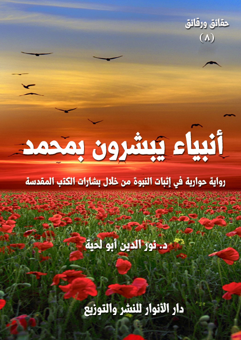

الكتاب: أنبياء يبشرون بمحمد
المؤلف: أ.د. نور الدين أبو لحية
الناشر: دار الأنوار للنشر والتوزيع
الطبعة: الثانية، 1437 هـ
عدد الصفحات: 317
ISBN: 978-620-2-34440-1
لمطالعة الكتاب من تطبيق مؤلفاتي المجاني وهو أحسن وأيسر: هنا

التعريف بالكتاب
هذا الكتاب من الكتب التي حاولت فيها – من خلال الأدلة الكثيرة - أن أبين البراهين الدالة على صدق رسالة رسول الله صلى الله عليه وآله وسلم، وأن كل ما في الكون يدل عليها.
وهو يختص بما ورد في الكتاب المقدس من النبوءات الكثيرة المتعلقة برسول الله صلى الله عليه وآله وسلم، والتي حاول الكثير من رجال الدين أن يتكتموا عليها، أو يصرفوها عن محلها، أو يهونوا من شأنها.
ولذلك فإننا في هذه الرواية حاولنا أن نناقش تلك النبوءات من خلال حوارات ومناظرات افتراضية اعتمدنا فيها على المصادر التي اهتمت بهذا الجانب ابتداء مما كتبه الأولون من المهتدين إلى الإسلام كعلي بن ربن الطبري، وانتهاء بما كتبه المعاصرون كالشيخ أحمد ديدات وغيره.
أنبياء يبشرون بمحمد (6)
هذا الكتاب من الكتب التي حاولت فيها – من خلال الأدلة الكثيرة - أن أبين البراهين الدالة على صدق رسالة رسول الله صلى الله عليه وآله وسلم، وأن كل ما في الكون يدل عليها.
وهو يختص بما ورد في الكتاب المقدس من النبوءات الكثيرة المتعلقة برسول الله صلى الله عليه وآله وسلم، والتي حاول الكثير من رجال الدين أن يتكتموا عليها، أو يصرفوها عن محلها، أو يهونوا من شأنها.
ولذلك فإننا في هذه الرواية حاولنا أن نناقش تلك النبوءات من خلال حوارات ومناظرات افتراضية اعتمدنا فيها على المصادر التي اهتمت بهذا الجانب ابتداء مما كتبه الأولون من المهتدين إلى الإسلام كعلي بن ربن الطبري، وانتهاء بما كتبه المعاصرون كالشيخ أحمد ديدات وغيره.
أما بالنسبة للمصادر اليهودية والمسيحية فقد اعتمدنا فيها على الكتاب المقدس المعتمد لديهم، وإن كان هناك فروق بين الطبعات أو التراجم وضعنا ذلك في الهوامش، أو في متن الرواية.
ولهذا لم نعتمد إنجيل برنابا باعتباره محل شك لدى المسيحيين، ولا يصح أن نلزمهم في الاحتجاج بمصادر لا يعتمدونها.
وتدور أحداث الرواية حول زيارة البابا للمؤلف، وهو في حالة إيمانية عالية، ويخبره أنه ـ منذ شبابه ـ تعرض لأشعة كثيرة من شمس محمد صلى الله عليه وآله وسلم، ولكنه مع ذلك يعرض عنه لشبهات، أو لأسباب نفسية... ولكنه في الأخير قرر أن يعتنق الإسلام، ويترك أخاه التوأم ـ الذي كان يملي عليه الشبهات ـ بدله على كرسي البابوية.
والبابا وأخوه التوأم يرمزان للإنسان بشقيه: العقل والنفس... والحوار في الرواية جميعا بين هذين... والصراع فيها جميعا بينهما.
أنبياء يبشرون بمحمد (7)
وقد حكى البابا للمؤلف في هذا الجزء رحلته إلى الشام، حيث التقى فيها بالكثير من المهتدين إلى الإسلام بعد اطلاعهم على البشارات الواردة في الكتاب المقدس، والتي لا يمكن حملها إلا على رسول الله صلى الله عليه وآله وسلم.. وقد جرت بينه وبينهم مناقشات ومناظرات هادئة في هذه الجوانب.
وقد حاولت بقدر الإمكان أن أبسط المادة العلمية الواردة في الرواية حتى يتيسر على الجميع فهمها والاستفادة منها، لأن مثل هذه المعلومات لا يصح أن تبقى محصورة في الدراسات الأكاديمية، ولا بين المختصين من الباحثين فقط، بل ينبغي أن تنزل إلى الناس جميعا، لتخاطب عقولهم وقلوبهم وأرواحهم، فتزيدها يقينا وطمأنينة وإيمانا.
بالإضافة إلى ذلك تعلم كل محب لرسول الله صلى الله عليه وآله وسلم وكل حريص على دينه، كيف يجيب المخالف، بل كيف يقنعه... فهي تبين لهم منهج الحوار مع المخالفين، وتعطيهم من القدرات العلمية، والطرق المنهجية ما لا يملك معه المخالف إلا التسليم... وهدفها من كل ذلك أن تجعل من كل مسلم داعية إلى الله، ومحاميا يذب عن دينه، ويحمي حمى رسوله.
ونحب أن ننبه فقط إلى أن هذا الكتاب الموسوم بـ[أنبياء يبشرون بمحمد] جزء فقط من سلسلة البراهين المثبتة لرسالة رسول الله صلى الله عليه وآله وسلم.. وإلا فإن كل سلسلة [حقائق ورقائق] تهدف إلى هذه الغاية، سواء بالبرهنة عليها، أو برد الشبهات التي تثار حولها، أو بمواجهة من يزعمون لأنفسهم أنهم أتباع رسول الله صلى الله عليه وآله وسلم مع أنهم لا يزيدونه بسلوكاتهم المشينة وأفكارهم المتطرفة إلا تشويها وتحريفا.
أنبياء يبشرون بمحمد (8)
فتحت الباب، فأشرقت شمسان عظيمتان، أما إحداهما فملأت جوانب غرفتي بالنور المضيئ الهادئ الجميل.. وأما الثانية، فملأت جوانب نفسي بالسلام والطمأنينة والسعادة.
سألت الثانية: من أنت أيتها الشمس التي تنكسف لمرآها الشموس؟
أجابني بكلام يشع كما تشع الأنوار: أنا لست شمسا.. ولكني رجل بحث عن الشمس، وأحبها، فلما ظفر ببعض شعاعها كسته ما توهمته شمسا.
قلت: فأي شمس هذه التي وهبتك من إشعاعها ما أحالك شمسا، أو قريبا من الشمس؟
قال: إنها شمس محمد.. وأنا لم أظفر إلا ببعض أشعتها.
قلت: أي محمد هذا الذي كان شمسا؟
قال: أهناك محمد غير رسول الله؟.. ألم يصفه الله، فقال: {وَدَاعِياً إِلَى اللَّهِ بِإِذْنِهِ وَسِرَاجاً مُنِيراً} (الأحزاب:46)؟
قلت: أجل.. ولكن لم خصك بهذه الأشعة دون غيرك؟
قال: لا.. إنه لم يخصني.. كل من يريد أن يظفر بأشعة شمسه نالها.. ألا ترى الشمس التي تسقي بأشعتها الحقول والمزارع والجبال!؟
قلت: وكيف لا أراها.. بل هي تسقي بأشعتها البحار والمحيطات.. بل هي تمتد إلى الأفلاك التي تحيط بها، فتملؤها بالدفء والحنان..
قال: فمن تبخل عليه الشمس بأشعتها؟
قلت: الشمس لا تبخل.. ولا تستطيع أن تبخل إذا أرادت.. فأي صبي يمكنه أن يتحداها أن تحجب أشعتها عنه؟
قال: وهكذا محمد.. لم يكن بخيلا.. بل ظل شمسا تمد الخلق بالنور والدفء والحياة
أنبياء يبشرون بمحمد (9)
والجمال.
قلت: ولكن هناك من يحتجب عن شمس محمد.
قال: هو الذي يحتجب.. أما شمس محمد فهي ممتدة لا يتحداها شيء، ولا يمتنع منها شيء.
قلت: أنت لا تعلم.. نحن الآن في عصر لا يتقن شيئا كما يتقن فن وضع الحجب على الشمس.. ولا يكتفي بذلك.. فهو يسب الشمس ويلعنها ويرسم الرسوم الساخرة ليضحك من وجهها الجميل.
قال: ولكن الشمس مع ذلك لا تبالي بعبث العابثين، ولا سخرية الساخرين، فأشعتها الجميلة تظل مرسلة لتقول لهم بحنان: نعم أنتم استهزأتم بي، وسخرتم مني، ولكني مع ذلك أدعوكم لأن تحتموا من البرد الذي تعانيه أرواحكم، والظلمة التي تركد فيها حياتكم.
قلت: إن الأمر لا يتوقف عند هؤلاء الصغار.. لقد امتد الأمر إلى البابا.. بابا الفاتيكان.. ألا تعرفه؟.. ذلك الذي يحمل الصليب ويطوف به العالم.. لقد مد يده إلى الأيادي الآثمة، وراح يشجعها على وقاحتها.. بل راح ينافسهم في السباب والسخرية.
قال: والشمس لن تنحجب عن البابا كما لن تنحجب عن غيره.. أليس البابا خلق من خلق الله!؟.. أليس الله هو الرحمن الرحيم الذي جعل شمس محمد رحمة للعالمين!؟
قلت: بلى.. فقد قال الله تعالى: {وَمَا أَرْسَلْنَاكَ إِلَّا رَحْمَةً لِلْعَالَمِينَ} (الانبياء:107)
قال: فشمس محمد تشرق على البابا، كما تشرق على غيره.
قلت: ولكنه ملأ قلوبنا أحقادا وضغائن، فكيف تقول هذا؟
قال: ألم يكن هناك أعداء كثيرون لمحمد رموه بما رماه به البابا، وبما لم يرمه به؟
قلت: بلى.. هم كثيرون.. فمن قومه من رماه بالجنون والسحر.. ومنهم من رمى القمامات على جسده الشريف.. ومنهم من مد يده الآثمة ليقتله.
قال: أليس من هؤلاء من نالته أشعة محمد، فنعم بدفئها وحنانها؟
أنبياء يبشرون بمحمد (10)
قلت: أجل.. كثيرون هم.. يبدأون بسبه، وينتهون بحبه.
قال: فلم لا يكون البابا مثل هؤلاء.. يكون سبهم مقدمة لحبهم.. ويكون شكهم مقدمة لإيمانهم.. بل لإيمان الملايين الذين يدخلون في دين الله أفواجا؟
قلت: أجل.. ولكن البابا مختلف.. إنه مختلف تماما.. هو يمثل دينا من الأديان يتربع على مساحة هائلة من الأرض.. وهو يظفر لذلك من التقدير والمحبة والجاه ما لا يظفر به جميع ملوك الدينا.. وهو..؟
قاطعني قائلا: وهل يمنع كل ذلك من فضل الله أن يمتد إليه كما امتد لغيره.. ألم يمتد فضل الله إلى السحرة الذين دخلوا بأمنية واحدة هي أن يهزموا موسى.. ولكنهم خرجوا، وقد نالتهم أشعة موسى التي أطفأت الظلمات التي تقبع فيها أرواحهم؟
قلت: صحيح هذا.. وقد ذكره القرآن الكريم، وكرر ذكره.
قال: لم يكرر ذكره إلا لتعتبروا.. فكما أن السحرة يمكن أن يؤمنوا، فغيرهم ممن هو دونهم أو فوقهم يمكن أن يؤمن.. فلا تحجبوا أحدا عن شمس الله التي تمتد إلى الآفاق.
قلت: صدقت في هذا..
قال: فأخبر قومك أن الله التواب الهادي النور الرحيم لا تنحجب شمس نوره ورحمته وهدايته وتوبته عن الكل.. ولو أنك تصورت أن أحدا من الخلق أعظم من أن يناله الله بنوره ورحمته وهدايته وتوبته، فقد اتهمت الله وعظمت المخلوق.
قلت: أجل.. وكل قومي يؤمنون بهذا، ولا يحتاجون مني أن أذكرهم.
قال: هم يذكرون ذلك، ولكنهم يغفلون عنه.
قلت: ما تقصد بغفلتهم؟
قال: أراهم يسلمون للقضايا، وينكرون مستلزماتها، بل ويشاحنون فيها.
قلت: ما تقصد؟
أنبياء يبشرون بمحمد (11)
قال: ما كنا نتحدث عنه.. أرأيت لو أنك دعوت قومك إلى استعمال أسلوب آخر مع هؤلاء الجاحدين الذين واجهوا رسول الله بالمحاربة؟
قلت: وما هو هذا الأسلوب؟
قال: أن ترسلوا مثلا لمن رسم الرسوم الساخرة لرسول الله صلى الله عليه وآله وسلم رسالة هادئة مضمخة بمسك طيب تقولون له فيها: نحن نعذرك يا أخي.. فقد وصلتك أنباء كاذبة عن الشمس التي نستدفئ بأشعتها.. فلذلك أنت لم تتصرف من منابع الحقد، وإنما تصرفت من منابع الجهل والشبهة، فلذلك ندعوك لأن ترى نبينا، وتتعرض لأشعته، لترى الحقيقة من منابعها.. تصرف كما تصرف السحرة الذين ألقوا حبالهم، فالتقمتها عصا موسى.
ولا تكتفوا بذلك، بل أرسلوا إليهم بدموعكم تعتذورن إليهم بها.
قلت: ما تقول؟.. هم الذين يعتذرون، أم نحن الذين نعتذر؟
قال: لولا تشويهكم صورة نبيكم، وتشويهكم دفء الأشعة التي يرسلها ما وقع الساخرون فيما وقعوا فيه.. لذلك كنتم أنتم سبب حجابهم.. وكنتم أنتم سبب سخريتهم.. ولذلك كنتم أنتم سبب ما وقعوا فيه من الإثم.. والخلق الذي علمكم إياه رسولكم يدعوكم إلى الاعتذار لهم.
قلت: فما نقول لهم في اعتذارنا.. أو ما عساها دموعها أن تقول لهم!؟
قال: ألم يقص عليكم ربكم قصة امرأة العزيز؟
قلت: بلى.. فأي حاليها تريد؟
قال: عندما طلب منها الملك أن تدلي بشهادتها حول يوسف عليه السلام.. ماذا قالت؟
قلت: لقد قالت ـ كما ذكر القرآن الكريم ـ: {الْآنَ حَصْحَصَ الْحَقُّ أَنَا رَاوَدْتُهُ عَنْ نَفْسِهِ ذَلِكَ لِيَعْلَمَ أَنِّي لَمْ أَخُنْهُ بِالْغَيْبِ وَأَنَّ اللَّهَ لا يَهْدِي كَيْدَ الْخَائِنِينَ} (يوسف:51 ـ 52)
قال: فهل كان في كلامها براءة يوسف عليه السلام مما اتهموه به؟
قلت: أجل.. ولذلك لم يرض يوسف عليه السلام أن يخرج قبل أن تثبت براءته.
أنبياء يبشرون بمحمد (12)
قال: لم؟
قلت: حتى لا يتعرض لأي سخرية أو استهزاء.
قال: فقد كانت امرأة العزيز التي خانته هي التي أثبتت براءته؟
قلت: أجل..
قال: بنسبة الخيانة إليها لا إليه.
قلت: ذلك واضح، وقد صرحت به الآية.
قال: فكذلك فافعلوا.. ولا تكونوا أقل شهامة من امرأة العزيز.. اخرجوا للعالم.. وقولوا بأعلى صوتكم: اعذرونا يامن تسكنون هذا العالم.. لقد خنا نبينا.. لم نستطع أن نعطي صورة حسنة عنه.. ولم نف بالعهود التي عهد إلينا بها.. فلذلك لكم أن تسبونا نحن.. ولكم أن تسخروا منا نحن.. أما نبينا فهو الطهر والصفاء والصدق والإخلاص.. ولا يحق لكم أن تسبوا هذه المعاني السامية.
قلت: أنرسل بمثل هذا الكلام لهؤلاء الساخرين؟
قال: أذيعوه على العالم أجمع حتى لا تكونوا حجبا بينهم وبين أشعة محمد صلى الله عليه وآله وسلم.
قلت: وهل ترى ذلك مجديا؟
قال: لا يضرك أن يجدي ذلك أو لا يجدي، فالهداية بيد الله، لا بيدك ولا بيد غيرك.. والله هو الديان.. فلا تزاحموا الله دينونته لعباده.
قلت: ولكن قلوبنا الفائضة بحب رسول الله.. كيف ترضى أن يدنس أو يسب؟
قال: رسول الله أرفع من أن يسب أو يدنس.. هو كالشمس.. تراها، وتستفيد منها، ولا تعيش من دونها.. ولكنك مع ذلك لا تحلم بأن تصل إليها، فأشعتها ونورها أعظم من أن تصل إليه الأوهام والأحلام.
قلت: أجل.. ولكن الحرارة التي تتقد في قلوبنا تمنعنا من ممارسة ما دعوتني إليه من أساليب؟
أنبياء يبشرون بمحمد (13)
قال: أليس المحب مطيعا لحبيبه؟
قلت: أجل.. فلا حب لعاص.. وقد قال تعالى: {قُلْ إِنْ كُنْتُمْ تُحِبُّونَ اللَّهَ فَاتَّبِعُونِي يُحْبِبْكُمُ اللَّهُ وَيَغْفِرْ لَكُمْ ذُنُوبَكُمْ وَاللَّهُ غَفُورٌ رَحِيمٌ} (آل عمران:31)
قال: فقد مارس رسول الله صلى الله عليه وآله وسلم هذا الأسلوب مع الذين رموه بما رموه به من صنوف السخرية والاستهزاء.. ألم يرد في السيرة الإخبار عن إسلامهم بعد ضلالهم، وحبهم لنبيهم بعد بغضهم له؟
قلت: صحيح هذا.. والسيرة تمتلئ بأخباره.
قال: ليست السيرة التي تدرسونها فقط.. بل الحياة جميعا.. فمحال على العقل والقلب والروح التي تتعرض لأشعة محمد صلى الله عليه وآله وسلم أن ترغب عنها.. إنها أشعة تأسر الكيان كله.
قال ذلك بلهجة ممتلئة أشواقا.. نظرت إليه، وهو واقف أمام باب داري، فاستحييت، وقلت معتذرا: اعذرني.. لقد انشغلنا بالحديث عن رسول الله صلى الله عليه وآله وسلم عن واجب إكرامي لك.
قال: ألا تسألني عني؟
قلت: لاشك أنك ولي من أولياء الله..
قال: كل من تعرض لشمس محمد صلى الله عليه وآله وسلم نال من ولاية الله وتقريبه ما لم يكن يحلم به.
قلت: فمن أنت منهم؟
قال: البابا..
قلت: أي بابا؟... وما بابا؟
قال: بابا الفاتيكان.
قلت: أتسخر مني يا ولي الله؟
قال: معاذ الله أن أسخر من أحد بعد سخريتي من رسول الله صلى الله عليه وآله وسلم.. فقد جعلت وفاء توبتي بيني وبين ربي أن لا أسخر من أحد من خلقه.
أنبياء يبشرون بمحمد (14)
كدت أسقط، وأنا أستمع لكلامه، قلت: أحقا ما تقول؟.. أأنت البابا؟.. بابا الفاتيكان.. الذين يقولون عنه (قداسة البابا)
قال: لقد كانت هذه القداسة التي ينسبونها لي هي الحجاب الأعظم الذي حال بيني وبين نور محمد.. ولكني تخلصت منها.. وقد أعطاني الله أشرف وسام بعد تخلصي منها.. لقد أعطاني وسام العبودية.. فأنا الآن عبد الله.. لقد طرحت بطرحي لتلك القداسة جميع الحجب التي كانت تحول بيني وبين الله.. وبيني وبين الكون.. وبيني وبين محمد.
قلت: لا أكاد أصدق ما أسمع..
قال: من عرف الله، وعرف قدر الله، وعرف فضل الله لم يتعجب من شيء..
قلت: ولكن من كان يصدق أن يسلم البابا.. ذلك الذي أقيمت المظاهرات العريضة تندد به، وتحرق صوره..
قال: دعهم يحرقوا صوره.. فهم يحرقون الكبرياء التي كانت تحول بينه وبين أشعة محمد.. لقد قمت بإحراق صوري.. وإحراق ثيابي.. وإحراق كل ذلك الجاه العريض الذي كان يحول بيني وبين منابع النور والهداية والحقيقة.
قلت: ولكني لا أزال أرى البابا يحمل صليبه، ويرتدي طيلسانه.. كيف هذا.. هل أنت شقان.. شق معي.. وشق في الفاتيكان يحكم رعيته التي تمتد في الأقاليم السبعة.
قال: لا.. البابا واحد.. وهو الذي يقف أمامك.
قلت: والآخر.. الذي تنقل لنا وسائل الإعلام صوره.
قال: تلك قصة طويلة.. ولن تعرف آخرها حتى تسمع أولها.
قلت: فهل ستقصها لي؟
قال: أجل.. لقد أمرت بقصها عليك ليسمعها العالم.. لعله يتعرض لأشعة محمد التي تعرض لها البابا.. فيعود إلى الله كما عاد البابا.
أنبياء يبشرون بمحمد (15)
قلت: ولكن العالم سينكر هذه القصة.. وسيضحك علي.
قال: لا ينبغي لمن تعرض لأشعة محمد أن يحجبه شيء.. لقد حجبتني الكراسي التي كنت أجلس عليها.. وحجبتني النياشين التي قلدوني إياها.. ولكني الآن حر.. لا يقيدني شيء.
قلت: فمن أمرك بقصها علي؟
قال: من جعله الله سببا لهدايتي.
قلت: فهو يعرفني إذن!؟
قال: لا شك في ذلك.
قلت: فمن هو؟
قال: أنا نفسي لا أعرفه.. لقد كان كالنور الذي نرى به، ولكنا لا نراه.. وإذا أردنا أن نلمسه لم نلمس إلا الهباء.
قلت: زدتني حيرة.
قال: لا حيرة لمن عرفه..
قلت: فصفه لي.
قال: لا يمكن أن أصفه بأكثر مما كان يصف نفسه.
قلت: فبم يصفها؟
قال: بالنقطة التي تحت الباء (1).
قلت: عرفته.. إنه معلمي.. معلم السلام.. ما أعظم شوقي إليه.. كيف تركته؟
قال: هو يأمرك بأن تحمل قلمك وقراطيسك، وتكتب كل ما أمليه عليك من قصتي.
قلت: سمعا وطاعة لمعلمي.. فهلم معي إلى محل صالح نجلس فيه، لتحدثني عنك..
__________
(1) هذه إشارة كان يستعملها كثير من الصالحين للدلالة على العبودية، وقد جعلناها رمزا لمعلم السلام، ولمن تحقق بمعاني السلام الشامل.
أنبياء يبشرون بمحمد (16)
وتحدثني عن الأشعة التي تعرضت لها.
-\--\-
لست أدري... هل كانت هذه القصة التي حدثني حديثها البابا حلما جميلا رأيته وتلذذت برؤيته... أم هي حلم من أحلام اليقظة أفرزته حالة الحزن التي عشتتها بعد ما سمعت تصريحات البابا... أم هي قصة واقعية حدثت لي، لم تفطن لها وسائل الإعلام لتنشرها... أم هي قصة واقعية لم تحدث بعد، ولكنها ستحدث بعد حين؟
ولا يهمني أي واحد من هؤلاء كان... ولكني أعلم أن البابا وغير البابا لو مر بتجربة هذا البابا الذي جاءني وحدثني، فسينال من أشعة محمد صلى الله عليه وآله وسلم ما شمل العالمين.
وأنا من منطق الأشعة التي نلتها بفضل الله من شمس محمد صلى الله عليه وآله وسلم لا أحب للبابا، ولا لرسامي الرسوم الساخرة، ولا لمن يبدعون الفنون في سب محمد صلى الله عليه وآله وسلم، ويقيمون المسابقات المغرية لأجل ذلك، إلا أن يتعرضوا لأشعة شمسه صلى الله عليه وآله وسلم.. وسيكتفون بالتعرض لها عن كل جواب أو جدل.
ومن هذا المنطق أخاطب إخواني الذين امتلأت قلوبهم غيرة على رسول الله لأقول لهم: لكم أن تغيروا على رسول الله.. ولكم أن تفعلوا كل ما تنتجه هذه الغيرة من نتاج.. ولكن لا تفعلوا شيئا واحدا.. لا لأنه يؤذي هؤلاء الساخرين، ولكن لأنه يؤذي رسول الله.. لا تقفوا حجابا بين شمس رسول الله وبين هؤلاء الناس.. فرسول الله ليس رحمة خاصة بكم.. ولكنه رحمة للعالمين.
-\--\-
اتخذنا مجلسا صالحا في البيت.. وراح البابا يغوص في حديثه، قال:
كل قصتي تتلخص في ثلاثة نفر: أنا ورجلان.
أما أنا.. فرجل ولد في حضارة تمتلئ بكل المغريات.. فعزف عنها وولى وجهه نحو قبلة العقل والروح والكمال.. فلذلك لم أهتم بما يهتم به أترابي من مغريات تحول بينهم وبين البحث عن الحقائق.
أنبياء يبشرون بمحمد (17)
ومع ذلك.. فقد كان لي عقل حرون لا يكاد يسلم لشيء.. فهو يجادل ويناقش ويبحث.. لا يكل في ذلك، ولا يمل.. ثم لا يقتنع إلا بعد أن يرده اليقين الذي لا يشك فيه.. والحق الذي لا يمازجه أي باطل.
البعض يشبهني بالعقل المجرد.. ولكني لا أرى نفسي كذلك.. فمع أني إنسان عقلاني بطبعي إلا أن البيئة الدينية والدنيوية التي عشتها جعلت عقلي معقولا عن التسليم.. وهذا ما جعلني أتأخر مع التسليم للحق.. مع توفر كل دواعي التسليم له.
هذا هو أنا.. وهذا سر تعرضي لتلك الأشعة الكثيرة من شمس محمد.. فقد كان لي من الكثافة ما يتطلب أشعة كثيرة تخرق ذلك الجدار الصلب الذي يجثم على قلبي وروحي.
هذا هو أنا..
أما الرجل الأول، فقد كان أخي التوأم، ولا يعرفه أحد من الناس إلا خاصة خاصتي، وقد كان له من الشبه بي ما يجعلني أشك في نفسي، بل أحيانا أشعر أني لست غيره، فقد كانت خواطرنا تتوارد في المواضيع الواحدة.. ولكن أخي هذا مع ما أكنه له من احترام كان هو الحجاب الأعظم الذي حاول كل جهده أن يمنع سريان أشعة شمس محمد للوصول إلى نفسي وقلبي وعقلي وروحي..
أما الرجل الثاني، فهو صاحبك الذي حدثتك عنه، وقد كان يأتيني، فلا أعلم من أين جاء، ويذهب، ولا أعلم أين انصرف.. وفد كان هو النور الذي دلني على أشعة محمد.. ولم أكن أتحرك إلا بهدايته ودلالته.
هؤلاء هم الذين قامت عليهم حياتي، وهؤلاء هم الذين تدور عليهم رحلاتي التي رحلتها للوصول إلى أشعة محمد.
قلت: عرفت أبطال قصتك.. فمن أين مبدؤها؟
قال: من رؤيا رأيتها.. فأحيانا تتلخص حياة الإنسان في رؤيا.
أنبياء يبشرون بمحمد (18)
قلت: صدقت، وقد ذكر الله عن يوسف عليه السلام أن حياته لخصت في رؤياه التي قصها الله تعالى علينا، فقال: {إِذْ قَالَ يُوسُفُ لَأَبِيهِ يَا أَبَتِ إِنِّي رَأَيْتُ أَحَدَ عَشَرَ كَوْكَباً وَالشَّمْسَ وَالْقَمَرَ رَأَيْتُهُمْ لِي سَاجِدِينَ} (يوسف:4)
قال: هذه رؤيا يوسف عليه السلام.. أما رؤياي التي انطلقت منها رحلتي، فهي أني رأيت العذارء.. وهي في جمال الشمس، وأنوار القمر، وحلاوة الربيع..
قلت: بورك لك هذه الرؤيا.. فنعم من رأيت.
قال: رأيتها تنظر إلي بنوع من الشفقة والرحمة، وقد كنت حينها أكابد من البرد والظلمة والألم ما لا يتحمله البشر.. صحت فيها مستغيثا: يا مريم المقدسة.. دليني على أشعة الشمس التي تطفئ ظلمتي، وتذهب هذا الزمهرير الذي تكتوي به أعضائي.
فالتفتت إلي، وقالت: ابحث عن الشمس التي بشرت بها الأنبياء، وتحطمت أمام أشعتها الطواغيت.. ومن أفواهها سارت الكلمات المقدسة.
ابحث عن الشمس التي فتحت لها خزائن العلوم، وخرقت لها أسوار الأقدار، وامتلأت القلوب حبا لها، وشوقا إليها.
ابحث عن الشمس التي هي رحمة وعدل وسلام.
ابحث عن الشمس التي تبشرك بحقيقة الوجود وحقيقة الإنسان، وحقيقة الحياة (1).
فلن ينقذك من بردك وظلمتك إلا هذه الشمس.
قلت: من هي هذه الشمس أيتها القديسة المنورة بأنوار الحقائق؟
قالت: سر.. واخلع نعليك (2).. فسوف تجد من يدلك على الطريق.. فقد جعل الله لكل ضال هاديا.. ولكل جاهل معلما..
__________
(1) في هذه الكلمات إشارة إلى الكتب المتعلقة بهذا الباب من سلسلة [حقائق ورقائق]
(2) خلع النعلين إشارة إلى التخلص من كل الحجب التي تحول بين الباحث والحقيقة التي يبحث عنها.
أنبياء يبشرون بمحمد (19)
قلت: فعلميني أنت..
قالت: لكل معلمه الذي يتعلم منه..
ثم انصرفت.. وقد تركتني محتارا في رؤياي، لا أجد لها تأويلا.. ولا أجد من ألجأ إليه ليفسرها لي.
في الصباح جاءني أخي التوأم الذي يشبهني وأشبهه، فقصصتها عليه، وسألته عن سرها، فسكت برهة، ثم قال: ليس هناك غير المسيح.. ولن يخلصك غير المسيح.. فلا تبحث عن أي أشعة.. فليس هناك غير شمسه.
قلت: ولكنها ذكرت أشياء كثيرة.. أشياء كثيرة لا أراها تنطبق على المسيح الذي أعرفه.
نظر إلي نظرة فيها بعض القسوة، وقال: لا تشتغل بالأحلام.. واشتغل بما يقربك من المسيح.. فمن اقترب من المسيح نال من أشعته ما يحميه من كل ظلمة، ويدفئه من كل برد.
قلت: فكيف أقترب من المسيح؟
قال: هو ذا الكتاب المقدس أمامك.. وهي ذي أسفار القديسين تمتلئ بها مكتبة بيتك.. وهي ذي الكنيسة تعج بالمصلين.. فالأجأ إليها، وتعلم من المسيح كيف تصل إلى الخلاص..
قلت: ولكني لا أجد في نفسي رغبة في ذلك.. فأنا عقلي بطبعي.. وليس لي من الميل للتدين ما يجعلني أغوص فيما تذكره لي.
قال: لا تنحجب بعقلك.. وسر نحو المسيح ليعلم عقلك ماذا يقرأ، وكيف يقرأ.
قلت: أأعزل عقلي؟
قال: إن عزلك عقلك عن المسيح، فاعزله، فلا خير في عقل يحول بينك وبين ملكوت الله.
قلت: ولكن عقلي من خلق الله، وما طبع فيه من علوم من تعليم الله.
قال: ولكن عقلك قد تعشش فيه الشياطين، وتنفخ فيه من الوساوس والأوهام ما يحول بينك وبين الخلاص.
أنبياء يبشرون بمحمد (20)
قلت: أترى من يعتمد على عقله لن يصل إلى الخلاص؟
قال: من اعتمد على عقل يحجبه عن المسيح لن يصل إلى الخلاص.. فحقائق الإيمان أعظم من أن تسلم لها العقول، أو تصل لها العقول.
قلت: أنا أوافقك في عدم وصول العقل لحقائق الإيمان.. ولكن التسليم لها يحتاج إلى العقل.. وإلا لجأنا إلى الخرافة.
قال: أعظم خرافة هي الركون إلى العقل..
قال ذلك، ثم انصرف.. لست أدري هل اقتنعت بكلامه، أو لم أقتنع، ولكني وجدت نفسي أسير رغم عقلي لأقرأ كل ما سطر في مكتبة بيتنا الواسعة.. وكنت إذا ما اشتد علي شيء، أو أشكل علي أمر، ألجأ إلى رجال الكنيسة، فيفسرون لي ما أشكل علي.. وأقتنع بما يقولون، ولا أبالي بما يقول عقلي..
ظللت هكذا عشر سنوات.. وأنا لا همة لي إلا البحث في الأسفار، والتعمق في محاولة فهم أسرار المسيحية.
لا أكتمك أني أحب المسيح.. ولكني لم أكن أشعر حوله بما يقتضيه الإيمان المسيحي.. لقد كان في عقلي من التمرد ما يجعلني في معاناة مستمرة.
كنت أشعر أن الألوهية وما تقتضيه من صفات، وما تفعله من أفعال أعظم من أن تختصر فيما نعتقده نحن من إيمان.. كنت أنظر إلى الكون وامتداده، فأراه أوسع من التصورات التي نحملها عنه، وعن الإله الذي يمسك به.
لكني لم أكن أجسر على التصريح بهذا، بل لم أكن أجسر على التفكير به، وكنت أتعذب بذلك الضعف الذي يجعل روحي تتشتت شتاتا خطيرا.. فالمنطق الذي زعمت صلته بالإيمان كان منقطعا في نفسي انقطاعا لا يطمع معه في أي وصال.
ذات يوم جاءني أخي مستبشرا، وهو يقول: إن البابا.. بابا الفاتيكان سيزور قريتنا..
أنبياء يبشرون بمحمد (21)
وسنتشرف برؤياه، ولعلنا ننال من بركاته ما ننعم به إلى آخر الدهر.
في تلك الأيام كانت قريتنا مزدانة بكل أنواع الزينة، بل كان الناس من القرى المجاورة، والمدن المجاورة، والدول المجاورة يحجزون غرفا لهم في قريتنا، مما نشط اقتصادها، وملأها بالحيوية والنشاط.
في ذلك اليوم الموعود الذي ازدانت له السماء والأرض، دخل البابا قريتنا يتلك الهالة التي تحيط به من الوقار..
كان موكبا فخما اهتزت له القلوب.. وقد كانت التراتيل التي تتردد تملأ القلوب بأشواق عظيمة.. وكنت أرى الرجال الكبار الذي يملأون النفس مهابة صغارا بين يدي البابا، يتزاحمون على رؤيته، والمحظوظ منهم من نال من بركاته.
في ذلك اليوم دخل بعد جديد حياتي..
لقد كنت طموحا.. وكان طموحي هو الذي حال بيني وبين التخصص في الدراسات الدينية.. ولكني اليوم رأيت ما فيه البابا من الجاه الذي لا ينعم به إلا من هو مثله..
لقد طمحت في ذلك اليوم أن أصير بابا.. ولذلك حولت مسار حياتي كلها ليسير نحو هذا الاتجاه.. وقد كان لهذا فضله على تنعمي بالتعرض لأشعة محمد.. وقد كان كذلك الحجاب الذي حال بيني وبينها.
في ذلك المساء، سألت أخي: كيف يصير المرء بابا؟
ضحك، وقال: وهل تريد أن تصير بابا؟
قلت: لا أكتمك.. لقد كان للبابا من الاحترام ما يجعل الكل يحن لمنصبه.
قال: أنت مثلي.. فالبابا هو أقرب الناس إلى المسيح.. إنه وريث بطرس.. وبطرس تلميذ المسيح.. ولذلك أحن لأن أصير بابا.
كان أخي مخلصا في طلبه.. ولكني لم أكن أطلب إلا الجاه الذي ينالني من ذلك المقام الذي
أنبياء يبشرون بمحمد (22)
يتربع عليه البابا.
قلت: فكيف أصل إلى أن أصير بابا؟
قال: ذلك أمر صعب..
قلت: أهو مستحيل؟
قال: لا.. الصعب ليس مستحيلا.
قلت: فماذا أفعل؟
قال: أولا.. لا بد أن تحوز من العلوم ما يجعلك أهلا لهذا المنصب.
قلت: قد حزت الكثير منها.
قال: لا زال الكثير في انتظارك..
قلت: هذا يسير.. فما غيره؟
قال: أن تصير حواريا.
قلت: كيف أصير حواريا.. وقد مضت السنون الطوال بيننا وبين المسيح؟
قال: تسير في الأرض كما سار الحواريون.. وتقطع المفاوز والقفار تبشر بما بشر به الحواريون.
قلت: أأتغرب عن أهلي؟
قال: لن تثبت صدقك إلا بتغربك عن أهلك.
قلت: هذا صعب.. ولكني أطيقه.. فماذا أيضا؟
قال: أن تخدم الكنيسة.. فخدمتك الكنيسة تجعلك تترقى في مراتبها.. وهو ما يخول لك الوصول إلى الفاتيكان.. ومنه إلى كرسي البابوية.
قلت: كيف أحصل على هذا؟
قال: لا عليك.. هذا اتركه لي.. وسوف أرتقي بك في درجات الكنيسة ما يجعلك أهلا للوصول إلى ما تحلم به.
أنبياء يبشرون بمحمد (23)
قلت: البابا واحد.. فلماذا تسعى لي، ولا تسعى لنفسك.
قال: أنا أنت.. إن وصلت أنت وصلت أنا.. والمجلس الذي تجلس فيه أنت أجلس فيه أنا.. وإذا مرضت أنت خلفتك أنا.. وإذا أفسدت أنت أصلحت أنا.. ألسنا توأمين لا يستطيع أحد مهما أوتي من قوة حدس أن يفرق بيننا.
ضحكت، وقلت: هذا صحيح.
كان ذلك اليوم محطة مهمة في حياتي.. لقد سرت مع أخي إلى الكنيسة، وهناك وظفت وظائف بسيطة فيها.. ثم تدرج بي الأمر، بعد أن لمسوا في الصدق والإخلاص إلى أن كلفوني بالسير لبعض البلاد العربية، بلاد الشام الجميلة.. لأنقذ أقلية من المسيحيين هناك تعرضت لزحف المسلمين.
وقد تعلمت لأجل ذلك اللغة العربية، وأتقنتها، وتعلمت من فنون الحوار ما يجعلني أهلا لهذا الوظيفة.
امتطيت الطائرة السائرة نحو تلك البلاد.. وفيها تم لقائي بالرجل الذي أرسلني إليك، والذي كان يظهر متى شاء، ويختفي متى شاء.
جلست على كرسي في الطائرة، لا أزال أذكر ذلك، ولا أحسب أني أنساه، وقد ولد في نفسي عزم عظيم، وهمة لست أدري سرها.
لقد ذكرت رؤياي لمريم ـ والتي لم تكن تغادر ذهني ـ وصممت على أن أبحث عن سرها، بعد أن سرت في طريق الدين الذي كانت نفسي وعقلي تنفر منه.
وما استتمت هذه العزيمة في نفسي حتى التفت إلى الذي هو بجانبي، فإذا بي أجد صاحبك، مشرقا كالشمس، هادئا كصفحة الماء التي لم تعبث بصفائها التيارات.
قال لي: وأخيرا.. صممت على البحث عن الأسرار التي ذكرتها لك مريم الصديقة.
قلت: كيف عرفت ذلك؟.. لقد كان هذا الحلم بيني وبين نفسي، ولم أبح به إلا لأقرب
أنبياء يبشرون بمحمد (24)
الناس إلي، والذي يكاد يكون نفسي.
قال: لا تسأل عن الكيف.. فالكيف عقال عقل العقول عن الوصول إلى الحقائق.
قلت: فهل تراك تستطيع أن تفسر لي حلمي؟
قال: أنا لست مفسر أحلام.
قلت: فلم سألتني عنه إذن؟
قال: لأدلك، فقد رأيتك خلعت نعليك، فسارعت إليك.
قلت: لقد ذكرت لي العذراء هذا.. ولم أكن أفهم ما ترمي إليه.
قال: لقد كانت تدعوك لتخلع كل ما تعلمه من علم ورثته، لتبحث عن الحقائق التي يعقلها العقل، لا التي يرثها.
قلت: أتريد مني العذراء أن أصبح جاهلا؟
قال: كل من تلقى العلم وراثة أو تقليدا، فهو جاهل، ولو اتشح بطيالسة العلماء.
قلت: أراك تريد أن تزين لي ما لا يتزين أبدا.
قال: أرأيت لو دعتك نفسك لأن تكتب شيئا، فهل تكتبه على صفحة بيضاء، أم تكتبه على صفحة ملأتها كتابة؟
قلت: لا شك أني أبحث عن الصفحة البيضاء.
قال: فكذلك عقلك وقلبك لن يفهم الحقائق والعلوم، ولن يذوقها إلا بعد أن يتطهر كما تتطهر الأوراق البيضاء.
قلت: عرفت سر خلع النعلين، فما سر الأسرار التي دعتني العذراء إلى البحث عن صاحبها؟
قال: تلك شمس عظيمة زين الله بها سماء الحقائق، لا تنال بأشعتها شيئا إلا حولته جوهرا من جواهر النور، وياقوتة من يواقيت الهداية.
أنبياء يبشرون بمحمد (25)
قلت: فمن هو؟
قال: لقد ذكرت لك أن دوري هو الدلالة، لا التعريف.
قلت: فما الفرق بينهما؟
قال: الدلالة تدعوك إلى البحث والاجتهاد، فتتعرف على الحقيقة بعد أن تعاني الأمرين في الوصول إليها، أما التعريف، فهو تلقين لا يختلف عن التقليد.
قلت: فلم لم تكن معرفا؟
قال: من لم يعان في البحث عن الحقائق لم يقدرها قدرها، ولم يذقها.. وقد يؤديه الإلف إلى الغفلة عنها.
قلت: صدقت.. وإني أرى الرجل الغني الذي كسب المال بجهده لا يكاد يفرط فيه مع كثرته، بينما أرى أولاده الذين جاءهم المال لقمة سائغة، لم يبذلوا فيه أي جهد، لا يكادون يمسكونه حتى يبذلوه من غير فائدة.
قال: فقس العلم على المال، وقس الحقيقة على العلم.
قلت: فما هي السبل التي أصل بها إلى تلك الأسرار؟
قال: بالبحث والنظر والاستماع.. احرص على أن يكون سماعك أكثر من كلامك.. واحرص على أن يكون كلامك بحثا عن الحق.. لا جدلا يحول بينك وبين الحق.
قلت: ومن أين لي أن أجد من أستمع له.. أتحسبني ذاهبا للجامعة لألاقي الأساتذة والطلبة؟
أنا ذاهب إلى عامة.. هم أحد طعام يأكله، أو شراب يشربه، أو لباس يلبسه.
قال: لن تصل إلى الحقائق حتى تسمع من العامة والخاصة.. ألا ترى عناية الله بعباده متجلية في الكائنات، بل في أبسط الكائنات؟
قلت: أجل.. فعناية الله تمتد لكل شيء، وتمده بما يتطلبه وجوده من حياة
قال: أترى هذه العناية التي وفرت لكل شيء حاجاته تغفل عن أي إنسان؟
أنبياء يبشرون بمحمد (26)
قلت: كلا.. لقد أرسل الله ابنه الوحيد لينقذ العالم.. وهو أكبر رمز لعناية الله بعباده.
رأيته وقد اشتد عليه ما سمعه، لكنه حاول أن يستر ذلك، ثم قال: من أراد أن يعرف الحقيقة، فعليه أن يتخلص من كل حجاب يحول بينه وبينها.
قلت: وما هي هذه الحجب؟
قال: الهوى، وطموح النفس، ونوم العقل.
قلت: أينام العقل؟
قال: النائم قد يستيقظ.. والخوف من موت العقل لا من نومه.
قلت: ولكن العقل قد يعقلنا عن المسيح.
قال: وقد يقربنا منه..
قلت: يستحيل هذا.. فالعقل أضيق من أن يعرف أسرار المسيح.
قال: وأسرار المسيح أعظم من أن نفهمها بعقول نائمة أو ميتة.. إننا نصير حينها كالمجانين.
قلت: أنت تخالف ما لقنته من علوم.. فمن أنت؟.. لكأني بي أعرفك.. وكأني بي لا أعرفك.
قال: من بحث فيما لا يعنيه، أوشغل عقله بما لا يغنيه، شغله الفضول عن الأصول، أوقطعه الفضول عن الوصول.
قلت: عن أي أصول.. وعن أي وصول؟
قال: الوصول إليه.. وأصول التعرف عليه.
قلت: على أي عائد تعود الهاء، فإني لم أرك تذكر قبلها شيئا.
قال: الهاء لا تعود إلا إليه.. فكل شيء يشير إليه.
قلت: دعني من كل هذا، فإني لا أكاد أفهم عنك شيئا، وأخبرني من أنت، وما ترمي من حديثك إلي؟
قال: أما السؤال الأول، فلن تطيق الجواب عنه، ومن الحماقة أن أحدثك فيما لا تعقل.
أنبياء يبشرون بمحمد (27)
وأما الثاني، فلن تعرفه سره الآن، ولكنك ستعرفه بعد حين.
ما قال هذا حتى جاءت المضيفة تطلب منه أن يعطيها أوراقه، فسار معها.. ولم يعد.
كان أول هدف لي بعد نزولي من الطائرة أن ألتقي بهذا الرجل الغريب.. سألت الكل.. فلم يدلني أحد.. هرعت إلى المضيفة التي طلبته لأسألها عنه، فضحكت، وانشغلت عني..
أنبياء يبشرون بمحمد (28)
في اليوم الأول خرجت باكرا من البيت، وسرت أتجول في تلك البلاد الجميلة التي تمتلئ بروائح القداسة التي فاحت بها أرواح النبيين.
ظللت فترة الصباح أسير على غير هدى.. وقد كان أول ما أفعله ـ على حسب ما تعلمت ـ هو التعرف على المنطقة، ثم على أهلها.
في منتصف النهار دب الجوع إلى بطني، فسرت طالبا مطعما أتغدى فيه.. لكن رجلا يبدو عليه الكرم ناداني طالبا مني أن أتغدى عنده.
سرت إليه، وحاولت التعرف عليه، قلت له: من أنت؟
قال: عبد الله.. واسمي إبراهيم.
قلت: أأنت مسيحي؟
قال: أجل..
قلت: أنا مثلك.. مسيحي أبا عن جد.
قال: أنا لست مسيحيا فقط.. بل إبراهيمي أيضا.. ألا ترى أن اسمي إبراهيم؟
قلت: كل مسيحي لا بد أن يكون إبراهيميا.. فإبراهيم من أنبياء العهد القديم الذين بشروا بالمسيح.
قال: وبشروا بمحمد..
انتفضت غاضبا، وقلت: ما تقول يا رجل.. كيف تكون مسيحيا، وتقول هذا؟
رد علي بهدوء: لأني مسيحي أقول هذا.. فقد تعلمت من المسيح الصدق والإخلاص، كما تعلمت من إبراهيم التضحية والإسلام..
قلت: تعلمت من إبراهيم الإسلام!؟
أنبياء يبشرون بمحمد (29)
قال: أجل.. فإبراهيم هو رمز الإسلام الأول.. لقد ذكره الله تعالى فقال: {مِلَّةَ أَبِيكُمْ إِبْرَاهِيمَ هُوَ سَمَّاكُمُ الْمُسْلِمِينَ مِنْ قَبْلُ} (الحج: 78)، ورد الله على تنازع الملل لإبراهيم، فقال: {مَا كَانَ إِبْرَاهِيمُ يَهُودِيّاً وَلا نَصْرَانِيّاً وَلَكِنْ كَانَ حَنِيفاً مُسْلِماً وَمَا كَانَ مِنَ الْمُشْرِكِينَ} (آل عمران:67)
قلت: أراك تكذب، وأنت تدعي الصدق.. وتغدر وأنت تدعي الوفاء.
قال: ما كذبتك، ولا خنتك.
قلت: فلم زعمت أنك مسيحي؟.. وهل يترك المسيحي كتبه ليقرأ كتابا إنما هو هرطقات وترهات وأساطير؟
قال: رويدك.. فلا ينبغي أن نسخر بشيء لا نعلمه.. المسيحية تطلب منا احترام الكل.
قلت: أجل.. ولكن كيف تزعم انتماءك للمسيحية، وأنت ترطن بنغمة أهل الإسلام؟
قال: أنا مسيحي أجل.. ولم أكذب في ذلك.. وإبراهيمي.. وها أنت تراني أبحث عن الأضياف، كما كان يبحث عنهم إبراهيم.. وفوق ذلك أنا محمدي..
قلت: كيف يجمع المرء بين هذه المتناقضات؟
قال: أنا جمعت ببينها.. بل لم أعرف المسيح إلا بعد أن عرفت محمدا.. لقد كان محمد هو دليلي إلى المسيح..
اسمعني يا أخي.. إن الصورة التي يحملها المسلمون عن المسيح أشرف بكثير من الصورة التي يخملها المسيحيون عنه.. ولذلك، فالمسلمون أقرب للمسيح وأجدر به من الذين يدعون انتسابهم للمسيح.
قلت: ما الذي رغبك في الإسلام حتى تركت من أجله دين آبائك وأجدادك؟
قال: أنا لم أترك دين آبائي وأجدادي.. ولكني صححت دين آبائي وأجدادي.. أما عن
أنبياء يبشرون بمحمد (30)
سؤالك.. فإن العمر جميعا لا يفي بالجواب عنه.. ولكني سأحدثك عن سر اختياري لاسم إبراهيم لأتسمى به بعد الإسلام:
لقد كان إبراهيم هو النبي الذي أعطاني المفتاح الذي أدخل به عالم محمد، وهو المصباح الذي استنرت به للوصول إلى أشعة محمد.
قلت: كيف ذلك؟.. هل زارك إبراهيم في الرؤى كما زارتني العذارء؟
قال: الرؤى تختلط فيها الحقائق بالأوهام.. ولكنه ترك وصية يقرؤها الكل، ويعرض عنها الكل..
قلت: أين هي؟
قال: في الكتاب المقدس.. الكتاب الذي تقرؤونه وتنتقون في قراءته، وتفهمونه، وتتملصون من فهمه.
قلت: أين ذلك في الكتاب المقدس؟
قال: في مواضع منه.. وسأذكر لك أمثلة تشير إليه (1).
__________
(1) رجعت في هذه البشارات وتفسيرها إلى مراجع كثيرة من أهمها:
1. إظهار الحق لرحمة الله الهندي.
2. الفارق بين المخلوق والخالق لعبدالرحمن باجه جي.
3. البشارة بنبي الإسلام، لأحمد السقا.
4. نبي أرض الجنوب، ع. م / جمال الدين شرقاوى.
ومنها مصنفات المهتدين من أهل الكتاب:
1. الدين والدولة لعلي بن ربّن الطبري.
2. تحفة الأريب في الرد على أهل الصليب لعبد الله الترجمان.
3. النصيحة الإيمانية في فضيحة الملة النصرانية للمتطبب.
4. إفحام اليهود للسموأل بن يحيى المغربي.
5. مسالك النظر في نبوة سيد البشر لسعيد بن الحسن الاسكندراني.
6. محمد (في الكتاب المقدس لعبد الأحد داود.
7. محمد نبي الحق لمجدي مرجان.
8. محمد (في التوراة والإنجيل والقرآن لإبراهيم خليل أحمد.
وغيرها.
ومنها بعض المواقع التي اهتمت بهذا الجانب، كموقع (الحوار الإسلامي المسيحي)، وموقع (العلامة أحمد ديدات)، وموقع (ابن مريم عن المسيح الحق).
بالإضافة إلى كتب كثيرة وجدتها في هذه المواقع، وخاصة كتب د. منقذ بن محمود السقار الكثيرة، والمنتشرة في هذه المواقع.
أنبياء يبشرون بمحمد (31)
قلت: حدثني.. فلعلك وقعت في شبهة منعتك من فهم أغراض الكتاب المقدس.
قال: ألم يخرج إبراهيم عليه السلام من أرض العراق إلى الأرض المباركة، أرض فلسطين؟
قلت: أجل.. وتذكر التوراة أن عمره كان حينذاك خمسة وسبعين عاما، ولما يولد له ولد حينها.. وقد بشره الله بعد خروجه، فقال: (أجعلك أمة عظيمة وأباركك وأعظم اسمك وتكون بركة.. وتتبارك فيك جميع قبائل الأرض) (التكوين 12/ 2 - 3)
قال: فقد وعد إبراهيم عليه السلام بأن يبارك له في ذريته.
قلت: أجل.. وما ذكرته من سفر التكوين يدل عليه.. بل إنه عندما ابتلى الله إبراهيم بذبح ابنه الوحيد يومذاك، فاستجاب وابنه لأمر الله، وحينها (نادى ملاك الرب إبراهيم ثانية من السماء، وقال: بذاتي أقسمت، يقول الرب، إني من أجل أنك فعلت هذا الأمر ولم تمسك ابنك وحيدك، أباركك مباركة وأكثر نسلك تكثيراً، كنجوم السماء وكالرمل الذي على شاطئ البحر، ويرث نسلك باب أعدائه) (التكوين 22/ 1 - 17)
وقد ظل هذا الوعد بالمباركة مستمرا إلى آخر أيام إبراهيم، فإنه عندما بلغ إبراهيم التاسعة والتسعين تجددت البركة من الله لإبراهيم، وقد جاء في الكتاب المقدس: (قال له: أنا الله القدير. سر أمامي وكن كاملاً، فأجعل عهدي بيني وبينك، وأكثرك كثيراً جداً.. أجعلك أباً لجمهور من الأمم، وأثمرك كثيراً جداً، وأجعلك أمماً، وملوك منك يخرجون، وأقيم عهدي بيني وبينك وبين
أنبياء يبشرون بمحمد (32)
نسلك من بعدك في أجيالهم عهداً أبدياً..) (التكوين 17/ 1 - 8).
قال: أليس إسماعيل الذي هو جد محمد من نسل إبراهيم؟
قلت: بلى.. بل هو ابنه البكر.. وقد ورد ذلك في الكتاب المقدس، فعندما أذلت سارة هاجر، فهربت هاجر من وجه مولاتها (قال لها ملاك الرب: ارجعي إلى مولاتك واخضعي تحت يديها. وقال لها ملاك الرب: تكثيراً أكثر نسلك فلا يعد من الكثرة، وقال لها ملاك الرب: ها أنت حبلى فتلدين ابناً وتدعين اسمه: إسماعيل، لأن الرب قد سمع لمذلتك، وإنه يكون إنساناً وحشياً يده على كل واحد، ويد كل واحد عليه، وأمام جميع إخوته يسكن " (التكوين 16/ 11 - 12)
قال: لقد بشرها الملاك إذن بابن عظيم يسود على كل أحد، لكنه أحياناً يكون على خلاف ذلك، فيتسلط عليه كل أحد.
قلت: أجل.. وقد ولدت هاجر ابنها إسماعيل فكان بكراً لإبراهيم، كما ورد في الكتاب المقدس: (وكان أبرام ابن ست وثمانين سنة لما ولدت هاجر إسماعيل) (التكوين 16/ 16)
قال: لقد وعد إبراهيم بالبركة في ذريته، فهل شملت هذه البركة ابنه إسماعيل؟
قلت: أجل.. فقد طلب إبراهيم من الله الصلاح في ابنه إسماعيل، ففي الكتاب المقدس: (قال إبراهيم لله: ليت إسماعيل يعيش أمامك) (التكوين 17/ 18)، فاستجاب الله له وبشره بالبركة فيه وفي ابن آخر يهبه الله له، فقد بشره بميلاد إسحاق من زوجه سارة فقال: (وأباركها وأعطيك أيضاً منها ابناً، أباركها فتكون أمماً، وملوك شعوب منها يكونون.. وتدعو اسمه إسحاق، وأقيم عهدي معه عهداً أبدياً لنسله من بعده، وأما إسماعيل فقد سمعت لك فيه، ها أنا أباركه وأثمره، وأكثره كثيراً جداً، اثني عشر رئيساً يلد، وأجعله أمة كبيرة) (التكوين 17/ 16 - 20)
قال: فقد وعد إبراهيم بالبركة في إسماعيل وإسحق.
قلت: أجل.. وقد ولد لإبراهيم أبناء آخرون من زوجته قطورة، لكن الله لم يعده بالبركة
أنبياء يبشرون بمحمد (33)
فيهم، ففي الكتاب المقدس: (عاد إبراهيم فأخذ زوجة اسمها قطورة، فولدت له زمران ويقشان ومدان ومديان ويشباق وشوحا) (التكوين 25/ 1 - 2)
قال: إن كل ما ذكرته من البركات يتفق فيه الكتاب المقدس مع القرآن الكريم.. فالقرآن يقرر بركة وعهداً لإبراهيم في صالحي ذريته من ابنيه المباركين إسماعيل وإسحاق، حيث يقول: {وَبَارَكْنَا عَلَيْهِ وَعَلَى إِسْحَاقَ وَمِنْ ذُرِّيَّتِهِمَا مُحْسِنٌ وَظَالِمٌ لِنَفْسِهِ مُبِينٌ} (الصافات:113)
ولكن هذه البركات ترتبط بصلاح الذرية، لا بمجرد كونهم من نسل إبراهيم، فقد قال تعالى: {وَإِذِ ابْتَلَى إِبْرَاهِيمَ رَبُّهُ بِكَلِمَاتٍ فَأَتَمَّهُنَّ قَالَ إِنِّي جَاعِلُكَ لِلنَّاسِ إِمَاماً قَالَ وَمِنْ ذُرِّيَّتِي قَالَ لا يَنَالُ عَهْدِي الظَّالِمِينَ} (البقرة:124)
قلت: وقد ورد في الكتاب المقدس هذا الشرط.. ففي الكتاب المقدس: (سر أمامي وكن كاملاً فأجعل عهدي..) (التكوين 17/ 1 - 2)، كما قال له: (إبراهيم يكون أمة كبيرة وقوية ويتبارك به جميع أمم الأرض، لأني عرفته، لكي يوصي بنيه وبيته من بعده أن يحفظوا طريق الرب، ليعملوا براً وعدلاً، لكي يأتي الرب لإبراهيم بما تكلم به) (التكوين 18/ 18 - 19)
قال: فأنت تقر إذن بالبركة في كل من ذرية إسماعيل وإسحق..
قلت: أجل.. ولكنها تبدأ بإسحاق دون إسماعيل، وقد ورد في الكتاب المقدس: (ولكن عهدي أقيمه مع إسحاق، الذي تلده لك سارة في هذا الوقت، في السنة الآتية) (التكوين 17/ 21)
قال: لا بأس.. لا يضرنا بمن تبدأ، ولا بمن تنتهي.
قلت: أجل.. لا يمكن أن أكابر في هذا.. فإسماعيل بورك كما بورك إسحق.
قال: فقد ظهر من بركات الله على ذرية إسحق كثير من الأنبياء، كما قال تعالى: {وَلَقَدْ آتَيْنَا بَنِي إِسْرائيلَ الْكِتَابَ وَالْحُكْمَ وَالنُّبُوَّةَ وَرَزَقْنَاهُمْ مِنَ الطَّيِّبَاتِ وَفَضَّلْنَاهُمْ عَلَى الْعَالَمِينَ}
أنبياء يبشرون بمحمد (34)
(الجاثية:16)
قلت: أجل.. فكل أنبياء بني إسرائيل كانوا من ذرية إسحق.
قال: فأين آثار البركة على ذرية إسماعيل الذي وعد في البركة في ذريته؟
قلت: نحن نتفق في أن بركة إسحاق هي النبوة والملك والكتاب والكثرة والغلبة، والتي نص عليها كتابكم، ولكن بركة إسماعيل تقتصر على تكثيره فقط، كما ورد في الكتاب المقدس: (وأما إسماعيل فقد سمعت لك فيه، ها أنا أباركه وأثمره وأكثره كثيراً جداً، اثني عشر رئيساً يلد، وأجعله أمة كبيرة) (التكوين 17/ 20)
قال: هذه مكابرة.. فالكثرة وحدها لا تحمل أي بركة.. نعم نحن نقر بأن البركة بدأت بإسحق.. كما نص على ذلك الكتاب المقدس، فلذلك لم يظهر في العرب نبي طيلة الفترة بين إبراهيم ومحمد.
ولكن هذا التأخر لا يعني الإلغاء.. بل هو يعني شيئا أعمق وأكثر دلالة.
قلت: وما هو؟
قال: إن قصر النبوة في ذرية إسماعيل عليه السلام في محمد صلى الله عليه وآله وسلم دليل على أهمية هذه الرسالة.. فالبركة فيها قد جمعت كل البركات التي فرقت على أنبياء بني إسرائيل.. هذه ناحية.
وناحية أخرى لها أهميتها هي أنه لو كان في ذرية إسماعيل من كان نبيا لربما اعتقد المكابرون بأن البركات انصرفت إليه.. ولكن اقتصار النبوة على محمد صلى الله عليه وآله وسلم دليل على أنه هو المبارك الموعود.
فلذلك يقال للمنكرين: دلونا على صدق الوعد الذي وعد الله به إبراهيم في حق إسماعيل؟
فإنهم لو بحثوا لم يجدوا غيره صلى الله عليه وآله وسلم دليلا على هذه البركة.. وقد كان البحث في سلسلة ذرية إسماعيل هو الذي هداني إلى هذا، وهداني بعده إلى الإسلام.
لقد ساد العرب المسلمون الأمم بمحمد صلى الله عليه وآله وسلم ودولته، وفيما عدا ذلك كانوا أذل الأمم وأضعفها وأبعدها عن أن يكونوا محلاً لبركة الله، إذ لا بركة في قبائل وثنية تكاثرت على عبادة
أنبياء يبشرون بمحمد (35)
الأوثان والظلم.
قلت: أراك تؤمن ببعض الكتاب، وتكفر ببعض.
قال: كيف ذلك؟
قلت: لقد نسيت أن تقرأ نصوصا مهمة في الكتاب المقدس توضح لك هذا الإشكال الذي وقعت فيه.
قال: وما هي؟
قلت: لقد نص الكتاب المقدس على أن الوعد في إسحاق وعد أبدي لن ينتقل إلى غيرهم، فقد جاء فيه: (فقال الله: بل سارة امرأتك تلد لك ابناً، وتدعو اسمه إسحاق. وأقيم عهدي معه عهداً أبدياً، لنسله من بعده.. ولكن عهدي أقيمه مع إسحق الذي تلده لك سارة في هذا الوقت في السنة الآتية) (التكوين 17/ 19 - 21)، فقد نص على أبدية العهد، أي أنه يظل في بني إسرائيل إلى يوم القيامة.
قال: لقد ذكرت لي أن ذلك مشروط باستقامتهم.
قلت: أجل.
قال: فقد غيروا وبدلوا، وقتلوا أنبياءهم، وأنتم تذكرون أنهم صلبوا المسيح، فكيف يظل العهد محصورا فيهم؟
قلت: ولكن نص الكتاب المقدس ذكر الأبدية، فقال: (وأقيم عهدي معه عهداً أبدياً)
قال: صحيح هذا.. ولكنه مشروط بالصلاح والطاعة.
قلت: وما تقول في لفظ الأبدية.. ألا يفيد الاستمرار إلى قيام الساعة؟
قال: لا.. لا يعني ذلك.. وإن عناه فهو مشروط بالاستقامة.
قلت: اسأل أي صبي من الصبية عن الأبد، فسيخبرك أنه الزمن اللامتناهي.
قال: لن أسأل الصبية، ولكني سأسأل الكتاب المقدس.
أنبياء يبشرون بمحمد (36)
قلت: كيف ذلك.. فالكتاب المقدس لن يجيبك إلا بما أجبتك به.
قال: ألم تقرأ في سفر الملوك: (فبرص نعمان يلصق بك وبنسلك إلى الأبد) (ملوك (2) 5/ 27)، فهل كان الأبد مقصودا هنا؟
سكت، فقال: لا.. لم يكن مقصودا.. ولو كان كذلك للزم أن نرى ذريته اليوم أمة كبيرة تتوالد مصابة بالبرص.
أخبرني متى انتهت مملكة سليمان.
قلت: انتهت مملكته منذ ما يربو على 2500 سنة على يد بختنصر البابلي.
قال: ولكن سفر الأيام يعبر عن تلك الفترة القصيرة التي امتد فيها ملك سليمان بالأبد، ألم تقرأ فيه: (وقال لي: إن سليمان ابنك، هو يبني بيتي ودياري، لأني اخترته لي ابناً، وأنا أكون له أباً، وأثبت مملكته إلى الأبد) (الأيام 28/ 6)
قلت: بلى.. قرأتها.
قال: فالمراد بالأبدية هنا الوقت الطويل فحسب.. وأزيدك شيئا.. لقد وقتَّ سفر التثنية الأبدية بما يساوي عشرة أجيال، فقال: (لا يدخل عموني ولا موآبي في جماعة الرب، حتى الجيل العاشر، لا يدخل منهم أحد في جماعة الرب إلى الأبد، من أجل أنهم لم يلاقوكم بالخبز والماء) (التثنية 33/ 3 - 4)، فالجيل الحادي عشر للمؤابي غير محروم من جماعة الرب، وهو دون الأبد والقيامة.
أخبرني.. في أي بلد يسكن الآن نبوخذ نصر، فإني أرغب في زيارته؟
قلت: ما بالك.. لقد اختلطت عظامه مع تراب الأرض.
قال: فكيف ورد في الكتاب المقدس إذن: (فتكلم دانيال مع الملك: يا أيها الملك عش إلى الأبد) (دانيال 6/ 21)؟
سكت، فقال: إن الأبد الذي أراده الكتاب المقدس ليس المقصود منه الأبد اللانهائي، أو
أنبياء يبشرون بمحمد (37)
الأبد المرتبط بالحياة الدنيا.. بل هو أبد مرتبط بالفترة التي تسبق البركة التي تظهر على ذرية إسماعيل.
وأقول لك: إن سوء فهمكم لمعنى الأبد هو الذي جعلكم تحجرون كل البشارات التي وردت في الكتاب المقدس على المسيح مع أنكم تتكلفون في ذلك.
قلت: دعنا من هذه، فهذه البشارة عامة لا خاصة، فهي لم تذكر اسما ولا صفة، بل ولا فردا.. بل هي بركة تشمل شعبا وأمة.. ويمكن تأويل ذلك بسهولة.
قال: أنا لا أريد أن أجادلك في هذا.. ولو أني أعلم أنك تعلم أنه لم يظهر في بني إسماعيل من هو أكثر بركة من محمد.. ولكني مع ذلك أتجاوز هذا لأدلك على النصوص التي لا يفهم منها غير محمد.
قلت: محال هذا.. لقد قرأت العهدين.. ولم أجد فيها اسم محمد، ولا أي إشارة إليه.
قال: أتصدق بما يفعله اليهود من الاعتماد على حساب الجمل (1) في التعرف على النبوءات؟
__________
(1) حسَابُ الجُمَّل طريقةٌ حسابية تُوضَع فيها أحرف الهجاء مقابل الأرقام، بمعنى أن يأخذ الحرف الهجائي القيمة الحسابية للعدد الذي يقابله وفق جدول معلوم، ويقوم حساب الجُمَّل في اللغة العربية، والذي يسمّى أيضًا حساب الأبجدية، على حروف أبْجَدْ أو الحروف الأبجدية، وهي: أبْجَدْ، هوز، حطِّي، كَلَمُنْ، سَعْفَص، قََرَشَتْ، ثَخَذْ، ضَظَغٌ. ومجموعها ثمانية وعشرون حرفًا؛ تسعة منها للآحاد، وتسعة للعشرات، وتسعة للمئات، وحرف للألْف.
فإذا قرأت عن حدث وقع في سنة (جمر)، مثلاً، فهذا يعني في حساب الجمّل أنّ الحدث قد وقع سنة (243)؛ لأن الحرف (ج) يقابله الرقم (3)، والحرف (م) يقابله الرقم (40)، والحرف (ر) يقابله (200). فمجموع الحروف ج + م + ر = 3 + 40 + 200 = 243. فإذا زاد العدد على الأَلف (ويقابله الحرف غ) وُضع قبل الحرف (غ) حرف مناسب، فالخمسة الآلاف يقابلها (هغ) وهي تساوي (5 × 1000)، وأربعون ألفًا يقابلها (مع) وتساوي (40 × 1000). وهكذا يكون تركيب أيّ عدد بالحروف التي تلائمه.
ويعتقد اليهود، وخاصة القبَّاليون منهم أن الأبجدية العبرية لها قداسة خاصة، ولها دور في عملية الخلق، وتنطوي على قوى غريبة قوية ومعان خفية، وبالذات الأحرف الأربعة التي تكوِّن اسم يهوه (تتراجرماتون)، فلكل حرف أو نقطة أو شرطة قيمة عددية.
ومن هذا المنطلق، فإن الحروف تنقسم عندهم بصفة عامة إلى ثلاث مجموعات: المجموعة الأولى الهمزة (رمز الهواء)، والمجموعة الثانية الميم (رمز الماء)، والمجموعة الثالثة الشين (رمز النار). وبإمكان الإنسان الخبير بأسرار القبَّالاه أن يفصل الحروف، ويجمع معادلها الرقمي ليستخلص معناها الحقيقي، كما كان من الممكن جَمْع الحروف الأولى من العبارات، وأن يُقرَأ عكساً لا طرداً ليصل المرء إلى معناها الباطني، وكانت هناك أيضاً طريقة الجماتريا.
وبذلك تصبح كلمات التوراة مجرد علامات، أو دوال، تشير إلى قوى ومدلولات كونية وبنى خفية يستكشفها مفسر النص الذى يخترق الرداء اللفظي ليصل إلى النور الإلهي الكامن. (انظر: الموسوعة العربية العالمية، وموسوعة اليهود واليهودية والصهيونية، لعبد الوهاب المسيري)
ونحب أن ننبه هنا إلى أن هناك حروفا اختلف في أرقامها يهود المشرق ويهود المغرب، والجدول التالي يذكر الرقم المعترف به عند يهود المشرق، أولا، ثم عن يساره الرقم المعمول به عند يهود المغرب، مع اعتبار أنَّ اللغة العبرية القديمة لا تحتوى على الستة أحرف الأخيرة (ثخذ ضظع):
أ... ب... ج... د... هـ... و... ز
1... 2... 3... 4... 5... 6... 7
ح... ط... ى... ك... ل... م... ن
8... 9... 10... 20... 30... 40... 50
س... ع... ف... ص... قلت:... ر... ش
90 - 60... 70... 80... 800 - 90... 100... 200... 300
ت... ث... خ... ذ... ض... ظ... ع
400... 500... 600... 700... 900 - 800... 1000 - 900... 300 - 1000
وقد أشرنا إلى هذا هنا لأنا سنعود إلى اعتماد هذا النوع من الحساب في البشارات التالية.
أنبياء يبشرون بمحمد (38)
قلت: هم يفعلون هذا.. وقد يخطئون، وقد يصيبون..
قال: المهم أنه مسلك من المسالك المعتمدة.. وأنا لا أذكره لك إلا تأكيدا لغيره من النبوءات.
أنبياء يبشرون بمحمد (39)
ألم تقرأ ما جاء في الجزء الثالث من السفر الأول من التوراة أن الله تعالى خاطب إبراهيم عليه السلام، فقال: (وأما في إسماعيل فقد قبلت دعاءك، قد باركت فيه، وأثمره، وأكثره جدا جدا)، ففي التوراة العبرية ورد النص هكذا: (ولشماعيل. شمعتيخا. هني. بيراختى. أوتو. وهفريتى. أوتو. وهربيتي. أوتو بماد، ماد)
فهذه الكلمة (بماد ماد) إذا عددنا حساب حروفها بالجمل وجدناه اثنين وتسعون، وذلك عدد حساب حروف (محمد) صلى الله عليه وآله وسلم فإنه أيضا اثنان وتسعون.
قلت: أنا لا أؤمن بهذا كثيرا.. فقد يكون مصادفة، فلماذا يرد مُلغّزاً مع إمكانية إيراده واضحا؟
قال: هذا أسلوب من أساليب الكتاب المقدس في نبوءاته.. بالإضافة إلى هذا، فإنه لو صرح به لبدلته اليهود وأسقطته من التوراة، كما أسقطت غيره من النصوص الصريحة.
بل يمكن أن يقال ـ على ما نعقتده من التحريف الذي مارسه اليهود مع هذه الكتب ـ بأن الله تعالى قد صرح به من قبل أن تغير التوراة، واليهود هم الذين غيروا الاسم الصريح بالرمز في مدينة بابل، ليعرفوه هم أنفسهم إذا جاء، ويسهل عليهم جحد نبوته إذا جاءهم بما لا تهوى أنفسهم.
قلت: أنت ترمي الغيب بسهام الظنون.. فكل ما تذكره من هذا الباب لا مستند له.
قال: لا.. لدي مستنداتي في ذلك، وقد كان السموأل (1)، وهو أحد أحبار اليهود المهتدين إلى الإسلام قد نبه إلى ذلك، ومثله فعل الحبر المهتدي عبد السلام في رسالته (الرسالة الهادية)
وقد ذكر هؤلاء أن اسم (محمد) صلى الله عليه وآله وسلم قد ورد في التوراة، في سياق بركة إسماعيل عليه السلام بحساب (الجمل) ليعرف الناس أنه بظهوره يبدأ ملك بني إسماعيل.
__________
(1) هو شموئيل بن يهوذا بن أيوب، الذي سمى نفسه بعد إسلامه: (السموءل بن يحي)، فقد ذكر في كتابه (بذل المجهود في إفحام اليهود) تحت عنوان: الإشارة إلى اسمه (: (وحساب الجمل عرف في الأمم القديمة، وهو الحساب بالحروف الأبجدية، فكل حرف أبجدي يُرمز له برقم. وتكمن أهميته في عدم كشف الخصم للأسرار) [انظر تفصيل ذلك في كتاب البشارة بنبي الإسلام لأحمد حجازي السقا: 1/ 135]
أنبياء يبشرون بمحمد (40)
قلت: لهم أن يقولوا ما يشاءون.. ولكني امرؤ صاحب منطق وعقل، وما كان لي أن أستسلم لمثل هذه الأوهام.. فبحساب الجمل تستوي الترهات والأباطيل مع الحقائق والمعارف.
قال: لا بأس.. لن ألح عليك في الاقتناع بهذا.. ولكني سأذكر لك إشارة أخرى تتعلق ببشارة إبراهيم، لن يفهم منها إلا محمد.
قلت: هاتها.. لنزيل عنك شبهتها.
قال: أو قل: لنتعلم منك علومها.. فلا يصح لمسيحي يخلص لمسيحيته أن يتكبر بما يعلمه.
قلت: قل قولك، ودعني من نصائحك، فلولا ثقتي في ديني ما قلتها لك.
قال: أتعرف برية فاران؟
قلت: وكيف لا أعرفها.. ألم أقل لك: إني رجل دين.. لقد ورد ذكرها في التوراة، فقد جاء فيها أنه بعد فطام إسحاق، هاجرت هاجر وابنها وأنها (مضت وتاهت في برية بئر سبع، ولما فرغ الماء من القربة طرحت الولد تحت إحدى الأشجار.. ونادى ملاك الله هاجر... قومي احملي الغلام، وشدي يدك به، لأني سأجعله أمة عظيمة، وفتح الله عينيها فأبصرت بئر ماء.. وكان الله مع الغلام فكبر، وسكن في البرية، وكان ينمو رامي قوس، وسكن في برية فاران، وأخذت له أمه زوجة من أرض مصر) (التكوين 21/ 17 - 21).
قال: فقد سكن إسماعيل ببرية فاران.
قلت: هذا ما تنص عليه التوراة.
قال: أنا لن أجدلك في مكان فاران، فستجد من يدلك عليها، ولكن.. ألم يرد التبشير بنبوءة تظهر فيها؟
قلت: أجل.. فقد جاء في الفصل العشرين: (أن الرب جاء من طور سينين، وطلع لنا من
أنبياء يبشرون بمحمد (41)
ساعير، وظهر من جبل فاران، ومعه عن يمينه ربوات القديسين فمنحهم العز، وحببهم إلى الشعوب، ودعا بجميع قديسيه بالبركة)
قال: هذه بشارة صريحة لا تنطبق إلا على محمد صلى الله عليه وآله وسلم.. ولكني لن أشرحها لك هنا.. فأنا إبراهيمي.. ولكني أريد أن أقنعك فقط بأن برية فاران محل من محال النبوة.. وأن ذرية إسماعيل التي استوطنت فاران محل صالح لها.
قلت: فنلترك هذه الإشارة للبحث.. فما كان لي أن لزمك بقولي، وما كان لك أن تلزمني بقولك.
قال: اسمح لي أن أسألك سؤالا له علاقة بمحل البشارة.
قلت: سل ما بدا لك.
قال: ألا تتحدث التوراة عن قصة أمر الله إبراهيم بذبح ابنه الوحيد؟
قلت: بلى.. وقد جاء في القصة التوراتية: (خذ ابنك وحيدك الذي تحبه إسحاق، واذهب به إلى أرض المريا.. فلما أتيا الموضع... لا تمد يدك إلى الغلام، ولا تفعل به شيئاً، لأني الله علمت أنك خائف الله فلم تمسك ابنك وحيدك عني... فدعا إبراهيم ذلك الموضع: (يهوه يراه) حتى إنه يقال اليوم: في جبل الرب يرى.. يقول الرب: إني من أجل أنك فعلت هذا الأمر ولم تمسك ابنك وحيدك أباركك مباركة....) (التكوين 22/ 1 - 18)
قال: هل تعتقد حقيقة أن هذا النص لم يحرف؟
قلت: أنا لا أعتقد بتحريف نص في الكتاب المقدس.
قال: إن هذا النص لو نزعت منه اسم إسحق المقحم إقحاما على من ينطبق؟
قلت: ما كان لي أن أنزع لفظا ورد في الكتاب المقدس، وإلا كنت محرفا.
قال: بورك لك في حرصك على كتابك.. ولكن أخبرني: هل حصل في يوم من الأيام أن كان إسحق وحيدا لإبراهيم عليه السلام؟
أنبياء يبشرون بمحمد (42)
ترددت قليلا، ثم قلت: لا..
قال: وليس لك أن تقول غير ذلك.. فقد كان إسماعيل وحيداً لإبراهيم أربع عشرة سنة.
صمت قليلا، ثم قلت: ولكنه كان ابنا لجارية، ولم يكن ابنا لسارة.
قال: فهل ينفي ذلك عنه كونه ابنا لإبراهيم؟
قلت: لا..
قال: فأنت تقر إذن بما قلت لك..
قلت: ومع ذلك يظل ابن جارية.
قال: مع ما يحمله قولك من عنصرية مقيتة إلا أني أسلم لك.. لقد كان إسماعيل ابن جارية.. فهل تنتفي عنه البكورية لأجل ذلك حسب الكتاب المقدس؟
قلت: لا.. لا تنتفي عنه، فمنزلة الأم لا تؤثر في بكورية الابن ولا منزلته، وقد جاء في التوراة: (إذا كان لرجل امرأتان إحداهما محبوبة، والأخرى مكروهة، فإن كان الابن البكر للمكروهة، فيوم يقسم لبنيه ما كان له لا يحل له أن يقدم ابن المحبوبة بكراً على ابن المكروهة البكر. بل يعرف ابن المكروهة بكراً ليعطيه نصيب اثنين في كل ما يوجد عنده، لأنه هو أول قدرته له حق البكورية) (التثنية 21/ 15 - 17)
قال: بالإضافة إلى هذا، فإن إبراهيم تزوج من هاجر.
لم أحر جوابا، فقال: ومما يبطل أن يكون الذبيح إسحاق ما عرفنا من قبل من أن إبراهيم قد وعد فيه بالبركة والذرية منه قبل ولادته، وأنه سيكون كعدد نجوم السماء (1) فالأمر بذبحه لا ابتلاء فيه، لأنه يعلم أنه سيكون لهذا الابن نسل مبارك (2)..
__________
(1) (انظر التكوين 17/ 21)
(2) وهو ما صرح به المسيح حسب إنجيل برنابا الذي نذكره هنا من باب الاستئناس، فقد حاء فيه: (قال له التلاميذ: يا معلم هكذا كتب في كتاب موسى: إن العهد صنع بإسحاق؟ أجاب يسوع متأوهاً: هذا هو المكتوب، ولكن موسى لم يكتبه ولا يشوع، بل أحبارنا الذين لا يخافون الله. الحق أقول لكم: إنكم إذا أكملتم النظر في كلام الملاك جبريل تعلمون خبث كتبتنا وفقهائنا.. كيف يكون إسحاق البكر وهو لما ولد كان إسماعيل ابن سبع سنين) (برنابا 44/ 1 - 11)، وفي التوراة المتداولة أن بينهما أربعة عشرة سنة. (انظر التكوين 16/ 16، 21/ 5)
أنبياء يبشرون بمحمد (43)
سكت قليلا، ثم قلت: وما فائدة كل هذا التحقيق.. وما علاقته بالبشارة؟
قال: أردت أن أقول لك بأن في التوراة إشارة صريحة إلى المحل الذي كان فيه إسماعيل، والذي وعد فيه بالبركة، وهو لا ينطبق إلا على مكة، البلد الذي ولد فيه محمد.
قلت: كيف هذا؟
قال: لقد حرف الذين ورثتم منهم الكتاب اسم الذبيح، فأدرجوه إدراجا في نص لا يحتمل غير إسماعيل.. ثم حرفوا اسم المكان المعظم الذي جرت فيه أحداث القصة، فسمتها التوراة السامرية (الأرض المرشدة).. وسمتها التوراة العبرانية (المريا)، ولعله تحريف لكلمة (المروة)، وهو اسم لجبل يقع داخل المسجد الحرام في مكة المكرمة اليوم، أي في المكان الذي درج فيه إسماعيل.
بالإضافة إلى هذا، فقد اتفق النصان العبري والسامري على تسمية ذلك الموضع (جبل الله)، ولم يكن هذا الاسم مستخدماً لبقعة معينة حينذاك.. لذا اختلف اليهود في تحديد مكانه اختلافاً
أنبياء يبشرون بمحمد (44)
بيناً فقال السامريون (1): هو جبل جرزيم (2)، وقال العبرانيون: بل هو جبل أورشليم الذي بني عليه الهيكل بعد القصة بعدة قرون (3).
قلت: ما فائدة ذكر الخلاف في هذه المسألة؟
__________
(1) (السامريون): كلمة معربة من كلمة (شوميرونيم) العبرية، أي سكان السامرة. ويُشار إليهم في التلمود بلفظة (كوتيم) وتعني (الغرباء)، وكان يوسيفوس يسميهم الشكيميين نسبةً إلى (شكيم) (نابلس الحالية). أما هم فيطلقون على أنفسم (بنو يسرائيل)، أو (بنو يوسف)، باعتبار أنهم من نسل يوسف. كما يطلقون على أنفسهم اسم (شومريم)، أي (حفظة الشريعة)، باعتبار أنهم انحدروا من صلب يهود السامرة الذين لم يرحلوا عن فلسطين عند تدمير المملكة الشمالية عام 722 ق. م، فاحتفظوا بنقاء الشريعة.
وهناك نقط اتفاق بين السامريين واليهود الحاخاميين قبل ظهور القبَّالاه وحركات الإصلاح الديني اليهودي، فكلا الفريقين يؤمن بالله الواحد وباليوم الآخر والملائكة، لكن السامريين احتفظوا بقدر أكبر من الوحدانية التي تراجعت في اليهودية إلى أن اختفت تماماً تقريباً. وقد تبنوا الجزء الأول من الشهادة الإسلامية وهو (لا إله إلا الله)، وكانوا يشيرون إلى الخالق بلفظة (إل)، أو (أللا) القريبة من كلمة (الله)، ولكنهم كانوا أيضاً يسمونه (يهوه) كما كانوا يؤمنون بأن موسى نبي الله الأوحد وخاتم رسله وبأنه تجسيد للنور الإلهي والصورة الإلهية.
والكتاب المقدَّس عند السامريين هو أسفار موسى الخمسة، ويُضاف إليها أحياناً سفر يشوع بن نون. وهو ـ في عقيدتهم ـ منزل من عند الله، وهم لا يعترفون بأنبياء اليهود ولا بكتب العهد القديم. بل إن أسفار موسى الخمسة المتداولة بينهم تختلف عن الأسفار المدونة في نحو ستة آلاف موضع (ويتفق نص التوراة السامرية مع الترجمة السبعينية في ألف وتسعمائة موضع من هذه المواضع، الأمر الذي يدل على أن مترجمي الترجمة السبعينية استخدموا نسخة عبرية تتفق مع النسخة السامرية).وهم ينكرون الشريعة الشفوية، شأنهم في ذلك شأن الصدوقيين والقرّائين (ومن هنا التشابه بين الفرق الثلاث في بعض الوجوه).كما أنهم يأخذون بظاهر نصوص التوراة.
ويُعَدُّ السامريون جماعة شبه منقرضة. فهم أصغر جماعة دينية في العالم، فعددهم لا يتجاوز خمسمائة، يعيش بعضهم في نابلس، ويعيش البعض الآخر في حولون (إحدى ضواحي تل أبيب) (انظر: الموسوعة اليهودية، للمسيري)
(2) جريزيم: جبل صخري يطل على الوادي الذي تقع فيه شكيم (نابلس فيما بعد). ويواجه جبل عيبال على ارتفاع 2849 قدماً فوق سطح البحر، و700 قدم فوق مدينة نابلس. وقد بُني فوق جريزيم أقدم هيكل للعبرانيين، ثم جاء داود - عليه السلام - فأبطله وعطله بعد أن نقل عاصمته إلى القدس.
وجريزيم جبل مقدَّس عند السامريين؛ بنوا فوقه هيكلهم ليحجوا إليه، واستمروا في تقديم القرابين عليه حتى بعد أن هدم يوحنا هيركانوس هيكلهم عام 128 ق. م. وقد أعادوا بناءه إلى أن هدمه الرومان في النهاية عام 67 ق. م. (انظر: الموسوعة اليهودية، للمسيري)
(3) بقي هذا الاختلاف من أهم الاختلافات التي تفرق السامريين عن العبرانيين، وقد استمر في حياة المسيح، كما سنرى.
أنبياء يبشرون بمحمد (45)
قال: الخلاف في مسألة مهمة مثل هذه يدل على أن كلا الموضعين ليس هو المحل المقصود، بل قد ورد عن المسيح ما يدل على هذا.. فعندما دخلت عليه امرأة سامرية، وسألته عن المكان الحقيقي المعد للعبادة، أفصح لها المسيح أن المكان ليس جبل جرزيم السامري، ولا جبل عيبال العبراني الذي بني عليه الهيكل.. وقد ورد النص هكذا في يوحنا: (قالت له المرأة: يا سيد أرى أنك نبي، آباؤنا سجدوا في هذا الجبل، وأنتم تقولون أن في أورشليم الموضع الذي ينبغي أن يسجد فيه، قال لها يسوع: يا امرأة صدقيني، إنه تأتي ساعة لا في هذا الجبل ولا في أورشليم تسجدون للآب، أنتم تسجدون لما لستم تعلمون، أما نحن فنسجد لما نعلم، لأن الخلاص هو من اليهود. ولكن تأتي ساعة وهي الآن حين الساجدون الحقيقيون يسجدون للآب بالروح والحق، لأن الآب طالب مثل هؤلاء الساجدين له، الله روح، والذين يسجدون له فبالروح والحق ينبغي أن يسجدوا) (يوحنا 4/ 19 - 24)
قال: وما المكان الذي تراه لذلك؟
قلت: التحقيق فيها أن قصة الذبح جرت في الأرض المرشدة، وهي أرض العبادة، وهي مكة أو بلاد فاران، واختلافهم دليل على صحة ذلك، واتفاقهم على اسم المكان بجبل الرب صحيح، لكنهم اختلفوا في تحديده، وقد ربطوه بتسميات ظهرت بعد الحادثة بقرون عدة، وتجاهلوا البيت المعظم الذي بني في تلك البقعة حينذاك، ويسمى بيت الله كما سمي الجبل الذي في تلك البقعة جبل الله.
وقد قال ميخا النبي عن مكة والبيت الحرام وعن إتيان الناس للحج عند جبل عرفات: (يكون في آخر الأيام بيت الرب مبنياً على قلل الجبال، وفي أرفع رؤوس العوالي يأتين جميع الأمم، ويقولون: تعالوا نطلع إلى جبل الرب) (ميخا 4/ 1 - 2)
كما تحدثت المزامير عن المدينة المباركة التي فيها بيت الله، والتي تتضاعف فيها الحسنات، فالعمل فيها يعدل الألوف في سواها، وقد سماها باسمها (بكة)، فجاء فيها: (طوبى للساكنين في
أنبياء يبشرون بمحمد (46)
بيتك أبداً يسبحونك، سلاه، طوبى لأناس عزهم بك، طرق بيتك في قلوبهم، عابرين في وادي البكاء (1) يصيرونه ينبوعاً، أيضاً ببركات يغطون مورة، يذهبون من قوة إلى قوة، يرون قدام الله في صهيون، يا رب إله الجنود اسمع صلاتي وأصغ يا إله يعقوب، سلاه، يا مجننا انظر يا الله والتفت إلى وجه مسيحك، لأن يوماً واحداً في ديارك خير من ألف، اخترت الوقوف على العتبة في بيت إلهي على السكن في خيام الأشرار) (المزامير 84/ 4 - 10)، فذكر أن اسمها بكة، وترجمته إلى وادي البكاء صورة من التحريف.
قلت: وما الفرق بين بكة وبين وادي البكاء؟
قال: فرق عظيم.. فبكة اسم لمكة البلد الذي ولد فيه محمد، وقد جاء في القرآن الكريم ذكرها بهذا الاسم، كما قال تعالى: {إِنَّ أَوَّلَ بَيْتٍ وُضِعَ لِلنَّاسِ لَلَّذِي بِبَكَّةَ مُبَارَكاً وَهُدىً لِلْعَالَمِينَ} (آل عمران:96)
قلت: ولكن ما الذي جعلهم يعدلون عن اسم بكة إلى اسم وادي البكاء؟
قال: لا أريد أن أخوض في المقاصد والنيات.. فالله هو رب النيات والمقاصد، وهو الديان الذي يحاسب عليها، ولكني أقول لك بأن التصحيف والتغير في الأسماء كثير عند الترجمة بين اللغات، بل بين الطبعات، فاسم (بارباس) مثلا في الترجمة البروتستانتية هو في نسخة الكاثوليك (بارابا)، وكذا (المسيا، ماشيح) و(شيلون، شيلوه) وغير ذلك كثير.
-\--\-
ما قال هذا حتى جاءنا الغداء، فدعاني إلى أكله، وأكل معي، وقد كان هشوشا بشوشا، يلح علي في الأكل من أنواع الطعام الطيب الذي حضره لي، وهو يرسل النكت بين ذلك.. وكأنني لم
__________
(1) في الترجمة الإنجليزية: through the valley of Ba'ca make it a well، والنص كما جاء في ترجمة الكاثوليك كالتالي: (يجتازون في وادي البكاء، فيجعلونه ينابيع ماء، لأن المشترع يغمرهم ببركاته، فينطلقون من قوة إلى قوة، إلى أن يتجلى لهم إله الآلهة في صهيون) (83/ 7 - 8)
أنبياء يبشرون بمحمد (47)
أكن أختلف معه، أو يختلف معي.
بعد انتهائي من الأكل، وتصميمي على العودة إلى الفندق الذي آوي إليه، مد يده إلي يدي، وصافحها بحرارة، وهو يقول: سررت بمعرفتك.. وأسأل الله أن يقيض لك من يعرفك به، ويدلك عليه.
وأخبرك قبل أن تنصرف بأن محمدا صلى الله عليه وآله وسلم الذي لم أملك إلا أن أؤمن به، أخبر عن هذه العلاقة التي تربطه بإبراهيم، فقال: (إني عند الله لخاتم النبيين، وإن آدم لمنجدل في طينته، وسأخبركم بأول أمري: أنا دعوة إبراهيم، وبشارة عيسى، ورؤيا أمي التي رأت حين وضعتني وقد خرج منها نور ساطع أضاءت منه قصور الشام) (1)
بل أخبر القرآن الكريم كتاب المسلمين المقدس على أن الله دعا لتلك البلاد التي ولد فيها محمد صلى الله عليه وآله وسلم بأن يكون فيهم رسول منهم، قال تعالى: {رَبَّنَا وَابْعَثْ فِيهِمْ رَسُولاً مِنْهُمْ يَتْلُو عَلَيْهِمْ آيَاتِكَ وَيُعَلِّمُهُمُ الْكِتَابَ وَالْحِكْمَةَ وَيُزَكِّيهِمْ إِنَّكَ أَنْتَ الْعَزِيزُ الْحَكِيمُ} (البقرة:129)
انصرفت عنه.. وقد كان ذلك بداية الحيرة.. وكان في نفس الوقت بداية إشراقة النور التي هبت علي من شمس محمد صلى الله عليه وآله وسلم.
__________
(1) رواه أحمد.
أنبياء يبشرون بمحمد (48)
في اليوم الثاني، قررت أن أسير إلى بعض المستشفيات لزيارة المرضى، والتعرف عليهم.. فالمرضى أرق الناس قلوبا، وأكثرهم حبا للخلاص واستعدادا له، وقد لقنت من الأساليب ما يملأ المرضى لهفة لسماعي، وحرصا على اتباعي.
رأيت رجلا في المستشفى ملقى على سريره، وكأنه يجود بنفسه، هرعت إليه، وسألته عن حاله، فتكلم بصوت تختلط فيه الحياة بحشرجة الموت، وقال لي: اسمعني جيدا.. إنني في آخر لحظات حياتي، وقد أرسلك الله لي، لأنطق أمامك بما عجزت طول عمري عن النطق به.
قلت: هون عليك يا أخي.. فلعل الله يمد في عمرك.. ولعلني أستطيع أن أنقذك بما أستطيع أن أنقذك به.
قال: لا.. لم يبق من عمري إلا مقدار هذه الكلمات التي لم يسمعها مني غيرك.. فلا تشغل نفسك بشيء.
قلت: من أنت أولا؟
قال: أنا يعقوب.. ولا يهمك من أي قبيلة أنا.. ولا من أي بلد..
قلت: أنت يهودي على ما يبدو.
قال: كنت يهوديا، ثم بان لي عوار اليهودية وتحريفها، فهرعت إلى المسيحية، علني أجد عند عبدة المسيح ما لم أجده عند عبدة العجل.
قلت: لا شك أنك وجدت ما تبحث عنه عندهم؟
قال: لا.. لقد ضل هؤلاء، كما ضل أولئك.
قلت: فأنت لا دين لك إذن..
قال: قد كنت قبل ساعة لا دين لي.. لكني الآن سأموت على خير دين، وأصدق دين.
أنبياء يبشرون بمحمد (49)
قلت: أي دين هذا الذي آثرته على كل الأديان؟
قال: دين محمد..
أصابتني رعشة، وقلت: ما الذي تقوله؟
قال: أصدقك.. لقد كنت من أحبار اليهود.. وعلمي بالكتاب المقدس وبلغات الكتاب المقدس لا يضاهيه أحد.. لقد كنت مرجعا في هذا الباب.. ولهذا عرفت الإسلام.
قلت: أعلمك بدينك وبلغات دينك هي التي أوصلتك للإسلام؟
قال: أجل.. وقد صدق كتاب المسلمين عندما قال: {فَإِنْ كُنْتَ فِي شَكٍّ مِمَّا أَنْزَلْنَا إِلَيْكَ فَاسْأَلِ الَّذِينَ يَقْرَأُونَ الْكِتَابَ مِنْ قَبْلِكَ لَقَدْ جَاءَكَ الْحَقُّ مِنْ رَبِّكَ فَلا تَكُونَنَّ مِنَ الْمُمْتَرِينَ} (يونس:94)
قلت: وما في هذه الآية مما فهمته؟
قال: هذه الآية تشير إلى أن هذه المعرفة مرتبطة بمن يقرؤون الكتاب ويعلمونه، لا بمن يهجرونه ويتركونه.. بل ورد في آية أخرى أن هؤلاء أكثر معرفة به من معرفتهم بأبنائهم، كما قال تعالى: {الَّذِينَ آتَيْنَاهُمُ الْكِتَابَ يَعْرِفُونَهُ كَمَا يَعْرِفُونَ أَبْنَاءَهُمْ وَإِنَّ فَرِيقاً مِنْهُمْ لَيَكْتُمُونَ الْحَقَّ وَهُمْ يَعْلَمُونَ} (البقرة:146)
قلت: فأنت الآن تعرف محمدا أكثر من معرفتك لأبنائك؟
قال: أجل..
قلت: فما الذي حجبك عن إظهار إسلامك إلى هذه اللحظة؟
قال: لقد كان لي أخ توأم، وكان يغريني بالجاه العريض.. والمناصب الرفيعة.. والأموال الكثيرة.. إنه ما ذكره القرآن الكريم عندما قال: {فَخَلَفَ مِنْ بَعْدِهِمْ خَلْفٌ وَرِثُوا الْكِتَابَ يَأْخُذُونَ عَرَضَ هَذَا الْأَدْنَى وَيَقُولُونَ سَيُغْفَرُ لَنَا وَإِنْ يَأْتِهِمْ عَرَضٌ مِثْلُهُ يَأْخُذُوهُ أَلَمْ يُؤْخَذْ عَلَيْهِمْ
أنبياء يبشرون بمحمد (50)
مِيثَاقُ الْكِتَابِ أَنْ لا يَقُولُوا عَلَى اللَّهِ إِلَّا الْحَقَّ وَدَرَسُوا مَا فِيهِ وَالدَّارُ الْآخِرَةُ خَيْرٌ لِلَّذِينَ يَتَّقُونَ أَفَلا تَعْقِلُونَ} (لأعراف:169)
قلت: فأين أخوك التوأم الآن؟
قال: هو غائب الآن.. لا أرجعه الله.. لقد كان الصخرة التي حجبت قلبي عن الخروج من كهف الظلمات الذي سجنت فيه طول حياتي.
قلت: فكيف بدا لك أن تترك كل ذلك الآن؟
قال: لقد كنت مارا على هذا الوادي، فسمعت من الغيب قارئا يقرأ ما قرأته عليك، فتحركت في نفسي همة تدعوني للترفع عن هذه القيود التي تحبسني عن السير إلى ربي، والتنعم بالدخول تحت لواء نبيه.
قلت: ولكنك تذكر أنه لم يبق من عمرك إلا هذه اللحظات، فكيف تزعم أنك تسير إلى الله؟
قال: من رزقه الله القبول، رزق في طرفه عين من الأمداد ما لا تفي به الأعمار.. ألم تسمع قوله صلى الله عليه وآله وسلم: (والذي لا إله غيره إن أحدكم ليعمل بعمل أهل الجنة حتى ما يكون بينه وبينها إلا ذراع فيسبق عليه الكتاب، فيعمل بعمل أهل النار فيدخلها، وإن أحدكم ليعمل بعمل أهل النار حتى ما يكون بينه وبينها إلا ذراع، فيسبق عليه الكتاب فيعمل بعمل أهل الجنة فيدخلها) (1)
قلت: فما الذي في كتابك، وفي لغات كتابك مما دلك على محمد ودين محمد؟
قال: أنا اسمي يعقوب..
قلت: لقد ذكرت لي ذلك.. ولا أدري علاقة اسمك بالبشارة.
قال: لقد سمعت قرآن المسلمين يذكر وصية ليعقوب، يوصي فيها أولاده بالإسلام، فقد ورد في القرآن الكريم قوله تعالى: {أَمْ كُنْتُمْ شُهَدَاءَ إِذْ حَضَرَ يَعْقُوبَ الْمَوْتُ إِذْ قَالَ لِبَنِيهِ مَا تَعْبُدُونَ
__________
(1) البخاري ومسلم.
أنبياء يبشرون بمحمد (51)
مِنْ بَعْدِي قَالُوا نَعْبُدُ إِلَهَكَ وَإِلَهَ آبَائِكَ إِبْرَاهِيمَ وَإِسْمَاعِيلَ وَإِسْحَاقَ إِلَهاً وَاحِداً وَنَحْنُ لَهُ مُسْلِمُونَ} (البقرة:133)
قلت: أجل.. لقد مر بي هذا النص.. ولكن ما علاقته بالبشارة؟
قال: هذا النص يخبر عن اهتمام يعقوب بدين أبنائه من بعده.
قلت: هذا واضح.. وأنا لا أريد الحديث عن هذا.. أريدك أن تحدثني عن بشارة يعقوب التي دعتك إلى محمد.. لعل لي من العلم ما ينفي عنك ما يرتبط بها من شبه.
قال: هل قرأت بشارة يعقوب بشَّيَّالوه (????)؟
قلت: وكيف لا أقرؤها وأنا رجل دين قضى مع الأسفار سنين طوالا.. لقد ورد في العهد القديم عن وصية يعقوب لبنيه قبل وفاته في سفر التكوين (49/ 10): (ثم دعا يعقوب بنيه، وقال اجتمعوا أبارك فيكم، وأخبركم بما ينالكم في آخر هذه الأيام، اجتمعوا واسمعوا ذلك يا بني يعقوب، واقبلوا من إسرائيل أبيكم.. لا يزول القضيب من يهوذا، والرسم من تحت أمره، إلى أن يجئ شيلوه، وإليه تجتمع الشعوب) (1)
__________
(1) ترجم هذا النص في الترجمات العربية الأربع المعاصرة كما يلي:
نسخة فانديك المعتمدة ط 1977... نسخة كتاب الحياة ط 1988
لا يزول قضيب من يهوذا ومشترع من بين رجليه حتى يأتى شيلون وله يكون خضوع شعوب.... لا يزول صولجان الملك من يهوذا ولا مشترع من صلبه حتى يأتى شيلوه (ومعناه: من له الأمر) فتطيعه الشعوب.
نسخة الكاثوليك ط 1993... نسخة الآباء اليسوعين ط 1991
لا يزول الصولجان من يهوذا ولا عصا السلطان من صلبه إلى أن يتبوأ فى شيلوه (1) من له طاعة الشعوب.... لا يزول الصولجان من يهوذا ولا عصا القيادة من بين قدميه إلى أن يأتى صاحبها (1) وتطيعه الشعوب.
(1).. إلى أن يتبوأ فى شيلوه (مدينة بين بيت إيل وشكيم) أو: إلى أن يأتى من له الصولجان.... (2).. النصّ ومعناه موضوعا جدل. يدور الكلام على مجئ شخص تكتنفه الأسرار وتطيعه الشعوب. فالنبوءة تنتظر ملكا مشيحا مثاليا، وإن كان المستهدف أولا داود وأسرته الملكية.
وعلماء المسيحية مقرون بعجزهم عن تفسير محتواها وفحواها لغويا وتاريخيا، بل والاعتراف الصريح بأنَّ قراءة نصّ النبوءة من الأصل العبرانى القديم متعذر لفقدان قواعد قراءة هذه اللغة القديمة ومفرداتها من قبل زمن بعثة المسيح - عليه السلام - بحوالى خمسة قرون كاملة، وهذه اللغة العبرانية القديمة تختلف عن اللغة العبرية الماصورتية المشكلة المعروفة حاليا، والتى انتهوا من وضع قواعد قراءتها وتشكيلها فى القرن العاشر الميلادى، أى من بعد أن انتهى المسلمون من تشكيل القرآن الكريم.
انظر: نبي أرض الجنوب، وانظر لمزيد من التفصيل: قاموس الكتاب المقدس العربى نشر دار الثقافة ص 536.
أنبياء يبشرون بمحمد (52)
قال: ما هي الكلمة التي تسترعي الانتباه في هذه البشارة؟
قلت: لا شك أنها كلمة (شيالوه)، فهي كلمة غريبة، بل هي كلمة فريدة في العهد القديم، ولا تكرر في أي مكان آخر فيه.
قال: إذن.. من هذه الكلمة نحاول أن نبحث على من تصدق البشارة؟
قلت: ولماذا تتعب نفسك في البحث عنها؟.. وهي منطبقة كنار على علم على المسيح.
قال: أي مسيح؟.. مسيحكم أم مسيح اليهود.. ألا تعلم أن اليهود ـ أيضا ـ ينتظرون مسيحا؟
قلت: أجل وأعلم أنهم يفسرون هذه اللفظة على مسيحهم.. بل هم يضعون في ترجماتهم التفسيرية المعروفة بـ (الترجوم) ـ كترجوم أونقيلوس والترجوم الفلسطيني، والترجوم المنسوب إلى يوناثان، وترجوم مخطوطات قمران ـ محل كلمة (شيلوه) اسم المسيح (ماشيحا)
ولكن كل ذلك غير صحيح.. شيلوه المراد هنا هو المسيح.. مسيحنا.. المخلص الذي خلصنا على خشبة الصليب.
قال: ألا ترى أنك تتكلف في هذا التفسير؟
قلت: كيف ذلك؟
قال: اقرأ البشارة جيدا.. ألم يرد فيها: (لا يزول القضيب من يهوذا، والرسم من تحت أمره، إلى أن يجئ شيلوه، وإليه تجتمع الشعوب)؟.. أتدري ما المراد بالقضيب؟
قلت: أجل.. هو صولجان الحكم، وقد استبدلت هذه الكلمة في بعض الترجمات بكلمة (الصولجان).
أنبياء يبشرون بمحمد (53)
قال: فهذه البشارة ـ إذن ـ تتحدث عن رجل يملك؟
قلت: أجل.. هذا هو الظاهر.. بل قد جاء فيها (الرسم من تحت أمره) أي أنه مبيِّن القانون ومفسِّره ومشِّرعه.
قال: فأنت تقر إذن بأن هذه البشارة لا تنطبق على المسيح؟
قلت: كيف؟
قال: لم يكن المسيح يملك.. ألم يهرب المسيح من تمليكه لما طلبوا ذلك؟
قلت: بلى.. وقد جاء في يوحنا: (لما علم أنهم مزمعون أن يأتوا ويختطفوه ليجعلوه ملكاً انصرف أيضاً إلى الجبل وحده) (يوحنا 6/ 15).
قال: ليس ذلك فقط، بل إنه لما ادعى عليه اليهود عند بيلاطس أنه يقول عن نفسه بأنه ملك نفى ذلك، وتحدث عن مملكة روحية مجازية غير حقيقية فقال: (مملكتي ليست من هذا العالم، لو كانت مملكتي من هذا العالم لكان خدامي يجاهدون لكي لا أسلم إلى اليهود) (يوحنا 18/ 36)
قلت: هذا صحيح.. ولكنها مع ذلك قد تنطبق على موسى..
قلت هذا، ولم يكن لي من نية إلا صرفه عن محمد صلى الله عليه وآله وسلم، فقد بدأ الشك يدب في نفسي من صدق النبوءات التي كنت أسلم لها تسليما مطلقا.
نظر إلي بنوع من السخرية الخفية، وقال: لعلك لم تقرأ البشارة.. تثبت جيدا منها.. إن هذه البشارة تنص على أنه بمبعث هذا النبي يزول الملك من إسرائيل.. بل ترفع الشريعة.. فكيف تقول بأن موسى هو الذي تحقق فيه ذلك.. ألا ترى خطورة مثل هذا الرأي؟
قلت: أجل.. لو سلمنا بأن موسى هو الذي تحقق بهذا الوصف لكان كل من عداه مدعيا.. فالشريعة لم تقطع بموسى، بل قطعت بالمسيح.
قال: ولم تقطع بالمسيح.. ألم تقرأ الإنجيل؟
قلت: بلى..
أنبياء يبشرون بمحمد (54)
قال: ألم تقرأ فيه أنه ما جاء لنقض الناموس؟
قلت: هذا صحيح.. فقد جاء في (متى 5/ 17): (لا تظنوا أني جئت لأنقض الناموس أو الأنبياء، ما جئت لأنقض بل لأكمل)
قال: ليس ذلك فقط، بل قد ورد في نص البشارة أنها ترتبط بشخص تخضع له الشعوب، لا شعب إسرائيل فقط، مع أن جميع أنبياء بني إسرائيل لم يرسلوا لغير بني إسرائيل.
قلت: إلا المسيح.
قال: حتى المسيح.. ألم تقرأ ما ورد في الأناجيل.. لقد جاء في متى: (لم أرسل إلا إلى خراف بيت إسرائيل الضالة) (متى 15/ 24)؟
قلت: أرى أنك بهذا القول تريد أن تصرف هذه البشارة عن جميع بني إسرائيل.
قال: أجل.. عن جميعهم، حتى عن سليمان الذي كان ملكا.. فإنه لم يزل بوجوده ملك بني إسرائيل، ولا شريعتهم.
قلت: فعلى من ترى انطباق هذه البشارة إذن؟
قال: أرى أن هذه البشارات تنطبق على بشارات أخرى لها نفس الدلالة، وكلها تجتمع على التبشير بمخلص واحد.
إن هذا المبشر به هو نفسه الذي بشرت به هاجر وإبراهيم: (يده على كل واحد) (التكوين 16/ 12).
وهو نفسه الذي قال عنه النبي حزقيال: (يأتي الذي له الحكم فأعطيه إياه) (حزقيال 21/ 27).
بل هو نفسه الذي بشر به المسيح حين قال متحدثا عن نسخ الشرائع بشريعة هذا المبشر به: (لا تظنوا أني جئت لأنقض الناموس أو الأنبياء، ما جئت لأنقض بل لأكمل، فإني الحق أقول لكم: إلى أن تزول السماء والأرض لا يزول حرف واحد أو نقطة واحدة من الناموس حتى يكون
أنبياء يبشرون بمحمد (55)
الكل) (متى 5/ 17 - 18)، فهذا المبشر به هو الكل الذي له الكل..
قلت: لقد ذكرتني بقول آخر في تفسير لفظة (شيلوه)، فمن أهم الأقوال التي وردت فيها أنها ليست اسما لشخص، بل هي مصحفة عن كلمة (شلو)، وتعني (الذي له) أو (الذي حفظت الأشياء له).. وقال بعضهم بل هي (شي لو)، وتعني (هدية الله)..
ونحن ـ معشر المسيحيين ـ لا نرى في هذا الكل الذي له الكل غير المسيح.
قال: أتريد أن تعود بنا إلى نفس ما ذكرنا.. ألم يخبر المسيح أنه لم يأت لينقض الناموس.. ولم يأت ليقيم ملكا؟
قلت: أجل.. صحيح، قد ذكرنا هذا.
قال: فكيف تنطبق هذه البشارة عليه إذن؟
قلت: فكيف تنطبق هذه البشارة على محمد؟
قال: أنت تعلم أنه لا أحد في الدنيا تنطبق عليه هذه البشارة غير محمد.
قلت: لا أعلم ذلك.. ولو أعلم ما سألتك.. بل لو كنت أعلم لاتبعتك في دينك، وما انتظرت حتى أصل إلى هذه المحل الذي أنت فيه.
قال: وأخوك التوأم أتراه يرضى.. إن التوائم لا يرضون.. سل كل من له أخ توأم ليخبرك بالحقيقة.
قلت: وأنت.. أين أخوك التوأم؟
قال: لقد أخبرتك بغيبته.. لا أرجعه الله.. ولو لم يغب ما نطقت أمامك بمثل هذه الكلمات.
قلت: حدثني بهذه البشارة.. ودع أخي.. فهو ينعم بكل صحة وعافية.
قال: حاول أن تفهم البشارة أولا، وما تستلزمه البشارة، لتستطيع أن تجد لها المحل المناسب لها.
لقد ذكرت البشارة أن الصولجان والمشرع، أي الحكم والشريعة سيظلان في سبط يهوذا طالما
أنبياء يبشرون بمحمد (56)
لم يظهر شيلوه.
وهذا يفند ادعاء اليهود بأن الشيلوه لم يظهر، لأن الصولجان الملكي والخلافة تخصان ذلك السبط، وقد انقرضا منذ أكثر من ثلاثة عشر قرناً.
ليس ذلك فقط.. بل إن اليهود مضطرون أن يقبلوا واحداً من الخيارين:
إما التسليم بأن شيلوه قد جاء من قبل، وأن أجدادهم لم يتعرفوا عليه.
و أن يتقبلوا أن سبط يهوذا لم يعد موجوداً، وهو السبط الذي ينحدر منه شيلوه.
ليس ذلك فقط.. بل إن النص يتضمن ـ بصورة واضحة ومعاكسة جداً للاعتقاد اليهودي والمسيحي ـ أن شيلوه غريب تماماً على سبط يهوذا وبقية الأسباط، لأن النبوة تدل على أنه عندما يجيء شيلوه، فإن الصولجان والمشرع سوف يختفيان من سبط يهوذا، وهذا لا يتحقق إلا إذا كان شيلوه غريباً عن يهوذا، فإن كان شيلوه منحدراً من يهوذا، فكيف ينقطع هذان العنصران من ذلك السبط.
بل إن النص يدل على أنه لا يمكن أن يكون شيلوه منحدراً من أي سبط آخر، لأن الصولجان والمشرع كانا لمصلحة إسرائيل كلها، وليس لمصلحة سبط واحد.
وهذا لا يقضي فقط على ادعاء اليهود، بل هو يقضي قبل ذلك، ومع ذلك، على الادعاء بأن المسيح هو شيلوه، لأن المسيح منحدر من يهوذا من جهة أمه.
قلت: فقد ترجمها آخرون ترجمات أخرى لن تنطبق على محمد بأي حال من الأحوال.
قال: فبم ترجموها؟
قلت: لقد ترجموها (حتى يَجيء الهدوءِ النّهائيِ) (final tranquility)، وقريب منها ما ترجمها به آخر، فذكر أنها (حتى يأتي السلام الأخير)، ومعنى ذلك أنها مصحفة عن (شَلْواه) التي تعني الهدوء والسلام.
قال: وذلك لا يتحقق إلا في محمد.
أنبياء يبشرون بمحمد (57)
قلت: بل ذلك لا يتحقق إلا في المسيح.. فقد كان السلام الأخير الذي نعمت به البشرية.
قال: ولكنكم تزعمون أن التلاميذ من بعده كانوا رسلا.. فكيف يكون السلام الأخير؟
ثم إن المسيح وتلاميذه من إسرائيل، وقد عرفنا أن النبوءة لا يمكن وقوعها على بني إسرائيل.
قلت: فكيف ترى انطباقها على محمد.. ودينه دين حرب لا دين سلام؟
قال: السلام في دينه هو الأصل.. والحرب ضرورة تبحث عن السلام.. لقد ورد في كتاب المسلمين: {وَإِنْ جَنَحُوا لِلسَّلْمِ فَاجْنَحْ لَهَا وَتَوَكَّلْ عَلَى اللَّهِ إِنَّهُ هُوَ السَّمِيعُ الْعَلِيمُ} (لأنفال:61)
قلت: وورد فيه: {وَاقْتُلُوهُمْ حَيْثُ ثَقِفْتُمُوهُمْ} (البقرة: 191)
قال: لماذا تقطع الآية من سياقها.. إن الآية تتحدث عن مبادئ السلام العظمى، لقد قال الله تعالى: {وَاقْتُلُوهُمْ حَيْثُ ثَقِفْتُمُوهُمْ وَأَخْرِجُوهُمْ مِنْ حَيْثُ أَخْرَجُوكُمْ وَالْفِتْنَةُ أَشَدُّ مِنَ الْقَتْلِ وَلا تُقَاتِلُوهُمْ عِنْدَ الْمَسْجِدِ الْحَرَامِ حَتَّى يُقَاتِلُوكُمْ فِيهِ فَإِنْ قَاتَلُوكُمْ فَاقْتُلُوهُمْ كَذَلِكَ جَزَاءُ الْكَافِرِين َ} (البقرة:191)
فالآية الكريمة تبرر قتالهم بالدفاع عن النفس.. ولا يمكن أن يتحقق بالسلام من له تكن له القوة على الدفاع عن نفسه.
قلت: ولكن الإسلام يأمر بقتل المقاتلين وغيرهم، ألم تقرأ كتابهم، فقد ورد فيه: {وَقَاتِلُوا الْمُشْرِكِينَ كَافَّةً} (التوبة: 36)
قال: أنت مغرم بتقطيع النصوص.. ألا تعلم أن التقطيع انتقاء، وأن الانتقاء تحريف.. لقد قال الله تعالى في الآية: {وَقَاتِلُوا الْمُشْرِكِينَ كَافَّةً كَمَا يُقَاتِلُونَكُمْ كَافَّةً} (التوبة: 36)
ثم إن الكافة التي تحرصون عليها هنا ورد مثلها في الأمر بالسلم، فقد قال تعالى: {يَا أَيُّهَا الَّذِينَ آمَنُوا ادْخُلُوا فِي السِّلْمِ كَافَّةً وَلا تَتَّبِعُوا خُطُوَاتِ الشَّيْطَانِ إِنَّهُ لَكُمْ عَدُوٌّ مُبِينٌ}
أنبياء يبشرون بمحمد (58)
(البقرة:208)
ثم إن الله تعالى بين علة الحرب التي تبحث عن السلام، فقال: {لا يَنْهَاكُمُ اللَّهُ عَنِ الَّذِينَ لَمْ يُقَاتِلُوكُمْ فِي الدِّينِ وَلَمْ يُخْرِجُوكُمْ مِنْ دِيَارِكُمْ أَنْ تَبَرُّوهُمْ وَتُقْسِطُوا إِلَيْهِمْ إِنَّ اللَّهَ يُحِبُّ الْمُقْسِطِينَ} (الممتحنة:8)، فالآية تأمرنا بمسالمة المسالمين بل والإحسان إليهم.. ثم تأتي الآية بعدها بالنهي عن مسالمة المجرمين، قال تعالى: {إِنَّمَا يَنْهَاكُمُ اللَّهُ عَنِ الَّذِينَ قَاتَلُوكُمْ فِي الدِّينِ وَأَخْرَجُوكُمْ مِنْ دِيَارِكُمْ وَظَاهَرُوا عَلَى إِخْرَاجِكُمْ أَنْ تَوَلَّوْهُمْ وَمَنْ يَتَوَلَّهُمْ فَأُولَئِكَ هُمُ الظَّالِمُونَ} (الممتحنة:9)
قلت: أليس في ذلك ظلما!؟.. لقد أمرنا المسيح بمحبة أعدائنا.
قال: لا.. ليس ظلما.. أنت بين موقفين: إما أن تنصر الضحية، وإما أن تنصر الجلاد.
قلت: قد أنصر كليهما.
قال: نعم.. عندما تنهى الجلاد عن جلده يكون ذلك نصرا له ونصرا للضحية، ولكنه إن لم يستجب.. ماذا تفعل؟.. هل تترك الضحية للجلاد بحجة حبك للسلام، أم أنك تفعل ما فعله موسى حين نصر الإسرائيلي؟
لقد علل القرآن الكريم سر القتال، وأبان عن مقاصده، فقال: {أُذِنَ لِلَّذِينَ يُقَاتَلُونَ بِأَنَّهُمْ ظُلِمُوا وَإِنَّ اللَّهَ عَلَى نَصْرِهِمْ لَقَدِيرٌ الَّذِينَ أُخْرِجُوا مِنْ دِيَارِهِمْ بِغَيْرِ حَقٍّ إِلَّا أَنْ يَقُولُوا رَبُّنَا اللَّهُ وَلَوْلا دَفْعُ اللَّهِ النَّاسَ بَعْضَهُمْ بِبَعْضٍ لَهُدِّمَتْ صَوَامِعُ وَبِيَعٌ وَصَلَوَاتٌ وَمَسَاجِدُ يُذْكَرُ فِيهَا اسْمُ اللَّهِ كَثِيراً وَلَيَنْصُرَنَّ اللَّهُ مَنْ يَنْصُرُهُ إِنَّ اللَّهَ لَقَوِيٌّ عَزِيزٌ} (الحج:39 ـ 40)
قلت: دعنا من هذا.. ولأسلم بعض ما ذكرت.. ولكن مع ذلك، فقد ذكر آخرون أنها مشتقة من الفعل (نشل) الذي يعني (طرد، ونفى)، ومن ثم ترجمها إلى (حتى يأتي المنفي... (until the exile comes)
قال: وهذا لا ينطبق إلا على محمد.. لأن المسيح ـ كما تزعمون ـ صلب في بلده.
أنبياء يبشرون بمحمد (59)
أما محمد صلى الله عليه وآله وسلم فقد خرج من بلاده فارا بدينه، بعد أن اتفق الملأ من المشركين على جميع ما أبدعته عقولهم من صنوف المكر، قال تعالى: {وَإِذْ يَمْكُرُ بِكَ الَّذِينَ كَفَرُوا لِيُثْبِتُوكَ أَوْ يَقْتُلُوكَ أَوْ يُخْرِجُوكَ وَيَمْكُرُونَ وَيَمْكُرُ اللَّهُ وَاللَّهُ خَيْرُ الْمَاكِرِينَ} (لأنفال:30)
ولم يهاجر وحده، بل هاجر معه أكثر أصحابه.. بل إن المهاجرين يمثلون المسلمين الأول الذين تعرضوا لجميع أنواع الاضطهاد.
ولا أظنك تحتاج إلى أي توثيق تاريخي لهذا.. فهو منقول بالتواتر.. بل نصت عليه آيات كتاب المسلمين المقدس، وهو منقول بأعظم أسانيد التواتر وثوقا.
قلت: ولكن بعضهم اعتبر (شيلوه) اسما لمكان معين، لذلك جاء في بعض الترجمات: (لا يزول قضيب من يهوذا، ومشترع من بين رجليه حتى يأتي الى شيلوه)، وفي ترجمة انكليزية: (حتى يأتي الرجال إلى شيلو)
قال: إن علمي بلغات الكتاب المقدس يحيل هذا الاحتمال.. ذلك أن كلمة شيلوه تتكون من أربعة أحرف عبرية هي: (شين)، (يود)، (لاميد)، (وهي)، وتوجد بلدة اسمها شيلوه ولكن لا يوجد فيها حرف (يود)، ولذلك لا يمكن أن يكون الاسم مطابقا أو مشيراً للبلدة.. فالكلمة حيثما وجدت تشير إلى شخص وليس إلى مكان.
بالإضافة إلى ذلك، فإن العلماء المتخصصون ضعفوا هذا الرأى، واستدلوا لذلك بأنَّ الواقع التاريخى لبنى إسرائيل يدحض وجود أهمية كبرى لمثل بلدة شيلوه هذه.. بل فوق ذلك نصوا على خطأ تلك الترجمة، وشككوا فى صحتها.
قلت: لقد ذكرت لي أنك عالم لغات.. فما المعاني التي ترجحها لهذه الكلمة؟
قال: اثنان.
قلت: فما أولهما؟
قال: أن تكون الكلمة سريانية مكونة من كلمتي (بشيتا) و(لوه)، ومعنى الأولى منهما: (هو)
أنبياء يبشرون بمحمد (60)
أو (الذي)، والثانية (لوه) معناها (له)، ويصبح معنى النبوءة حسب ترجمته المفسرة: (إن الطابع الملكي المتنبئ لن ينقطع من يهوذا إلى أن يجيء الشخص الذي يخصه هذا الطابع، ويكون له خضوع الشعوب)
قلت: فما الثاني؟
قال: أن تكون الكلمة محرفة من كلمة (شيلواح) ومعناها: (رسول الله) كما يعبر بالكلمة مجازاً عن الزوجة المطلقة لأنها ترسل بعيداً، وتفسير الكلمة بالرسالة مال إليه القديس جيروم، فترجم العبارة: (ذلك الذي أرسل)
بالإضافة إلى هذا، فقد رأيت أن كلمة (شيَّالوه) العبرية تعادل الصيغة العربية رسول الله عند حسابها بحساب أبى جاد (1) المعمول به عند اليهود. فمجموع أرقام حروفها يساوى 362 وهو هو مجموع أرقام الصيغة العربية رسول الله 362.
-\--\-
صمت قليلا، ثم قال: لقد عرفت منزلة النبي يعقوب عند المسلمين.. أتدري ما منزلته عندكم؟
قلت: هو نبي عظيم من أنبياء بني إسرائيل.
قال: ألا تعتبرونه سارقا للبركة؟.. إنكم تجعلون كل تلك البركات التي نزلت على إسرائيل وبيت إسرائيل مبنية على الغش والاحتيال.. أليس كذلك؟
صمت، فقال: سأقرأ عليك من الكتاب المقدس ما يذكرك بهذا.
قال: أول جريمة تنسبونها ليعقوب هو احتياله على أخيه، واشتراؤه ما لا يمكن أن يشترى..
__________
(1) أرقام حروف العبارتين حسب حساب الجمَّل المعروف بحساب أبى جاد:
شيَّالوه (ش ى ى ا ل وهـ): 300 + 10 + 10 + 1 + 30 + 6 + 5 = 362
رسول الله (ر س ول ا ل ل هـ): 200 + 60 + 6 + 30 + 1 + 30 + 30 + 5 = 362.
أنبياء يبشرون بمحمد (61)
ألم يشتر منه البكورية؟
صمت، فأخذ يقرأ: (فكبر الغلامان، وكان عيسو إنسانا يعرف الصيد إنسان البرية ويعقوب إنسانا كاملا يسكن الخيام، فأحب اسحق عيسو لأن في فمه صيدا. وأما رفقة فكانت تحب يعقوب، وطبخ يعقوب طبيخا فأتى عيسو من الحقل وهو قد أعيا، فقال عيسو ليعقوب: أطعمني من هذا الأحمر لاني قد اعييت. لذلك دعي اسمه أدوم، فقال يعقوب: بعني اليوم بكوريتك، فقال عيسو: ها أنا ماض إلى الموت، فلماذا لي بكورية، فقال يعقوب: احلف لي اليوم فحلف له فباع بكوريته ليعقوب، فأعطى يعقوب عيسو خبزا وطبيخ عدس، فأكل وشرب وقام ومضى، فاحتقر عيسو البكورية) (تكوين: 25/ 27 ـ 34)
صمت قليلا، ثم قال: وثاني جريمة هي أنكم تنسبون له الغش والاحتيال على أبيه.. نبي الله إسحق.. أليس كذلك؟
صمت، فقال: أنتم تقرؤون في الكتاب المقدس، وتتعلمون على يديه هكذا..
أخذ يقرأ: (وحدث لما شاخ اسحق وكلّت عيناه عن النظر انه دعا عيسو ابنه الاكبر وقال له يا ابني. فقال له هانذا، فقال: إنني قد شخت ولست اعرف يوم وفاتي. فالآن خذ عدتك جعبتك وقوسك واخرج الى البرية وتصيّد لي صيدا. واصنع لي اطعمة كما احب وأتني بها لآكل حتى تباركك نفسي قبل أن أموت وكانت رفقة سامعة اذ تكلم اسحق مع عيسو ابنه. فذهب عيسو إلى البرية كي يصطاد صيدا ليأتي به. وأما رفقة فكلمت يعقوب ابنها قائلة: إني قد سمعت اباك يكلم عيسو اخاك قائلا: ائتني بصيد واصنع لي اطعمة لآكل واباركك امام الرب قبل وفاتي، فالآن يا ابني اسمع لقولي في ما انا آمرك به.. اذهب الى الغنم وخذ لي من هناك جديين جيّدين من المعزى. فأصنعهما أطعمة لابيك كما يحب، فتحضرها إلى ابيك ليأكل حتى يباركك قبل وفاته.
فقال يعقوب لرفقة امه: هوذا عيسو أخي رجل أشعر وأنا رجل أملس ربما يجسّني أبي، فاكون في عينيه كمتهاون وأجلب على نفسي لعنة لا بركة.
أنبياء يبشرون بمحمد (62)
فقالت له أمه: لعنتك عليّ يا ابني اسمع لقولي فقط واذهب خذ لي، فذهب وأخذ وأحضر لأمه. فصنعت أمه أطعمة كما كان أبوه يحب.
وأخذت رفقة ثياب عيسو ابنها الأكبر الفاخرة التي كانت عندها في البيت وألبست يعقوب ابنها الأصغر وألبست يديه وملاسة عنقه جلود جديي المعزى. وأعطت الأطعمة والخبز التي صنعت في يد يعقوب ابنها فدخل إلى أبيه وقال: يا أبي. فقال: هانذا. من انت يا ابني، فقال يعقوب لأبيه: أنا عيسو بكرك. قد فعلت كما كلمتني. قم اجلس وكل من صيدي لكي تباركني نفسك.
فقال اسحق لابنه: ما هذا الذي اسرعت لتجد يا ابني. فقال ان الرب الهك قد يسّر لي.
فقال اسحق ليعقوب: تقدم لاجسّك يا ابني. أأنت هو ابني عيسو أم لا؟
فتقدم يعقوب إلى اسحق ابيه. فجسّه وقال الصوت صوت يعقوب، ولكن اليدين يدا عيسو.
ولم يعرفه لأن يديه كانتا مشعرتين كيدي عيسو أخيه فباركه، وقال: هل انت هو ابني عيسو، فقال: أنا هو.. فقال: قدم لي لآكل من صيد ابني حتى تباركك نفسي. فقدّم له فأكل. وأحضر له خمرا فشرب.
فقال له اسحق أبوه: تقدم وقبّلني يا ابني.
فتقدم وقبّله. فشم رائحة ثيابه وباركه، وقال: انظر. رائحة ابني كرائحة حقل قد باركه الرب، فليعطك الله من ندى السماء. ومن دسم الارض. وكثرة حنطة وخمر، ليستعبد لك شعوب. وتسجد لك قبائل. كن سيدا لاخوتك. وليسجد لك بنو أمك. ليكن لاعنوك ملعونين. ومباركوك مباركين.
وحدث عندما فرغ اسحق من بركة يعقوب ويعقوب قد خرج من لدن اسحق أبيه أن عيسو أخاه أتى من صيده، فصنع هو أيضا أطعمة ودخل بها إلى أبيه وقال لأبيه: ليقم أبي ويأكل من صيد ابنه حتى تباركني نفسك.
أنبياء يبشرون بمحمد (63)
فقال له اسحق أبوه: من أنت. فقال: أنا ابنك بكرك عيسو.
فارتعد اسحق ارتعادا عظيما جدا، وقال: فمن هو الذي اصطاد صيدا، وأتى به إليّ فأكلت من الكل قبل أن تجيء وباركته. نعم ويكون مباركا.
فعندما سمع عيسو كلام أبيه صرخ صرخة عظيمة ومرة جدا. وقال لأبيه باركني أنا ايضا يا أبي.
فقال: قد جاء اخوك بمكر واخذ بركتك.
فقال: ألا إن اسمه دعي يعقوب. فقد تعقبني الآن مرتين. اخذ بكوريتي وهوذا الآن قد اخذ بركتي. ثم قال: أما أبقيت لي بركة.
فأجاب اسحق وقال لعيسو: إني قد جعلته سيدا لك، ودفعت اليه جميع إخوته عبيدا وعضدته بحنطة وخمر. فماذا أصنع إليك يا ابني.
فقال عيسو لأبيه: ألك بركة واحدة فقط يا أبي. باركني أنا أيضا يا أبي. ورفع عيسو صوته وبكى.
فأجاب إسحق أبوه وقال له: هوذا بلا دسم الأرض يكون مسكنك. وبلا ندى السماء من فوق. وبسيفك تعيش. ولأخيك تستعبد. ولكن يكون حينما تجمح أنك تكسر نيره عن عنقك.
فحقد عيسو على يعقوب من أجل البركة التي باركه بها أبوه. وقال عيسو في قلبه قربت أيام مناحة أبي. فأقتل يعقوب أخي.
فأخبرت رفقة بكلام عيسو ابنها الأكبر. فأرسلت ودعت يعقوب ابنها الأصغر وقالت له هوذا عيسو أخوك متسلّ من جهتك بانه يقتلك. فالآن يا ابني اسمع لقولي وقم اهرب الى اخي لابان الى حاران. وأقم عنده اياما قليلة حتى يرتد سخط أخيك. حتى يرتد غضب اخيك عنك وينسى ما صنعت به. ثم أرسل فآخذك من هناك. لماذا اعدم اثنيكما في يوم واحد) (تكوين: 27/ 1 ـ 45)
أنبياء يبشرون بمحمد (64)
اعذرني إن كنت قد قرأت لك النص بطوله.. أترى مثل هذا السلوك سلوك أنبياء ينبغي أن يقتدى بهم.
ليس ذلك فقط.. أنتم تتهمون يعقوب بمصارعة الله، ألستم تروون في سفر التكوين، وفي الإصحاح [32: 22]: (قال الرب لنبيه يعقوب حين صارعه، ورأى أنه لم يتغلب عليه: (أطلقني، فقد طلع الفجر) فأجابه يعقوب: لا أطلقك حتى تباركني. فسأله: ما اسمك؟ فأجاب: يعقوب. فقال: لا يدعى اسمك في ما بعد يعقوب، بل إسرائيل _ ومعناه: يجاهد مع الله _ لأنك جاهدت مع الله والناس وقدرت. فسأله يعقوب: أخبرني ما اسمك؟ فقال: لماذا تسأل عن اسمي؟ وباركه هناك. ودعا يعقوب اسم المكان فنيئيل إذ قال: لأني شاهدت الله وجها لوجه وبقيت حيا)
قلت: لست أدري لم تذكر لي هذه النصوص في هذا المحل؟
قال: لأنكم تتصورون أن النبوة والبركة يمكن أن تتلاعبوا بها كما تشاءون.. فتهبونها لمن ترضون عنه، وتنزعونها عمن تسخطون عليه.
النبوة وبركات الله لله.. لا لنا.. ولا لكم.. فسلموا لله.. وأسلموا لله..
وأنا في هذه اللحظات الأخيرة من عمري انجلت بين عيني الحقائق.. ولذلك سأموت مسلما لله.. فرحا بهذا الإسلام الذي عشت طول عمري أحن إليه.
ما قال ذلك حتى لفظ آخر أنفاسه.. والبسمة تغمر فاه، والنور يشرق من محياه.
أما أنا فانصرفت بحيرة جديدة.. وببصيص من النور اهتديت به بعد ذلك لشمس محمد صلى الله عليه وآله وسلم.
أنبياء يبشرون بمحمد (65)
في اليوم الثالث قررت أن أزور أصحاب الأشغال الشاقة.. أولئك الذين يحتاجون إلى الخلاص من العناء الذي تمتلئ به حياتهم.
سرت إلى الغابة، فرأيت حطابا يختار أغصانا ذات أشكال خاصة، ليقطعها، فقلت له: هل لي أن أساعدك؟
قال: لا.. ولن تستطيع.. فهذه حرفة تلقيتها أبا عن جدا..
قلت: وما تصنع؟
قال: أصنع العصي.. أنا موسى.. لئن ارتبط اسم موسى النبي بالعصا التي كان يحملها، فقد ارتبط اسمي بالعصي التي أصنعها.
أعطاني الفرصة للتحدث معه، فقلت: نعم الاسم الذي تحمله.. لقد بشر موسى بالخلاص الذي سيأتي.
قال: كل الأنبياء بشروا بالخلاص.. الخلاص هو حلم البشرية.
فرحت لتجاوبه، فقلت: كل من سعى للخلاص ناله.
قال: وكل من ناله نعم به.
قلت: فهل نلته؟
قال: ومالي لا أناله.. إن فضل الله أوسع من أن يغفل عني.
قلت: فأنت مسيحي إذن.
قال: نعم.. أنا مسيحي.
قلت: أنت مثلي إذن.
قال: كيف عرفت تماثلنا؟.. ونحن من بلاد مختلفة.. ومن أعراق مختلفة.
أنبياء يبشرون بمحمد (66)
قلت: نواحي المثلية بيننا كثيرة.. أنت تفكر بالخلاص، وأنا أفكر به.. وأنت مسيحي، وأنا مسيحي.. وأنت تنعم بالإيمان وأنا أنعم به.
قال: صدقت.. هناك أشياء كثيرة تجمعنا.. فلذلك نحن متماثلان، ولا يحول بين تماثلنا ما يتوهمه الناس من مفارقات.
قلت: فهلم نبشر بالخلاص الذي جاءنا به المسيح.
قال: ليس لي من دور في الحياة إلا التبشير بالخلاص.
فرحت كثيرا، وقلت: نعم الرجل أنت.. فهيا نتذاكر ما قال المسيح.
قال: أنا موسى.. ولذلك سأذكرك بقول قاله موسى ينعت به طريق الخلاص.
قلت: لا بأس.. فما قال؟
قال: عندما نزل موسى من جبل الطور بعد ما كلمه ربه قال مخاطباً بني إسرائيل: (قال لي الرب: قد أحسنوا في ما تكلموا، أقيم لهم نبياً من وسط إخوتهم مثلك، وأجعل كلامي في فمه، فيكلمهم بكل ما أوصيه به، ويكون أن الإنسان الذي لا يسمع لكلامي الذي يتكلم به باسمي أنا أطالبه، وأما النبي الذي يطغى فيتكلم باسمي كلاماً لم أوصه أن يتكلم به، أو الذي يتكلم باسم آلهة أخرى، فيموت ذلك النبي. وإن قلت في قلبك: كيف نعرف الكلام الذي لم يتكلم به الرب؟ فما تكلم به النبي باسم الرب ولم يحدث ولم يصِر، فهو الكلام الذي لم يتكلم به الرب، بل بطغيان تكلم به النبي، فلا تخف منه) (التثنية 18/ 17 - 22) (1)
__________
(1) هكذا ورد نص النبوءة في النسخ المختلفة من الكتاب المقدس:
نسخة فانديك المعتمدة ط 1977... نسخة كتاب الحياة ط 1988
أقيمُ لهُمْ نَبِيَّا مِن وَسَطِ إخْوَتِهِمْ مِثلَكَ. وأجعلُ كلامى فى فمه فيُكلِّمِهُم بكل ما أوصيه. ويكون أن الإنسان الذى لا يسمعُ لكلامى الذى يتكلَّمُ به باسمى أنا أطالبهُ.... لهذا أقيم لهُمْ نَبِيَّا مِن بين إخوَتِهِم مِثلَكَ وأضع كلامِى فى فمه، فيخاطبهم بكل ما آمُرُهُ به. فيكونُ أنَّ كل من يعْصِى كلامِى الذى يَتَكلَّمُ به باسمى، فأنا أحَاسِبَهُ.
نسخة الكاثوليك ط 1993... نسخة الآباء اليسوعين ط 1991
سأقيمُ لهُمْ نبِيَّا مِن بين إخوَتِهِم مِثلَكَ وألقِى كلامى فى فمه. وكل مَن لا يسمعُ كلامى الذى يَتَكلَّمُ به باسمى أحاسِبُهُ عليهِ.... سأقيم لهم نبِيَّا مِن وَسْطِ إخوَتِهِم مِثلكَ، وأجعلُ كلامى فى فمه، فيخاطبهم بكل ما آمُرُه به. وأى رَجُلٍ لم يَسْمَعْ كلامى الذى يَتَكلَّمُ به باسمى، فإنِّى أحاسِبُه عَليه.
أنبياء يبشرون بمحمد (67)
قلت: أراك تحفظ النص عن ظهر قلب.. قل من يحفظ نصوص الكتاب المقدس.
قال: وكيف لا أحفظه.. لقد كان هذا النص هو سبب هدايتي، وتنعمي بأشعة الخلاص.
قلت: صدقت.. لقد ذكر هذا النص بطرس في سياق حديثه عن المسيح، فقال: (فإن موسى قال للآباء: إن نبياً مثلي سيقيم لكم الرب إلهكم من إخوتكم، له تسمعون في كل ما يكلمكم به، ويكون أن كل نفس لا تسمع لذلك النبي تباد من الشعب، وجميع الأنبياء أيضاً من صموئيل فما بعده، جميع الذين تكلموا سبقوا وأنبأوا بهذه الأيام) (أعمال 3/ 22 - 26)
قال: أترى أن بطرس يرى أن نبوءة موسى متحققة في شخص المسيح؟
قلت: أجل.. لا شك في ذلك.. وهكذا يؤمن كل مسيحي.
قال: ولكن هذا النص عندما عرضته على عقلي لم أفهم منه هذا.
قلت: كيف.. لا تترك عقلك يعقلك عن المسيح.
قال: لا تخف.. فهذا النص لم يذكر المسيح.. وبالتالي لا حرج علينا في أن نفهم منه ما نشاء من النبوءات بحثا عن الحقيقة التي كان المسيح يدعو إلى البحث عنها والاتصال بها.
ألم يكن المسيح يقول: (إن ثبتم في كلمتي، كنتم حقا تلاميذي، وتعرفون الحق، والحق يحرركم) (يوحنا:8/ 31 ـ 32)؟
اشتد إعجابي به، فاسترسلت معه في الحديث، فقد ناسبت طريقة تفكيره الطريقة التي بدأت بها حياتي، ثم تخليت عنها بالقناعات التي سربها إلي أخي.
قال لي: لماذا يصر الشارحون على أن المراد بالنبوة المسيح مع أنه لم يذكر بالاسم في هذا
أنبياء يبشرون بمحمد (68)
الموضع.. كما لم يذكر بالاسم في غيره؟
قلت: النبوءة وصف تصويري لأمور ستحدث في المستقبل، ولذلك لا تلتزم ذكر الاسم، وإنما تذكر ما يدل على المسمى.
قال: لم؟
قلت: حتى لا يظهر الأدعياء، فلو سمى المسيح باسمه، لادعى الكل ذلك.
قال: فما هو الطريق لمعرفة النبوءة وانطباقها على من نرى أنها انطبقت عليه؟
قلت: من خلال تعبيرات النص.
قال: فهل ترى هذا النص يصف المسيح وصفا دقيقا؟
قلت: أجل.. وهكذا كل النبوءات؟
قال: فهلم نختار كلمة من النص.. لعلها أهم كلماته.. إنها كلمة (مثلك) ما تعني هذه الكلمة؟
قلت: هي واضحة.. تعني أن المسيح مثل موسى.
قال: فهل كان المسيح مثل موسى؟
قلت: أجل.. لقد كان موسى يهوديا، وكذلك كان المسيح.. وكان موسى من بني إسرائيل، وكذلك كان المسيح.
قال: إن ما ذكرته من أمور متشابهة لا ينحصر في المسيح.. بل إن النبوءة في هذه الحالة تكون أكثر انطباقا على أي نبي من أنبياء العهد القديم: سليمان، وأشعيا، وحزقيال، ودانيال، وهوشع، ويوئيل، وملاخي، ويوحنا وغيرهم.. ذلك أنهم جميعا يهود مثلما هم أنبياء، فلماذا لا تكون هذه النبوءة خاصة بأحد هؤلاء الأنبياء؟
صمت، فقال: إذن نحتاج إلى البحث عن وجوه أخرى للتشابه.. فهل هناك وجوه أخرى للتشابه بين المسيح وموسى؟
أنبياء يبشرون بمحمد (69)
صمت قليلا، ثم قلت: لا أذكر الآن وجوها أخرى للتشابه.
قال: بل لا توجد وجوه أخرى للتشابه.. بل إن الفوارق بين المسيح وموسى أكثر من أن تنحصر.
قلت: كيف ذلك؟
قال: إن المسيح ـ بمقتضى العقيدة المسيحية (1) ـ هو الإله المتجسد، ولكن موسى لم يكن إلها، أهذا حق؟
قلت: نعم.
قال: بمقتضى العقيدة المسيحية، فإن المسيح مات من أجل خطايا العالم، لكن موسى لم يمت من أجل خطايا العالم.. أهذا حق؟
قلت: نعم.
قال: بمقتضى العقيدة المسيحية، فإن المسيح ذهب إلى الجحيم ثلاثة أيام.. ولكن موسى لم يكلف بالذهاب الى الجحيم.. أهذا حق؟
قلت: نعم.
قال: هل كان لموسى والدان؟
قلت: أجل.. فقد جاء في سفر الخروج: (وأخذ عمرام بوكابد عمته وزوجة له فولدت له هارون وموسى} (خروج:20:6)
قال: فهل ولد موسى ولادة معجزة مثل المسيح؟
قلت: لا.. لقد ولد ولادة طبيعية.
قال: فهل تزوج موسى؟
__________
(1) نحن نذكر في هذه الرسائل العقيدة المسيحية من باب التعميم بغض النظر عن اختلاف المدارس والطوائف المسيحية في ذلك.
أنبياء يبشرون بمحمد (70)
قلت: أجل.. وأنجب أولادا.
قال: والمسيح.. هل تزوج؟
قلت: كلا.. لقد ظل أعزب طول حياته.
قال: فالنص إذن لا ينطبق على المسيح.
قلت: هو لا ينطبق عليه في كل النواحي.. فأنا وأنت متماثلان، ولكنا نختلف في أشياء كثيرة.. فالتماثل لا يعني التطابق.
قال: لا بأس.. فهلم نبحث في كلمة أخرى.. فهذه الكلمة لا تزيد النبوءة إلا بعدا عن المسيح.
قلت: هيا نبحث في النبوءة عن كلمة أخرى.
قال: لقد ورد في النبوءة: (أقيم لهم نبياً)، فهل كان المسيح نبيا؟
قلت: لا.. المسيح أرفع من ذلك.
قال: نعم.. المسيح إله.. بل هو عند الأرثوذكس هو الله نفسه.
صمت، فقال: فكيف يقول لهم: أقيم نبياً؟
صمت، فقال: فلننظر في النبوءة إلى كلمة أخرى لعل فيها النبراس الذي يهدينا إلى حقيقة هذه النبوءة.
قلت: لا بأس.
قال: لقد ذكرت النبوءة أنه من غير بني إسرائيل، فلذلك لا يمكن أن تصدق على المسيح بحال من الأحوال.
قلت: أين هذا؟
قال: لقد ورد في النبوءة أن هذا النبي من بين إخوتهم أي أبناء عمومتهم.. لقد ورد فيها: (من
أنبياء يبشرون بمحمد (71)
وسط إخوتهم) (1)، وعمومة بني إسرائيل هم بنو عيسو بن إسحاق، وبنو إسماعيل بن إبراهيم.
قلت: فرق كبير بين العمومة والأخوة.. فبنو عيسو وبنو إسماعيل أعمام بني إسرائيل.
قال: من المعهود في التوراة إطلاق لفظ الأخ على ابن العم، ألم تقرأ قول موسى لبني إسرائيل: (أنتم مارون بتخم إخوتكم بنو عيسو) (التثنية 2/ 4).. وجاء نحوه في وصف أدوم، وهو من ذرية عيسو: (وأرسل موسى رسلاً من قادش إلى ملك أدوم، هكذا يقول أخوك إسرائيل: قد عرفت كل المشقة التي أصابتنا) (العدد 20/ 14)، فسماه أخاً، وأراد أنه من أبناء عمومة إسرائيل.
قلت: صحيح هذا.. ولا يمكن أن أكابر فيه.. ولكن ما الذي تريد أن تقوله؟
قال: أنا لا أريد أن أقول شيئا.. ولكني أريد للنبوءة أن تقول.. ألم نتفق إلى اللجوء إلى العقل؟
قلت: أجل..
قال: إن هذه النبوءة تدل على أن هذا الموعود من غير بني إسرائيل.
قلت: كيف استنتجت ذلك؟
قال: لقد ذكرت هذه النبوءة أن من خصائص هذا النبي أنه مثل لموسى.
__________
(1) يرى المسيحيون أن ثمة إشكالاً في النص التوراتي (التثنية 18/ 17 - 22) يمنع قول المسلمين، فقد جاء في مقدمة سياق النص أن الله لما كلم موسى قال: (يقيم لك الرب إلهك نبياً من وسطك من إخوتك مثلي.... قد أحسنوا في ما تكلموا: أقيم لهم نبياً من وسط إخوتهم مثلك) (التثنية 18/ 15 - 18) فقد وصفت النبي بأنه (من وسطك) أي من بني إسرائيل، ولذا ينبغي حمل المقطع الثاني من النص على ما جاء في المقطع الأول، فالنبي (من وسطك) أو كما جاء في بعض التراجم (من بينك) أي أنه إسرائيلي.
لكن التحقيق يرد هذه الزيادة التي يراها المحققون تحريفاً، بدليل أن موسى لم يذكرها، وهو يعيد خبر النبي على مسامع بني إسرائيل، فقال: (قال لي الرب قد أحسنوا فيما تكلموا، أقيم لهم نبياً من وسط إخوتهم مثلك) (التثنية 18/ 17 - 18)، ولو كانت من كلام الله لما صح أن يهملها.
كما أن هذه الزيادة لم ترد في اقتباس بطرس واستيفانوس للنص كما جاء في أعمال الرسل قال بطرس: (فإن موسى قال للآباء: إن نبياً مثلي سيقيم لكم الرب إلهكم من إخوتكم، له تسمعون في كل ما يكلمكم به) (أعمال 3/ 22)، وقال استفانوس: (هذا هو موسى الذي قال لبني إسرائيل: نبياً مثلي سيقيم لكم الرب إلهكم من إخوتكم، له تسمعون) (أعمال 7/ 37)، فلم يذكرا تلك الزيادة، ولو كانت أصلية لذكرت في سائر المواضع.
أنبياء يبشرون بمحمد (72)
قلت: لقد فرغت من الحديث عن المثلية.
قال: لقد نص الكتاب المقدس على أنه لم يقم في بني إسرائيل نبي مثل موسى.
قلت: أجل.. فقد ورد في التثنية: (ولم يقم بعد نبي في إسرائيل مثل موسى الذي عرفه الرب وجها لوجه) (التثنية: 34/ 10)
قال: بل في التوراة السامرية ما يمنع صراحة قيام مثل هذا النبي فقد جاء فيها: (ولا يقوم أيضاً نبي في بني إسرائيل كموسى الذي ناجاه الله) (التثنية 34/ 10)
قلت: والمسيح؟
قال: ألم نتفق أنه ليس نبيا.. وحتى لو كان نبيا فإن المفارقات بينه وبين موسى أكثر من أن تنحصر.
قلت: فعلى من ترى انطباق هذه النبوءة إذن؟
قال: إن البحث العقلي يدعونا إلى البحث فيمن ادعى النبوة من نسل عيسو وإسماعيل لنرى انطباق مدى انطباق النبوءة عليه.
قلت: ليس هناك في هذا النسل إلا محمد الذي يزعم المسلمون نبوته.
قال: فدعنا نطبق هذه النبوءة عليه.
قلت: لا بأس.. لا حرج في أن نجرب ذلك.
قال: ألا يتشابه محمد مع موسى في كل ما ذكرناه من نواحي التشابه؟
قلت: ولكنه لم يكن إسرائليا.
قال: لقد عرفنا أن التماثل لا يعني التطابق.
قلت: إن أردت ميلادهما الطبيعي، وزواجهما، ونحو ذلك.. فهما متماثلان.
قال: وفي غيرهما أيضا يتماثلان.. وهلم نبحث في ذلك.
قلت: لا بأس.. فاذكر لي نواح أخرى للتشابه.
أنبياء يبشرون بمحمد (73)
قال: ألم يكن محمد وموسى كلاهما صاحبا شريعة؟
قلت: أجل.. ولكن شريعة موسى إلهية، وشريعة محمد بشرية.
قال: لا ينبغي أن نستعجل.. نحن الآن نبحث بالعقل.. ولا ينبغي أن نخلط الأمور التي تحول بيننا وبين الحقيقة.
قلت: لا بأس.. نعم كلاهما له شريعة.. سواء كانت صحيحة أو مدعاة.
قال: من صفات محمد أنه أمي لا يقرأ ولا يكتب، والوحي الذي يأتيه وحي شفاهي، يغاير ما جاء الأنبياء قبله من صحف مكتوبة، بينما كان المسيح قارئاً كما في لوقا (انظر لوقا 4/ 16 - 18).
قلت: هذا صحيح.
قال: وهو ما تشير إليه النبوءة صراحة، فقد جاء فيها: (وأجعل كلامي في فمه)
صمت، فقال: ألا يتهم الناس محمدا بأنه جاء بالسيف خلافا للمسيح؟
قلت: بلى.. ولولا السيف ما انتشر الإسلام.
قال: دعنا من هذا الآن.. نحن الآن نتحدث عن نقطة معينة، فلا ينبغي أن نحجب العقل عنها.
قلت: نعم.. لقد جاء محمد بالسيف.
قال: وموسى..
قلت: أجل.. لقد جاء بالسيف.
قال: ألم يكن كلا من موسى ومحمد زعيمين، بالإضافة إلى النبوة التي مارسا ما تتطلبه من وظائف بغض النظر عن كل حقيقة أو دعوى؟
قلت: بلى.. لقد كان موسى يملك هذا السلطان، فقد أمر بأعدام عباد العجل كما في (خروج:32: 26)
قال: وكذلك كان لمحمد سلطان في الحكم بين الناس.. وهل كان للمسيح مثل هذا
أنبياء يبشرون بمحمد (74)
السلطان؟
قلت: لا.. فللمسيح سلطان من نوع آخر.
قال: إذن هو لا يشبه موسى في هذا..
قلت: أجل.
قال: هل جاء المسيح بشريعة جديدة؟
قلت: كلا.. بل كان يحاول دائما أن يثبت لليهود الذين كانوا يتهمونه بالتجديف بأنه لم يأت بشريعة جديدة، فيقول: (لا تظنوا أني جئت لانقض الناموس أو الانبياء، ما جئت لأنقض بل لأكمل) (متي 5: 17)
قال: وموسى.. هل جاء بشريعة جديدة؟
قلت: أجل.. فقد جاء موسى بالوصايا العشرة وطقوس جديدة شاملة لهداية الناس.
قال: ومثل ذلك محمد، فقد جاء إلى شعب يمتلئ جهالة بشريعة لا زلنا نراها، ونرى أثراها، وهي ـ كما يزعم المسلمون ـ تشمل جميع مناحي الحياة.
قلت: هذا صحيح.
قال: فموسى ومحمد يتشابهان في هذا؟
قلت: أجل..
قال: بل ليس هناك من ينطبق عليه هذا الشبه غير موسى ومحمد..
صمت، فقال: أخبرني.. كيف كان رحيل المسيح من الدنيا؟
قلت: أنت تعلم ذلك.. لقد صلب المسيح من أجل الفداء.
قال: ومحمد وموسى؟
قلت: لقد ماتا ميتة طبيعية.
قال: فالمسيح ليس مثل موسى في هذا، ولكنه مثل محمد.
أنبياء يبشرون بمحمد (75)
صمت، فقال: فلننتقل إلى عبارة أخرى وردت في النبوءة.. لقد ورد فيها: (من وسط اخوتهم، مثلك) أليس هذا الخطاب موجه من موسى لشعبه من الإسرائيليين؟
قلت: بلى..
قال: فعندما تقول النبوءة من (إخوتهم)، لا يصدق هذا الوصف إلا للعرب.
قلت: كيف ذلك؟
قال: أنت تعلم أنه كان لابراهيم زوجتان سارة وهاجر.. وأن هاجر ولدت لابراهيم ولدا، هو الابن البكر لابراهيم كما يقول الكتاب المقدس: (ودعا ابراهيم اسم ابنه الذي ولدته هاجر اسماعيل) (التكوين 16:15).. وقد وهب الله ابراهيم ابنا آخر من سارة اسماه اسحاق.
قلت: هذا صحيح.
قال: إذا كان اسماعيل واسحاق ابناء الوالد نفسه، وهو إبراهيم، وهو ما يقوله الكتاب المقدس، إذن هما أخوان.. وهكذا فإن الشعوب التي نشأت من سلالتهما، اخوة بالمعنى المجازي.. أي أن أبناء إسحاق الذين هم اليهود، وأبناء إسماعيل الذين هم العرب إخوة.
قلت: لا يمكنك أن تقول ذلك.. بل هما شعبان لا أخوان.
قال: لقد نص الكتاب المقدس على هذه الحقيقة، فقد جاء فيه: (وأمام جميع إخوته يسكن) (تكوين 16:12).. وعن وفاة إسماعيل تقول التوراة: (وهذه سنو حياة إسماعيل، مئة وسبع وثلاثون سنة، وأسلم روحه ومات وانضم الى قومه، وسكنوا من حويلة إلى شور التي أمام مصر حينما تجيئ نحو أشور، أمام جميع إخوته) (تكوين 25: 17)
فأبناء إسماعيل هم إخوة لأبناء اسحاق.. ولهذا فإن محمدا من قوم هم إخوة بني اسرائيل، فهو من سلالة اسماعيل.
بل إن تطبيق نصوص التوراة على هذه النبوءة يجعلها لا تشير إلا لمحمد، فالتوراة لم تقل: (من بين أنفسهم)، بل قالت: (من وسط إخوتهم)
أنبياء يبشرون بمحمد (76)
قلت: فأنت مقتنع بأن هذه النبوءة إذن تتوجه لمحمد؟
قال: اصبر علي.. ألم نتفق على البحث العقلي المحايد؟
قلت: بلى..
قال: فلا ينبغي أن نتخذ موقفا من هذه النبوءة حتى نكمل كل ما ورد فيها.. فلعل فيها من الشبهات ما ينفي توجهها لمحمد.
قلت: أنصفت في هذا.
قال: تقول النبوءة: (أقيم لهم نبيا من وسط إخوتهم مثلك، وأجعل كلامي في فمه فيكلمهم بكل ما أوصيه به) (التثنية 18:18).. لقد عرفنا إلى الآن العبارة الأولى: (أقيم لهم نبيا من وسط إخوتهم مثلك)، فلنحاول فهم العبارة الثانية: (وأجعل كلامي في فمه فيكلمهم بكل ما أوصيه به)
قلت: فما ترى في ذلك؟
قال: لقد عرفنا أن أولى من تنطبق عليه العبارة الأولى هو محمد.. فلذلك هيا ننظر هل تنطبق عليه العبارة الثانية أم لا.
قلت: فما ترى؟
قال: ماذا يزعم المسلمون عن كتابهم؟
قلت: هم يزعمون أنه كلام الله.. ولكنهم يكذبون في ذلك.
قال: دعنا من التكذيب والتصديق.. فنحن الآن نعرضهم على محك العقل.
قلت: لا بأس.. اسأل ما بدا لك.
قال: وهل يتضمن كلام الله الذي جاء به محمد ـ على حد زعم المسلمين ـ وصايا للرب؟
قلت: أجل.. إن السيرة التي ينقلها المسلمون عن نبيهم تدل على أنه عندما بلغ من العمر أربعين عاما.. حين كان يتعبد في غار حراء، نزل إليه الملاك جبريل وأنزل عليه القرآن كتاب محمد
أنبياء يبشرون بمحمد (77)
المقدس.
قال: هل هذا فقط ما أنزل إليه؟
قلت: لا.. لقد ظل ثلاثة وعشرين سنة، يزعم أن هذا الوحي يوحى إليه.
قال: إن هذا الثبات طول هذه المدة ينبغي أن يستوقف العقل.. ألا يمكن أن يكون ثباته هذا دليلا على صدقه؟
قلت: لا.. فالثبات نراه على الباطل، كما نراه على الحق.
قال: ولكنه ادعى النبوة والاتصال بالله، بل تكلم مخبرا عن الله، فكيف يتركه الله، ألم يرد في النبوءة أن من صفات هذا النبي أنه لا يقتل، بل يعصم الله دمه عن أن يتسلط عليه السفهاء بالقتل، فالنبي الكذاب عاقبته (يموت ذلك النبي)، أي يقتل (1).
وهذا يزيد النبوءة بعدا عن المسيح على حساب اعتقاد المسيحيين.. فالمسيح قتل، أما محمد، فقد ظل حيا يدعو إلى دينه إلى آخر حياته.
صمت، فقال: لا بأس.. ألا زال الوحي الذي قال محمد بأنه أوحي إليه موجود؟
قلت: بلى.. وهو القرآن، كتاب المسلمين.. ولكن فيها أمورا عن القتال وغير ذلك تدل على أنه ليس كلام الله.
قال: دعنا من ذلك الآن.. نحن الآن نبحث في صدق النبوءة.
قلت: أرى أنها إلى الآن تنطبق من حيث الظاهر عليه في هذه الناحية.
قال: لا تتسرع.. فلنسمع عبارات أخرى لعلها تصرف النبوءة عنه.
قلت: نعم.. لا ينبغي التسرع في مثل هذا.
قال: لقد ورد في النبوءة أن هذا النبي يتمكن من تبليغ كامل دينه.
__________
(1) بالرجوع إلى التراجم القديمة للنص نرى أن ثمة تحريفاً وقع في الترجمة، فقد جاء في طبعة 1844 م: (فليقتل ذلك النبي)، ولا يخفى سبب هذا التحريف.
أنبياء يبشرون بمحمد (78)
قلت: أجل.. فقد ورد فيها: (يكلمهم بكل ما أوصيه به)
قال: فهل أكمل المسيح جميع وصاياه؟
قلت: لا.. لقد رحل المسيح، ولديه الكثير مما يود أن يبلغه إلى تلاميذه، لكنه لم يتمكن من بلاغه، لكنه بشرهم بحصول ذلك من بعده، فقال: (إن لي أموراً كثيرة أيضاً لأقول لكم، ولكن لا تستطيعون أن تحتملوا الآن، وأما متى جاء ذاك روح الحق فهو يرشدكم إلى جميع الحق، لأنه لا يتكلم من نفسه بل كل ما يسمع يتكلم به) (يوحنا 16/ 12 - 13)
قال: أما محمدا، فلم يقل هذا.. لقد ورد في كتابه أنه أكمل دينه، وبلغ كل ما أمر بتبليغه (1)، لقد جاء في القرآن: {الْيَوْمَ أَكْمَلْتُ لَكُمْ دِينَكُمْ وَأَتْمَمْتُ عَلَيْكُمْ نِعْمَتِي وَرَضِيتُ لَكُمُ الْأِسْلامَ دِيناً} (المائدة: 3)
صمت، فقال: ناحية أخرى في النبوءة جديرة بالاهتمام.. ولكن قبل أن أسوقها لك، أجبني: هل توعد المسيح من لم يسمعوا كلامه، أو غيرهم بأي لون من ألوان الوعيد؟
قلت: لقد كان المسيح مملوءا بالرحمة التي تمنعه من هذا الوعيد.. فهو لم يتوعد حتى قاتليه، فكيف بأولئك الذين لم يسمعوا كلامه، لقد قال لوقا في سياق قصة الصلب: (فقال يسوع: يا أبتاه اغفر لهم، لأنهم لا يعلمون ماذا يفعلون) (لوقا 23/ 34)
قال: ولكن النبوءة تقول: (ويكون أن الإنسان الذي لا يسمع لكلامي الذي يتكلم به باسمي، أنا أطالبه)، وقد فسرها بطرس، فقال: (ويكون أن كل نفس لا تسمع لذلك النبي تباد من الشعب الإنسان الذي لا يسمع لكلامي الذي يتكلم به باسمي أنا أطالبه)
قلت: فهل تحقق هذا الجزء من النبوءة في محمد؟
قال: أجل.. فقد ورد في النصوص التي جاء بها أنه نبي واجب السمع والطاعة على كل أحد،
__________
(1) وقد وصفه المسيح في نبوءة البارقليط، التي سيأتي الحديث عنها، فقال: (وأما المعزي الروح القدس الذي سيرسله الآب باسمي، فهو يعلّمكم كل شيء ويذكركم بكل ما قلته لكم) (يوحنا 14/ 26).
أنبياء يبشرون بمحمد (79)
ومن لم يسمع له تعرض لعقوبة الله.
بل إن ذلك هو ما حصل بجميع أعدائه، حيث انتقم الله من كل من كذبه من مشركي العرب والعجم.
قلت: ولكن هذا ما ينفر النفس عنه.
قال: لا يهمك أن تنفر نفسك أو تقبل، بل يهمك أن تقنع عقلك.. فلا ينبغي أن نملي على الله صفات من يرسله إلينا.
قلت: ولكن المسيح يجذب العقول والنفوس.
قال: ألم تقرأ ما قال المسيح في نبوءة الكرامين؟.. لقد قال: (ومن سقط على هذا الحجر يترضض، ومن سقط هو عليه يسحقه) (متى 21/ 44)، فهو الحجر الصلب الذي يفني أعداءه العصاة.
إنه نفسه الذي بشر بمقدمه النبي دانيال: (وفي أيام هؤلاء يقيم إله السماوات مملكة لن تنقرض أبداً، ومَلِكها لا يُترك لشعب آخر، وتسحق وتفنى كل هذه الممالك، وهي تثبت إلى الأبد، لأنك رأيت أنه قد قطع حجر من جبل لا بيدين، فسحق الحديد والنحاس والخزف والفضة والذهب) (دانيال 2/ 21 - 45)
قلت: أرى أنك اقتعت بهذه النبوءة، واتبعت محمدا.
قال: أجل.. وأنا لأجل ذلك في سعادة من أجل انسجام عقلي مع روحي مع نفسي.
قلت: ولكنك ذكرت لي أنك مسيحي.. أتتخذ الكذب مطية للتلاعب بي.
قال: لم أكذبك في ذلك.. لقد ولدت مسيحيا.. لكن هذه النبوءة أضافت إلى إيماني بالمسيح إيماني بمحمد.. بل إنها عمقت إيماني بالمسيح وصححته من الأوهام التي ألصقها قومنا به.
قلت: أمن أجل نبوة واحدة تتحول عن إيمانك؟
قال: أنا لم أتحول عن إيماني.. بل صححته ودعمته.. ثم كيف تحتقر نبوءات الله..
أنبياء يبشرون بمحمد (80)
صمت، فقال: ومع ذلك فإن لي أختا لها نطق بها فم ذلك النبي المبارك.
قلت: فما هي؟
قال: قبيل وفاة موسى ساق خبراً مباركاً لقومه بني إسرائيل، فقد جاء في سفر التثنية: (هذه البركة التي بارك بها موسى رجل الله بني إسرائيل قبل موته، فقال: جاء الرب من سيناء، وأشرق لهم من سعير، وتلألأ من جبل فاران، وأتى من ربوات القدس، وعن يمينه نار شريعة، فأحب الشعب، جميع قديسيه في يدك، وهم جالسون عند قدمك، يتقبلون من أقوالك) (التثنية 33/ 1 - 3)
وقد أكد هذه النبوءة النبي حبقوق، حيث قال: (الله جاء من تيمان، والقدوس من جبل فاران. سلاه. جلاله غطى السماوات، والأرض امتلأت من تسبيحه، وكان لمعان كالنور، له من يده شعاع، وهناك استتار قدرته، قدامه ذهب الوبأ، وعند رجليه خرجت الحمى، وقف وقاس الأرض، نظر فرجف الأمم) (حبقوق 3/ 3 - 6)
قلت: أراك تقرأ النصوص قراءة مختلفة.. فما في نسخي يختلف عما أوردته.
قال: أنت تعلم ما يفعله قومي وقومك من التلاعب بالترجمات.. ولست أدري سر ذلك، ولا أريد أن أتهمهم بشيء:
لقد جاء في الترجمة السبعينية: (واستعلن من جبل فاران، ومعه ربوة من أطهار الملائكة عن يمينه، فوهب لهم وأحبهم، ورحم شعبهم، وباركهم وبارك على أظهاره، وهم يدركون آثار رجليك، ويقبلون من كلماتك. أسلم لنا موسى مثله، وأعطاهم ميراثاً لجماعة يعقوب)
وفي ترجمة الآباء اليسوعيين: (وتجلى من جبل فاران، وأتى من ربى القدس، وعن يمينه قبس شريعة لهم)
وفي ترجمة 1622 م: (شرف من جبل فاران، وجاء مع ربوات القدس، من يمينه الشريعة)
أنبياء يبشرون بمحمد (81)
ومعنى ربوات (1) القدس أي ألوف القديسين الأطهار، كما في ترجمة 1841 م: (واستعلن من جبل فاران، ومعه ألوف الأطهار، في يمينه سنة من نار)
قلت: فكيف تنطبق هذه النبوءة على محمد؟
قال: في هذا النص تتحدث البشارة عن الأماكن التي سيظهر فيها وحي الله إلى أنبيائه، وهي تدعو بذلك إلى البحث عنها، أما الأول، فهو جبل سيناء، حيث كلم الله موسى.. وأما الثاني، فهو ساعير، وهو جبل يقع في أرض يهوذا كما في (يشوع 15/ 10)، وهو محل ظهور المسيح.. وأما الثالث، فهو جبل فاران (2).
__________
(1) استخدام ربوات بمعنى ألوف أو الجماعات الكثيرة، معهود في الكتاب المقدس: (ألوف ألوف تخدمه، وربوات ربوات وقوف قدامه) (دانيال 7/ 10)، ومثله قوله: (كان يقول: ارجع يا رب إلى ربوات ألوف إسرائيل) (العدد 10/ 36)، فالربوات القادمين من فاران هم الجماعات الكثيرة من القديسين، الآتين مع قدوسهم الذي تلألأ في فاران.
(2) وردت كلمة فاران اثنى عشر مرة فى أسفار العهد القديم من نسخة فانديك العربية المعتمدة لدى الكنائس العربية. أماكنها كالآتى: تك (14: 6؛ 21: 21)؛ عدد (10: 12؛ 12: 16؛ 13: 3، 26)؛ تثنية (1: 1؛ 33: 2)؛ 1 صموئيل (25: 1)؛ 1 ملوك (11: 18، 18)؛ حبقوق (3: 3)
ونجد الكلمة تأتى مسبوقة بالحرفين (هـ ر) أى هار فاران (?? ????) فى كل من (تك 14: 6؛ تثنية 33: 2؛ حبقوق 3: 3)
وكلمة هار يقول عنها علماء اللغة العبرية أنها صيغة مختصرة من الجذر هرر (???)، وهو جذر غير مستخدم فى العبرية، وتجدهم يترجمون معنى هار إلى جبل فيقولون جبل فاران كما جاء فى (تثنية 33: 2؛ حبقوق 3: 3). وتجدهم يترجمون معناها أحيانا إلى كلمة بطمة فيقولون بطمة فاران كما جاء فى (تك 14: 6) وشتان ما بين الجبل والبطمة فى المعنى، فهذا حجر وذاك زرع نباتى..!!
وفى الإنجليزية يترجمونها إلى إيل فاران (El-Paran) وقد سبق ذكر معنى كلمة إيل التى يترجمونها فى النسخ العربية إلى اسم الجلالة الله، فيكون منطوق العبارة فى نصّ تك (14: 6) هو فاران الله. أى أنَّ اسم ذلك المكان ينسب إلى اسم الله سبحانه وتعالى.
كما نجد أنَّ كلمة فاران فى النصوص (تك 21: 20؛ عدد 10: 12؛ 12: 16؛ 13: 26؛ تثنية 1: 1؛ 1 صموئيل 25: 1) تأتى مسبوقة بالكلمة العبرية مدبار (?????) بمعنى برية. وسكن إسماعيل وأمه هاجر فى مدبار فاران (????? ????) أى برية فاران، وليس على هار فاران (?? ????) أى جبل فاران.
وبالمناسبة فإنهم لا يقولون هار سين أى جبل سيناء كما قالوا هار فاران أى جبل فاران، وإنما يقولون مدبار سين أى برية سيناء ومدبار فاران أى برية فاران. فهناك إذًا فى العبرية جبل فاران وبرية فاران ولا يوجد فيها جبل سيناء وإنما الموجود برية سيناء وسيناء فقط ويعنون بها الجبل، وفى العبرية الحديثة يطلقون كلمة سين على كل شبه جزيرة سيناء.
ونجد الكلمة فاران تأتى علما على اسم مكان بدون إضافة إليها كما جاء فى نص (1 ملوك 11: 18 مكرر) (أنَّ هدد هرب هو ورجال أدوميون من عبيد أبيه معه ليأتوا مصر، وكان هدد غلاما صغيرا. وقاموا من مديان وأتوا إلى فاران وأخذوا معهم رجالا من فاران وأتوا إلى مصر)
أمَّا عن معنى كلمة فاران ومكانها فإنَّ معظم القواميس والموسوعات الكتابية لا تذكر شيئا عن معناها، وكل أقوالهم تنحصر فى بيان موقعها الجغرافى المُضَلل المزعوم فى سيناء المصرية.
ولكن بالرجوع إلى القواميس اللغوية المتخصصة للكتاب المقدس نجد أنَّ الكلمة فاران تذكر أنها صحراء العربية، ويقصدون بطرف خفى أنها صحراء وادى عربة الواقعة شرقى سيناء كما ورد فى كثير مِن القواميس الكتابية..!!
إلا أنهم يرمون للقارئ المسلم ببعض المعانى والكلمات أمام كلمة فاران مثل قولهم glorify-self) أى المكان المُعَظم فى ذاته أو المكان المُمَجَّد فى ذاته. (انظر: نبي أرض الجنوب)
أنبياء يبشرون بمحمد (82)
قاطعته قائلا: وهي منطقة موجودة بجنوب فلسطين (1).
قال: إن وجود منطقة اسمها فاران في جنوب فلسطين لا يمنع من وجود فاران أخرى هي تلك التي سكنها إسماعيل، وقامت الأدلة التاريخية على أنها الحجاز، حيث بنى إسماعيل وأبوه الكعبة، وحيث تفجر زمزم تحت قدميه، وهو ما اعترف به عدد من المؤرخين كالمؤرخ جيروم واللاهوتي يوسبيوس اللذان شهدا بأن فاران هي مكة.
قلت: شهادتهما لا تلزم غيرهما.
قال: إن جبل فاران هو الجبل الذي سكنه إسماعيل، كما قالت التوراة عن إسماعيل: (كان الله مع الغلام فكبر. وسكن في البرية، وكان ينمو رامي قوس، وسكن في برية فاران، وأخذت له أمه
__________
(1) يزعم بعضهم أن فاران الواردة في هذه البشارة هي التي بقرب جبل سيناء، وهذا ليس صحيحا، ففاران تلك هي برية فاران كما أفادت عنها التوراة. وهنا ذكر جيلاً... ودعيت تلك فاران بسبب أنها ظليلة من الأشجار.
ولفظة فاران عبرية تحتمل الوجهين، فإذا ذكرت البرية لزم أنها ظليلة، وإن ذكر الجبل ينبغي أن يفهم بأنه جبل ذو غار، وفي هذه البشارة ذكر جبل فعلم أنه جبل فاران الذي فيه المغارة. كما أن لفظة فاران مشتقه من فاري بالعبرية وعربيتها: المتجمل. أي المتجمل بوجود بيت الله. وهذه الجبال قد تجملت ببيت الله.
أنبياء يبشرون بمحمد (83)
زوجة من أرض مصر) (التكوين: 21/ 20 - 21)
وقد انتشر أبناؤه في هذه المنطقة، فقد جاء في التوراة: (هؤلاء هم بنو إسماعيل.... وسكنوا من حويلة إلى شور) (التكوين 25/ 16 - 18)، وحويلة كما جاء في قاموس الكتاب المقدس منطقة في أرض اليمن، بينما شور في جنوب فلسطين.. وعليه فإن إسماعيل وأبناؤه سكنوا هذه البلاد الممتدة جنوب الحجاز وشماله، وهو يشمل أرض فاران التي سكنها إسماعيل.
قلت: دعنا من هذا.. لقد ذكر موسى هذه البشارة بصيغة الماضي، وهي بالتالي لا يصح انطباقها على محمد.
قال: أنت تدري بأن من عادة الكتب الإلهية استعمال الماضي في معنى المستقبل (1)، ألم تر أنه أخبر عن عيسى في هذه البشارة كذلك بصيغة الماضي، فإن قبلت هذه البشارة في حق عيسى، فهي في حق محمد ادعى للقبول.
قلت: ولكن النص أخبر عن مجيء الرب.. لا عن مجيء النبي..
قال: يقصد بهذا التعبير في اصطلاح الكتب المقدس الدين، فجاء الرب معناها ظهر دينه ودعي إلى توحيده.. بالإضافة إلى أن لفظة (رب) قد تقع على موسى وعيسى ومحمد، وهي مستعملة بهذا الإطلاق في اللغة السريانية والعربية فتقول العرب رب البيت، بمعنى صاحب البيت ويقول السريان لمن أرادوا تفخيمه: (مار)، ومار بالسريانية هو الرب.
__________
(1) التعبير عن الأمور المستقبلة بصيغة الماضي معهود في لغة الكتاب المقدس. يقول اسبينوزا: (أقدم الكتاب استعملوا الزمن المستقبل للدلالة على الحاضر، وعلى الماضي بلا تمييز كما استعملوا الماضي للدلالة على المستقبل... فنتج عن ذلك كثير من المتشابهات)
وفي القرآن الكريم كثير من ذلك، فالله تعالى يقول عن الساعة: {أَتَى أَمْرُ اللَّهِ فَلا تَسْتَعْجِلُوهُ سُبْحَانَهُ وَتَعَالَى عَمَّا يُشْرِكُونَ) (النحل:1)
أنبياء يبشرون بمحمد (84)
وقد يراد بها: (الله) (1) ويكون معناها ظهور دينه.
قلت: لقد أخبر النص عن آلاف القديسين، والذين تسميهم بعض التراجم (أطهار الملائكة).. فمتى شهدت فاران مثل هذه الألوف من الأطهار؟
قال: هذا دليل آخر على هذه النبوءة.. فلنبحث في تاريخ فاران.. هل شهدت من القديسين كما شهدت في عهد محمد، وعهود أتباعه..
صمت، فقال: أعلم ما تقولون في هذا النص.. أنتم تلوون عنقه لتقولوا بأن المراد منه الحديث عن أمر قد مضى يخص بني إسرائيل، وأنه يتحدث عن إضاءة مجد الله وامتداده لمسافات بعيدة شملت فاران وسعير وسيناء.
قلت: هذا ما نفهم من النص.
قال: لو كان هذا هو المراد من النص لما كان نبوءة..
أما نحن فنرى فيه شهادة بنبوة المسيح، كما أن فيه شهادة بنبوة محمد، الذي أتى ومعه الآلاف من الأطهار مؤيدين بالشريعة من الله عز وجل.
وأزيدك على هذا أن هذه النبوءة ورد مثلها في القرآن الكريم، فالله تعالى يقول: {وَالتِّينِ وَالزَّيْتُونِ وَطُورِ سِينِينَ وَهَذَا الْبَلَدِ الْأَمِينِ} (التين:3)، فالمواطن الثلاثة تجتمع في هذه السورة، كما تجتمع في نبوءة موسى.
قال هذا.. ثم انصرف لعيدانه يجمعها..
أما أنا فقد عدت بحيرة جديدة إلى غرفتي.. وببصييص من النور اهتديت به بعد ذلك إلى
__________
(1) أورد المهتدي الإسكندراني هذه البشارة باللغة العبرية، ثم ترجمها إلى اللغة العربية ونص ترجمته هكذا: (جاء الله من سيناء وأشرق من ساعير، واستعلن من جبال فاران، وظهر من ربوات قدسه عن يمينه نور وعن شماله نار، إليه تجتمع الأمم، وعليه تجتمع الشعوب) وقال: (إن علماء بني إسرائيل الشارحين للتوراة شرحوا ذلك وفسروه بأن النار هي سيف محمد القاهر، والنور هي شريعته الهادية)
أنبياء يبشرون بمحمد (85)
شمس محمد صلى الله عليه وآله وسلم.
أنبياء يبشرون بمحمد (86)
في اليوم الرابع خرجت من بيتي باكرا لأتجول في شوارع القرية الخالية، وأرى جمال السكون، وهو يلف بيوتها البسيطة الجميلة.
لكني ما سرت قليلا حتى سمعت صوتا نديا، كأحسن ما تسمع من الأصوات، وسمعت بجانبه صوت مطرقة.. فتعجبت من هذين الصوتين وامتزاجهما مع ذلك السكون..
اقتربت من مصدر الصوت، فرأيت رجلا.. هو كهل في قوة الشباب، يرتل مزمورا من مزامير داود، ويطرق في نفس الوقت بمطرقته على حديد يصلحه في محل الحدادة الذي يعمل به.
اقتربت منه، فقلت: كيف تجمع بين هذين الصوتين المتناقضين: صوتك الجميل الندي الذي ترتل الطير صداه، وتميد الجبال بألحانه، بصوت هذه المطرقة المزعج الذي يوقظ النائم، ويزعج الحالم.
قال: أنا داود.. وقد كان من فضل الله علي أن أمدني بما سمعت من صوت رخيم، وأمدني معه بقوة يلين لي معها الحديد (1).
قلت: أراك تلغز بداود النبي.. فما علاقتك به؟
قال: أكبر من علاقة الأخ بأخيه، والمحب بحبيبه، والابن بأبيه.. هو النبي الذي انتشلني من ظلمات كثيرة إلى نور الله.
قلت: فأنت على دين داود؟
قال: نعم.. لقد كان داود مفتاحا فتح الله به علي أبواب الحقائق، فدخلت منه، فعرفت منها ما ملأني بالنور والحياة.
__________
(1) كما قال تعالى: {وَلَقَدْ آتَيْنَا دَاوُدَ مِنَّا فَضْلاً يَا جِبَالُ أَوِّبِي مَعَهُ وَالطَّيْرَ وَأَلَنَّا لَهُ الْحَدِيدَ) (سبأ:10)
أنبياء يبشرون بمحمد (87)
قلت: ولكني لم أسمع أن هناك من يدين بدين داود.. ولا أعلم أن هناك دينا ينسب إليه.
قال: دين الأنبياء واحد.. ومن سار خلف أي نبي، فقد سار خلف الجميع.. كل واحد منهم يدلك على غيره إلى أن تصل إلى مصدر النور.
قلت: فما الذي جعلك ترغب في داود، وترغب عن غيره؟
قال: نعم أنا رغبت في داود.. ولكني لم أرغب عن غيره.. لقد كان داود هو المفتاح الذي فتح لي به، والنور الذي عرفت به الحقائق التي كان يحملها الأنبياء، ويبشرون بها.
قلت: أي مفتاح وجدته عند داود، جليت لك به الحقائق؟
قال: ما كنت أرتل فيه؟
قلت: أجل.. لقد كنت أسمعك تقرأ مزامير داود، ولكني لم أتبين ما كنت تقرأ، فقد شغلتني مزامير صوتك عن مزامير داود.
قال: لقد كنت أقرأ ما جاء في المزمور (110/ 1 - 6)، فقد جاء فيه: (قال الرب لربي: اجلس عن يميني حتى أضع أعداءك موطئاً لقدميك، يرسل الرب قضيب عزك من صهيون، تسلط في وسط أعدائك شعبك، فتدب في يوم قوتك في زينة مقدسة.. أقسم الرب ولن يندم: أنت كاهن إلى الأبد على رتبة ملكي صادق. الرب عن يمينك، يحطم في يوم رجزه ملوكاً يدين بين الأمم، ملأ جثثاً، أرضاً واسعة سحق رؤوسها)
قلت: الآن فقط فهمت ما ترمز إليه.. لقد كان داود هو دليلك إلى المسيح.. صدقت.. إن ما قرأته ينطبق على المسيح تماما، فالمسيح من ذرية داود.
قال: نعم.. لقد بشر داود بالمسيح.. ولكن هذا المزمور يبشر بشمس أخرى هي أعظم من جميع الشموس.. أشرقت ذات يوم على الأرض، ولا تزال مشرقة إلى اليوم، وقد من الله علي بالتنعم بأشعتها المنيرة الدافئة.
أنبياء يبشرون بمحمد (88)
قلت: من تقصد؟
قال: محمد.. إنه شمس الهداية.. وهو الذي بشر به داود في ذلك المزمور.
قلت: لك أن تحب محمدا، ولك أن تتبع دينه، ولكن ليس لك أن تحرف كتابنا المقدس.. إذا شئت أن تحرف كتابا مقدسا، فحرف كتابكم، كتاب المسلمين.
قال: لقد كنت مسيحيا.. وكان كتابي هو كتاب المسيحيين المقدس.. وقد كنت طيلة عمري أرتله بخشوع.. وكانت لي عادة أن أبتغي الفأل من فتح الكتاب لأرى أي موضع سيفتح لي فيه.. وكان من حكمة الله ونوره الذي جذبني إليه أن لا يفتح لي الكتاب المقدس بكل كتبه ورسائله إلا على ذلك المزمور الذي يبشر بمحمد.
قلت: إن المزمور يبشر بالمسيح.. ألم تقرأ مقولة بطرس، الذي فسر النبوءة بالمسيح، فقال: (لأن داود لم يصعد إلى السموات، وهو نفسه يقول: قال الرب لربي: اجلس عن يميني حتى أضع أعداءك موطئاً لقدميك، فليعلم يقيناً جميع بيت إسرائيل أن الله جعل يسوع هذا الذي صلبتموه أنتم رباً ومسيحاً) (أعمال: 2/ 29 - 37)؟
فكيف تفهم منه أنت أن البشارة بمحمد؟
قال: لقد درست العهد الجديد، ورأيت فيه نصا قاطعا، علمت من خلاله أن البشارة لا تصح إلا في محمد.. أما بطرس، فإن ما ذكره فهم فهمه، لا وحي أوحي إليه، وهو معذور في ذلك الفهم، فقد شغف كتاب الأناجيل بنبوءات العهد القديم، فعمدوا في تكلف ظاهر إلى تحريف معاني الكثير من النصوص، ليجعلوا منها نبوءات عن المسيح، إن محبتهم للمسيح هي التي دعتهم إلى ذلك.. وحبك للشيء يعمي ويصم..
ألم تقرأ ما كتبه بولس في رسالته إلى العبرانيين، حيث حول بشارة الله لداود بابنه سليمان إلى المسيح مع أن النص لا يساعده على ذلك.. اسمع ما يقول بولس: (كلمنا في هذه الأيام الأخيرة في ابنه الذي جعله وارثاً لكل شيء.. صائراً أعظم من الملائكة، بمقدار ما ورث اسماً أفضل منهم،
أنبياء يبشرون بمحمد (89)
لأنه لمن مِن الملائكة قال قط: أنت ابني، أنا اليوم ولدتك، وأيضاً أنا أكون له أباً، وهو يكون لي ابناً) (عبرانيين 1/ 5).
فقد اقتبس بولس العبارة الواردة في سفر صموئيل الثاني (7/ 14)، وجعلها نبوءة عن المسيح، ففيه: (أنا أكون له أباً، وهو يكون لي ابناً)، فقد ظن بولس أن هذه العبارة نبوءة عن المسيح، فنقلها في رسالته.
إلا أن هذا الاقتباس غير صحيح، فالنص جاء في سياق الحديث إلى داود، فقد أمر الله النبي ناثان أن يقول لداود: (فهكذا تقول لعبدي داود.. متى كملت أيامك واضطجعت مع آبائك أقيم نسلك الذي يخرج من أحشائك، وأثبت مملكته، هو يبني بيتاً لاسمي، وأنا أثبت كرسي مملكته إلى الأبد، أنا أكون له أباً، وهو يكون لي ابناً، وإن تعوج أودبه بقضيب الناس وبضربات بني آدم.. كذلك كلم ناثان داود) (صموئيل (2) 7/ 8 - 17).
فالمتنبئ عنه يخرج من أحشاء داود، وليس من أحفاده، وهو يملك على بني إسرائيل بعد اضطجاع داود مع آبائه أي موته، وهو باني بيت الله، وهو متوعد بالعذاب إن مال عن دين الله، وكل هذا قد تحقق في سليمان كما ورد في النصوص.
بل قد ورد التصريح بأن اسم صاحب تلك النبوءة هو سليمان، خلافا لما فهمه بولس، فقد جاء في سفر أخبار الأيام الأول قول داود: (هو ذا يولد لك ابن، يكون صاحب راحة، وأريحه من جميع أعدائه حواليه، لأن اسمه يكون سليمان، فأجعل سلاماً وسكينة في إسرائيل في أيامه، هو يبني بيتاً لاسمي، وهو يكون لي ابناً، وأنا له أباً، وأثبت كرسي ملكه على إسرائيل إلى الأبد) (الأيام (1) 22/ 9)
قلت: دعنا من تلك النبوءة.. وعد بنا إلى هذه النبوءة.. أنا رجل دين.. فأي نص قاطع هذا الذي دلك على أن البشارة ليست كما ذكر بطرس؟
قال: ألم تقرأ ما ورد في متى من إبطال المسيح لليهود قولهم، وإعلامهم أن القادم لن يكون
أنبياء يبشرون بمحمد (90)
من ذرية داود، ففي متى: (كان الفريسيون مجتمعين، سألهم يسوع: ماذا تظنون في المسيح؟ ابن من هو؟ قالو له: ابن داود، قال لهم: فكيف يدعوه داود بالروح رباً قائلاً: قال الرب لربي: اجلس عن يميني حتى أضع أعداءك موطئاً لقدميك، فإن كان داود يدعوه رباً فكيف يكون ابنه؟ فلم يستطع أحد أن يجيب بكلمة) (متى 22/ 41 - 46)
وفي مرقس: (فداود نفسه يدعوه رباً. فمن أين هو ابنه) (مرقس 12/ 37)
ونفس النص ورد في لوقا، فقد ورد فيه: (كيف يُقال للمسيح أنه ابن داود، وداود نفسه يقول في كتاب المزامير: (قال الرب لربي: اجلس عن يميني حتى أجعل أعداءك موطئا لقدميك)، فداود نفسه يدعو المسيح ربا، فكيف يكون المسيح ابنه؟) (إنجيل لوقا:20: 42)
قلت: أنت لم تفهم مراد المسيح.. إن هذا القول من الأقوال التي نستدل بها على طبيعة المسيح.. ألا ترى أن داود يطلق الربوبية على المسيح في هذا النص؟
قال: أأنت تقول هذا؟
قلت: أقول هذا كما يقوله كل مسيحي.. وهو الحقيقة التي ينطق بها كل حرف من حروف النص.. فداود يدعو المسيح ربا.. ألا تقرأ قوله: (قال الرب لربي)؟
قال: فلنبدأ بنفي ما تدعيه من ألوهية للمسيح في هذا النص.. ثم ننتقل إلى صدق البشارة على محمد.. سأسلم لك جدلا أن المبشر به في هذا النص هو المسيح.. فهل ترى فيه ما يدل على ألوهيته؟
قلت: أجل.. النص واضح، لقد جاء فيه: (قال الرب لربي)
قال: عبارة المزامير تقول: قال الرب، أي الله لربي ـ أي المسيح على حسب ما تعقتد، وعلى محمد على حسب ما أعتقد ـ: (اجلس عن يميني حتى أجعل أعداءك موطأً لقدميك)، وبناء على هذه الجملة لا يمكن أن يكون المقصود من كلمة ربي الثانية هو الله أيضا، وذلك لأن المعنى سيصبح عندئذ: قال الله لِلَّه اجلس عن يميني حتى أجعل أعداءك موطئا لقدميك.. وكيف يجلس
أنبياء يبشرون بمحمد (91)
الله عن يمين نفسه؟
قلت: هذا الكلام مبني على طبيعة المسيح.
قال: لا بأس.. إذا كان ربي الثانية إلهاً فإنه لا يحتاج لأحد حتى يجعل أعداءه موطئا لقدميه، بل هو نفسه يسخر أعداءه بنفسه، ولا يحتاج إلى من يسخرهم له.
صمت، فقال: مخاطبة الله لإله آخر تعني وجود إلهين اثنين، وهذا يناقض العقيدة التي تتبنونها.. فأنتم تعتبرون الثلاثة واحدا.
قلت: لا بأس.. ولكن كيف سمى داود المسيح ربا؟
قال: إذا اعتبرنا اختلاف الترجمات تفاسير للكتاب المقدس، فإن الإشكال سيزول بسهوله.. هذه البشارة هي الفقرة الأولى من المزمور رقم 110، ولفظها ـ كما في الترجمة الكاثوليكية الحديثة ـ: (قال الرب لسيّدي: اجلس عن يميني حتى أجعل أعداءك موطئا لقدميك) (1)
فما عبر عنه المسيح بلفظة ربي، هو في الحقيقة بمعنى سيدي.. ولذلك نجد أن الترجمات العربية المختلفة للعهد الجديد، خاصة القديمة منها كانت تستخدم لفظة السيد في مكان لفظة الرب، ولفظة المعلم في مكان لفظة رابِّي.
قلت: أنت تهرب إلى اختلاف الترجمات.
قال: لا بأس.. فلنبق على كلمة (ربي).. ولنذهب إلى الأناجيل لنرى استخدامات كلمة (الرب) فيها.. هل ترى الأناجيل تقصر هذه الكلمة على الله؟
أدركت ما يرمي إليه، فحاولت أن أتملص من الإجابة قائلا: أنت تريد أن نتشتت في بحار الكتاب المقدس.. ولن نفهم بذلك هذه البشارة، ولا غيرها.
قال: لن تفهم الكتاب المقدس إلا بالكتاب المقدس.. أجبني، فلي حق عليك في أن تجيبني عن سؤالي.
__________
(1) العهد القديم، ص 1269.
أنبياء يبشرون بمحمد (92)
قلت: نعم.. الكتاب المقدس بعهديه يستعمل لفظة (الرب) بمعنى السيد والمعلم.
قال: بل ورد تفسيرها في الأناجيل بذلك، فقد جاء في إنجيل يوحنا [1: 38]: (فقالا: ربي! الذي تفسيره يا معلم، أين تمكث؟).. وجاء فيه أيضا: [20: 16]: (قال لها يسوع: يا مريم! فالتفتت تلك وقالت له: ربوني! الذي تفسيره يا معلم)
قلت: ذلك صحيح.
قال: ليست الأناجيل فقط هي التي استخدمت هذه الكلمة بهذا المعنى.. بل إن القرآن الكريم ـ مع تشدده في نفي ذرائع الشرك ـ استخدم هذه اللفظة بهذا المعنى، فقد جاء فيه: {يَا صَاحِبَيِ السِّجْنِ أَمَّا أَحَدُكُمَا فَيَسْقِي رَبَّهُ خَمْراً} (يوسف: 41)، وجاء فيه: {وَقَالَ لِلَّذِي ظَنَّ أَنَّهُ نَاجٍ مِنْهُمَا اذْكُرْنِي عِنْدَ رَبِّكَ فَأَنْسَاهُ الشَّيْطَانُ ذِكْرَ رَبِّهِ فَلَبِثَ فِي السِّجْنِ بِضْعَ سِنِينَ} (يوسف:42)
قلت: فما المراد من تلك العبارة إذن؟
قال: إن ما يريده المسيح من عبارته تلك ـ إن سلمت لك من أن المراد منها هو المسيح ـ هو تذكير اليهود بمقامه العظيم قائلا لهم: كيف تعتبرون المسيح مجرد ابنٍ لداود، مع أن داود نفسه اعتبر المسيح الآتي المبشر به، والذي سيجعله الله دائنا لبني إسرائيل يوم الدينونة: ربَّاً له: أي سيدا له ومعلما؟!
قلت: فالنبوءة بهذا لا تنطبق على محمد.
قال: لا.. لقد كنت أوضح لك فقط سوء ما فهمته وفهمه قومك من اعتبار المسيح إلها.. أما انطباق البشارة على محمد.. فذلك مما لا شك فيه، بل إن النص يكون أكثر وضوحا بتطبيقه على محمد.
قلت: ولكن المسيح صرح باسم المسيح في البشارة، كما في لوقا، فقد ورد فيه: (كيف يُقال للمسيح أنه ابن داود، وداود نفسه يقول في كتاب المزامير: (قال الرب لربي: اجلس عن يميني
أنبياء يبشرون بمحمد (93)
حتى أجعل أعداءك موطئا لقدميك)، فداود نفسه يدعو المسيح ربا، فكيف يكون المسيح ابنه؟) (إنجيل لوقا:20: 42)
قال: أنت تعلم أن اسم (المسيح) لم يختص به المسيح بن مريم وحده، وإنما هو وصف أطلق في الكتاب المقدس على هارون وداود وإشعياء وغيرهم..
وذلك لأن كلمة (مسيح) أصلها عبري (مشيح)، وتعني (من مسحه الله) أي جعله مسيحا، وكلفه بإبلاغ رسالة إلى الناس، وجعله رسولا.. أي أن معنى كلمة المسيح بالعبرية الرسول.
ألم تقرأ ما ورد في (المزمور 89:21) من قول الله: (وجدت داود عبدي بدهن قدسي مسحته)؟.. فداود ـ حسب هذا النص ـ مسيح مسحه الله، ومثل ذلك ما في (المزمور 18/ 50): (والصانع رحمة لمسيحه لداود)
ومثل ذلك ما ورد في (سفر إشعياء 45:1): (يقول الرب لمسيحه إشعياء لكورش الذي امسكت بيمينه لادوس امامه امما)، فإشعياء، نبي الله إلى بني اسرائيل ـ حسب هذا النص ـ مسيح أيضا.
و في (سفر اللاويين 6:20): (هذا قربان هارون وبنيه الذي يقرّبونه للرب يوم مسحته) فهارون ـ حسب هذا النص ـ مسيح أيضا.
بل إن هذا الاسم لم يطلق على الأنبياء وحدهم في الكتاب المقدس.. بل نراه يطلق على الملوك:
فقد سمي كورش ملك فارس مسيحاً، كما في إشعيا: (يقول الرب لمسيحه لكورش) (إشعيا 1/ 45)
وشاول الملك سمي مسيحاً، إذ لما أراد أبيشاي قتل شاول، وهو نائم نهاه داود (فقال داود لأبيشاي: لا تهلكه فمن الذي يمد يده إلى مسيح الرب ويتبرّأ) (صموئيل (1) 26/ 7 - 9)
بل سمي الكهنة مسحاء، ففي سفر المزامير: (لا تمسوا مسحائي، ولا تسيئوا إلى
أنبياء يبشرون بمحمد (94)
أنبيائي) (المزمور 105/ 15)، واقرأ حديث سفر الملوك عن الكهنة المسحاء كما في (الملوك (2) 1/ 10)
فهذا اللقب الشريف ليس خاصاً بالمسيح، بل هو لقب يستحقه النبي القادم لما يؤتيه الله من الملك والظفر والبركة التي فاقت بركة الممسوحين بالزيت من ملوك بني إسرائيل.
أم أنك ترى أن الملوك الظمة، والكهنة الخونة، أحق بهذا الاسم من محمد؟
التفت إلي، فرآني صامتا، فقال: اسمع إلي.. وأجبني.. ولا تفر من الحقيقة.. لقد كنت مثلك أفر من الحقائق بالجدل إلى أن عرفت أن الحق لا مهرب منه.
أجبني: هل كان المسيح يدعى ابن داود أم لا؟
قلت: أجل.. فالمسيح ـ حسب متى ولوقا هو من ذرية داود ـ ولهذا كثيراً ما نودي (يا ابن داود)، كما في متى (1/ 1، 9/ 27)، ولوقا (19/ 38)
قال: بورك فيك.. فهذا النص يفهم من هذا المنطلق.
قلت: لم أفهم.
قال: أجبني.. كيف يسمي الرجل ابنه، هل يسميه ابنا، فيقول له: (ابني)، أم يقول له: (سيدي)؟
قلت: في حال العادية يدعوه: (ابني) إلا إذا كان سيدا رفيع الجاه، فقد يدعوه: (سيدي)
قال: أنت تجادل.. إن الابن يظل ابنا حتى لو صار سيدا..
استحييت من نفسي، فقلت: أجل.. ولكن ما الذي ترمي إليه؟
قال: لقد قلت لك: إن النص يفهم من هذا.. فالمسيح أراد أن يصحح للفريسيين خطأهم في تصورهم أن المسيح من ذرية داود، فاستخدم معهم هذا الأسلوب، حيث بدأهم، فقال: (ماذا تظنون في المسيح، ابن من هو؟)، فقالوا له: ابن داود، فقال لهم: (فكيف يدعوه داود بالروح رباً قائلاً: قال الرب لربي: اجلس عن يميني حتى أضع أعداءك موطئاً لقدميك؟ فإن كان داود يدعوه
أنبياء يبشرون بمحمد (95)
رباً فكيف يكون ابنه؟) (متى 22/ 41 - 45)
لقد كان جواب المسيح مسكتاً، فقد اعتبر أن القادم ليس من ذرية داود بدليل أن داود جعله سيده، والأب لا يقول ذلك عن ابنه.
صمت، فقال: لا بأس.. سنترك هذا لنرى وجها آخر من وجوه دلالة هذه النبوءة.. ولنعد إلى حديث المسيح.
أجبني: هل ادعى المسيح أنه المسيح المنتظر؟
قلت: لقد عرف الجميع أن يسوع هو المسيح المنتظر.
قال: لم أسألك عن موقف الجميع.. سألتك عن موقف المسيح، فهل ادعى المسيح أو قال لتلاميذه: إنه المنتظر.. فقد يظن الناس جميعا شيئا في شخص هو منه براء.
قلت: الظاهر من النصوص عدم ادعاء المسيح لذلك.. أنت لا تعرف المسيح.. لقد كان عظيم التواضع إلى حد بعيد.. حتى أنه كان يطلق على نفسه (ابن الإنسان)
قال: التواضع لا يلغي البيان.. أنا أعلم أنك تريد أن تفر بقولك هذا.. لكني سأورد لك من النصوص ما ينص على هذا.. لقد سأل المسيح تلاميذه ذات يوم عما يقوله الناس عنه، ثم سألهم: (فقال لهم: وأنتم من تقولون إني أنا؟)، فأجاب بطرس وقال له: أنت المسيح، فانتهرهم كي لا يقولوا لأحد عنه، وابتدأ يعلّمهم أن ابن الإنسان ينبغي أن يتألم كثيراً، ويرفض من الشيوخ ورؤساء الكهنة والكتبة ويقتل) (مرقس 8/ 29 - 31)
إن هذا النص يدل دلالة قاطعة على أن الذي ينتظره اليهود لم يكن هو المسيح الذي كان بين أيديهم.
قلت: كيف فهمت ذلك من النص؟
قال: النص واضح.. لقد نهر المسيح تلاميذه، ونهاهم أن يقولوا ذلك عنه، وأخبرهم بأنه سيتعرض للمؤامرة والقتل، وهو عكس ما يتوقع من المسيح الظافر المنتصر الذي تنتظرون،
أنبياء يبشرون بمحمد (96)
والذي يوقنون أن من صفاته الغلبة والظفر والديمومة، لا الألم والموت، لذا (أجابه الجمع: نحن سمعنا من الناموس أن المسيح يبقى إلى الأبد، فكيف تقول أنت: إنه ينبغي أن يرتفع ابن الإنسان، من هو هذا ابن الإنسان) (يوحنا 12/ 34)
وفي رواية لوقا تأكيد ذلك، فقد جاء فيها: (فأجاب بطرس، وقال: مسيح الله، فانتهرهم، وأوصى أن لا يقولوا ذلك لأحد، قائلاً: إنه ينبغي أن ابن الإنسان يتألم) (لوقا 9/ 20 - 21)
قلت: ولماذا لا تفهم من ذلك أنه قصد الحذر من نشر ذلك بين اليهود؟
قال: لا.. لم يقصد المسيح ذلك.. بل كيف تقول ذلك، وقد أخبر المسيح تلاميذه عن تحقق وقوع المؤامرة والألم، وعليه فلا فائدة من إنكار حقيقته لو كان هو المسيح المنتظر، لكنه منعهم لأن ما يقولونه ليس هو الحقيقة.
ومع ذلك.. فليس هذا هو النص الوحيد الذي يفيد ذلك، لقد حرص المسيح على نفي هذه الفكرة مرة بعد مرة، فقد جاء في يوحنا: (فلما رأى الناس الآية التي صنعها يسوع قالوا: إن هذا هو بالحقيقة النبي الآتي إلى العالم، وأما يسوع فإذ علم أنهم مزمعون أن يأتوا ويختطفوه ليجعلوه ملكاً انصرف أيضاً إلى الجبل وحده) (يوحنا 6/ 14 - 15)
أجبني لماذا هرب المسيح؟.. إن كان هو المنتظر، فلماذا هرب؟
صمت، فقال: هرب، لأنه ليس الملك المنتظر، وهم مصرون على تمليكه لما يرونه من معجزاته، ولما يجدونه من شوق وأمل بالخلاص من ظلم الرومان.
ليس ذلك فقط، بل إن النصوص الدالة على هذا كثيرة:
فذات مرة قال فيلبس لصديقه نثنائيل: (وجدنا الذي كتب عنه موسى في الناموس والأنبياء يسوع ابن يوسف الذي من الناصرة)، فجاء نثنائيل إلى المسيح وسأله، وقال له: يا معلّم أنت ابن الله؟ أنت ملك إسرائيل؟ أجاب يسوع وقال له: (هل آمنت لأني قلت لك: إني رأيتك تحت التينة، سوف ترى أعظم من هذا) (يوحنا 1/ 45 - 50)، فقد أجابه بسؤال، وأعلمه أنه سيرى المزيد من
أنبياء يبشرون بمحمد (97)
المعجزات، ولم يصرح له أنه الملك المنتظر.
وفي بلاط بيلاطس نفى أن يكون الملك المنتظر لليهود، كما زعموا وأشاعوا: (أجاب يسوع: مملكتي ليست من هذا العالم، لو كانت مملكتي من هذا العالم لكان خدامي يجاهدون لكي لا أسلّم إلى اليهود، ولكن الآن ليست مملكتي من هنا) (يوحنا 18/ 36)، فمملكته روحانية، في الجنة، وليست مملكة اليهود المنتظرة، المملكة الزمانية المادية، التي يخشاها الرومان.
لذلك ثبتت براءته من هذه التهمة في بلاط بيلاطس الذي سأله قائلاً: (أنت ملك اليهود؟ فأجابه وقال: أنت تقول، فقال بيلاطس لرؤساء الكهنة والجموع: إني لا أجد علّة في هذا الإنسان) (لوقا 23/ 2 - 4)، فجوابه لا يمكن اعتباره بحال من الأحوال، فهو يقول له: أنت الذي تقول ذلك، ولست أنا.
ليس هذ فقط.. بل إن هناك علامة أخرى للمنتظر لا تتحقق في المسيح وردت بها الأناجيل، أرجو أن تجيبني عنها..
قلت: لقد وعدتك بأن أجيبك على كل ما تسألني عنه.
قال: هل كان المسيح معروفا لتلاميذه، ولليهود أم لا؟
قلت: بلى.. لقد كان معروفا بينهم، وقد ورد في يوحنا: (فنادى يسوع وهو يعلّم في الهيكل قائلاً: تعرفونني، وتعرفون من أين أنا، ومن نفسي لم آت، بل الذي أرسلني هو حق، الذي أنتم لستم تعرفونه، أنا أعرفه لأني منه وهو أرسلني.. فآمن به كثيرون من الجمع) (يوحنا: 7/ 25 - 30)
قال: أكمل النص.. ما بالك تقطعه، ما بالك تقرأ: {فَوَيْلٌ لِلْمُصَلِّينَ} (الماعون:4)، وتنسى الصفة التي استحقوا به الويل.
أكملت قائلا: (.. وقالوا: ألعل المسيح متى جاء يعمل آيات أكثر من هذه التي عملها هذا؟)
قال: لقد قطعت أهم جزء في النص.. لقد ذكر المسيح أنه رسول من عند الله، وأنه ليس الذي
أنبياء يبشرون بمحمد (98)
ينتظرونه، فذاك لا يعرفونه.
وقد آمن به الذين كلمهم، وفهموا أنه ليس المسيح المنتظر، كما ورد في يوحنا: (فآمن به كثيرون من الجمع وقالوا: ألعل المسيح متى جاء يعمل آيات أكثر من هذه التي عملها هذا؟) (يوحنا 7/ 30 - 31)
بل ثمة من عرف أنه ليس المنتظر مستدلين بمعرفتهم بأصل المسيح ونسبه وقومه، بينما المنتظر القادم غريب لا يعرفه اليهود، كما جاء في يوحنا: (قال قوم من أهل أورشليم: أليس هذا هو الذي يطلبون أن يقتلوه، وها هو يتكلم جهاراً، ولا يقولون له شيئاً، ألعل الرؤساء عرفوا يقيناً أن هذا هو المسيح حقاً؟ ولكن هذا نعلم من أين هو، وأما المسيح فمتى جاء لا يعرف أحد من أين هو) (يوحنا 7/ 25 - 27)، ذلك أن المسيح غريب عن بني إسرائيل.
قلت: عد بنا إلى بشارة داود.. أرانا تهنا عنها.
قال: لا.. لم نته.. لقد ورد في البشارة الإشارة إلى الملك العظيم القادم الذي يأتي مع هذا النبي المبشر به، وقد عرفت أن المسيح لا يمكن أن يصبح ملكاً على كرسي داود وغيره.
قلت: لم؟
قال: لأن الكتاب المقدس صرح بذلك.. فالمسيح يذكر أن مملكته ليست في هذا العالم، فقد قال لبيلاطس: (مملكتي ليست في هذا العالم) (يوحنا 18/ 36)، وهو يشير بهذا إلى مملكته الروحية، أو إلى مملكته الدنيوية بعد نزوله إلى الأرض كما أخبرنا بذلك نبينا، وهو في ذلك الحين لا ينزل إلا ليقضي على الخرافات التي ارتبطت باسمه.
بالإضافة إلى هذا.. فإن المسيح من من ذرية الملك الفاسق يهوياقيم بن يوشيا.. أليس هو أحد أجداد المسيح؟
أدركت ما يرمي إليه، فطأطأت رأسي خجلا، وقلت: أجل.
قال: لا يمكنك أن تنكر ذلك، فقد ورد في سفر الأيام الأول: (بنو يوشيا: البكر يوحانان،
أنبياء يبشرون بمحمد (99)
الثاني يهوياقيم، الثالث صدقيا، الرابع شلّوم، وابنا يهوياقيم: يكنيا ابنه، وصدقيا ابنه) (الأيام (1) 3/ 14 - 15)، فيهوياقيم جد للمسيح حسب روايات الكتاب المقدس.. ولا يضر إسقاط متى له، فقد ذكر يكنيا حفيده، ثم تلاه بأبيه يوشيا.
قلت: أعلم هذا.. ولعل هذا غفلة من النساخ لا خطأ من متى.
قال: هو تحريف.. سواء كان من متى أو من غيره.. وهو تحريف له خطره، فليس الأمر متعلقا بجد من الأجداد.. بل متعلق بجد له علاقة بنبوءة من النبوءات.. أتركها لك لتذكرها.
أدركت ما يرمي إليه، لكني لم أجد بدا من ذكرها، فقلت: نعم.. لقد جاء في إرميا: (قال الرب عن يهوياقيم ملك يهوذا: لا يكون له جالس على كرسي داود، وتكون جثته مطروحة للحر نهاراً وللبرد ليلاً..) (إرميا 36/ 30)
قال: فقد نص هذا النص على أن الله حرم الملك على ذرية يهوياقيم، فكيف تزعمون أن المسيح من ذرية يكينيا ابن الفاسق يهوياقيم.. وكيف تزعمون أن الذي سيملك، ويحقق النبوءات هو المسيح؟!
سكت قليلا، ثم قال: دعنا من يهوياقيم.. ولنذهب إلى سيرة المسيح.. فهي أدل على حقيقة المسيح، وحقيقة دوره الذي أنيط به.
ألا ترى أن سيرة المسيح تصيح بملء فيها لتقول لكم: لست الملك المخلص الذي تنتظرونه؟
ألا ترى أن المسيح لم يملك على بني إسرائيل يوماً واحداً، وما حملت رسالته أي خلاص دنيوي لبني إسرائيل، كذلك النبي الذي ينتظرونه، بل كثيراً ما هرب خوفاً من بطش اليهود.. فكيف يكون هو مخلصهم؟
ألم تعلم أن المسيح كان يدفع الجزية للرومان، وقد ورد في متى قوله: (ولما جاءوا إلى كفر ناحوم تقدم الذين يأخذون الدرهمين إلى بطرس، وقالوا: أما يوفي معلمكم الدرهمين؟ قال: بلى، فلما دخل البيت سبقه يسوع قائلاً: ماذا تظن يا سمعان، ممن يأخذ ملوك الأرض الجباية أو الجزية
أنبياء يبشرون بمحمد (100)
أمن بنيهم أم من الأجانب؟ قال له بطرس: من الأجانب، قال له يسوع: فإذاً البنون أحرار، ولكن لئلا نعثرهم اذهب إلى البحر، وألق صنارة، والسمكة التي تطلع أولاً خذها، ومتى فتحت فاها تجد أستاراً، فخذه وأعطهم عني وعنك) (متى 17/ 24 - 27).. فكيف تخضع الشعوب لمن هذا حاله؟
إن المسيح رفض أن يكون قاضياً بين اثنين يختصمان، فكيف تزعمون له الملك والسلطان؟.. ألم يرد في الإنجيل المقدس: (قال له واحد من الجمع: يا معلّم، قل لأخي أن يقاسمني الميراث، فقال له: يا إنسان من أقامني عليكما قاضياً أو مقسّماً!؟) (لوقا 12/ 13 - 14)؟
قلت: إن كل هذا يصب في كمالات المسيح.
قال: وأنا لم أقل غير ذلك.. لقد انتدب المسيح لوظيفة أداها أحسن أداء، لقد كان خاتمة أنبياء بني إسرائيل الممهد لنبي الإسلام.. فلذلك ارتبطت رسالته بهذا الجانب..
أما النبي المبشر به في بشارة داود، فهو نبي ملك، تدين له الشعوب وتخضع.. فهو الذي نطقت به نبوءة داود القائلة: (تقلد سيفك على فخذك أيها الجبار، جلالك وبهاءك، وبجلالك اقتحم.. اركب من أجل الحق والدعة والبر، فتريك يمينك مخاوف، نبلك المسنونة في قلب أعداء الملك، شعوب تحتك يسقطون، كرسيك يا الله إلى دهر الدهور، قضيب استقامة قضيب ملكك) (المزمور 45/ 1 - 6)
وهو نفس النبي الذي أخبر عنه يعقوب، فقال: (يأتي شيلوه، وله يكون خضوع شعوب) (التكوين 49/ 10)
التفت إلي، فرآني حائرا فيما أجيبه، فقال: لا تحسبني ـ يا أخي ـ أنقص قدر المسيح بقولي هذا.. ولكني أذكر الحقيقة الجميلة التي امتلأ بها المسيح.
لست أدري كيف خطر على بالي أن أقول له: ولكن.. ألم تسمع النبوءة التي ذكرها الملاك لمريم، فقد قال لها: (ويعطيه الرب الإله كرسي داود أبيه، ويملك على بيت يعقوب إلى الأبد، ولا
أنبياء يبشرون بمحمد (101)
يكون لملكه نهاية) (لوقا 1/ 33)؟
ضحك، وقال: بلى.. وبورك فيك فقد ذكرتني ما كنت ناسيا.. ولكنك في تذكيري كما قيل: يبحث عن حتفه بظلفه.
قلت: ما تقصد.. لقد أخبر الملاك مريم بأنه يعطيه ملك أبيه داود.
قال: وذكرت البشارة أنه يملك على بيت يعقوب إلى الأبد.
قلت: فأنت تسلم لي إذن.
قال: بل أنت الذي تسلم لي.
قلت: لم أفهم.
قال: قارن بين البشارتين: بشارة الملاك، وبشارة داود ويعقوب وغيرهما.
قلت: من أي ناحية؟
قال: لن أدعك في ارتباكك.. لقد أخبر الملاك مريم أن المسيح سيملك على بيت يعقوب فحسب، فقد قال: (ويملك على بيت يعقوب إلى الأبد)، فغاية ما يمكن أن يملك عليه هو شعب إسرائيل.
بينما نصت النبوءات الأخرى على أن النبي الموعود (له يكون خضوع شعوب) (التكوين 49/ 10)، و(شعوب تحتك يسقطون) (المزمور 45/ 5)، والشعوب تدل على كل الشعوب، لا على شعب إسرائيل وحده.
قلت: ولكن ألا يمكن أن تكون جميع هذه البشارات مرتبطة بالمسيح في عودته الثانية؟
قال: لعلك لم تقرأ الكتاب المقدس.. أو لعلك لم تظفر بمعلم يحل لك ألغازه؟
قلت: لا.. لقد قرأته، ومن رجال لا أرى لهم أمثالا في هذه البلاد.
تنفس الصعداء، ثم قال: نعم.. أعرفهم.. لكل منهم توأم يتحكم فيه.. ويلغي عقله بسببه.
اسمعني جيدا لأذكرك بما غفلت عنه.. إن وعد الله لبني إسرائيل بالملك القادم على كرسي
أنبياء يبشرون بمحمد (102)
داود ـ كما ينص الكتاب المقدس ـ وعد مشروط بطاعتهم لله وعملهم وفق مشيئته، كما أخبرهم الله بقوله: (إن نقضتم عهدي.. فإن عهدي مع داود عبدي يُنقض، فلا يكون له ابن مالكاً على كرسيه) (إرميا 33/ 20 - 21)، فهل تراهم نقضوا عهودهم.. أم تراهم حافظوا عليها؟
لم أدر بما أجيب، فقال: لا مناص لك من الإقرار بنقضهم لعهود الله.. ألستم تذكرون أنهم أرادوا صلب المسيح، بل ترون أنه صلب على أيديهم.. فهل يمكن أن يحافظ مثل هؤلاء على عهود الله؟
بل إن الكتاب المقدس.. والمزامير بالذات.. تنص على ذلك، ألم تقرأ فيها: (لماذا رفضتنا يا الله إلى الأبد! لماذا يدخن غضبك على غنم مرعاك! اذكر جماعتك التي اقتنيتها منذ القدم وفديتها) (المزمور 74/ 1 - 2)؟
قلت: أسلم لك هذا.. ولكن ما تقول فيما جاء في قصة المرأة السامرية التي أتت المسيح ورأت أعاجيبه وآياته، فأخبرته بإيمانها بمجيء المسيا، فكان جوابه لها أنه هو المسيا، ألم تقرأ ما ورد في يوحنا؟
قال: بلى.. قالت له المرأة: (أنا أعلم أن مسيا الذي يقال له المسيح يأتي، فمتى جاء ذاك يخبرنا بكل شيء، قال لها يسوع: أنا الذي أكلمك هو) (يوحنا 4/ 25 - 26)
قلت: ها أنت تحفظ النص.. فكيف تفر من مدلوله؟.. لقد اعترف المسيح بصراحه بأنه هو المسيا.
قال: لا شك في وقوع التحريف في هذه العبارة.. فهذا النص يخالف ما عهدناه من المسيح، بدليل أن أحداً من التلاميذ لم يكن يسمع حديثه، وهو يتحدث مع المرأة، فكيف عرفوا موضوع الحديث بينهما؟.. ألم تقرأ ما جاء في يوحنا: (قال لها يسوع: أنا الذي أكلمك هو، وعند ذلك جاء تلاميذه وكانوا يتعجبون أنه يتكلم مع امرأة، ولكن لم يقل أحد: ماذا تطلب؟ أو لماذا تتكلم معها) (يوحنا 4/ 26 - 27)، فهم لم يسمعوا حديثهما، ولم يسألوه عما جرى بينهما.
أنبياء يبشرون بمحمد (103)
سكت قليلا، كأنه يسترجع شيئا يحفظه، ثم ابتسمت أسارير وجهه، وقال: لقد قرأت لك أول القصة، فاقرأ لي آخرها.
بدون شعور أخذت أردد: (فتركت المرأة جرتها، ومضت إلى المدينة وقالت للناس: هلموا انظروا إنساناً قال لي كل ما فعلت، ألعل هذا هو المسيح؟) (يوحنا 4/ 28 - 29)
ابتسم، وقال: أرأيت لو أن المسيح أخبرها بأنه المنتظر؟ ألم تكن لتذهب لتقول لقومها: (إنه يزعم أنه المسيح)
قلت: ذلك ما قالت المرأة.
قال: لا.. لقد ذكرت المرأة شكها في كونه المسيح بعد أن رأت أعاجيبه، وهذا يحيل أن يكون قد أخبرها بذلك.
بل إن الظاهر من خلال إعجابها به أنه لو ذكر لها أنه المسيح لاتبعته من غير أن تتردد في ذلك، فهي قد ذهبت تبشر باحتمال كونه المسيح.
التفت إلي، فرآني غارقا في البحث عن مخرج لما أوقعني فيه، وأنا أقول في نفسي: ما أعظم قدرة هذا الحداد على التماس المخارج..
فقال: لا تتعب نفسك في البحث عن أي مخرج.. لأني ما آمنت حين آمنت إلا بعد أن اعتراني من الشكوك ما لو نزل على الجبال لأذابها، ولكن الله بمنته خلصني منها ببعض الصالحين من العلماء أعطاهم الله من علم الكتاب ما كشف لي الشبه، ورفع كل حجاب بيني وبين أشعة شمس محمد.
قلت ساخرا: ألم يكن لك أخ توأم ينهرك عن هذا، ويرد على هذا العالم شبهه.
قال: بلى.. كان لي أخ.. وهو لا يزال حيا.
قلت: فكيف تركك؟
قال: لقد سلم هو الآخر.. ونحن الآن نعيش في طمأنينة يحسدنا عليها الملوك.. إننا في عالم
أنبياء يبشرون بمحمد (104)
النفس المطمئنة التي قال فيها ربنا: {يَا أَيَّتُهَا النَّفْسُ الْمُطْمَئِنَّةُ ارْجِعِي إِلَى رَبِّكِ رَاضِيَةً مَرْضِيَّةً} (الفجر:27 ـ 28)
قلت: أتظن أني أسلم لك كما سلم أخوك؟
قال: أنا لا أطلب منك أن تسلم لي.. الحق أعظم من أن يسلم لأحد من الناس.. ثم أنا لا أقبل أن تسلم لي.. سلم للحق.. الحق أعظم مني ومنك.. ألم تسمع المسيح، وهو يقول: (إِنْ ثَبَتُّمْ فِي كَلِمَتِي، كُنْتُمْ حَقّاً تَلاَمِيذِي، وَتَعْرِفُونَ الْحَقَّ، وَالْحَقُّ يُحَرِّرُكُمْ) (يوحنا:8/ 31 ـ 32)؟
لم أجد ما أقول، فقال: قد يحجبك عن الحق الذي أذكره ما تراه من حالي.. تقول: هذا حداد لا علاقة له إلا بالمطرقة التي يطرق بها حديده، فكيف يتطفل على موائد الكتاب المقدس؟
لا بأس.. أنا أعذرك في هذا.. فأكثر البشر يعبدون المظاهر، ويسلمون للمظاهر.. ولكني سأخاطبك بما قد يخطر على نفسك.. اسمع ما يقول شارل جنيبر، وهو من هو علماء الكتاب المقدس.. لقد قال: (والنتيجة الأكيدة لدراسات الباحثين، هي أن المسيح لم يدع قط أنه هو المسيح المنتظر، ولم يقل عن نفسه إنه ابن الله.. فتلك لغة لم يبدأ في استخدامها سوى المسيحيين الذين تأثروا بالثقافة اليونانية)
ويقول عوض سمعان: (إن المتفحصين لعلاقة الرسل والحواريين بالمسيح يجد أنهم لم ينظروا إليه إلا على أنه إنسان... كانوا ينتظرون المسيّا، لكن المسيّا بالنسبة إلى أفكارهم التي توارثوها عن أجدادهم لم يكن سوى رسول ممتاز يأتي من عند الله)
وسأضيف إلى هذه الأقوال شيئا لم أقصد به إيذاءك.. فإن آذاك فاغفر لي.
قلت: وما ذاك؟
قال: لقد كنت قسا محترما ذا جاه عريض، وقد أرسلت إلى التبشير في بعض البلاد.. وكان لي من الدنيا ما يحسدني عليه الأغنياء والكبراء.. لكني بعت ذلك كله، وآثرت الله، واكتفيت بما تراه من بسيط الرزق.
أنبياء يبشرون بمحمد (105)
قلت: فكيف تغير حالك؟
قال: هذا شيء ستكتشفه في المستقبل.. ولعلك ترى كيف ينتقل المرتدون من المسيحية من رجال الدين من الحياة الهنية الرغدة إلى شظف العيش.. فكل ما وهب لهم في ظل الكنيسة يسلب منهم.. ولا يبقى لهم شيء.. نعم.. الكنيسة معذورة في ذلك.. ولكن اعلم أن هذا من أعظم الحجب التي تحول بين الكثير من رجال الدين واعتناق الإسلام مع أنهم يعرفون محمدا أكثر مما يعرفون أبناءهم، كما قال تعالى: {الَّذِينَ آتَيْنَاهُمُ الْكِتَابَ يَعْرِفُونَهُ كَمَا يَعْرِفُونَ أَبْنَاءَهُمْ وَإِنَّ فَرِيقاً مِنْهُمْ لَيَكْتُمُونَ الْحَقَّ وَهُمْ يَعْلَمُونَ} (البقرة:146).. واعتبرهم في آية أخرى من الذين خسروا أنفسهم، فقال: {الَّذِينَ آتَيْنَاهُمُ الْكِتَابَ يَعْرِفُونَهُ كَمَا يَعْرِفُونَ أَبْنَاءَهُمُ الَّذِينَ خَسِرُوا أَنْفُسَهُمْ فَهُمْ لا يُؤْمِنُونَ} (الأنعام:20)
التفت إلي، فرآني لا أزال على صمتي، فقال: فلنعد إلى البشارة.. لقد ذكرنا النصوص الكثيرة المخبرة عن عدم تحقق النبوءة في المسيح، وهي ربما تكفي الكثير، ولكنها قد تتطلب تعليلات معينة تزيد في عمقها.
ولا يمكن إجراء التعليلات إلا بعد معرفة الواقع الذي جاء فيه المسيح.. فأجبني.. هل كان اليهود في عهد المسيح أمة لها قوتها وعزتها، أم كانت مجرد مستعمرة يستضعفها غيرها؟
قلت: لقد كانوا مستضعفين.
قال: بل طال استضعافهم، فمنذ عام 63 ق. م وقعت القدس وفلسطين بيد الرومان الوثنيين، ليبدأ الاضطهاد الذي عانى منه بنو إسرائيل.
وفي ذلك الحين حنت قلوبهم ـ كما تحن جميع قلوب المستضعفين ـ إلى مخلص يرد إليهم الملك الضائع والسؤدد الذي ضاع منهم.
وفي ذلك الحين بدأوا يرددون ما ورد في بشارات الأنبياء من أخبار النبي الموعود الذي
أنبياء يبشرون بمحمد (106)
تستسلم له الشعوب.. لقد كانوا ينتظرون تحقق بشارة يعقوب وموسى وداود وغيرهم من الأنبياء بالقادم المنتظر.
التفت إلي، وقال: هل ما أقوله صحيح.. أم أنك تراه مجرد رجم بالغيب؟
قلت: بل هو صحيح..
قال: ولا تملك إلا أن تقول ذلك.. فالكتاب المقدس يدل على هذا، ومن أمثلة الذين كانوا يترقبون الملك المظفر المنتظر سمعان، الذي وصفه لوقا، فقال: (كان رجل في أورشليم اسمه سمعان، وهذا الرجل كان باراً تقياً ينتظر تعزية إسرائيل، والروح القدس كان عليه) (لوقا 2/ 25)، فسمعان هذا أحد منتظري الخلاص.
ومنهم نثنائيل الذي صارح المسيح بشعوره وظنه، كما في يوحنا: (أجاب نثنائيل وقال له: يا معلّم أنت ابن الله؟ أنت ملك إسرائيل؟ أجاب يسوع، وقال له: هل آمنت لأني قلت لك..) (يوحنا 1/ 49 - 50)
والمرأة السامرية لما رأته أعاجيبه أخبرته عن هذا النبي الموعود، فقالت: (أنا أعلم أن مسيّا ـ الذي يقال له المسيح ـ يأتي، فمتى جاء ذاك يخبرنا بكل شيء) (يوحنا 4/ 25 - 30)
وأندرواس قال لأخيه سمعان مبشراً: (قد وجدنا مسِيّا، الذي تفسيره المسيح) (يوحنا 1/ 41)
ولما شاع هذا الخبر في بني إسرائيل خشي رؤساء الكهنة من بطش الرومان إن عرفوا أن الموعود المنتظر العظيم المظفر قد ظهر في شخص المسيح، فسارعوا إلى الإيقاع به، متهمين إياه بإفساد الأمة وادعاء أنه المخلص المنتظر، كما في يوحنا: (فجمع رؤساء الكهنة والفريسيون مجمعاً، وقالوا: ماذا نصنع، فإن هذا الإنسان يعمل آيات كثيرة، إن تركناه هكذا يؤمن الجميع به، فيأتي الرومانيون ويأخذون موضعنا وأمّتنا؟ فقال لهم واحد منهم، وهو قيافا، كان رئيساً للكهنة في تلك السنة: أنتم لستم تعرفون شيئاً، ولا تفكرون، إنه خير لنا أن يموت إنسان واحد عن الشعب، ولا
أنبياء يبشرون بمحمد (107)
تهلك الأمة كلها) (يوحنا 11/ 47 - 50)
وقد ورد في لوقا: (فقالوا لبيلاطس: إننا وجدنا هذا يفسد الأمة، ويمنع أن تعطى جزية لقيصر قائلاً: إنه هو مسيح ملك، فسأله بيلاطس قائلاً: أنت ملك اليهود؟ فأجابه وقال: أنت تقول، فقال بيلاطس لرؤساء الكهنة والجموع: إني لا أجد علّة في هذا الإنسان) (لوقا 23/ 2 - 4)، فقد ثبت لبيلاطس براءته مما اتهموه، إذ هو لم يدع أنه ملك اليهود المنتظر.
بل إن هذا الشعور بالحاجة إلى النبي المحرر لم يكن خاصا بالمسيح.. بل سبق أن ظن شعب إسرائيل المتلهف لظهور النبي العظيم المظفر أن يوحنا المعمدان هو المسيح المنتظر، كما في لوقا: (إذ كان الشعب ينتظر، والجميع يفكرون في قلوبهم عن يوحنا، لعله المسيح) (لوقا 3/ 15)
ولهذا فإن الجموع المتربصة للخلاص لما رأت المسيح قالوا فيه ما قالوه من قبل عن يوحنا المعمدان (قالوا للمرأة: إننا لسنا بعد بسبب كلامك نؤمن، لأننا نحن قد سمعنا ونعلم أن هذا هو بالحقيقة المسيح مخلّص العالم) (يوحنا 4/ 42)
التفت إلي، فرآني غارقا فيما أسمع، فطرق بمطرقته قليلا، ثم قال بعد أن تنفس الصعداء: كان هذا هو الشعور العام.. فرحة بالمخلص.. ولهفة للخلاص.. فلهذا راحوا يؤولون جميع بشارات الأنبياء لتنطبق عليه، ولو من باب التكلف.
حاول أن تضع نفسك بدلهم.. إن كل من يكون في تلك الحال قد يقع في نفس الشعور.. فمرارة الاستضعاف تجعلهم يتعلقون ولو بقشة.
لقد حصلت الصدمة للشعب المستضعف، ولأولئك المنتظرين المتلهفين، عندما سمعوا بصلب المسيح.
لقد حزنوا حزنا لم يمكنهم مقاومته لتخلف الخلاص المنشود في شخص المسيح، وقد ورد في الأسفار المقدسة ما يدل على هذا، فقد ذكرت أن المسيح بعد القيامة تعرض لتلميذين، وهو متنكر (فقال لهما: ما هذا الكلام الذي تتطارحان به، وأنتما ماشيان عابسين، فأجاب أحدهما ـ الذي
أنبياء يبشرون بمحمد (108)
اسمه كليوباس ـ وقال له: هل أنت متغرب وحدك في أورشليم، ولم تعلم الأمور التي حدثت فيها في هذه الأيام، فقال لهما: وما هي؟ فقالا: المختصة بيسوع الناصري الذي كان إنساناً نبياً مقتدراً في الفعل والقول أمام الله وجميع الشعب، كيف أسلمه رؤساء الكهنة وحكامنا لقضاء الموت، وصلبوه، ونحن كنا نرجو أنه هو المزمع أن يفدي إسرائيل، ولكن مع هذا كله اليوم له ثلاثة أيام منذ حدث ذلك) (لوقا 24/ 17 - 21)
وزادت الحسرة عندما سأل التلاميذ المسيح بعد القيامة، فقالوا: (يا رب هل في هذا الوقت ترد الملك إلى إسرائيل؟ فقال لهم: ليس لكم أن تعرفوا الأزمنة والأوقات التي جعلها الآب في سلطانه) (أعمال 1/ 6 - 7)، أي أن هذا ليس هو وقت الملك المنتظر، وهو يدل على أن الخلاص الذي كان يتنظره الإسرائيليون والذي وعدت به الأنبياء ليس كما تفهمون، لأنه لو كان كذلك، لقال لهم: لقد تحقق الخلاص بصلبي، وقد طهرتم من خطاياكم.
إن هذا النص يثبت انتظار بني إسرائيل للخلاص، ويثبت أن هذا الخلاص لم يتحقق كما أرادوا.
قلت: لقد تحقق الخلاص على يد المسيح.. لقد طهرنا بصلبه من الخطيئة.
قال: ذلك موضوع آخر.. أو قل تلك حيلة أوهمكم بها بولس ومن نحا نحوه.. لقد تلاعبوا بالنصوص الواضحة الصريحة ليربطوكم بأوهام كثيرة لا حقيقة لها.
أردت أن أتكلم، فقال: لا بأس.. لن نتناقش في هذا الآن.. أو لن أتناقش معك في هذه المسألة أبدا.. ولكن سأدع ذلك لإخلاصك.. فلو صدقت، فإن الله سيدلك على من يرفع هذه الغشاوة عن عينيك.
قلت: لقد حاولت بكل الطرق أن تبرهن لي أن المسيح لم يدع أنه الملك المنتظر، وأن كل الدلائل لا تدل عليه.. فهل ادعى محمد أنه هو المنتظر، وهل كانت الدلائل بجانبه؟
قال: أجل.. لقد صرحت النصوص الكثيرة بأنه هو النبي الموعود المنتظر، واسمح لي أن
أنبياء يبشرون بمحمد (109)
أرتل لك بعض كلام ربي الذي يدل على ذلك.
لقد أخبر الله تعالى أنه أخذ المواثيق على الأنبياء ليؤمن به، قال تعالى: {وَإِذْ أَخَذَ اللَّهُ مِيثَاقَ النَّبِيِّينَ لَمَا آتَيْتُكُمْ مِنْ كِتَابٍ وَحِكْمَةٍ ثُمَّ جَاءَكُمْ رَسُولٌ مُصَدِّقٌ لِمَا مَعَكُمْ لَتُؤْمِنُنَّ بِهِ وَلَتَنْصُرُنَّهُ قَالَ أَأَقْرَرْتُمْ وَأَخَذْتُمْ عَلَى ذَلِكُمْ إِصْرِي قَالُوا أَقْرَرْنَا قَالَ فَاشْهَدُوا وَأَنَا مَعَكُمْ مِنَ الشَّاهِدِينَ} (آل عمران:81)
وقد قال رجل من آل محمد صلى الله عليه وآله وسلم يفسر هذه الآية، وهو علي: (ما بعث الله نبياً آدم فمن دونه إلا أخذ عليه الميثاق: لئن بعث محمد صلى الله عليه وآله وسلم وهو حي ليؤمنن به ولينصرنه وليتبعنه)
بل إن القرآن الكريم ذكر ما في كتبهم من الصفات التي لا تنطبق إلا عليه، قال تعالى: {الَّذِينَ يَتَّبِعُونَ الرَّسُولَ النَّبِيَّ الْأُمِّيَّ الَّذِي يَجِدُونَهُ مَكْتُوباً عِنْدَهُمْ فِي التَّوْرَاةِ وَالْأِنْجِيلِ يَأْمُرُهُمْ بِالْمَعْرُوفِ وَيَنْهَاهُمْ عَنِ الْمُنْكَرِ وَيُحِلُّ لَهُمُ الطَّيِّبَاتِ وَيُحَرِّمُ عَلَيْهِمُ الْخَبَائِثَ وَيَضَعُ عَنْهُمْ إِصْرَهُمْ وَالْأَغْلالَ الَّتِي كَانَتْ عَلَيْهِمْ فَالَّذِينَ آمَنُوا بِهِ وَعَزَّرُوهُ وَنَصَرُوهُ وَاتَّبَعُوا النُّورَ الَّذِي أُنْزِلَ مَعَهُ أُولَئِكَ هُمُ الْمُفْلِحُونَ} (لأعراف:157)
وأخبر عن بعض ما ورد عنه من نبوءات في التوراة والإنجيل، فقال: {مُحَمَّدٌ رَسُولُ اللَّهِ وَالَّذِينَ مَعَهُ أَشِدَّاءُ عَلَى الْكُفَّارِ رُحَمَاءُ بَيْنَهُمْ تَرَاهُمْ رُكَّعاً سُجَّداً يَبْتَغُونَ فَضْلاً مِنَ اللَّهِ وَرِضْوَاناً سِيمَاهُمْ فِي وُجُوهِهِمْ مِنْ أَثَرِ السُّجُودِ ذَلِكَ مَثَلُهُمْ فِي التَّوْرَاةِ وَمَثَلُهُمْ فِي الْأِنْجِيلِ كَزَرْعٍ أَخْرَجَ شَطْأَهُ فَآزَرَهُ فَاسْتَغْلَظَ فَاسْتَوَى عَلَى سُوقِهِ يُعْجِبُ الزُّرَّاعَ لِيَغِيظَ بِهِمُ الْكُفَّارَ وَعَدَ اللَّهُ الَّذِينَ آمَنُوا وَعَمِلُوا الصَّالِحَاتِ مِنْهُمْ مَغْفِرَةً وَأَجْراً عَظِيماً} (الفتح:29)
نعم.. لم يذكر القرآن الكريم كل ما ورد عن محمد صلى الله عليه وآله وسلم من نبوءات في هذه الكتب تاركا ذلك للبحث والاجتهاد، ولكنه أخبر أن هذه النبوءات من الوضوح والدقة ما تجعل العالم، بل الدارس للكتب يضطر للتسليم اضطرارا، قال تعالى: {الَّذِينَ آتَيْنَاهُمُ الْكِتَابَ يَتْلُونَهُ حَقَّ تِلاوَتِهِ أُولَئِكَ
أنبياء يبشرون بمحمد (110)
يُؤْمِنُونَ بِهِ وَمَنْ يَكْفُرْ بِهِ فَأُولَئِكَ هُمُ الْخَاسِرُونَ} (البقرة:121)
كانت له قراءة مميزة للقرآن الكريم تجعل الجسد ينهد ويرتعش ارتعاشة لذيذة لا يمكن وصفها.
سكت عن القراءة، وقال: أتدري ما الذي صرف اليهود، وصرف قومك الذين سلموا لليهود عن تطبيق هذه البشارات على محمد؟
سكت، فقال: إنهم يتصورون الله كما يتصورون هتلر، أو كما يتصورون كل عنصري.
انتفضت غاضبا، وقلت: ما الذي تقول؟.. لقد كنت مؤدبا في حوارك، فكيف تحولت إلى السخرية والاستهزاء.
قال: أنا لا أسخر ولا أستهزئ.. ولكني أنبهك، والتنبيه قد يحمل ألما.. ولكن الأمل لا يتحقق ـ أحيانا كثيرة ـ إلا ببعض الألم.
قلت: فما تقصد؟
قال: لقد تصور الإسرائيليون، وأنتم تبعا لهم أن النبوة حكر على بني إسرائيل.. وأن الله لن يخرج أطباء يداوون العالم، ولا شموسا تضيء ظلماته إلا من ذلك الشعب.
إن النبوة ـ يا أخي ـ أعظم من أن يحتكرها أي شعب من الشعوب.. وإن الله أرحم من أن يخص شعبا بمئات الأنبياء، ويترك سائر الأمم تعيش في الجهالة.
طرق بمطرقته، ثم قال: لقد كان هذا من أكبر ما دعاني إلى الإسلام، فالقرآن يحمل احتراما كبيرا لكل شعوب العالم، بل يخبر أن كل هذه الشعوب كان فيها صالحون وأنبياء، لا كما تعتقدون من انحصار فضل الله في بيت إسرائيل.
لقد جاء في القرآن الكريم قوله تعالى: {وَإِنْ مِنْ أُمَّةٍ إِلَّا خَلا فِيهَا نَذِيرٌ} (فاطر: 24).. فكل الأمم نالتها رحمة الله وفضله.. فلا تحجروا على الله فضله، ولا تضيقوا ما وسع الله من رحمته.
أنبياء يبشرون بمحمد (111)
التفت إلي، وقال: لعلك تحسب أننا ابتعدنا عن بشارة داود..
صمت، فقال: لا.. لم نبتعد.. هناك بشارة أخرى تشير إلى هذا.. وكأنها تصحح الأخطاء التي وقعت فيما فصلنا فيه من بشارة.. وستكون خاتمة جلوسي معك هذه البشارة.. ولن يشتد عليك تفسيرها وتطبيقها..
لقد قال داود في بشارته الثانية: (الحجر الذي رفضه البناؤون قد صار رأس الزاوية، من قبل الرب كان هذا، وهو عجيب في أعيننا) (المزمور 118/ 22 ـ 23)
ولأعينك على فهمها وتطبيقها، أجبني: هل ورد في الكتاب المقدس ما يدل على أن الأمر سينتقل عنهم.
قلت: لقد ورد من ذلك الكثير.
قال: سأرتل لك من ذلك قول إشعيا على لسان الوحي: (أصغيتُ إلى الذين لم يسألوا، وُجِدت من الذين لم يطلبوني، قلت: ها أنذا ها أنذا لأمةٍ لم تسمَّ باسمي.. بسطت يدي طول النهار إلى شعب متمرد سائر في طريق غير صالح وراء أفكاره، شعب يغيظني بوجهي دائماً) (إشعيا 65/ 1 - 3)
فهذا النص يذكر انتقال النبوة والأمر عن الأمة القاسية العاصية إلى أمة لم تطلب الله قبل، ولم تسم باسم الله.. وهي الأمة الأمية التي لم ينزل عليها أي كتاب.
بل إن حزقيال يؤكد رفع الملك والشريعة من بني إسرائيل ودفعه لأمة مهملة، فيقول: (إني أنا الرب وضعت الشجرة الرفيعة، ورفعت الشجرة الوضيعة، وأيبست الشجرة الخضراء، وأفرخت الشجرة اليابسة، أنا الرب تكلمت وفعلت) (حزقيال 17/ 32)
وهو يقول: (أنت أيها النجس الشرير رئيس إسرائيل الذي قد جاء يومه في زمان إثم النهاية، هكذا قال السيد الرب: انزعِ العمامة وارفعِ التاج، هذه لا تلك، ارفعِ الوضيع، وضعِ الرفيع، منقلباً، منقلباً، منقلباً أجعله، هذا لا يكون حتى يأتي الذي له الحكم، فأعطيه إياه) (حزقيال
أنبياء يبشرون بمحمد (112)
21/25 ـ 27)
وقد استمر الأمر بأنبياء إسرائيل يحذرون من زوال نعمة النبوة التي نعم بها بنو إسرائيل حتى جاء يوحنا المعمدان الذي قال محذرا بني إسرائيل من الغضب الآتي الذي سيسلطه الله عليهم: (والآن قد وضعت الفأس على أصل الشجر، فكل شجرة لا تصنع ثمراً جيداً تقطع وتلقى في النار، أنا أعمدكم بماء التوبة، ولكن الذي يأتي بعدي هو أقوى مني، الذي لست أهلاً أن أحمل حذاءه، هو سيعمدكم بالروح القدس ونار) (متى 3/ 10 - 11)
لقد كان المسيح هو الفرصة الأخيرة لبني إسرائيل ليثبتوا أهليتهم للاصطفاء لكنهم ضيعوها، فقد وضع الفأس على أصل الشجرة، فلما كفروا به وحاولوا قتله قطعت الشجرة الخضراء ويبست ودفعت للنار، نار الغضب الإلهي والضلال، وأزهرت شجرة أخرى كانت يابسة.
لقد أيبس الله شجرة بني إسرائيل وأحرقها، وأفرخ شجرة أخرى كانت يابسة لم تظهر فيها النبوات من لدن إسماعيل.
طرق بمطرقته بعض الطرقات، ثم قال: ليس داود وحده هو الذي نطق بهذه البشارة.. لقد ضرب المسيح للتلاميذ مثل الكرامين، ثم قال: (الحجر الذي رفضه البناؤون هو قد صار رأس الزاوية، من قبل الرب كان هذا، وهو عجيب في أعيننا، لذلك أقول لكم: إن ملكوت الله ينزع منكم، ويعطى لأمة تعمل أثماره) (متى 21/ 42 – 43)
إن المسيح يصرح بمن يستحق هذه البشارة.. وقد قال لتلاميذه بعد أن قص عليهم مثلاً من أمثال الملكوت، وهو مثل الزرع: (فانظروا كيف تسمعون، لأن من له سيعطى، ومن ليس له فالذي يظنه له يؤخذ منه) (لوقا 8/ 18)
قلت: ولكن من أدراك أن هذه النبوة ترتبط بمحمد وبقوم محمد.. أليس من الممكن أن يتحقق ذلك في أمة أخرى أكثر حضارة، وأعرق مدنية؟
أنبياء يبشرون بمحمد (113)
قال: لقد صرح الكتاب المقدس بصفات الأمة البديلة التي ستخلف بني إسرائيل، كما جاء في التثنية: (فرأى الرب ورذل من الغيظ بنيه وبناته، وقال: أحجب وجهي عنهم وانظر ماذا تكون آخرتهم، إنهم جيل متقلب، أولاد لا أمانة فيهم، هم أغاروني بما ليس إلهاً، أغاظوني بأباطيلهم، فأنا أغيرهم بما ليس شعباً، بأمة غبية أغيظهم) (التثنية 32/ 19 - 21)
فالأمة المصطفاة، هي الأمة التي كانت مرذولة، وكانت جاهلة أو غبية محتقرة.. ولا يصدق ذلك إلا على العرب، بل قد صرح القرآن الكريم بهذا، فقال تعالى: {لِيَغِيظَ بِهِمُ الْكُفَّارَ} (الفتح: 29} (الفتح: 29)
وصرح بذلك أعظم تصريح، فقال: {هُوَ الَّذِي بَعَثَ فِي الْأُمِّيِّينَ رَسُولاً مِنْهُمْ يَتْلُو عَلَيْهِمْ آيَاتِهِ وَيُزَكِّيهِمْ وَيُعَلِّمُهُمُ الْكِتَابَ وَالْحِكْمَةَ وَإِنْ كَانُوا مِنْ قَبْلُ لَفِي ضَلالٍ مُبِينٍ} (الجمعة:2)
قال ذلك، ثم انصرف إلى مطرقته يطرقها، وعيناه تمتلئان بالدموع..
رآني صامتا، فقال: سأقول لك شيئا لم أكتشفه إلا هذا الصباح.. لقد كنت أقرأ الكتاب المقدس في هذا الموضع.
أعطاني الكتاب المقدس، وهو مفتوح في محل معين، ثم قال: خذ، واقرأ.. فسترى محمدا في هذا النص.
أخذت أقرأ ما طلب مني: (فاض قلبي بكلام صالح، متكلم أنا بإنشائي للملك، لساني قلم كاتب ماهر: أنت أبرع جمالاً من بني البشر انسكبت النعمة على شفتيك لذلك باركك الله إلى الأبد. تقلد سيفك على فخذك أيها الجبار جلالك وبهاءك، وبجلالك اقتحم. اركب من أجل الحق والدعة والبر، فتريك يمينك مخاوف، نُبُلُك المسنونة في قلب أعداء الملك، شعوبٌ تحتك يسقطون. كرسيك يا الله إلى دهر الدهور، قضيب استقامة قضيب ملكك. أحببت البر وأبغضت
أنبياء يبشرون بمحمد (114)
الإثم. من أجل ذلك مسحك إلهك بدهن الابتهاج أكثر من رفقائك... بنات ملوك بين حظياتك جعلت الملكة عن يمينك بذهب أوفير. اسمعي يا بنت وانظري وأميلي أذنك انسي شعبك وبيت أبيك، فيشتهي الملك حسنك، لأنه هو سيدك فاسجدي له.. عوضاً عن آبائك يكون بنوك، تقيمهم رؤساء في كل الأرض أذكر اسمك في كل دور فدور. من أجل ذلك تحمدك الشعوب إلى الدهر والأبد) (المزمور 45/ 1 – 17)
ما وصلت إلى هذا الموضع حتى أمرني بإغلاق الكتاب، وقال: هل رأيت البشارة بمحمد في هذا المزمور؟
قلت: لا.. ما رأيت شيئا.. وإن كان يمكن أن أرى شيئا، فلا يمكن أن أرى غير المسيح.
قال: أنتم تتصورون محمدا والمسيح يتزاحمان.. لا.. هذا خطأ.. محمد والمسيح أخوان نبيان كريمان.. وكون البشارة ترتبط بأحدهما لا تعني أي إضعاف لقدر الآخر.. لأن هدف البشارات هو الحض على اتباع المبشر به.
ومع ذلك.. فلنتصور أنه المسيح.. إن البشارة لا يمكن أن تنطبق عليه، لقد ورد فيها (شعوبٌ تحتك يسقطون).. فأي شعوب سقطت تحت المسيح، وأنتم الذين قلتم عنه إنه (كشاة سيق إلى الذبح لم يفتح فاه)
لقد ورد فيها (أنت أبرع جمالاً من بني البشر)، وأنتم تقولون عن المسيح (لا صورة له ولا جمال، فننظر إليه ولا منظر فنشتهيه) (إشعيا 52:2)
قلت: فكيف رأيت هذه البشارة تنطبق على محمد؟
قال: لقد تزوج محمد امرأة من اليهود اسمها صفية بنت حيى بن أخطب وهي من بني اسرائيل، وقد مات أبوها وشعبها كفارا بعد أن خانوا محمدا.
قلت: وما علاقة ذلك بهذه النبوءة؟
قال: لقد رأيت داود في هذا النص، وهو يوصي صفية بمحمد، فهو يأمرها بأن تنسى شعبها
أنبياء يبشرون بمحمد (115)
(بنى إسرائيل) وبيت أبيها، وأن تخضع لزوجها.
وقد حصل ذلك.. فقد نسيت السيدة صفية شعبها وبيت أبيها، وأصبحت أما للمؤمنين، وقد قال لها محمد صلى الله عليه وآله وسلم: (قولي لعائشة: (بل من أعلى مني نسبا.. أبي موسى، وعمي هارون، وزوجي محمد) (1)
-\--\-
طرق بمطرقته قليلا، ثم قال: أنتم تقولون بأن المسيح من نسل داود.. وتقولون بأن بشارات داود لا تنطبق إلا على المسيح؟
قلت: أجل..
قال: ولكنكم تحملون صورة مشوهة عن داود.. صورة لا يمكن لأحد أن يرضاها لنفسه، ولا لمن يحب.
سأفتح لك الكتاب المقدس لتقرأ لي بعض ما تذكرونه عن داود.. بل وتتعبدون بتلاوته.
فتح الكتاب المقدس، وأعطاني لأقرأه عليه.. قرأت: (وكان في وقت المساء ان داود قام عن سريره وتمشى على سطح بيت الملك فرأى من على السطح امرأة تستحمّ وكانت المرأة جميلة المنظر جدا فأرسل داود وسأل عن المرأة فقال واحد أليست هذه بثشبع بنت اليعام امرأة اوريا الحثّي فأرسل داود رسلا وأخذها فدخلت اليه فاضطجع معها وهي مطهّرة من طمثها. ثم رجعت إلى بيتها وحبلت المرأة فأرسلت وأخبرت داود وقالت اني حبلى فأرسل داود إلى يوآب يقول ارسل اليّ اوريا الحثي. فأرسل يوآب اوريا إلى داود فأتى اوريا اليه فسأل داود عن سلامة يوآب وسلامة الشعب ونجاح الحرب وقال داود لاوريا انزل إلى بيتك واغسل رجليك فخرج اوريا من بيت الملك وخرجت وراءه حصة من عند الملك) (صموئيل الثاني 11/ 2)
سكت، فقال: واصل القراءة..
__________
(1) رواه ابن سعد.
أنبياء يبشرون بمحمد (116)
واصلت، وقرأت: (فقال اوريا لداود ان التابوت واسرائيل ويهوذا ساكنون في الخيام وسيدي يوآب وعبيد سيدي نازلون على وجه الصحراء وانا آتي الى بيتي لآكل واشرب واضطجع مع امرأتي وحياتك وحياة نفسك لا افعل هذا الامر) (صموئيل الثاني 11/ 11)
قال: واصل..
واصلت: (ودعاه داود فأكل امامه وشرب وأسكره. وخرج عند المساء ليضطجع في مضجعه مع عبيد سيده والى بيته لم ينزل وفي الصباح كتب داود مكتوبا إلى يوآب وأرسله بيد اوريا وكتب في المكتوب يقول: اجعلوا اوريا في وجه الحرب الشديدة وارجعوا من ورائه فيضرب ويموت وكان في محاصرة يوآب المدينة انه جعل اوريا في الموضع الذي علم ان رجال البأس فيه فخرج رجال المدينة وحاربوا يوآب فسقط بعض الشعب من عبيد داود ومات اوريا الحثّي أيضا) (صموئيل الثاني 11/ 13)
قال: اقرأ خطاب الله لداود بعد هذا..
قرأت: (لماذا احتقرت كلام الرب لتعمل الشر في عينيه. قد قتلت اوريا الحثّي بالسيف وأخذت امرأته لك امرأة واياه قتلت بسيف بني عمون والآن لا يفارق السيف بيتك إلى الابد لأنك احتقرتني وأخذت امرأة اوريا الحثّي لتكون لك امرأة هكذا قال الرب هاأنذا اقيم عليك الشر من بيتك وآخذ نساءك امام عينيك وأعطيهن لقريبك فيضطجع مع نسائك في عين هذه الشمس) (صموئيل الثاني 12/ 9)
قال: حسبك.. ألا ترى أنكم تحملون صورة مشوهة عن داود..
لقد رجعت إلى كتاب المسلمين المقدس.. الكتاب الذي تحتقرونه.. بل تزعمون أنه لم يأت بجديد.. فرأيت داود فيه شخصا آخر.. مختلف تماما عن داود الذي ترسمونه في صفحات الكتاب المقدس..
إن داود في القرآن الكريم رجل أواب رقيق القلب عظيم الإيمان.. وسأقرأ لك من القرآن
أنبياء يبشرون بمحمد (117)
الكريم ما يترك لعقلك حرية المقارنة بين هذا النبي كما سجله أنبياؤكم وكتابكم، وكما هو في كتاب ربنا.
فتح القرآن الكريم على موضع محدد، وراح يقرأ بخشوع تهتز له الجبال قوله تعالى: {فَهَزَمُوهُمْ بِإِذْنِ اللَّهِ وَقَتَلَ دَاوُودُ جَالُوتَ وَآتَاهُ اللَّهُ الْمُلْكَ وَالْحِكْمَةَ وَعَلَّمَهُ مِمَّا يَشَاءُ وَلَوْلا دَفْعُ اللَّهِ النَّاسَ بَعْضَهُمْ بِبَعْضٍ لَفَسَدَتْ الأَرْضُ وَلَكِنَّ اللَّهَ ذُو فَضْلٍ عَلَى الْعَالَمِينَ} (البقرة: 251)
ثم قال: هذا أول موضع في المصحف ذكر فيه داوود.. وقد ذكر معه هذا الوصف الطيب الملك والحكمة والعلم.. وفوق ذلك الثبات.. فلم يثبت مع طالوت إلا القليل.
فتح موضعا آخر، وراح يقرأ: {وَرَبُّكَ أَعْلَمُ بِمَنْ فِي السَّمَاوَاتِ وَالْأَرْضِ وَلَقَدْ فَضَّلْنَا بَعْضَ النَّبِيِّينَ عَلَى بَعْضٍ وَآتَيْنَا دَاوُدَ زَبُوراً} (الاسراء:55) انظر كيف ذكر الله داود عند ذكر ما فضل الله به أنبياءه.
فتح موضعا آخر، وراح يقرأ: {وَدَاوُودَ وَسُلَيْمَانَ إِذْ يَحْكُمَانِ فِي الْحَرْثِ إِذْ نَفَشَتْ فِيهِ غَنَمُ الْقَوْمِ وَكُنَّا لِحُكْمِهِمْ شَاهِدِينَ فَفَهَّمْنَاهَا سُلَيْمَانَ وَكُلاًّ آتَيْنَا حُكْماً وَعِلْماً وَسَخَّرْنَا مَعَ دَاوُودَ الْجِبَالَ يُسَبِّحْنَ وَالطَّيْرَ وَكُنَّا فَاعِلِينَ وَعَلَّمْنَاهُ صَنْعَةَ لَبُوسٍ لَكُمْ لِتُحْصِنَكُمْ مِنْ بَأْسِكُمْ فَهَلْ أَنْتُمْ شَاكِرُونَ} (الأنبياء:78 ـ 80)
انظر الفضل العظيم الذي وهبه الله لداود وابنه سليمان.
فتح موضعا آخر، وراح يقرأ: {وَلَقَدْ آتَيْنَا دَاوُودَ وَسُلَيْمَانَ عِلْماً وَقَالا الْحَمْدُ لِلَّهِ الَّذِي فَضَّلَنَا عَلَى كَثِيرٍ مِنْ عِبَادِهِ الْمُؤْمِنِينَ} (النمل:15) انظر الشكر الذي امتلأ به قلب داود وابنه.
فتح موضعا آخر، وراح يقرأ: {وَلَقَدْ آتَيْنَا دَاوُودَ مِنَّا فَضْلاً يَا جِبَالُ أَوِّبِي مَعَهُ وَالطَّيْرَ وَأَلَنَّا لَهُ الْحَدِيدَ أَنْ اعْمَلْ سَابِغَاتٍ وَقَدِّرْ فِي السَّرْدِ وَاعْمَلُوا صَالِحاً إِنِّي بِمَا تَعْمَلُونَ بَصِيرٌ} (سبأ:11)
أنبياء يبشرون بمحمد (118)
انظر عناية الله بعبده وتعلميه له.
فتح موضعا آخر، وراح يقرأ: {اصْبِرْ عَلَى مَا يَقُولُونَ وَاذْكُرْ عَبْدَنَا دَاوُودَ ذَا الأَيْدِ إِنَّهُ أَوَّابٌ إِنَّا سَخَّرْنَا الْجِبَالَ مَعَهُ يُسَبِّحْنَ بِالْعَشِيِّ وَالإِشْرَاقِ وَالطَّيْرَ مَحْشُورَةً كُلٌّ لَهُ أَوَّابٌ وَشَدَدْنَا مُلْكَهُ وَآتَيْنَاهُ الْحِكْمَةَ وَفَصْلَ الْخِطَابِ وَهَلْ أَتَاكَ نَبَأُ الْخَصْمِ إِذْ تَسَوَّرُوا الْمِحْرَابَ إِذْ دَخَلُوا عَلَى دَاوُودَ فَفَزِعَ مِنْهُمْ قَالُوا لا تَخَفْ خَصْمَانِ بَغَى بَعْضُنَا عَلَى بَعْضٍ فَاحْكُمْ بَيْنَنَا بِالْحَقِّ وَلا تُشْطِطْ وَاهْدِنَا إِلَى سَوَاءِ الصِّرَاطِ إِنَّ هَذَا أَخِي لَهُ تِسْعٌ وَتِسْعُونَ نَعْجَةً وَلِيَ نَعْجَةٌ وَاحِدَةٌ فَقَالَ أَكْفِلْنِيهَا وَعَزَّنِي فِي الْخِطَابِ قَالَ لَقَدْ ظَلَمَكَ بِسُؤَالِ نَعْجَتِكَ إِلَى نِعَاجِهِ وَإِنَّ كَثِيراً مِنْ الْخُلَطَاءِ لَيَبْغِي بَعْضُهُمْ عَلَى بَعْضٍ إِلاَّ الَّذِينَ آمَنُوا وَعَمِلُوا الصَّالِحَاتِ وَقَلِيلٌ مَا هُمْ وَظَنَّ دَاوُودُ أَنَّمَا فَتَنَّاهُ فَاسْتَغْفَرَ رَبَّهُ وَخَرَّ رَاكِعاً وَأَنَابَ فَغَفَرْنَا لَهُ ذَلِكَ وَإِنَّ لَهُ عِنْدَنَا لَزُلْفَى وَحُسْنَ مَآبٍ يَا دَاوُودُ إِنَّا جَعَلْنَاكَ خَلِيفَةً فِي الأَرْضِ فَاحْكُمْ بَيْنَ النَّاسِ بِالْحَقِّ وَلا تَتَّبِعْ الْهَوَى فَيُضِلَّكَ عَنْ سَبِيلِ اللَّهِ إِنَّ الَّذِينَ يَضِلُّونَ عَنْ سَبِيلِ اللَّهِ لَهُمْ عَذَابٌ شَدِيدٌ بِمَا نَسُوا يَوْمَ الْحِسَابِ} (ص: 18 ـ 26)
انظر الإنابة والرجوع إلى الله.
كنت أعرف ما ذكر المفسرون في هذه الآيات، فقلت: إن القرآن يصرح بما في كتبنا.. ألم ترجع إلى كتب المفسرين؟
قال: لا.. كتب المفسرين ليست قرآنا.. كما أن شروح الكتاب المقدس ليست كتبا مقدسة.. ثم إن الأساطير التي سربها قومنا إلى كتب المسلمين هي التي ملأتها بذلك اللغو.. أما القرآن الكريم فهو لا يذكر إلا الكمال والجمال والطهارة.
فتلك الآيات الكريمة لم تذكر أي موقف مشين لداود، بل نرى السياق يشير إلى هذه الحادثة باعتبارها موضع قدوة، ومن دلائل تكريم الله لداود.
فالآيات التي نصت على القصة سبقت بقوله تعالى: {اصْبِرْ عَلَى مَا يَقُولُونَ وَاذْكُرْ عَبْدَنَا
أنبياء يبشرون بمحمد (119)
دَاوُودَ ذَا الْأَيْدِ إِنَّهُ أَوَّابٌ إِنَّا سَخَّرْنَا الْجِبَالَ مَعَهُ يُسَبِّحْنَ بِالْعَشِيِّ وَالْإِشْرَاقِ وَالطَّيْرَ مَحْشُورَةً كُلٌّ لَّهُ أَوَّابٌ وَشَدَدْنَا مُلْكَهُ وَآتَيْنَاهُ الْحِكْمَةَ وَفَصْلَ الْخِطَابِ}
وهي آيات تدعو إلى ذكر داود، وما من الله به عليه من ألطافه، وهي ألطاف لا يستحقها إلا الطاهرون المخلصون لا من ينسب إليهم ما ذكره المفسرون، وكأنه تفسير لمجمل القرآن الكريم، أو هو بالأحرى تحريف لما ورد في القرآن الكريم.
ثم نجد آيات القصة تختم بقوله تعالى: {يَا دَاوُودُ إِنَّا جَعَلْنَاكَ خَلِيفَةً فِي الْأَرْضِ فَاحْكُم بَيْنَ النَّاسِ بِالْحَقِّ وَلَا تَتَّبِعِ الْهَوَى فَيُضِلَّكَ عَن سَبِيلِ اللَّهِ إِنَّ الَّذِينَ يَضِلُّونَ عَن سَبِيلِ اللَّهِ لَهُمْ عَذَابٌ شَدِيدٌ بِمَا نَسُوا يَوْمَ الْحِسَابِ}، وهو ما يدل على أن القصة لا تعدو حكما من الأحكام التي قد يكون داود أخطأ فيها، وهو خطأ من جنس أخطاء الصديقين (وحسنات الأبرار سيئات المقربين)
ولذلك فإن تفسيرها الصحيح هو قراءتها، وهي تدل على أن داود النبي الملك، الذي كان إذا دخل المحراب للعبادة والخلوة لم يدخل إليه أحد حتى يخرج هو إلى الناس يفاجأ بشخصين يتسوران المحراب المغلق عليه، فيصيبه الفزع منهم، فيبادرانه بقولهما: (لا تخف، خصمان بغى بعضنا على بعض)
وبدأ أحدهما فعرض شكواه التي عبر عنها بقوله: (إنّ هذا أخي له تسع وتسعون نعجة ولي نعجة واحدة، فقال: اجعلها لي وفي ملكي وكفالتي وشدد علي في القول وأغلظ)
وبمجرد سماع داود لهذه الشكوى المؤثرة من الذي يبدوا مظلوما مستضعفا، اندفع للحكم قبل سماع الخصم، فقال: (لقد ظلمك بسؤال نعجتك إلى نعاجه، وإن كثيراً من الأقوياء المخالطين بعضهم بعضا يبغي بعضهم على بعض. إلا الذين آمنوا وعملوا الصالحات وقليل ما هم)
وبعد انتهاء داود من عرض الحكم، انتبه إلى خطئه في عدم سماع الخصم الثاني، وعلم أن ما
أنبياء يبشرون بمحمد (120)
حصل له فتنة (1) ينبغي عليه تدارك خطئه فيها بالاستغفار.
وهذه القصة بهذا العرض القرآني المبسط تشبه ما حصل لمحمد صلى الله عليه وآله وسلم من العتاب الإلهي له في شأن عبد الله بن أم مكتوم، أو العتاب الإلهي في شأن الأسرى وغيرهم، وهي مواقف تدل على كمال الرسل أكثر من دلالتها على نقصهم.
طرق بمطرقته عدة طرقات، ثم قال: أتدري لم رمى اليهود نبي الله داود بهذا.. القرآن الكريم يوضح ذلك.. لقد ورد فيه: {لُعِنَ الَّذِينَ كَفَرُوا مِنْ بَنِي إِسْرَائِيلَ عَلَى لِسَانِ دَاوُودَ وَعِيسَى ابْنِ مَرْيَمَ ذَلِكَ بِمَا عَصَوْا وَكَانُوا يَعْتَدُونَ كَانُوا لا يَتَنَاهَوْنَ عَنْ مُنكَرٍ فَعَلُوهُ لَبِئْسَ مَا كَانُوا يَفْعَلُونَ} (المائدة: 78 ـ 79) لقد انتقم اليهود من داود شر انتقام.. ثم تبعتموهم أنتم.. فرحتم تنتقمون من غير أن تعرفوا لم تنتقمون.
صمت داود، ثم راح يطرق بمطرقته بقوة.. وكأنه يضرب أعناق الذين شوهوا داود، وصورة داود..
تركته في تلك الحال.. وانصرفت بحيرة جديدة.. وببصيص من النور اهتديت به بعد ذلك إلى أشعة محمد صلى الله عليه وآله وسلم.
__________
(1) هذا ما نراه، ولا حاجة إلى اعتبار الحكمين من الملائكة، كما ذهب إلى ذلك أكثر المفسرين، ومنهم سيد قطب الذي قال: ويبدو أنه عند هذه المرحلة اختفى عنه الرجلان: فقد كانا ملكين جاءا للامتحان! امتحان النبي الملك الذي ولاه الله أمر الناس، ليقضي بينهم بالحق والعدل، وليتبين الحق قبل إصدار الحكم. وقد اختارا أن يعرضا عليه القضية في صورة صارخة مثيرة. (انظر: الظلال: 3018)
أنبياء يبشرون بمحمد (121)
في اليوم الخامس خرجت طالبا النزهة والاستجمام، فقصدت حديقة تضم أصنافا من الطيور والحيوانات.. فأهل القرية ـ كما لاحظت من خلال سلوكهم ـ محبون للحيوانات محترمون لها.
في الحديقة لفت انتباهي رجل في منتهى الهيبة والوقار، بل يظهر من خلال أمور كثيرة أن له رئاسة ما يمارسها، ولكنه مع ذلك يتجول على حيوانات الحديقة، ويتفقدها واحدا واحدا، وكأنها رعية من رعيته، يحرص عليها، ويعتني بها.
ومما زاد عجبي من الرجل، ومن الحديقة، ومن أهل القرية أنهم جعلوا جناحا خاصا بالنمل.. وهذا ما لم أره في أي حديقة من حدائق الدنيا.
رأيت الرجل يسير نحو هذا الجناج، وهو يحمل معه ألوانا من الطعام، تتبعته، فإذا به يلقي السلام على النمل، ثم يرمي الطعام إليهن.
احترت في سلوكه، وفي شخصه، وفي حقيقته.. وقد كانت هذه حبالا كثيرة دعتني إلى التعرف عليه.
اقتربت منه، وسلمت عليه، وسألته: أراك تحن على النمل.
قال: أجل.. أنا سليمان.. جعل الله سليمان بابي إلى الهداية.. فأنا أسير على قدمه.
قلت: أي سليمان ذلك الذي كان بابك؟.. وكيف تسير على قدمه؟
قال: ألا تعرف سليمان النبي؟
قلت: بلى.. ومن لا يعرف سليمان؟
قال: فما تعرف عنه؟
قلت: أعرف عنه أشياء كثيرة لا حاجة لذكرها هنا.
أنبياء يبشرون بمحمد (122)
قال: لا.. أنت تفر بقولك هذا.. أنت تحمل صورة خاطئة عن سليمان النبي، فلذلك تستحيي من ذكرها.
قلت: لست أدري لم تحرص على الحديث عن سليمان.. وماذا يفيدك الحديث عنه.
قال: لا تقل هذا.. لقد رزقني الله محبة عظيمة لسليمان.. فلذلك ترى حياتي كلها تسير على نهجه.
قلت: لم أفهم..
قال: لقد كان سليمان نبيا ملكا.. وأنا بحمد الله عمدة هذه القرية.. وقد كان سليمان يتفقد رعيته ويحرص عليها، وها أنت تراني أتفقد رعيتي، وأحرص عليها، وأقدم الطعام لها.
ضحكت، وقلت: أأنت عمدة قرية النمل.. أم عمدة قرية البشر؟
قال: أنا عمدة القرية جميعا ببشرها ونملها وكل طيورها وحيواناتها.. وهذا اليوم مخصص لتفقد الحيوانات والاهتمام بها، أليسوا إخوانا لنا ائتمننا الله عليهم؟
قلت: وما علاقة ذلك بسليمان؟
قال: لقد آتى الله سليمان النبي حبا عظيما وتواضعا عظيما أمام كل الحيوانات.. ألم تسمع قصته مع النمل؟
قلت: وهل له قصة مع النمل؟
قال: أجل.. لقد قصها الله علينا، فقال: {حَتَّى إِذَا أَتَوْا عَلَى وَادِ النَّمْلِ قَالَتْ نَمْلَةٌ يَا أَيُّهَا النَّمْلُ ادْخُلُوا مَسَاكِنَكُمْ لا يَحْطِمَنَّكُمْ سُلَيْمَانُ وَجُنُودُهُ وَهُمْ لا يَشْعُرُونَ فَتَبَسَّمَ ضَاحِكاً مِنْ قَوْلِهَا وَقَالَ رَبِّ أَوْزِعْنِي أَنْ أَشْكُرَ نِعْمَتَكَ الَّتِي أَنْعَمْتَ عَلَيَّ وَعَلَى وَالِدَيَّ وَأَنْ أَعْمَلَ صَالِحاً تَرْضَاهُ وَأَدْخِلْنِي بِرَحْمَتِكَ فِي عِبَادِكَ الصَّالِحِينَ} (النمل:18 ـ 19)
ألا ترى كيف امتلأ سليمان بالتواضع لهذه النملة.
قلت: ولكني لم أر سليمان يتفقد النمل كما تتفقده.
أنبياء يبشرون بمحمد (123)
قال: لقد أشار القرآن الكريم إلى تفقده لرعيته من الحيوانات، فقال: {وَتَفَقَّدَ الطَّيْرَ فَقَالَ مَا لِيَ لا أَرَى الْهُدْهُدَ أَمْ كَانَ مِنَ الْغَائِبِينَ} (النمل:20)، فقد شعر سليمان بغيبة الهدهد، فراح يبحث عنه.
قلت: والنمل!؟
قال: القرآن الكريم يذكر الحقائق المجملة، ويدع التفصيل للعقول.. أم أنك تريد أن تجعل من الرسالة الخاتمة قصة لسليمان وحيوانات سليمان؟
حركت رأسي بالموافقة، وقلت: أجل.. صحيح هذا.. إن حياة سليمان تستدعي أسفارا ضخمة.
قال: هذا هو سليمان في قرآننا ملك رحيم أواب امتلأ بالإيمان والرحمة، فوهبه الله من الفضل العظيم ما جعله قمة من قمم الهداية وشمسا من شموسها.. قال الله عنه: {وَوَرِثَ سُلَيْمَانُ دَاوُدَ وَقَالَ يَا أَيُّهَا النَّاسُ عُلِّمْنَا مَنْطِقَ الطَّيْرِ وَأُوتِينَا مِنْ كُلِّ شَيْءٍ إِنَّ هَذَا لَهُوَ الْفَضْلُ الْمُبِينُ} (النمل:16)، وقال عنه: {وَوَهَبْنَا لِدَاوُدَ سُلَيْمَانَ نِعْمَ الْعَبْدُ إِنَّهُ أَوَّابٌ} (صّ:30)، وقال عنه: {فَلَمَّا جَاءَ سُلَيْمَانَ قَالَ أَتُمِدُّونَنِ بِمَالٍ فَمَا آتَانِيَ اللَّهُ خَيْرٌ مِمَّا آتَاكُمْ بَلْ أَنْتُمْ بِهَدِيَّتِكُمْ تَفْرَحُونَ} (النمل:36)
كان يقرأ خاشعا بصوت جميل، فقلت: لقد ذكرتني قراءتك برجل التقيت به أمس.. كان حدادا، وكان صاحب صوت جميل، وكان ذا علم بالكتاب.
ابتسم، وقال: هل التقيته؟
قلت: ما به؟.. أو من يكون الرجل؟
قال: ذلك والدي.. إنه نشيط جدا.. إنه لا يمضي دقيقة من حياته في غير العمل الصالح.. حتى إنه لا يطرق بمطرقته طرقة إلا صحبها بذكر الله وترتيل آياته.
أنبياء يبشرون بمحمد (124)
قلت: فأنت ولد عاق إذن؟
قال: معاذ الله.. كيف يكون سليمان عاقا لداود؟
قلت: فأنت عمدة البلدة كما تذكر، فكيف تترك أباك يمارس الحدادة؟
قال: هو يحب أن يأكل من عمل يده.. هو يحب داود.. وقد كان داود يعمل بيبده مع أنه كان ملكا.. إن العمل باليد شرف للمؤمن لا إهانة له.
ومع ذلك.. فقد سبقني إلى حكم هذه القرية.. بل سلم حكمها لي برضا أهل القرية زاعما أن لدي من القدرات التنظيمية ما ليس له.
صمت، فقال: وماذا تحمل أنت عن سليمان؟
لم أدر ما أقول، فقال: أنت تحمل صورة مشوهة عن سليمان.. وأنت معذور في ذلك.. فالكتاب المقدس الذي شوه بتحريف صورة النبيين هو الذي حملك على ذلك.
قلت: كف عن هذا.. أتسخر من كتابي؟
قال: معاذ الله أن أسخر من شيء.. ولكن أجبني: ألست وقومك تعتقدون أن سليمان ارتد في آخر عمره.. وهو الوقت الذي تتوجه فيه القلوب إلى الله.. مع أن جزاء المرتد في الشريعة الموسوية هو الرجم حتى لو كان المرتد نبيا ذا معجزات كما مصرح بذلك الباب الثالث عشر، والسابع عشر من سفر الاستثناء، بل لا يعلم من موضع من مواضع التوراة، أنه يقبل توبة المرتد، ولو كان توبة المرتد مقبولة، لما أمر موسى بقتل عبدة العجل، حتى قتل ثلاثة وعشرين ألف رجل على خطأ عبادته.
قلت: صدقت في هذا..
قال: ليس ذلك فقط.. بل أنتم تعتقدون أنه بنى المعابد العالية للأصنام في الجبل قدام أورشليم، وهذه المعابد كانت باقية مئتي سنة حتى نجسها، وكسر الأصنام يوسنا بن آمون ملك يهوذا في عهده، بعد موت سليمان بأزيد من ثلثمائة وثلاثين سنة.. لا يمكنك أن تخالفني في ذلك،
أنبياء يبشرون بمحمد (125)
فقد جاء ذلك صريحا في الباب الثالث والعشرين من سفر الملوك الثاني.
قلت: صدقت في هذا..
قال: ليس ذلك فقط.. بل أنتم تعتقدو أنه تزوج نساء من سائر الشعوب، التي منع الله من الزواج منهن، كما في الباب السابع من الاستثناء: (ولا تجعل معهم زيجة فلا تعط ابنتك لابنه، ولا تتخذ ابنته لابنك)
قلت: صدقت في هذا..
قال: ليس ذلك فقط.. بل انتم تعتقدون أنه تزوج ألف امرأة، وقد كانت كثرة الأزواج محرمة على من يكون سلطان بني إسرائيل في الآية السابعة عشر من الباب السابع عشر من سفر الاستثناء: (ولا تكثر نساؤه لئلا يخدعن نفسه)
قلت: صدقت في هذا..
قال: ليس ذلك فقط.. بل أنتم تعتقدون أن نساءه كن يبخرن ويذبحن للأوثان، مع أنه ورد في الباب الثاني والعشرين من سفر الخروج: (من يذبح للأوثان فليقتل)، فكان قتلهن واجباً.
بل أنتم تعتقدون أن هؤلاء النسوة أغوين قلبه، فكان رجمهن واجباً على ما هو مصرح به في الباب الثالث عشر من سفر الاستثناء، وهو ما أجرى عليهم الحدود إلى آخر حياته.
قلت: صدقت في كل هذا.. ولكن الله تواب رحيم.
قال: كل هذه كبائر لابد لها من توبة.. فهل ثبتت توبة سليمان في كتبكم؟
صمت، فقال: لقد قرأت الكتاب المقدس مرات لا تحصى.. ولم أظفر بشيء.. بل لو تاب لهدم المعابد التي بناها، وكسر الأصنام التي وضعها في تلك المعابد، ورجم تلك النساء المغويات.. على أن توبته ما كانت نافعة لأن حكم المرتد في التوراة ليس إلا الرجم.
صمت، فقال: أتفرس فيك أنك رجل دين.
قلت: لا حاجة للتفرس، فثيابي تدل علي، وتنم عني.
أنبياء يبشرون بمحمد (126)
قال: أخرج كتابا مقدسا من جيبه، وقال: اقرأ ما ورد في الباب الحادي عشر من سفر الملوك الأول.
فتحت الكتاب، فقرأت: (وكان سليمان الملك قد أحب نساء كثيرة غريبة، وابنة فرعون، ونساء من بنات الموابيين، ومن بنات عمون، ومن بنات أدوم، ومن بنات الصيدانيين، ومن بنات الحيثانيين من الشعوب الذين قال الرب لبني إسرائيل لا تدخلوا إليهم، ولا يدخلوا إليكم لئلا يميلوا قلوبكم إلى آلهتكم، وهؤلاء التصق بهم سليمان بحب شديد وصار له سبعمائة امرأة حرة، وثلثمائة سرية، وأغوت نساءه قلبه فلما كان عند كبر سليمان أغوت نساءه إلى آلهة أخر، ولم يكن قلبه سليماً للّه ربه مثل قلب داود أبيه وتبع سليمان عستروت إله الصيدانيين وملكوم صنم بني عمون وارتكب سليمان القبح أمام الرب ولم يتم أن يتبع الرب مثل داود أبيه ثم نصب سليمان نصبة لكاموش صنم مواب في الجبل الذي قدام أورشليم، ولملكوم وثن بني عمون وكذلك صنع لجميع نسائه الغرباء، وهن يبخرن، ويذبحن لآلهتهن فغضب الرب على سليمان حيث مال قلبه عن الرب إله إسرائيل الذي ظهر له مرتين ونهاه عن هذا الكلام أن لا يتبع آلهة الغرباء، ولم يحفظ ما أمره به الرب فقال الرب لسليمان: إنك فعلت هذا الفعل، ولم تحفظ عهدي ووصاياي التي أمرتك بهن، أشق شقاً ملكك، وأصيره إلى عبدك (سفر الملوك الأول:11/ 1 ـ 11)
بعد أن أنهيت القراءة، قال: كل ما قرأته كذب وتخليط على نبي عظيم.. ولن تجد تبرئة لهذا النبي إلا في القرآن الكريم، فالله تعالى يقول عنه: {وَاتَّبَعُوا مَا تَتْلُوا الشَّيَاطِينُ عَلَى مُلْكِ سُلَيْمَانَ وَمَا كَفَرَ سُلَيْمَانُ وَلَكِنَّ الشَّيَاطِينَ كَفَرُوا} (البقرة: 102)، ويقول عنه: {وَلَقَدْ فَتَنَّا سُلَيْمَانَ وَأَلْقَيْنَا عَلَى كُرْسِيِّهِ جَسَداً ثُمَّ أَنَابَ قَالَ رَبِّ اغْفِرْ لِي وَهَبْ لِي مُلْكاً لا يَنْبَغِي لِأَحَدٍ مِنْ بَعْدِي إِنَّكَ أَنْتَ الْوَهَّابُ} (صّ:34 ـ 35)
قرأ هذا، ثم جلس يتأمل النمل، ويرمي الطعام إليهن.
أنبياء يبشرون بمحمد (127)
جلست لجلوسه، وقلت: لقد ذكرت لي أن سليمان هو بابك إلى الهداية.
قال: أجل.. لقد كنت على دينك.. لقد كنت مسيحيا، كما كان أبي.. أما أبي، فقد استنار بشعاع داود ليصل إلى شمس محمد.. وأما أنا، فاستنرت بشعاع سليمان لأصل إلى تلك الشمس العظيمة التي استنارت بها الكائنات.
قلت: وبأي أشعة سليمان استنرت؟
قال: بأشعة كثيرة.. منها ما ورد في المزامير من قوله: (ويملك من البحر إلى البحر، ومن النهر إلى أقاصي الأرض، أمامه تجثو أهل البرية، وأعداؤه يلحسون التراب، ملوك ترشيش والجزائر يرسلون تقدمة، ملوك شبا وسبإ يقدمون هدية، ويسجد له كل الملوك، كل الأمم تتعبد له، لأنه ينجي الفقير المستغيث والمسكين إذ لا معين له، يشفق على المسكين والبائس ويخلص أنفس الفقراء، من الظلم والخطف يفدي أنفسهم، ويكرم دمهم في عينيه، ويعيش ويعطيه من ذهب شبا، ويصلّي لأجله دائماً، اليوم كله يباركه، تكون حفنة بر في الأرض في رؤوس الجبال، تتمايل مثل لبنان ثمرتها ويزهرون من المدينة مثل عشب الأرض يكون اسمه إلى الدهر، قدام الشمس يمتد اسمه، ويتباركون به، كل أمم الأرض يطوّبونه، مبارك الرب الله إله إسرائيل الصانع العجائب وحده، ومبارك اسم مجده إلى الدهر ولتمتلئ الأرض كلها من مجده، آمين ثم آمين) (المزمور 72/ 8 - 19)
قلت: هذه النبوءة تتحدث عن المسيح..
قال: وما دليلك على ذلك.. لقد قال قرآننا: {قُلْ هَاتُوا بُرْهَانَكُمْ إِنْ كُنْتُمْ صَادِقِينَ} (البقرة: 111)
قلت: دليل واضح لا يمكن الشك في قوته.. لقد ورد في النبوءة: (ملوك يقدمون هدية له).. وهذا لا يصدق إلا على المسيح.
قال: لقد زعمتم أن الملوك صلبوه.. فكيف ترون أنهم قدموا له هدية، أم أن الصليب هو
أنبياء يبشرون بمحمد (128)
هديتهم له؟
قلت: إن هذه النبوءة تتحدث عن أولئك المجوس الذين قدموا هدية للمسيح بعد مولده.
قال: وهل كانوا ملوكا؟
صمت، فقال: أنتم تتعلقون بقشة.. إن هذه البشارة ينطق كل حرف منها بمحمد.. بل هي تكاد تصرح باسمه.
قلت: لا أرى اسمه في البشارة.
قال: وهل رأيت اسم المسيح حين حملت البشارة عليه؟
صمت، فقال: إن كنت تبحث عن الحقيقة.. فهلم نبحث عنها، ونقارن مدى انطباق كل عبارة من عبارات البشارة على محمد أو المسيح.
لقد كان لكلامه حلاوة تأسر القلوب، فلذلك لم أملك إلا أن أقبل العرض الذي عرضه علي.
قال: فلنبدأ بما ورد في البشارة من قوله: (ويملك من البحر إلى البحر، ومن النهر إلى أقاصي الأرض، أمامه تجثو أهل البرية).. ألا ترى أن هذه البشارة تتعلق بنبي صاحب رسالة عالمية؟
قلت: أجل.. وقد كان المسيح كذلك.. ألا ترى المسيحية تعم بقاع الأرض؟
قال: دعنا من الواقع.. ولنذهب إلى الكتاب المقدس ليخبرنا بالحقيقة..
قلت: أي حقيقة؟
قال: حقيقة المسيحية.. هل هي ديانة عالمية، أم هي ديانة مختصة بشعب إسرائيل؟
قلت: ما تقصد؟
قال: أنت تفهم قصدي.. أجبني: هل أرسل المسيح للناس كافة، أم أرسل لبني إسرائيل خاصة؟
أنبياء يبشرون بمحمد (129)
لم أجد ما أقول، فقد كانت النصوص الكثيرة في الكتاب المقدس تؤيد الرجل فيما يذهب إليه، لكني قلت: المسيح هو شمس الحقيقة التي تضيء العالم أجمع..
قال: أنت تفر من الحقائق إلى الأشعار.. ولذلك سأنوب عنك في الإجابة.
لقد بحثت في الأناجيل التي هي المصدر الأول للتعرف على دعوة المسيح، فدلتني على أن دعوة المسيح قاصرة على شعب اليهود فقط، بل إن البشارة بمجيئة قبل مولده تشير إلى أن رعايته ستكون لشعب اليهود فقط.. أليس ذلك صحيحا، أم تراني وصلت إلى نتائج خاطئة؟
لم أجد ما أقول، فقال: لك الحق.. هذا كلام مجمل.. ولا ينبغي الاكتفاء بالمجمل.. أنت تبحث عن التفاصيل.
لقد بدأت بحثي بإنجيل متى، وكان أول ما رأيت فيه ما حكاه متى عن الله من قوله: (وأنت يا بيت لحم أرض يهوذا لست الصغرى بين رؤساء يهوذا، لأن منك يخرج مدبر يرعى شعبي إسرائيل) (متى:2: 6)
أليس في قوله: (يرعى شعبي إسرائيل) إشارة واضحة على أن دعوة المسيح ستكون لشعب اليهود فقط؟
قلت: ليس بالضرورة.. فدخول شعب إسرائيل في دعوة المسيح لا يلغي دخول غيرهم.
قال: ولكن النصوص تخصص شعب إسرائيل فقط بدعوة المسيح.. وقد كان في إمكانها أن تقول: (يخلص الإنسان) أو (يخلص العالمين) لتشمل إسرائيل وغيرهم من الشعوب.
لا بأس.. لقد جاءت نصوص أخرى أكثر صراحة:
لما جاء الملاك إلي مريم العذراء، وبشرها بولادة يسوع أخبرها بأنه يكون على بيت يعقوب، كما في لوقا: (فقال لها الملاك: لا تخافي يا مريم لأنك قد وجدت نعمة عند الله، وها أنت ستحبلين أبناً وتسمينه يسوع.. ويعطيه الرب كرسي داود أبيه ويملك على بيت يعقوب إلى الأبد) (لوقا 1: 30)
أنبياء يبشرون بمحمد (130)
ولما جاء الملاك الذي ظهر ليوسف النجار، قال له: (فَسَتَلِدُ ابْناً، وَأَنْتَ تُسَمِّيهِ يَسُوعَ، لأَنَّهُ هُوَ الَّذِي يُخَلِّصُ شَعْبَهُ مِنْ خَطَايَاهُمْ) (إنجيل متى:1: 21)
إن قول الملاك: (يخلص شعبه) دليل على أن دعوة المسيح خاصة ببني إسرائيل.
ولما اختار المسيح اثنى عشر تلميذاً ليكونوا تلاميذه ومساعديه في نشر دعوته كان اختياره لهم من بين اليهود أنفسهم، وأخبرهم أن دينونتهم خاصة بشعب إسرائيل، كما جاء في إنجيل متى أثناء نقله للمحاورة بين المسيح وبين أحد تلاميذه، وهو بطرس، فقد جاء فيها: (فأجاب بطرس حيئذ، وقال له: ها نحن قد تركنا كل شيء وتبعناك، فماذا يكون لنا؟ فقال يسوع: الحق أقول لكم، إنكم أنتم الذين تبعتموني في التجديد، متى جلس ابن الانسان على كرسي مجده تجلسون أنتم أيضاً على اثنى عشر كرسياً تدينون أسباط إسرائيل الاثنى عشر) (متى 19: 27)
فالمسيح يخبرهم أنهم يدينون أسباط إسرائيل فقط، ولم يذكر لهم أنهم يدينون شعوب العالم، وفي هذا إشارة إلى أن رسالته وهم من بعده قاصرة على شعب اليهودية المتفرع من أسباط الاثنى عشر.
وعندما رفضت أورشليم رسالة المسيح ناجاها بكلام يستفاد منه أن رسالته خاصة بشعب اليهود فقط، فقد قال: (يا أورشليم يا أورشليم.. يا قاتلة الأنبياء وراجمة المرسلين إليها كم مرة أردت أن أجمع أولادك كما تجمع الدجاجة فراخها تحت جناحيها ولم تريدوا) (متى 37: 23)
قلت: كل ما ذكرته يدل على أن المسيح أرسل إلى شعب إسرائيل.. ولكن ليس هناك نص ينفي إرساله إلى غيرهم.
قال: لا.. هناك نصوص كثيرة تكاد تصرح بذلك.. إن المسيح عندما أرسل تلاميذه لينشروا دعوته بين اليهود كرر لهم الوصية في أن يقصروا الدعوة على اليهود، بل إنه حذرهم من دخول مدن الأمم الأخرى، ولو كانوا جيراناً لليهود، وقد ذكر إنجيل متى (10: 5) ذلك، فقال: (هؤلاء الاثنا عشر أرسلهم يسوع وأوصاهم قائلاً: إلى طريق أمم لا تمضوا إلى مدينة للسامريين
أنبياء يبشرون بمحمد (131)
لا تدخلوا، بل اذهبوا بالحري إلى خراف بيت إسرائيل الضالة)
ليس ذلك فقط.. بل إن المسيح لما بدأ الدعوة إلى الله أعلن أنها قاصرة على بني إسرائيل، ولا تمتد إلى غيرهم، لذلك تجده يقول في متى (15: 24): (لم أرسل إلا إلى خراف بيت إسرائيل الضالة)
ألا ترى أن (إلا) أداة للحصر، وهي تدل على انحصار رسالة المسيح ضمن الشعب الاسرائيلي؟
قلت: ولكن.. ألم تقرأ ما ورد في إنجيل (متى: 38): (اذهبوا وتلمذوا جميع الأمم)
قال: إن هذا النص معارض بكل النصوص التي سبق ذكرها.. ولهذا ذهب المحققون إلى أن هذه العبارة إلحاقية بإنجيل متى، لأنها لم تذكر في بقية الأناجيل.
ألا ترى من الغرابة أن يختص متى بهذه الرواية دون غيره؟
لقد اتفقت الاناجيل الثلاثة على إيراد قصة دخول المسيح أورشليم راكباً على جحش، فهل كان ركوبه على جحش أهم من عالمية الرسالة!؟
بل إن الكثير من النصوص في إنجيل متى يشير إلى أن رسالة المسيح مختصة بإسرائيل، فقد ورد في إنجيل متى (2: 1): (وَلَمَّا وُلِدَ يَسُوعُ فِي بَيْتِ لَحْمِ الْيَهُودِيَّةِ فِي أَيَّامِ هِيرُودُسَ الْمَلِكِ إِذَا مَجُوسٌ مِنَ الْمَشْرِقِ قَدْ جَاءُوا إِلَى أُورُشَلِيمَ قَائِلِينَ: أَيْنَ هُوَ الْمَوْلُودُ مَلِكُ الْيَهُودِ؟))
وينقل متى أن التهمة التي وجهت للمسيح هي أنه ملك اليهود: (فَوَقَفَ يَسُوعُ أَمَامَ الْوَالِي، فَسَأَلَهُ الْوَالِي: (أَأَنْتَ مَلِكُ الْيَهُودِ؟) فَقَالَ لَهُ يَسُوعُ: (أَنْتَ تَقُولُ) (متى 27: 11)
قلت: فقد ورد في إنجيل يوحنا ما يدل على عموم تخليصه، ألم تقرأ: (ولي خراف أخرى ليست من هذه الحظيرة، وينبغي أن آتي بتلك) (يوحنا: 16:10).. وجاء في نفس الإنجيل (32:12): (وأنا إن ارتفعت عن الأرض أجذب إليَّ الجميع)
قال: من قصد بالخراف الذين من الحظائر الأخرى؟
أنبياء يبشرون بمحمد (132)
قلت: قصد بهم كل من يؤمن به من جميع الأمم؟
قال: لا.. إن مقصد المسيح واضح.. إنه يقصد ما ورد في إنجيل متى (24:15): (لم أرسل إلا إلى خراف بيت إسرائيل الضالة)
قلت: ولكن خراف إسرائيل من حضيرته.
قال: لا.. لقد كان كل سبط من إسرائيل يشكل حضيرة خاصة.. فلهذا كان قصده من سائر الحظائر، أي الأسباط الإحدى عشر الأخرى.
قلت: وما تقول فيما جاء في نفس الإنجيل (32:12): (وأنا إن ارتفعت عن الأرض أجذب إليَّ الجميع)
قال: هل سيجذب المسيح إليه جميع الناس من آمن به ومن لم يؤمن؟
قلت: لا.
قال: إذن من قصد المسيح بالجميع؟
قلت: أي أن جميع الأمم ستتبعه.
قال: لا.. هذا النص يفهم على ضوء النصوص السابقة.. لأن كلام المسيح جميعا يتعلق ببني إسرائيل.. فلا يخرج كلامه عن أصله إلا بدليل قوي صريح.
صمت قليلا، ثم أضاف: فنبوءة سليمان لا تنطبق في هذا الجانب على المسيح.
قلت: فهل تنطبق على محمد؟
قال: أجل.. بل إنها لا تنطبق إلا عليه، فنصوص كتابه المقدس، وحياته، وأقواله كلها تدل على أن نبوته عامة للعالمين.
إن رسالة محمد تخاطب كل الأمم، وكل الأجناس، وكل الشعوب، وكل الطبقات.. هي ليست خاصة بشعب إسرائيل الذي راح يزعم الخيرة لنفسه، ويرمي سائر الخلق في أتون الرذالة.
إن القرآن الكريم يقرر هذه الحقيقة رادا بها على اليهود والنصارى، فيقول: {وَقَالَتِ الْيَهُودُ
أنبياء يبشرون بمحمد (133)
وَالنَّصَارَى نَحْنُ أَبْنَاءُ اللَّهِ وَأَحِبَّاؤُهُ قُلْ فَلِمَ يُعَذِّبُكُمْ بِذُنُوبِكُمْ بَلْ أَنْتُمْ بَشَرٌ مِمَّنْ خَلَقَ يَغْفِرُ لِمَنْ يَشَاءُ وَيُعَذِّبُ مَنْ يَشَاءُ وَلِلَّهِ مُلْكُ السَّمَاوَاتِ وَالْأَرْضِ وَمَا بَيْنَهُمَا وَإِلَيْهِ الْمَصِيرُ} (المائدة:18)
قلت: ربما قال اليهود هذا.. أما نحن فلا نقوله.
قال: ألستم تحملون عنصرية بغيضة تجاه الأجناس الأخرى؟
قلت: لا..
قال: فبماذا تفسر ما ورد في الإنجيل من أن امرأة مؤمنة من كنعان (1)، وهم سكان فلسطين قبل مجيء بني إسرائيل، جاءت المسيح، وأنها ظلّت تتوسل إليه، ولكنه لم يُلبّ طلبها إلا بعد أن أهدرت كرامتها، وقورنت بالكلاب، ورضيت.
أأترك لك قراءة النص.. أم أقرؤه أنا؟
صمت، فقال: لا بأس.. سأقرأه أنا لأنال أجر قراءته.. لقد جاء في إنجيل متى، وهو الإنجيل الذين تستندون إليه في نسبة العالمية للمسيحية: (ثم غادر يسوع تلك المنطقة، وذهب إلى نواحي صور وصيدا، فإذا امرأة كنعانية من تلك النواحي، قد تقدمت إليه صارخة: (ارحمني ياسيد، ياابن داود! ابنتي معذبة جدا، يسكنها شيطان) لكنه لم يجبها بكلمة، فجاء تلاميذه يلحون عليه قائلين: (اقض لها حاجتها. فهي تصرخ في إثرنا!)، فأجاب: (ما أرسلت إلا إلى الخراف الضالة، إلى بيت إسرائيل!)، ولكن المرأة اقتربت إليه، وسجدت له، وقالت: (أعني ياسيد!)، فأجاب: (ليس من الصواب أن يؤخذ خبز البنين ويطرح لجراء الكلاب!)، فقالت: (صحيح ياسيد؛ ولكن جراء الكلاب تأكل من الفتات الذي يسقط من موائد أصحابها!) (متى 15: 23 ـ 27)
قال: ولكن المسيح أجاب المرأة.. فقد ورد في (متى: 28): (فأجابها يسوع: (أيتها المرأة، عظيم إيمانك! فليكن لك ما تطلبين!) فشفيت ابنتها من تلك الساعة)
قلت: أرأيت لو أن شخصا لم يلب طلبك البسيط بالنسبة له إلا بعد أن أهان كرامتك،
__________
(1) وفي رواية مخالفة، أن المؤمنة من اليونان من أصل سوري فنيقي (فنيقيا هي لبنان أو ساحل سوريه)
أنبياء يبشرون بمحمد (134)
واحتقرك، بل سماك كلبا، ثم لم يلبه إلا بعد إلحاح شديد، بل بعد سجودك له.. أتعتبر مثل هذا إنسانا محترما لا يحمل أي عنصرية.
سكت، فقال: ومع ذلك أنتم تسمونه إلها.. هل الإله هو الذي يفضل شعبا على شعب.. وأمة على أمة؟
سكت، فقال: إننا نجد هذه العنصرية المقيتة تفوح من آيات الكتاب المقدس، ألم تقرأ ما جاء في إنجيل يوحنا: (ورأى يسوع نثنائيل قادما نحوه فقال عنه: (هذا إسرائيلي أصيل لا شك فيه!) (يوحنا: ا/47)
لست أدري كيف تذكرت قائد المئة الرومي والذي جاء المسيح إليه بدلا من أن يذهب هو بنفسه إلى المسيح، فقلت: ولكن.. ألم تقرأ ما ورد في (لوقا 7: 1 ـ 10): (وبعدما أتم إلقاء أقواله كلها في مسامع الشعب، دخل بلدة كفرناحوم. وكان عند قائد مئة عبد مريض قد أشرف على الموت، وكان عزيزا عليه. فلما سمع بيسوع، أرسل إليه شيوخ اليهود، متوسلا إليه أن يأتي وينقذ عبده. ولما أدركوا يسوع، طلبوا إليه بإلحاح قائلين: (إنه يستحق أن تمنحه طلبه، فهو يحب أمتنا، وقد بنى لنا المجمع). فرافقهم يسوع. ولكن ما إن أصبح على مقربة من البيت، حتى أرسل إليه قائد المئة بعض أصدقائه، يقول له: (ياسيد، لا تكلف نفسك، لأني لا أستحق أن تدخل تحت سقف بيتي. ولذلك لا أعتبر نفسي أهلا لأن ألاقيك. إنما قل كلمة، فيشفى خادمي: فأنا أيضا رجل موضوع تحت سلطة أعلى مني، ولي جنود تحت إمرتي، أقول لأحدهم: اذهب! فيذهب؛ ولغيره: تعال! فيأتي؛ ولعبدي: افعل هذا! فيفعل). فلما سمع يسوع ذلك، تعجب منه، ثم التفت إلى الجمع الذي يتبعه، وقال: (أقول لكم: لم أجد حتى في إسرائيل إيمانا عظيما كهذا!) ولما رجع المرسلون إلى البيت، وجدوا العبد المريض قد تعافى)
قال: بلى.. قرأت ذلك.
قلت: فهل ترى في هذا أي مظهر من مظاهر العنصرية؟
أنبياء يبشرون بمحمد (135)
قال: فرق كبير بين المرأة الكنعانية البسيطة، وهذا القائد.. إن كتبة الإنجيل رغم رفضهم لضعفاء الأمم حتى وإن آمنوا، لا نجدهم يحتقرون أولي النفوذ والقوة، كملة اليهود من قبلهم الذين كانوا على مدى تاريخهم ترتعد فرائصهم من أولي البأس والسلطان.. حتى إنهم ينافقونهم، ويخدمونهم، ويسجدون لهم.
ألم تقرأ ما قاله بولس، وهو ينافق السلطة الوثنية الغالبة في عصره: (على كل نفس أن تخضع للسلطات الحاكمة. فلا سلطة إلا من عند الله، والسلطات القائمة مرتبة من قبل الله. حتى إن من يقاوم السلطة، يقاوم ترتيب الله، والمقاومون سيجلبون العقاب على أنفسهم. فإن الحكام لا يخافهم من يفعل الصلاح بل من يفعل الشر. أفترغب إذن في أن تكون غير خائف من السلطة؟ اعمل ما هو صالح، فتكون ممدوحا عندها، لأنها خادمة الله لك لأجل الخير. أما إن كنت تعمل الشر فخف، لأن السلطة لا تحمل السيف عبثا، إذ إنها خادمة الله، وهي التي تنتقم لغضبه ممن يفعل الشر. ولذلك، فمن الضروري أن تخضعوا، لا اتقاء للغضب فقط، بل مراعاة للضمير أيضا. فلهذا السبب تدفعون الضرائب أيضا، لأن رجال السلطة هم خدام لله يواظبون على هذا العمل بعينه. 7 فأدوا لكل واحد حقه: الضريبة لصاحب الضريبة والجزية لصاحب الجزية، والاحترام لصاحب الاحترام، والإكرام لصاحب الإكرام) (روميه 13/ 1 ـ 7)
ومن قبله قال المسيح كما في (متى 22/ 21): (أعطوا ما للقيصر للقيصر، وما لله لله)
وليس هذا المقت والاحتقار للشعوب المستضعفة جديدا.. بل هو قديم قدم الكتاب المقدس:
ألستم تقرأون في (المزامير: 82/ 6 ـ 7): (أنا قلت: (إنكم آلهة، وجميعكم بنو العلي. لكنكم ستموتون كالبشر)؟
ألستم تقرأون في (التكوين: 9/ 25 ـ 26): (ليكن كنعان ملعونا، وليكن عبد العبيد لإخوته)، ثم قال: (تبارك الله إله سام. وليكن كنعان عبدا له، ليوسع الله ليافث فيسكن في خيام
أنبياء يبشرون بمحمد (136)
سام. وليكن كنعان عبدا له)، رغم أن الذي شاهد عورة أبيه هو حام والد كنعان؟
ألستم تقرأون في (تكوين 21/ 10) (فقالت لإبر اهيم: (اطرد هذه الجارية وابنها، فإن ابن الجارية لن يرث مع ابني إسحق)، فقد جعل اليهود إسماعيل عم إسرائيل ابن جارية، وجعلوا إسحاق أبا إسرائيل ابن حرة، وجعلوه هو ابن أبيه الوحيد، متجاهلين أسبقية من جعلوه ابن الأمة؟
ألستم تقرأون في (صموئيل: 1/ 43): (فقال الفلسطيني لداود: (ألعلي كلب حتى تأتي لمحاربتي بعصي؟)؟
ألستم تقرأون في (مزامير: 60/ 8): (موآب مرحضتي، وعلى أدوم ألقي حذائي)؟
ألستم تقرأون في (تثنية 20/ 10 ـ 15): (وحين تتقدمون لمحاربة مدينة فادعوها للصلح أولا. فإن أجابتكم إلى الصلح واستسلمت لكم، فكل الشعب الساكن فيها يصبح عبيدا لكم. وإن أبت الصلح وحاربتكم فحاصروها فإذا أسقطها الرب إلهكم في أيديكم، فاقتلوا جميع ذكورها بحد السيف. وأما النساء والأطفال والبهائم، وكل ما في المدينة من أسلاب، فاغنموها لأنفسكم، وتمتعوا بغنائم أعدائكم التي وهبها الرب إلهكم لكم. هكذا تفعلون بكل المدن النائية عنكم التي ليست من مدن الأمم القاطنة هنا)؟
ألستم تقرأون في (صموئيل 1/ 15: 3): (فاذهب الآن وهاجم عماليق.. لا تعف عن أحد منهم بل اقتلهم جميعا رجالا ونساء، وأطفالا ورضعا)؟
ألستم تقرأون في (إشعياء 61/ 5 ـ 6): (ويقوم الغرباء على رعاية قطعانكم، وأبناء الأجانب يكونون لكم حراثا وكرامين. أما أنتم فتدعون كهنة الرب،.. فتأكلون ثروة الأمم وتتعظمون بغناهم)؟
ألستم تقرأون سفر يشوع.. ذلك السفر الذي يفوح بروائح العنصرية التي لا تقل عن عنصرية هتلر.. بل تزيد عليها.. سأقرأ لك شيئا أبتغي بذلك الأجر.. أليست قراءة الكتب
أنبياء يبشرون بمحمد (137)
المقدسة تقربنا إلى الله وإلى المسيح!؟
بدأ يقرأ: (ودمروا المدينة وقضوا بحد السيف على كل من فيها من رجال ونساء وأطفال وشيوخ حتى البقر والغنم والحمير. ثم أحرق الإسرائيليون المدينة بالنار بكل ما فيها واستحيا يشوع راحاب الزانية) (يشوع 6/ 21)
وورد فيه: (رجع المحاربون الإسرائيليون إلى عاي وقتلوا كل من فيها. 25 فكان جميع من قتل في ذلك اليوم من رجال ونساء اثني عشر ألفا، وهم جميع أهل عاي. 26.. حتى تم القضاء على جميع أهل عاي) (يشوع 8/ 24)
أأزيدك أم تكتفي بهذا؟
سكت، فقال: كيف تقارن هذا بما ورد في القرآن الكريم عن رسالة محمد صلى الله عليه وآله وسلم وأنها رحمة للعالمين، قال تعالى: {وَمَا أَرْسَلْنَاكَ إِلَّا رَحْمَةً لِلْعَالَمِينَ} (الانبياء:107).. إن هذه الآية صريحة في التوجه العالمي لرسالة محمد صلى الله عليه وآله وسلم.
فليس في كل النصوص المقدسة الإسلامية: (إنما أرسلت لخراف إسماعيل الضالة).. بل إن فيها: {قُلْ يَا أَيُّهَا النَّاسُ إِنِّي رَسُولُ اللَّهِ إِلَيْكُمْ جَمِيعاً الَّذِي لَهُ مُلْكُ السَّمَاوَاتِ وَالْأَرْضِ لا إِلَهَ إِلَّا هُوَ يُحْيِي وَيُمِيتُ فَآمِنُوا بِاللَّهِ وَرَسُولِهِ النَّبِيِّ الْأُمِّيِّ الَّذِي يُؤْمِنُ بِاللَّهِ وَكَلِمَاتِهِ وَاتَّبِعُوهُ لَعَلَّكُمْ تَهْتَدُونَ} (لأعراف:158)
وفيها: {تَبَارَكَ الَّذِي نَزَّلَ الْفُرْقَانَ عَلَى عَبْدِهِ لِيَكُونَ لِلْعَالَمِينَ نَذِيراً} (الفرقان:1)
وفيها: {إِنْ هُوَ إِلَّا ذِكْرَى لِلْعَالَمِينَ} (الأنعام: 90)
وفيها: {إِنْ هُوَ إِلَّا ذِكْرٌ لِلْعَالَمِينَ} (صّ:87)
وفيها: {وَمَا هُوَ إِلَّا ذِكْرٌ لِلْعَالَمِينَ} (القلم:52)
ولهذا أثنى الله على أمة الإسلام في كتابه حين خاطبها فقال: {كُنْتُمْ خَيْرَ أُمَّةٍ أُخْرِجَتْ لِلنَّاسِ
أنبياء يبشرون بمحمد (138)
تَأْمُرُونَ بِالْمَعْرُوفِ وَتَنْهَوْنَ عَنِ الْمُنْكَرِ وَتُؤْمِنُونَ بِاللَّهِ} (آل عمران: 110)
فالله برحمته أخرج هذه الأمة إلى الناس، وتولى رعايتها، لتخرج الناس من الظلمات إلى النور بعد أن رغب بنو إسرائيل عن تولي هذه المهمة.
ثم التفت إلي، وقال: أرى أن الجزء الأول من البشارة ينطبق انطباقا تاما على محمد صلى الله عليه وآله وسلم، فهلم بنا إلى الجزء الثاني.
لم أدر إلا وأنا أردد من غير شعور: (وأعداؤه يلحسون التراب، ملوك ترشيش والجزائر يرسلون تقدمة، ملوك شبا وسبإ يقدمون هدية، ويسجد له كل الملوك، كل الأمم تتعبد له)
قال: أنتم تستدلون بهذا الجزء على جعل النبوءة في المسيح.
قلت: أجل.. فقد ورد في الكتاب المقدس ذكر سجود المجوس له، كما في (متى: 2: 1 ـ 2): (وبعدما ولد يسوع في بيت لحم الواقعة في منطقة اليهودية على عهد الملك هيرودس، جاء إلى أورشليم بعض المجوس القادمين من الشرق، يسألون: (أين هو المولود ملك اليهود؟ فقد رأينا نجمه طالعا في الشرق، فجئنا لنسجد له)
وفي (متى: 2: 11 ـ 12): (ودخلوا البيت فوجدوا الصبي مع أمه مريم. فجثوا وسجدوا له، ثم فتحوا كنوزهم وقدموا له هدايا، ذهبا وبخورا ومرا. ثم أوحي إليهم في حلم ألا يرجعوا إلى هيرودس، فانصرفوا إلى بلادهم في طريق أخرى)
قال: ألا ترى أن هذا هو التكريم الوحيد الذي حصل للمسيح في حياته؟
صمت، فقال: من قال لك بأن هؤلاء المجوس أعداء له.. لقد نصت البشارة على أن أعداء هذا الموعود يلحسون التراب.
قلت: أجل..
قال: فهل تحقق هذا في المسيح؟
أنبياء يبشرون بمحمد (139)
صمت، فقال: لم يتحقق.. إن المسيح ـ بحسب الإنجيل ـ نال الكثير من الهوان، بل إن أعداءه تسلطوا عليه، فصلبوه.
لست أدري كيف قلت من غير أن أشعر: أنا مقر بأن هذه البشارة لم تتحقق في المسيح.. فهل تحققت في محمد؟
انتفض قائلا: هل ترى الشمس؟
قلت: وكيف لا أراها؟
قال: فهل يمكن أن يجادل أحد في الشمس؟
قلت: لا.. إلا إذا كان مغرما بالمخالفة، مشتهيا للجدل.
قال: فكذلك ما أمد الله به نبيه من نصر ومنعة وحماية رغم كل المخاطر التي حاقت به..
لقد كان أعداء محمد صلى الله عليه وآله وسلم من الكثرة والقوة ما لا يقارن به أعداء المسيح، ومع ذلك نصر الله نبيه إلى أن أكمل دعوته، ونزل عليه ما ثبت كمالها.
بل إن هذه الانتصارات جاءت كنبوءات غيبية امتلأ بها القرآن الكريم، وكأنه يتحدى كل القوى التي واجهت محمدا صلى الله عليه وآله وسلم من أن تفعل شيئا في مواجهته:
فالله تعالى يقول لرسوله وللمؤمنين: {وَعَدَ اللَّهُ الَّذِينَ آمَنُوا مِنْكُمْ وَعَمِلُوا الصَّالِحَاتِ لَيَسْتَخْلِفَنَّهُمْ فِي الْأَرْضِ كَمَا اسْتَخْلَفَ الَّذِينَ مِنْ قَبْلِهِمْ وَلَيُمَكِّنَنَّ لَهُمْ دِينَهُمُ الَّذِي ارْتَضَى لَهُمْ وَلَيُبَدِّلَنَّهُمْ مِنْ بَعْدِ خَوْفِهِمْ أَمْناً يَعْبُدُونَنِي لا يُشْرِكُونَ بِي شَيْئاً وَمَنْ كَفَرَ بَعْدَ ذَلِكَ فَأُولَئِكَ هُمُ الْفَاسِقُونَ} (النور:55)
فقد وعد الله المؤمنين في هذه الآية بجعل الخلفاء منهم وتمكين الدين المرضي لهم، وتبديل خوفهم بالأمن، فوفى وعده في مدة قليلة.. بل إنه في حياة الرسول صلى الله عليه وآله وسلم استطاع المسلمون أن يفتحوا مكة، وخيبر والبحرين، ومملكة اليمن، وأكثر ديار العرب.
أنبياء يبشرون بمحمد (140)
بل إن الله تعالى أخبر بأن هذا الدين سيظهر على الدين كله، قال تعالى: {هُوَ الَّذِي أَرْسَلَ رَسُولَهُ بِالْهُدَى وَدِينِ الْحَقِّ لِيُظْهِرَهُ عَلَى الدِّينِ كُلِّهِ وَلَوْ كَرِهَ الْمُشْرِكُونَ} (التوبة:33)
وبشره بأنه سيأتي اليوم الذي يدخل الناس فيه دين الله أفواجا، فقال: {إِذَا جَاءَ نَصْرُ اللَّهِ وَالْفَتْحُ وَرَأَيْتَ النَّاسَ يَدْخُلُونَ فِي دِينِ اللَّهِ أَفْوَاجاً فَسَبِّحْ بِحَمْدِ رَبِّكَ وَاسْتَغْفِرْهُ إِنَّهُ كَانَ تَوَّاباً} (النصر:1 ـ 3)
بل إن القرآن الكريم يتحدى الأعداء بالغلبة، فيقول: {قُلْ لِلَّذِينَ كَفَرُوا سَتُغْلَبُونَ وَتُحْشَرُونَ إِلَى جَهَنَّمَ وَبِئْسَ الْمِهَادُ قَدْ كَانَ لَكُمْ آيَةٌ فِي فِئَتَيْنِ الْتَقَتَا فِئَةٌ تُقَاتِلُ فِي سَبِيلِ اللَّهِ وَأُخْرَى كَافِرَةٌ يَرَوْنَهُمْ مِثْلَيْهِمْ رَأْيَ الْعَيْنِ وَاللَّهُ يُؤَيِّدُ بِنَصْرِهِ مَنْ يَشَاءُ إِنَّ فِي ذَلِكَ لَعِبْرَةً لأُوْلِي الأَبْصَارِ} (آل عمران:12 ـ 13)
أخبرني يا صاحبي.. هل ترى في كتابكم المقدس أي وعد بمثل هذا النصر؟
قلت: ولكن المسيحية انتصرت، وخضع الرومان.. وانتشرت في العالم، وهي الآن من أكثر الديانات في العالم انتشارا.
قال: نعم هي انتشرت.. ولكنها لم تنتشر بالطريقة التي انتشر بها الإسلام.. لقد كانت بين أمرين: المحافظة على صفائها الذي جاء به المسيح، أو تحولها إلى مزيج من الديانات لترضي أذواق الرومان والشعوب التي دخلت فيها.. ولكنها للأسف اختارت الثاني.. فحصل لها ما حصل من التحريف.
ومع ذلك.. فالبشارة التي جاء بها سليمان لا ترتبط بهذا، لقد أخبرت بأن الله سيكفي هذا المبشر أعداءه، وسينصره عليهم.. فهل حصل للمسيح؟
قلت: حصل في عالم الروح..
قال: لا.. البشارة تشمل الروح والجسد.
أنبياء يبشرون بمحمد (141)
قلت: أنت تعرف بأن المسيح أوذي كثيرا.
قال: أنا أعرف ذلك.. وأعرف أن كثيرا من الأنبياء قتلوا في ذات الله، وهذا شرف لهم.. ولكني أبحث عن سر النبوءة.. النبوءة لغز يحتاج إلى عقل يفكك مفرداته وتراكيبه ليعرف المراد منه.. ولا علاقة لها بكمال التصرف أو نقصانه.. فنحن لا ننقص من قدر المسيح إن قلنا: إن النبوءة لا تنطبق عليه.. كما لا ننقص من قدر محمد إن قلنا بأن الكثير من النبوءات لا ينطبق عليه، وإنما ينطبق على المسيح أو غير المسيح.
قلت: فهل حصل لمحمد هذه الكفاية التي ذكرتها؟
قال: نعم.. حصلت له في حياته، وبعد مماته (1).. واسمح لي أن أسوق لك من النصوص ما يثبت ذلك.. وكلها تحقيق لنبوءة قرآنية تقول: {إِنَّا كَفَيْنَاكَ الْمُسْتَهْزِئينَ} (الحجر:95)، وتحقيق لنبوءة أخرى تقول: {يَا أَيُّهَا الرَّسُولُ بَلِّغْ مَا أُنْزِلَ إِلَيْكَ مِنْ رَبِّكَ وَإِنْ لَمْ تَفْعَلْ فَمَا بَلَّغْتَ رِسَالَتَهُ وَاللَّهُ يَعْصِمُكَ مِنَ النَّاسِ إِنَّ اللَّهَ لا يَهْدِي الْقَوْمَ الْكَافِرِينَ} (المائدة:67).. فهل أنت مستعد لسماعي.
قلت: لا بأس.. تكلم بما شئت.
قال: أما في حياته صلى الله عليه وآله وسلم فقد رويت الأخبار الكثيرة ـ التي يفيد في مجموعها التواتر ـ عن عناية الله بنبيه وحفظه له وانتقامه من أعدائه:
ومن ذلك أن أبا لهب وابنه عتبة تجهزا إلى الشام، فقال ابنه عتبة: والله لأنطلقن إلى محمد، ولأوذينّه في ربه، فانطلق حتى أتى النبي صلى الله عليه وآله وسلم فنفذ وعيده، فقال النبي صلى الله عليه وآله وسلم: (اللهم سلط عليه كلبًا من كلابك)
ثم انصرف عنه، فرجع إلى أبيه، فقال: يا بني ما قلت له؟ فذكر له ما قاله، فقال: فما قال لك؟
__________
(1) انظر الأدلة الكثيرة المثبتة لهذا في رسالة (معجزات حسية) من هذه السلسلة، وسنكتفي هنا ببعض النماذج من باب الضرورة الفنية.
أنبياء يبشرون بمحمد (142)
قال: قال: (اللهم سلط عليه كلبًا من كلابك) قال: يا بني، والله ما آمن عليك دعاءه!
فساروا حتى نزلوا بالشراة، وهي أرضٌ كثيرة الأسد، فقال أبو لهب: إنكم قد عرفتم كبر سني وحقي، وإن هذا الرجل قد دعا على ابني دعوة، والله ما آمنها عليه، فاجمعوا متاعكم إلى هذه الصومعة، وافرشوا لابني عليها، ثم افرشوا حولها، ففعلنا، فجاء الأسد فشمَّ وجوهنا فلما لم يجد ما يريد تقبض فوثب وثبة، فإذا هو فوق المتاع فشمَّ وجهه، ثم هزمه هزمة ففسخ رأسه!! فقال أبو لهب: قد عرفت أنه لا يتفلت من دعوة محمد.
والله يكفي نبيه كيف شاء، وبما شاء:
فقد يقذف الله الخوف في قلب من يتعرض له بالأذى ليحول ذلك بينه وبين ما أراد، وقد روي من ذلك أن غورث بن الحرث قال: لأقتلن محمدًا، فقال له أصحابه: كيف تقتله؟ قال: أقول له أعطني سيفك، فإذا أعطانيه قتلته به. فأتاه فقال: يا محمد أعطني سيفك أشمّه، فأعطاه إياه فرعدت يده، فسقط السيف، فقال رسول الله صلى الله عليه وآله وسلم: (حال الله بينك وبين ما تريد)
ومن ذلك ما يروى أن أبا جهل قال لقومه: (واللات والعزى لئن رأيت محمدًا يصلي لأطأن على رقبته، ولأعفرن وجهه في التراب)، فأتى رسول الله صلى الله عليه وآله وسلم، وهو يصلي ليطأ على رقبته، فما فجأهم منه إلا وهو ينكص على عقبيه ويتقي بيديه، فقيل: مالك؟ فقال: (إن بيني وبينه خندقًا من نار وهولاً وأجنحة)، فقال رسول الله صلى الله عليه وآله وسلم: (لو دنا مني لاختطفته الملائكة عضوًا عضوًا)
ويروي ابن عباس أن رجالاً من قريش اجتمعوا في الحجر، ثم تعاقدوا باللات والعزى ومناة الثالثة الأخرى ونائلة وإساف أن لو قد رأوا محمدًا لقد قمنا إليه مقام رجل واحد، فقتلناه قبل أن نفارقه، فأقبلت ابنته فاطمة تبكي حتى دخلت على النبي صلى الله عليه وآله وسلم، فقالت: (هؤلاء الملأ من قومك لقد تعاهدوا لو قد رأوك قاموا إليك فقتلوك، فليس منهم رجل واحد إلا قد عرف نصيبه من دمك)، فقال: (يا بنية آتيني بوضوء)، فتوضأ، ثم دخل عليهم المسجد، فلما رأوه قالوا: هاهو ذا، وخفضوا أبصارهمن وسقطت أذقانهم في صدورهم، فلم يرفعوا إليه بصرًا، ولم يقم منهم إليه
أنبياء يبشرون بمحمد (143)
رجل، فأقبل النبي صلى الله عليه وآله وسلم حتى قام على رؤوسهم، وأخذ قبضة من التراب ثم قال: (شاهت الوجوه)، ثم حصبهم بها فما أصاب رجلاً منهم من ذلك الحصا حصاةٌ إلى قتل يوم بدر كافرًا.
وقد يوفر الله من أسباب الهلاك التي تبدو طبيعية ما ينصر به نبيه، ويهلك به أعداءه، ومن ذلك ما يروى عن عامر بن الطفيل وأربد بن قيس اللذين تآمرا على النبي صلى الله عليه وآله وسلم..
واسمع القصة..
لقد كان عامر بن الطفيل شيطان نجد الذي غدر بأصحاب بئر معونة ومعه شيطان مثله هو أربد بن قيس، قد اتفقا على قتل النبي صلى الله عليه وآله وسلم غدراً وغيلة، بحيث يشغل عامر بن الطفيل بالحديث، ويأتي أربد بن قيس من خلفه ويطعنه بالخنجر، ولكن الله عز وجل حبس يد أربد وشلها، ونجا الله رسوله من غدر الكافرين، وفى طريق عودتهما أرسل الله على أربد بن قيس وجمله الذى يركبه صاعقة من السماء فأحرقته، أما عامر بن الطفيل فأصيب بغدة في عنقه فصار يخور مثل البعير المنحور حتى هلك.
ومن ذلك ما حصل لعقبة بن أبي معيط الذي وضع رجله على عنق النبي صلى الله عليه وآله وسلم فقطعت عنقه.
لقد جاء والرسول صلى الله عليه وآله وسلم ساجد خلف المقام بالكعبة، فوضع رجله على عنق الرسول، وغمزها فما رفعها حتى كادت تخرج عينا الرسول من مكانها، ثم جاء مرة أخرى بسلا شاة، فألقاه على كتف الرسول صلى الله عليه وآله وسلم، وهو ساجد، فجاءت فاطمة فطرحته عن كتف أبيها.
فكان عاقبته أن يقع أسيراً في غزوة بدر، ويؤخذ من بين الأسرى، وتضرب عنقه، ثم يلقى في قليب بدر.. وهكذا كان جزاء من سولت له نفسه وضع قدمه على العنق المبارك الشريف، تقطع عنقه، ويلقى في المزابل.
ومن ذلك أن يخرق الله له السنن الكونية ليحفظه، ويعصمه، ومما يروى في ذلك المرأة التي جاءت النبي صلى الله عليه وآله وسلم، بشاة مشوية دست فيها سمًا كثيرًا، فلما لاك النبي صلى الله عليه وآله وسلم منها مضغة لم يسغها، وقال: (إن هذا العظم يخبرني أنه مسموم)، ثم دعا باليهودية فاعترفت.
أنبياء يبشرون بمحمد (144)
ومن ذلك أن يقذف الله الهدى في قلب من آذاه، فيتوب، حتى يكون الرسول صلى الله عليه وآله وسلم أحب إليه من ماله وولده ووالده والناس أجمعين.. ومما يروى في ذلك قصة أبي سفيان بن الحارث أخي النبي صلى الله عليه وآله وسلم من الرضاع، فقد كان يألف النبي صلى الله عليه وآله وسلم أيام الصبا وكان له تربًا، فلما بُعث النبي صلى الله عليه وآله وسلم عاداه أبو سفيان عداوةً لم يعادها أحدًا قط، وهجا رسول الله صلى الله عليه وآله وسلم وهجا أصحابه.. ثم شاء الله أن يكفي رسوله صلى الله عليه وآله وسلم لسان أبي سفيان وهجاءه، لا بإهلاكه وإنما بهدايته
حدث أبو سفيان عن نفسه، قال: ثم إن الله ألقى في قلبي الإسلام، فسرت وزوجي وولدي حتى نزلنا بالأبواء، فتنكرت وخرجت حتى صرت تلقاء وجه النبي صلى الله عليه وآله وسلم، فلما ملأ عينيه مني أعرض عنّي بوجهه إلى الناحية الأخرى، فتحولت إلى ناحية وجهه الأخرى.
قالوا: فما زال أبو سفيان يتبعُهُ، لا ينزلُ منزلاً إلا وهو على بابه ومع ابني جعفر وهو لا يكلمه، حتى قال أبو سفيان: والله ليأذنن لي رسول له أو لآخذن بيد ابني هذا حتى نموت عطشًا أو جوعًا، فلما بلغ ذلك رسول الله صلى الله عليه وآله وسلم رق لهما فدخلا عليه.
بل إن رسول الله صلى الله عليه وآله وسلم كان يتحدى أعداءه، فيخرج بين أظهرهم من غير أن يروه، ومما يروى في ذلك أن أبا جهل، قال لأصحابه: إن محمدًا يزعم أنكم إن تابعتموه كنتم ملوكا، فإذا متم بعثتم بعد موتكم، وكانت لكم جِنَانٌ خير من جنان الأرْدُن وأنكم إن خالفتموه كان لكم منه ذبح، ثم بعثتم بعد موتكم وكانت لكم نار تُعَذَّبون بها. وخرج عليهم رسول الله صلى الله عليه وآله وسلم عند ذلك، وفي يده حفنة من تراب، وقد أخذ الله على أعينهم دونه، فجعل يَذُرّها على رؤوسهم، ويقرأ: {يس وَالْقُرْآنِ الْحَكِيمِ} (يس:1 ـ 2)
التفت إلي، وقال: أرى أن الجزء الثاني من البشارة ينطبق انطباقا تاما على محمد صلى الله عليه وآله وسلم، فهلم بنا إلى الجزء الثالث.
لم أدر إلا وأنا أردد من غير شعور: (لأنه ينجي الفقير المستغيث والمسكين إذ لا معين له،
أنبياء يبشرون بمحمد (145)
يشفق على المسكين والبائس ويخلص أنفس الفقراء، من الظلم والخطف يفدي أنفسهم، ويكرم دمهم في عينيه، ويعيش ويعطيه من ذهب شبا، ويصلّي لأجله دائماً، اليوم كله يباركه، تكون حفنة بر في الأرض في رؤوس الجبال، تتمايل مثل لبنان ثمرتها ويزهرون من المدينة مثل عشب الأرض)
قال: أنتم تستدلون بهذا الجزء على جعل النبوءة في المسيح.
قلت: أجل.. فقد ورد في الكتاب المقدس النصوص الكثيرة من رحمة المسيح..
قال: وورد فيه النصوص الكثيرة من قسوته.
انتفضت غاضبا، وقلت: ما تقول يا رجل؟
قال: أنا لا أقول.. بل الكتاب المقدس هو الذي يقول.. أنا لست سوى قارئ للكتاب المقدس لا مؤلفا له.
قلت: فأين ترى قسوة المسيح؟
قال: أنت تعلم المواقف التي ألصقتموها بها.. والتي نبرئه منها.
قلت: لا أذكر أي موقف.
قال: سأقرأ لك ما قد يذكرك.. وسأكتفي بموقفين تتجلى فيهما رحمة المسيح بالمرأة المستضعفة.
أخذ الكتاب المقدس، وراح يقرأ: (ثم غادر يسوع تلك المنطقة، وذهب إلى نواحي صور وصيدا، فإذا امرأة كنعانية من تلك النواحي، قد تقدمت إليه صارخة: (ارحمني ياسيد، ياابن داود! ابنتي معذبة جدا، يسكنها شيطان) لكنه لم يجبها بكلمة، فجاء تلاميذه يلحون عليه قائلين: (اقض لها حاجتها. فهي تصرخ في إثرنا!)، فأجاب: (ما أرسلت إلا إلى الخراف الضالة، إلى بيت إسرائيل!)، ولكن المرأة اقتربت إليه، وسجدت له، وقالت: (أعني ياسيد!)، فأجاب: (ليس من الصواب أن يؤخذ خبز البنين ويطرح لجراء الكلاب!)، فقالت: (صحيح ياسيد؛ ولكن جراء الكلاب تأكل من الفتات الذي يسقط من موائد أصحابها!) (متى 15: 23 ـ 27)
أنبياء يبشرون بمحمد (146)
هذا هو الموقف الأول..
أما الموقف الثاني، فإهانته لأمه وسط الحضور، وقوله لها: (مالي ولك يا امرأة) (يوحنا:2: 4)؟
أهكذا تكون الرحمة بالأم؟
صمت، فقال: أما محمد.. فقد وصفه ربه بأنه ـ أساسا ـ رحمة للعالمين، فقال تعالى: {وَمَا أَرْسَلْنَاكَ إِلَّا رَحْمَةً لِلْعَالَمِينَ} (الانبياء:107)
قلت: أي رحمة تزعمها لمن نزل عليه الأمر بالجهاد والقتال؟
قال: إن الجهاد الذي يضحي فيه المؤمن بنفسه وماله من أجل نصرة المستضعف أعظم مظهر من مظاهر الرحمة، لقد علل الله الأمر بالجهاد بالرحمة، فقال: {وَمَا لَكُمْ لا تُقَاتِلُونَ فِي سَبِيلِ اللَّهِ وَالْمُسْتَضْعَفِينَ مِنَ الرِّجَالِ وَالنِّسَاءِ وَالْوِلْدَانِ الَّذِينَ يَقُولُونَ رَبَّنَا أَخْرِجْنَا مِنْ هَذِهِ الْقَرْيَةِ الظَّالِمِ أَهْلُهَا وَاجْعَلْ لَنَا مِنْ لَدُنْكَ وَلِيّاً وَاجْعَلْ لَنَا مِنْ لَدُنْكَ نَصِيراً} (النساء:75)
فقد علل الله قتال المستكبرين بنصرة المستضعفين..
أجبني..
أرأيت لو كنت تسير في الطريق، وكانت امرأة لا تعرفها تسير في نفس الطريق.. فتعرض لها بعضهم بسوء، أكنت تتركها لهم؟
قلت: لا.. بل أنهرهم عنها.
قال: فإن لم يستجيبوا؟
قلت: استعمل كل الوسائل.
قال: فإن لم يستجيبوا إلا لصوت القوة.
قلت: حينذاك لا بد من استعمالها إن كانت لدي طاقة.
أنبياء يبشرون بمحمد (147)
قال: فقد أمرنا ديننا بالإعداد لهذه القوة حتى نستعملها في حال الحاجة، وهي التي نسميها الجهاد..
أجبني.. ألم يخبر المسيح بشرعية الجهاد.. ألم يمارس النبيون الذين تنقلون أخبارهم في الكتاب المقدس الجهاد في حياتهم ضد أعدائهم.
ثم أخبرني.. أيهما أكثر رحمة قوله تعالى: {وَقَاتِلُوا فِي سَبِيلِ اللَّهِ الَّذِينَ يُقَاتِلُونَكُمْ وَلا تَعْتَدُوا إِنَّ اللَّهَ لا يُحِبُّ الْمُعْتَدِينَ وَاقْتُلُوهُمْ حَيْثُ ثَقِفْتُمُوهُمْ وَأَخْرِجُوهُمْ مِنْ حَيْثُ أَخْرَجُوكُمْ وَالْفِتْنَةُ أَشَدُّ مِنَ الْقَتْلِ وَلا تُقَاتِلُوهُمْ عِنْدَ الْمَسْجِدِ الْحَرَامِ حَتَّى يُقَاتِلُوكُمْ فِيهِ فَإِنْ قَاتَلُوكُمْ فَاقْتُلُوهُمْ كَذَلِكَ جَزَاءُ الْكَافِرِين} (البقرة:190 ـ 191)
وقوله تعالى: {وَمَا لَكُمْ لا تُقَاتِلُونَ فِي سَبِيلِ اللَّهِ وَالْمُسْتَضْعَفِينَ مِنَ الرِّجَالِ وَالنِّسَاءِ وَالْوِلْدَانِ الَّذِينَ يَقُولُونَ رَبَّنَا أَخْرِجْنَا مِنْ هَذِهِ الْقَرْيَةِ الظَّالِمِ أَهْلُهَا وَاجْعَلْ لَنَا مِنْ لَدُنْكَ وَلِيّاً وَاجْعَلْ لَنَا مِنْ لَدُنْكَ نَصِيراً} (النساء:75)
وقوله تعالى: {فَإِنِ اعْتَزَلُوكُمْ فَلَمْ يُقَاتِلُوكُمْ وَأَلْقَوْا إِلَيْكُمُ السَّلَمَ فَمَا جَعَلَ اللَّهُ لَكُمْ عَلَيْهِمْ سَبِيلاً} (النساء: 90)
وقوله تعالى: {وَلا تَكُونُوا كَالَّذِينَ خَرَجُوا مِنْ دِيَارِهِمْ بَطَراً وَرِئَاءَ النَّاسِ وَيَصُدُّونَ عَنْ سَبِيلِ اللَّهِ وَاللَّهُ بِمَا يَعْمَلُونَ مُحِيطٌ} (لأنفال:47)
وقوله تعالى: {وَإِنْ جَنَحُوا لِلسَّلْمِ فَاجْنَحْ لَهَا وَتَوَكَّلْ عَلَى اللَّهِ إِنَّهُ هُوَ السَّمِيعُ الْعَلِيمُ) (لأنفال:61)
وقوله تعالى: {يَا أَيُّهَا النَّبِيُّ قُلْ لِمَنْ فِي أَيْدِيكُمْ مِنَ الْأَسْرَى إِنْ يَعْلَمِ اللَّهُ فِي قُلُوبِكُمْ خَيْراً يُؤْتِكُمْ خَيْراً مِمَّا أُخِذَ مِنْكُمْ وَيَغْفِرْ لَكُمْ وَاللَّهُ غَفُورٌ رَحِيمٌ} (لأنفال:70)
أنبياء يبشرون بمحمد (148)
وقوله تعالى: {وَإِنْ أَحَدٌ مِنَ الْمُشْرِكِينَ اسْتَجَارَكَ فَأَجِرْهُ حَتَّى يَسْمَعَ كَلامَ اللَّهِ ثُمَّ أَبْلِغْهُ مَأْمَنَهُ ذَلِكَ بِأَنَّهُمْ قَوْمٌ لا يَعْلَمُونَ} (التوبة:6)
أهذه النصوص التي تفوح بالرحمة والأدب مع كونها تتحدث عن القتال.. أو ما ورد في الكتاب المقدس من الحديث عن هذه الناحية بالذات..
ولنبدأ بما يقول سفر حزقيال [9: 5] من قول الرب: (اعبروا في المدينة خلفه واقتلوا. لا تترأف عيونكم ولا تعفوا. أهلكوا الشيخ والشاب والعذراء والطفل والنساء. ولكن لا تقربوا من أي إنسان عليه السمة، وابتدئوا من قدسي). فابتدأوا يهلكون الرجال والشيوخ الموجودين أمام الهيكل. وقال لهم: (نجسوا الهيكل واملأوا ساحاته بالقتلى، ثم اخرجوا). فاندفعوا إلى المدينة وشرعوا يقتلون)
ألا تعلم يا صاحبي أن الكتاب المقدس هو الكتاب الوحيد على وجه الأرض الذي يأمر بقتل الأطفال؟
ليس هذا فقط، لقد جاء في سفر يشوع [6: 16]: (قال يشوع للشعب: اهتفوا، لأن الرب قد وهبكم المدينة. واجعلوا المدينة وكل ما فيها محرما للرب،.... أما كل غنائم الفضة والذهب وآنية النحاس والحديد، فتخصص للرب وتحفظ فى خزانته. فهتف الشعب، ونفخ الكهنة في الأبواق. وكان هتاف الشعب لدى سماعهم صوت نفخ الأبواق عظيما، فانهار السور في موضعه. فاندفع الشعب نحو المدينة كل إلى وجهته، واستولوا عليها. ودمروا المدينة وقضوا بحد السيف على كل من فيها من رجال ونساء وأطفال وشيوخ حتى البقر والغنم والحمير)
انظر الرحمة التي يحملها الكتاب المقدس للرجال والنساء والأطفال حتى البقر والغنم والحمير..
وفي سفر هوشع [13: 16] يقول الرب: (تجازى السامرة لأنها تمردت على إلهها. بالسيف يسقطون. تحطم أطفالهم، والحوامل تشق)
أنبياء يبشرون بمحمد (149)
وفي سفر إشعيا [13: 16] يقول الرب: (وتحطم أطفالهم أمام عيونهم وتنهب بيوتهم وتفضح نساؤهم)
أين هذا الأوامر الاجرامية المثبتة في كتابكم المقدس من وصية محمد صلى الله عليه وآله وسلم للمقاتلين حينما كان يقول لهم: (انطلقوا باسم الله وبالله وعلى ملة رسول الله، ولا تقتلوا شيخا فانيا ولا طفلا ولا صغيرا ولا امرأة، ولا تغلوا وضموا غنائمكم وأصلحوا وأحسنوا إن الله يحب المحسنين)
وكان يقول لهم: (سيروا باسم الله، وفي سبيل الله. قاتلوا من كفر بالله. ولا تمثلوا، ولا تغدروا، ولا تغلوا، ولا تقتلوا وليدا)
قلت: أنت تحدثني بما في أسفار الأنبياء.. لا بكلام المسيح.. وتقارن بينها وبين ما جاء به محمد.
قال: لقد أبقى المسيح ـ كما تذكرون ـ أسفار الأنبياء كما هي، بل أخبر أنه لم يأت لينقض الناموس.. أي أن كل ما ذكر هنا أقره المسيح.
ومع ذلك، فأنتم تروون قوله: (لا تظنوا أني جئت لأرسي سلاما على الأرض. ما جئت لأرسي سلاما، بل سيفا فإني جئت لأجعل الإنسان على خلاف مع أبيه، والبنت مع أمها، والكنة مع حماتها. وهكذا يصير أعداء الإنسان أهل بيته) (إنجيل متى:10)
ليس ذلك فقط.. فللرحمة مجالاتها المختلفة التي جاء الإسلام جميعا لرعايتها.. فهو رحمة للمعوزين، وللقاصرين، وللمستضعفين، وللمذنبين، وللرجال، وللنساء، وللأطفال، وللكائنات.. إن محمدا ودين محمد رحمة محضة.. فإن كنت صادقا، فسيقيض الله لك من يدلك على رحمة محمد ودين محمد (1).
نظر إلي، وقال: أظن أن هذا الجزء لا ينطبق على أحد في العالم كما ينطبق على محمد.. فلنبحث
__________
(1) انظر في هذه السلسلة الجزء المسمى (رحمة للعالمين)، ففيه التفاصيل الكثيرة المثبتة لذلك.
أنبياء يبشرون بمحمد (150)
في جزء آخر.
لم أدر إلا وأنا أقرأ: (يكون اسمه إلى الدهر، قدام الشمس يمتد اسمه، ويتباركون به، كل أمم الأرض يطوّبونه، مبارك الرب الله إله إسرائيل الصانع العجائب وحده، ومبارك اسم مجده إلى الدهر ولتمتلئ الأرض كلها من مجده، آمين ثم آمين)
قال: إن هذا الجزء من البشارة يتحدث عن خلود دين هذا المبشر به.
قلت: بلى.. وقد تحقق ذلك في المسيحية.
قال: إن أردنا الخلود مجرد البقاء.. فقد تحقق ذلك في المسيحية واليهودية وكل الديانات.
قلت: وهل الخلود يعني شيئا آخر غير البقاء؟
قال: نعم.. الخلود الصحيح هو الذي يجتمع فيه البقاء مع الصفاء.. فالبقاء الظاهر وحده لا يعني شيئا.
قلت: لم أفهم ما الذي تريد قوله؟
قال: لا يمكنني الآن أن أفسر لك ذلك.. فهو يحتاج علوما كثيرة لا يكفي هذا المجلس لذكرها.. ولكني سأكفتي بذكر خلاصة لك.. وستجد من يبين لك مدى صدقها.
قلت: ما هي؟
قال: لا يوجد دين في الأرض لا يزال غضا طريا كما أنزل إلا دين محمد.. ولا يوجد كتاب مقدس يقرأ بنفس الحروف والكلمات التي أنزل بها إلا كتاب محمد.. ولا توجد سيرة نبي تحمل نموذجا كاملا للإنسان الكامل غير سيرة محمد.. ولا توجد تعاليم في أي دين من الأديان يمكنها أن تبني المدينة الفاضلة، والمجتمع الفاضل إلا تعاليم محمد..
قلت: حسبك.. أراك ترسل الأحكام هكذا جزافا.. فإن كل حكم من هذه الأحكام
أنبياء يبشرون بمحمد (151)
يستدعي الأسفار الضخمة لإثباته (1).
قال: ولذلك قلت لك: إنني لا أستطيع أن أذكر لك في هذا المحل كل ما يمكنه أن يثبت لك خلود هذا الدين..
قلت: لا بأس لن أطالبك الآن بإثبات ذلك.. ولكن ألا ترى أن المسيحية قد حصل لها من الخلود ما حصل لدين محمد؟
قال: أي مسيحية تلك التي حصل لها هذا الخلود؟
قلت: المسيحية واحدة.. الدين الذي جاء به المسيح.
قال: إن أردت ذلك.. فالمسيحية لم تبق إلا فترة قصيرة في حياة بعض الصادقين الذين ظلوا مخلصين للمسيح ولما جاء به المسيح.. وتلك الثلة القليلة الباقية سرعان ما انضمت إلى محمد بمجرد مجيئه، بل كانت تتلهف لمجيئه.
قلت: وسائر المسيحية؟
قال: لقد وقعوا بين مطرقة بولس، وسنديان أباطرة الرومان.
قلت: لم أفهم ما الذي تريده؟
قال: كما أني لم أستطع أن أبين لك في هذا المحل سر خلود الإسلام.. فلن أستطيع أن أثبت لك سر خلود المسيحية.. ولكن إن كنت صادقا، فسيقض الله لك من يعلمك ما فعل بولس، وما فعل الأباطرة بالمسيح ودين المسيح.
قلت: لقد انتهينا من الحديث عن هذه النبوءة، فهل أتركك مع رعيتك.. لقد شغلتك عنها.
قال: لا.. لا عليك إنها تحب مثل هذه الأحاديث، وتأنس لها، إنها تحب محمدا وتحن له.. ألم تسمع بحنين الجذع لمحمد؟.. ألم تسمع بمحبة جبل أحد لمحمد؟
__________
(1) انظر تفاصيل الأدلة المثبتة لهذا في رسالة (ثمار من شجرة النبوة) من هذه السلسلة، فصل (صمود).
أنبياء يبشرون بمحمد (152)
صمت، فقال: ربما لم تكفك تلك البشارة التي ذكرتها لك.. لدي أخت لها.. سأذكرها لك لعلك تنال منها بصيصا يهديك إلى شمس محمد.
في كتاب نشيد الأناشيد، وفي الجزء الخامس منه نرى وصفا لرجل يذكر اليهود أنه سليمان، بينما تذكرون أنتم أنه المسيح، والمتكلم في النص مجهول لكنه يبدو لنا أنه أنثى.
اليهود يرجحون أن المتكلم هو زوجة سليمان المسماة شولميث، وأنها تصف سليمان نفسه، وأنتم تذكرون أن لديكم أدلة قوية على أن الخطاب هو للمسيح.
فإن كان هذا صحيحاً فإننا أمام نبوءة تتعلق بموعود يأتي.. فلنبحث عن الأوصاف التي ذكرت لنرى على من تنطبق: هل على سليمان، كما يقول اليهود.. أو على المسيح، كما تقولون أنتم.. أو على غيرهما.. وربما يكون محمدا..
لقد أحضرت معي الجزء الخامس من نشيد الأناشيد.. خذه واقرأ علي..
أخذت الكتاب المقدس، ورحت أقرأ هذا الحوار:
(بَنَاتُ أُورُشَلِيمَ): بِمَ يَفُوقُ حَبِيبُكِ الْمُحِبِّينَ أَيَّتُهَا الْجَمِيلَةُ بَيْنَ النِّسَاءِ؟ بِمَ يَفُوقُ حَبِيبُكِ الْمُحِبِّينَ حَتَّى تَسْتَحْلِفِينَا هَكَذَا؟
(الْمَحْبُوبَةُ): حَبِيبِي أَبيَضٌ وأَزْهَرُ (متورد)، عَلَمٌ بَيْنَ عَشَرَةِ آلاَفٍ. رَأْسُهُ ذَهَبٌ خَالِصٌ وَغَدَائِرُهُ مُتَمَوِّجَةٌ حَالِكَةُ السَّوَادِ كَلَوْنِ الْغُرَابِ. عَيْنَاهُ حَمَامَتَانِ عِنْدَ مَجَارِي الْمِيَاهِ، مَغْسُولَتَانِ مُسْتَقِرَّتَانِ فِي مَوْضِعِهِمَا. خَدَّاهُ كَخَمِيلَةِ طِيبٍ (تَفُوحَانِ عِطْرَاً) كَالزُهُوْرِ الحُلْوَة، وَشَفَتَاهُ كَالسُّوْسَنِ تَقْطُرَانِ مُرّاً (صمغ ذكي الرائحة) شَذِيّاً. يَدَاهُ حَلْقَتَانِ مِنْ ذَهَبٍ مُدَوَّرَتَانِ وَمُرَصَّعَتَانِ بِالزَّبَرْجَدِ، وَجِسْمُهُ عَاجٌ مَصْقُولٌ مُغَشًّى بِالْيَاقُوتِ. سَاقَاهُ عَمُودَا رُخَامٍ قَائِمَتَانِ عَلَى قَاعِدَتَيْنِ مِنْ ذَهَبٍ نَقِيٍّ، طَلْعَتُهُ كَلُبْنَانَ، كَأَبْهَى أَشْجَارِ الأَرْزِ. فَمُهُ عَذْبٌ، نعم: إِنَّهُ مَحَمَد. هَذَا هُوَ حَبِيبِي وَهَذَا هُوَ صَدِيْقٍي
أنبياء يبشرون بمحمد (153)
يَا بَنَاتِ أُورُشَلِيمَ (1)!
انفضت غاضبا، وقلت: هذا كتاب محرف.. لا يوجد في الكتاب المقدس اسم محمد.. فكيف أثبت هنا؟
قال: صدقت.. أنت تقصد المقطع رقم 16.. هذا النص ترجمة حرفية للنص العبري.. أما كلمة محمد.. فتركناها في هذه الترجمة كما هي من غير أن نتصرف في ترجمتها باعتبارها علما.. الأعلام لا تترجم في جميع لغات العالم ما عدا في الكتاب المقدس خاصة إذا تعلق الأمر بمحمد.
إن هذا المقطع يحتوي على الكلمة العبرية مَحَمَد مَحَمَد فهل هي مصادفة أن يكون إسم الشخص الذي نتبأ عنه كاسم نبينا؟
الكلمة العبرية (محمد) محمد تتألف من الحروف العبرية الأربعة (ميم حيت ميم داليت)، وهي نفس الأحرف العربية (ميم حاء ميم دال)، والفرق الوحيد بين مَحَمَد مَحَمَد ومُحُمَّد مُحُمَّد هو التشكيل.. وهذا التشكيل لم يخترعه اليهود إلا في القرن الثامن الميلادي، أي بعد حوالي مئة سنة من بدء الإسلام (2).
__________
(1) عبارة (يا بنات أورشليم) هي أيضا ترجمة غير صحيحة ففى الأصل العبرى نجد كلمة ابن أو بن (??) برقم (1121) والجمع منها بنى وبنو وهذه الكلمة تقال للذكور من الأولاد، مثلها مثل العربية تماما.. فمن أين جاءت كلمة البنات. (انظر: نبي أرض الجنوب)
(2) هذا هو الفرق بين كلمة مَحَمَد/
و كلمة مُحُمَّد/
والتشكيل لم يكن موجوداً في العبرية القديمة، وإضافة التشكيل للغة العبرية إنما تم في القرن الثامن الميلادي، فمن المحتمل أن يكون الحاخام الذي قام بتشكيل نشيد الأناشيد قد أخطأ في هذه الكلمة، أو أنه تعمد ذلك ليمعن في إبعاد قارئي الكتاب المقدس عن الإسلام الذي كان قد انتشر قبل قرن من إضافة التشكيل للغة العبرية.
أنبياء يبشرون بمحمد (154)
زيادة على هذا، فإن كلمة مُحُمَّد في العربية والعبرية لها معنى واحد هو صيغة التفضيل من الرجل المحمود، أما كلمة مَحَمَد فإن لها حسب قاموس (بن يهودا) أربعة معان، وهي: (المحبوب، المُشتهَى، النفيس، المحمّد).. وبالطبع فإن المترجمين للكتاب المقدس يميلون لاختيار أول ثلاث كلمات لإبعاد القارئ عن الكلمة الحقيقية.
التفت إلي، وقال: ها هو اسم النبي الموعود في الكتاب المقدس.. فابحثوا عمن ينطبق عليه هذا الاسم.. ولن تجدوا غير محمد رسول الله.
قال ذلك، ثم انصرف إلى حيواناته يطعمها، ويتفقدها.
أما أنا، فانصرفت بحيرة جديدة، وببصيص من النور اهتديت به بعد ذلك إلى شمس محمد صلى الله عليه وآله وسلم.
أنبياء يبشرون بمحمد (155)
في اليوم السادس خرجت من غرفتي، وأنا لا أدري أين سأذهب، ولا من سيلاقيني.. لم أبتعد قليلا، حتى وجدت رجلا تبدو عليه المهابة، ولكن وجهه مملوء هما وغضبا.
تقدمت منه، وقلت: ما بال وجهك قد كسي بثياب الهم والغضب، أفلا كسوته بثياب الفرح والسكينة؟
قال: وأين الفرح والسكينة؟.. ألا ترى قومي وقومك؟
قلت: ما بالهم؟
قال: ضيعوا وصايا الرب.. وامتلأوا بعبودية الشياطين..
قلت: فهلا صحت فيهم، وأنكرت عليهم؟
قال: لقد صحت فيهم كما صاح إشعيا في بني إسرائيل.. لكنهم لم يسمعوا لي.. ولم يستجيبوا لي.
قلت: فهلا عدلت من التشديد إلى التيسير، ومن الإنذار إلى التبشير؟
قال: لقد بشرتهم بكل ما بشر به النبي إشعيا.. ولكني أراهم يلوون أعناقهم، ويصمون آذانهم، ويستغشون ثيابهم لئلا يسمعوني، ولا يسمعوا إشعيا الذي ينطق بلساني.
قلت: أرى أن لك مع إشعيا صلة.. فما سر اهتمامك به؟
قال: لقد كان النور الذي سرت خلفه حتى وصلت إلى شمس محمد.
قلت: ما تقول يا رجل؟
قال: أنا إشعيا..
قلت: لا أريد اسمك، بل أريد سر علاقتك بإشعيا.
قال: لقد كنت من اليهود.. وكنت أكثر من قراءة الكتاب المقدس بعقلي، لا بما يمليه علي
أنبياء يبشرون بمحمد (156)
قومي.. فهداني الكتاب المقدس إلى المسيح.. ثم عدت وقرأته من جديد.. وكان أحب الأسفار إلى نفسي سفر إشعيا.. فاهتديت به إلى النور الذي جاء به محمد.
قلت: لقد كان إشعياء أعظم أنبياء اليهود، وهو صاحب الإنجيل الخامس كما يرى قومي.. فهل كان هذا النبي مبشرا بمحمد؟.. نحن لا نراه مبشرا إلا بالمسيح.
قال: بل قل إنه كان مؤرخا لمحمد.. لقد كانت بشارته أعظم بشارة.. وكانت من الوضوح بحيث لا تحتاج أي جهد عقلي لتفسيرها.
قلت: أنا مسيحي.. بل رجل دين مسيحي.. ولكني لا أرى في سفر إشعيا ما تراه.. أنا لا أرى فيه أي بشارة بمحمد.
قال: فاسمع لي.. وتأدب بين يدي.. وسأحدثك بما حدث به إشعيا.. لتنهل من منبعه الصافي بعض أشعة شمس محمد.
قلت: اقرأ.. أنا أحب سماع الكتاب المقدس.
بدأ يقرأ بخشوع جعلني أطير إلى ذلك الزمن الذي كان يتحدث فيه إشعيا.. لقد كان في صوته من القوة والجمال والجاذبية ما جعلني أستشعر بأن لهذا الرجل علاقة بإشعيا أكبر من العلاقة التي وصفها لي..
لقد خطر على بالي أنه إشعيا نفسه عاد إلى الدنيا.. ليعيد إلى سمعي بشارته بمحمد.. ويفسر لي منها ما حاول رجال الدين أن يحجبوه عني.
قرأ من سفر (إشعيا 21/ 6 – 17): (قال لي السيد: اذهب أقم الحارس، ليخبر بما يرى، فرأى ركاباً أزواج فرسان، ركاب حمير، ركاب جمال، فأصغى إصغاء شديداً، ثم صرخ كأسد: أيها السيد أنا قائم على المرصد دائماً في النهار، وأنا واقف على المحرس كل الليالي، وهوذا ركاب من الرجال، أزواج من الفرسان. فأجاب وقال: سقطت، سقطت بابل وجميع تماثيل آلهتها المنحوتة كسرها إلى الأرض.
أنبياء يبشرون بمحمد (157)
يا دياستي وبني بيدري، ما سمعته من رب الجنود إله إسرائيل أخبرتكم به، وحي من جهة دومة. صرخ إلي صارخ من سعير: يا حارس ما من الليل، يا حارس ما من الليل. قال الحارس: أتى صباح وأيضا ليل، إن كنتم تطلبون فاطلبوا. ارجعوا تعالوا، وحي من جهة العرب: ستبيتين في صحاري بلاد العرب يا قوافل الددانيين، فاحملوا يا أهل تيماء الماء للعطشان، واستقبلوا الهاربين بالخبز، لأنهم قد فروا من السيف المسلول، والقوس المتوتر، ومن وطيس المعركة. لأنه هذا ما قاله لي الرب: في غضون سنة مماثلة لسنة الأجير يفنى كل مجد قيدار، وتكون بقية الرماةالأبطال من أبناء قيدار، قلة. لأن الرب إله إسرائيل قد تكلم)
قلت: لقد قرأت هذه النبوءة كثيرة.. لكني لم أتصور أبدا أنها تبشر بمحمد.. فما الذي جعلك تخص بها محمدا؟
قال: أجبني أولا.. إن في هذا النص أسماء لأعلام من بلدان وأشخاص، وهي تيسر تطبيق البشارة.
قلت: ما تقصد بذلك؟
قال: أرأيت لو أن رجلا ذكر لك لغزا، ثم قربه بذكر ما يرتبط به من أسماء أماكن وأشخاص.. ألا يكون بذلك قد يسر لك حل لغزه؟
قلت: أجل..
قال: فهكذا فعل إشعيا.. إن التحريف قد يمس المعاني، ولكنه لا يطيق مس الأسماء.
قلت: فصل لي هذا الإجمال الذي ذكرته.
أنبياء يبشرون بمحمد (158)
قال: لقد ورد في البشارة ذكر لقوافل الددانيين (1)، وهي تنسب هذه القوافل إلى وددان، وهي قرب المدينة النبوية المنورة، وهي المدينة التي هاجر إليها محمد.
وفيها يأمر أشعيا أهل تيماء أن يقدموا الشراب والطعام لهارب يهرب من أمام السيوف، ومجيئ الأمر بعد الإخبار عن الوحي الذي يكون من جهة بلاد العرب قرينة بأن الهارب هو صاحب ذلك الوحي الذي يأمر الله أهل تيماء بمناصرته: (هاتوا ماءًا لملاقاة العطشان، يا سكان أرض تيماء وافوا الهارب بخبزه)
ألا تعلم أين تقع أرض تيماء (2)؟
قلت: لا.. قرأتها في الكتاب المقدس لكني لم أهتم بها.. لعلها في الشام، فهي المنطقة الجغرافية للكتاب المقدس.
قال: لا.. إنها مدينة تقع شمال المدينة، وسميت كذلك نسبة إلى تيما بن إسماعيل، وقد كان
__________
(1) الديدانيون (?????) هى صيغة جمع لكلمة ديدان (???) وتنطق فى العبرية ديدانيم، والديدانيون هم سكان منطقة ديدان، وهم العرب القدماء المنحدرين من نسل نوح - عليه السلام - كما ورد فى سفر التكوين (10: 6 ـ 7)، وأنهم ينتمون أيضا إلى إبراهيم - عليه السلام - من خلال زوجته قطورا (تك 25: 3). وقد ورد ذكر هؤلاء العرب الديدانيين فى الوثائق الكلدانية والأشورية.
وتقع منطقة ديدان العربية طبقا للخرائط المسيحية الواردة فى الأطالس الكتابية فى جوار منطقة المدينة المنورة، وإن ذهب البعض إلى تحريك مكانها إلى الشمال كما يفعلون دائما، وقالوا بأن ديدان أو دادان هى مدينة العلا فى السعودية حاليا. (انظر: نبي أرض الجنوب)
(2).. تيماء (????) هو اسم للمنطقة الشمالية الغربية لجزيرة العرب حيث استوطن فيها نسل تيما ابن إسماعيل - عليه السلام - وهذا المكان هو نفسه المكان المسمى بأرض تيماء أو صحراء تيماء الواقعة فى النصف الشمالى الغربى للجزيرة العربية (Teima)، ومن المعلوم بداهة عند الجغرافيين أنَّ المدينة المنورة تقع فى أرض تيماء.
وقد جاء ذكر تيماء فى الوثائق الأكادية والبابلية، وقد وصفتها الوثائق البابلية القديمة بأنها أرض النخيل (Grant of specified palm land) ونجد مثل ذلك الوصف فى قصة إسلام الصحابى الجليل سلمان الفارسى على لسان راهب نصرانى حين أشار لسلمان عن مكان مبعث النبىّ المترقب ظهوره فقال له: (أرض بين حرتين ذات نخل...) فجاء سلمان إلى موطن بعثة النبىّ المترقب ظهوره بيثرب، كما أنه من المعروف فى المراجع العربية القديمة أنَّ تيماء هى وادى القرى من أعمال المدينة المنورة. (انظر: نبي أرض الجنوب)
أنبياء يبشرون بمحمد (159)
يسكنها اليهود لأنهم كانوا يتوقعون ظهور النبي، وكانوا يقولون لأهل المدينة: (إن نبيا يظهر فينا نقتلكم به قتل إرم وعاد)
قلت: فأنت ترى أن هذا النص خطاب لأولئك اليهود الذين استوطنوا تيماء؟
قال: أجل.. أهل يثرب من اليهود الذين هم من أهل تيماء هم المخاطبون في هذا النص.
قلت: أتدري متى خاطب إشعياء اليهود بهذا النص؟
قال: نعم لقد نطق إشعيا بهذا النص في النصف الأخير من القرن الثامن قبل الميلاد.
قلت: ولكن من تذكر أنهم خوطبوا بهذا النص لم يولدوا إلا في القرن السابع من الميلاد، وهو القرن الذي نزل فيه محمد منطقة المدينة.
قال: أليست هذه نبوءة؟.. بل هي نبوءة تكاد تؤرخ لهجرة محمد صلى الله عليه وآله وسلم من مكة إلى المدينة.. إن نص النبوءة يخبر أن الهارب هرب ومعه آخرون.. لقد جاء فيها: (فإنهم من أمام السيوف قد هربوا)
ثم يذكر الوحي الخراب الذي يحل بمجد قيدار بعد سنة من هذه الحادثة، مما يدل على أن الهروب كان منهم، وأن عقابهم كان بسبب تلك الحادثة.. لقد جاء في البشارة: (فإنه هكذا قال لي السيد الله: في مدة سنة كسنة الأجير يفنى كل مجد قيدار، وبقية عدد قسي أبطال بني قيدار تقل)
ألا تعلم من هو قيدار (1) الذي نصت عليه البشارة؟
__________
(1) قيدار (???) معناه الداكن اللون أو أسمر البشرة، وهو اسم علم لأحد أبناء إسماعيل - عليه السلام - المذكورين فى نصّ التكوين (25: 13 ـ 14) وهم: (نبايوت بكر إسماعيل، وقيدار، وأدبئيل، ومِبْسام ومِشماع. ودومة، ومِسَّا، وحداد، وتيما، ويطور، ونافيش، وقِدْمِة)، وكل منهم زعيم لقبيلة من قبائل العرب القاطنة فى المنطقة الواقعة بين حويلة وشور فى اتجاه آشور.
وتطلق أيضا كلمة قيدار على العرب القاطنين بمنطقة فاران بَكَّة. وتشير إليهم الموسوعات الكتابية بأنهم عرب الشمال تمييزا لهم عن عرب الجنوب اليمنىّ، فيقال عنهم القيداريون. ومنهم جاءت قبيلة قريش الشهيرة.
وهناك اعتراف صريح فى الموسوعات الكتابية المسيحية بدين العرب القدماء الذى ورثوه عن آبائهم إبراهيم وإسماعيل وقيدار، وهذا الدين يُطلق عليه الباحثون المسيحيون الغربيون اسم (Pre-Islamic) أى الإسلام الأوّلى والذى يُسميه القرآن بدين الإسلام بدون أول أو آخر.
وهم يعترفون بأنَّ هذا الدين الإسلامى الأولى كان له وجود بين عرب الشمال القيداريين فى الفترة الواقعة بين سنة 1200 ق م وإلى توقيت ظهور رسالة الإسلام من مكة المكرمة.
وقد وردت اشارات تاريخية عن بنى قيدار ـ القيداريون ـ فى التراث الأشورى المكتشف حديثا، تثبت أنه كان للقيداريين قوة ورهبة يعمل لها المناوئون على تفاديها (وثائق أشور بانيبال 632 ـ 668 ق م). وهناك أيضا بعض الوثائق المصرية المكتوبة بالآرامية فى القرن الخامس قبل الميلاد تشير إلى الملك العربى جشيم (Geshem) والذى تقول عنه موسوعة زندرفان الكتابية أنه هو المذكور فى سفر نحميا (2: 19؛ 6: 1 ـ 6) وهو ملك بنى قيدار. (انظر: نبي أرض الجنوب)
أنبياء يبشرون بمحمد (160)
قلت: لقد ذكر الكتاب المقدس هذا الاسم.. ففي (سفر التكوين 25:13 - 18): (وهذه اسماء بني اسماعيل باسمائهم حسب مواليدهم: نبايوت بكر إسماعيل وقيدار وأدبئيل ومبسام ومشماع ودومة ومسّا وحدار وتيما ويطور ونافيش وقدمة، هؤلاء هم بنو إسماعيل، وهذه اسماؤهم بديارهم وحصونهم اثنا عشر رئيسا حسب قبائلهم، وهذه سنو حياة اسماعيل، مئة وسبع وثلاثون سنة. واسلم روحه ومات وانضمّ الى قومه، وسكنوا من حويلة الى شور التي أمام مصر حينما تجيء نحو أشور. أمام جميع إخوته نزل)
قال: فأنت ترى أن هذا النص يخبر أن بني اسماعيل كانوا يسكنون في جزيرة العرب.
قلت: أجل..
قال: وقد كان بنو قيدار الذين نصت عليهم البشارة هم قومه صلى الله عليه وآله وسلم، والذين هرب من بين أيديهم.. لقد كانت مكة التي هاجر منها محمد صلى الله عليه وآله وسلم هي أرض بني قيدار قريش، الذين كانوا قد عينوا من كل بطن من بطونهم شاباً جلداً ليجتمعوا لقتل محمد صلى الله عليه وآله وسلم ليلة هجرته.. فجاء الشباب ومعهم أسلحتهم، فخرج الرسول مهاجراً هارباً، فتعقبته قريش بسيوفها وقسيها.
إن البشارة تنص على ذلك بكل صراحة ووضوح.. اسمع معي.. (فإنهم من أمام السيوف قد هربوا، من أمام السيف المسلول، ومن أمام القوس المشدودة)
إن شئت أن تتأكد من ذلك فاذهب إلى الكتب الكثيرة ذات الأسانيد الصحيحة التي أرخت لحياة محمد صلى الله عليه وآله وسلم..
أنبياء يبشرون بمحمد (161)
اذهب إلى سيرة ابن هشام.. واسمع لما يقول ابن إسحق.. والذي اتفق معه على نقل ذلك الكثير من العدول..
لقد ذكر كما ذكر غيره أنه لما رأت قريش أن رسول الله صلى الله عليه وآله وسلم قد صارت له شيعة وأصحاب من غيرهم بغير بلدهم، ورأوا خروج أصحابه من المهاجرين إليهم عرفوا أنهم قد نزلوا دارا، وأصابوا منهم منعة، فحذروا خروج رسول الله صلى الله عليه وآله وسلم إليهم وعرفوا أنهم قد أجمع لحربهم، فاجتمعوا له في دارالندوة ـ وهي دار قصي بن كلاب التي كانت قريش لا تقضي أمراً إلا فيها ـ يتشاورون فيها ما يصنعون في أمر رسول الله صلى الله عليه وآله وسلم حين خافوه.
وقد ذكر ابن إسحاق ناقلا عن عن عبد الله بن عباس صاحب محمد صلى الله عليه وآله وسلم أنهم لما أجمعوا لذلك، واتعدوا أن يدخلوا في دار الندوة ليتشاوروا فيها في أمر رسول الله صلى الله عليه وآله وسلم غدوا في اليوم الذي اتعدوا له، فاعترضهم إبليس في هيئة شيخ جليل عليه بتلة، فوقف على باب الدار، فلما رأوه واقفا على بابها قالوا: من الشيخ، قال: شيخ من أهل نجد سمع بالذي اتعدتم له فحضر معكم ليسمع ما تقولون، وعسى أن لا يعدمكم منه رأيا ونصحاً، قالوا: أجل.. فدخل معهم، وقد اجتمع فيها أشراف قريش.. فقال بعضهم لبعض: إن هذا الرجل قد كان من أمره ما قد رأيتم، فإنا والله ما نأمنه على الوثوب علينا فيمن قد اتبعه من غيرنا، فأجمعوا فيه رأيا.
فقال قائل منهم: احبسوه في الحديد، وأغلقوا عليه بابا، ثم تربصوا به ما أصاب أشباهه من الشعراء الذين كانوا قبله زهيرا والنابغة ومن مضى منهم من هذا الموت حتى يصيبه ما أصابهم.
فقال الشيخ النجدي: لا والله ما هذا لكم برأي، والله لئن حبستموه كما تقولون ليخرجن أمره من وراء الباب الذي أغلقتم دونه إلى أصحابه فلأوشكوا أن يثبوا عليكم فينزعوه من أيديكم، ثم يكاثروكم به حتى يغلبوكم على أمركم ما هذا لكم برأي فانظروا في غيره.
فتشاوروا ثم قال قائل منهم: نخرجه من بين أظهرنا، فننفيه من بلادنا فإذا أخرج عنا فو الله ما نبالي أين ذهب، ولا حيث وقع إذا غاب عنا وفرغنا منه فأصلحنا أمرنا وألفتنا كما كانت.
أنبياء يبشرون بمحمد (162)
فقال الشيخ النجدي: لا والله ما هذا لكم برأي، ألم تروا حسن حديثه وحلاوة منطقه وغلبته على قلوب الرجال بما يأتي به، والله لو فعلتم ذلك ما أمنتم أن يحل على حي من العرب، فيغلب عليهم بذلك من قوله وحديثه حتى يتابعوه عليه، ثم يسير بهم إليكم حتى يطأكم بهم في بلادكم، فيأخذ أمركم من أيديكم، ثم يفعل بكم ما أراد.. دبروا فيه رأيا غير هذا.
فقال أبو جهل بن هشام ـ وهو أعدى أعداء محمد ـ: والله إن لي فيه لريا ما أراكم وقعتم عليه بعد.
قالوا: وما هو يا أبا الحكم؟
قال: أرى أن نأخذ من كل قبيلة فتى شاباً جليداً نسيباً وسيطاً فينا، ثم نعطي كل فتى منهم سيفاً صارماً، ثم يعمدوا إليه، فيضربوه بها ضربة رجل واحد، فيقتلوه، فنستريح منه، فإنهم إذا فعلوا ذلك تفرق دمه في القبائل جميعاً، فلم يقدر بنو عبد مناف على حرب قومهم جميعا، فرضوا منا بالعقل فقلناه لهم.
فقال الشيخ النجدي: القول ما قال الرجل.. هذا الرأي الذي لا رأي غيره فتفرق القوم على ذلك وهم مجمعون له.
وقد أوردت الأخبار بأسانيد الثقاة أن جبريل عليه السلام أتى محمدا صلى الله عليه وآله وسلم فقال: لا تبت هذه الليلة على فراشك الذي كنت تبيت عليه.. فلما كانت عتمة من الليل اجتمعوا على بابه يرصدونه متى ينام فيثبون عليه، فلما رأى رسول الله صلى الله عليه وآله وسلم مكانهم قال لعلي بن أبي طالب: (نم على فراشي وتسج ببردي هذا الحضرمي الأخضر)، فنم فيه، فإنه لن يخلص إليك شيء تكرهه منهم.
فلما أجتمعوا لما دبروه، وفيهم أبو جهل، فقال وهم على بابه: إن محمدا يزعم أنكم إن تابعتموه على أمره كنتم ملوك العرب والعجم، ثم بعثتم من من بعد موتكم، فجعلت لكم جنان كضنان الأردن وإن لم تفعلوا كان له فيكم ذبح، ثم بعثتم من بعد موتكم، ثم جعلت لكم نار تحرقون فيها.
أنبياء يبشرون بمحمد (163)
فخرج عليهم رسول الله صلى الله عليه وآله وسلم ـ وهم يتحدثون بمثل ذلك ـ فأخذ حفنة من تراب في يده، ثم قال: (أنا أقول ذلك أنت أحدهم)، وأخذ الله تعالى على أبصارهم عنه، فلا يرونه فجعل ينثر ذلك التراب على رؤوسهم، وهو يتلو آيات من سورة يس.
ولم يكتفوا بهذا التدبير، بل تعقبوه صلى الله عليه وآله وسلم ليقتلوه.. والروايات بذلك متواترة لا شك في ثبوتها.. بل إن القرآن الكريم أثبت ذلك.. فقد جاء فيه قوله تعالى: {وَإِذْ يَمْكُرُ بِكَ الَّذِينَ كَفَرُوا لِيُثْبِتُوكَ أَوْ يَقْتُلُوكَ أَوْ يُخْرِجُوكَ وَيَمْكُرُونَ وَيَمْكُرُ اللَّهُ وَاللَّهُ خَيْرُ الْمَاكِرِينَ} (لأنفال:30)
ثم التفت إلي، وقال: إن شئت أن تتأكد من هذا، فاذهب إلى الأسفار الكثيرة الممتلئة بالأسانيد الموثوقة لتخبرك بصدقه.
قلت: أنا لا أكذب ما ذكر من ذلك في السيرة.. ولكني أشك في انطباق ذلك على محمد.
قال: هو ذا التاريخ أمامك.. فهل هناك نبي هاجر من مكة إلى المدينة، واستقبله أهل تيماء غير محمد؟
وهل نزل وحي في بلاد العرب غير القرآن؟
قال: ثم إن النبوءة تنص على أبناء قيدار الذين هم قوم محمد صلى الله عليه وآله وسلم قد نزلت بهم العقوبة الإلهية بعد مدة وجيزة من هجرة محمد صلى الله عليه وآله وسلم.. لقد ورد في النبوءة: (كما قال لي الله: في مدة سنة كسنة الأجير، يفنى كل مجد قيدار، وبقية عدد قسي أبطال بني قيدار)
لقد حصل كل ما أخبرت به هذه النبوءة، فبعد سنة ونيف من هجرة محمد صلى الله عليه وآله وسلم وقعت غزوة بدر.. وكانت هزيمة نكراء أذهبت مجد قريش، وقتلت كثيرا من أبطالهم الذين بارزوا محمدا صلى الله عليه وآله وسلم الحرب..
اقرأ ما في التاريخ الموثق بأدق الأسانيد ليخبرك بذلك.. بل قد أرخ الكتاب المقدس.. عهد
أنبياء يبشرون بمحمد (164)
الله الأخير للبشرية لذلك، فقال تعالى: {وَلَقَدْ نَصَرَكُمُ اللَّهُ بِبَدْرٍ وَأَنْتُمْ أَذِلَّةٌ فَاتَّقُوا اللَّهَ لَعَلَّكُمْ تَشْكُرُونَ} (آل عمران:123)
بل إن الله تعالى يسمي واقعة بدر بيوم الفرقان، لتفريقها بين الحق والباطل، كما قال تعالى: {وَاعْلَمُوا أَنَّمَا غَنِمْتُمْ مِنْ شَيْءٍ فَأَنَّ لِلَّهِ خُمُسَهُ وَلِلرَّسُولِ وَلِذِي الْقُرْبَى وَالْيَتَامَى وَالْمَسَاكِينِ وَابْنِ السَّبِيلِ إِنْ كُنْتُمْ آمَنْتُمْ بِاللَّهِ وَمَا أَنْزَلْنَا عَلَى عَبْدِنَا يَوْمَ الْفُرْقَانِ يَوْمَ الْتَقَى الْجَمْعَانِ وَاللَّهُ عَلَى كُلِّ شَيْءٍ قَدِيرٌ ذْ أَنْتُمْ بِالْعُدْوَةِ الدُّنْيَا وَهُمْ بِالْعُدْوَةِ الْقُصْوَى وَالرَّكْبُ أَسْفَلَ مِنْكُمْ وَلَوْ تَوَاعَدْتُمْ لَاخْتَلَفْتُمْ فِي الْمِيعَادِ وَلَكِنْ لِيَقْضِيَ اللَّهُ أَمْرًا كَانَ مَفْعُولًا لِيَهْلِكَ مَنْ هَلَكَ عَنْ بَيِّنَةٍ وَيَحْيَى مَنْ حَيَّ عَنْ بَيِّنَةٍ وَإِنَّ اللَّهَ لَسَمِيعٌ عَلِيمٌ (الأنفال:41 ـ 42)
وقد تنبأ القرآن الكريم بهذه الهزيمة المنكرة التي فرقت الحق عن الباطل، قبل ذلك، في الفترة التي كان فيها المسلمون مضطهدين، فقد نزل حينها قوله تعالى: {سَيُهْزَمُ الْجَمْعُ وَيُوَلُّونَ الدُّبُرَ} (القمر:45)
التفت إلي، وقال: اذهب إلى الأسانيد.. فهي تخبرك بكل ذلك، وبأكثر من ذلك.. ثم عد إلى البشارة لتسمع إشعيا يصيح في يهود تيماء، ليؤكد لهم وقوع هذه النبوءة، ويقول: (لأن الرب إله إسرائيل قد تكلم)
ثم اذهب إلى التاريخ.. وابحث هل حصلت أي هزيمة لبني قيدار على يد نبي غير هذه الهزيمة.
إن هذه البشارة نص صريح لا يمكن انطباقه إلا على محمد صلى الله عليه وآله وسلم، بل لا يمكن انطباقه إلا على حادث هجرته، ومحل هجرته..
ولو شئت أن تذهب لكتب التاريخ لتبحث عن سر هجرة الإسرائيليين لتلك المنطقة لوجدت انتظارهم للنبي الموعود هو السر الأكبر لذلك.. وقد نص القرآن الكريم على ذلك، فقال
أنبياء يبشرون بمحمد (165)
تعالى: {وَلَمَّا جَاءَهُمْ كِتَابٌ مِنْ عِنْدِ اللَّهِ مُصَدِّقٌ لِمَا مَعَهُمْ وَكَانُوا مِنْ قَبْلُ يَسْتَفْتِحُونَ عَلَى الَّذِينَ كَفَرُوا فَلَمَّا جَاءَهُمْ مَا عَرَفُوا كَفَرُوا بِهِ فَلَعْنَةُ اللَّهِ عَلَى الْكَافِرِينَ} (البقرة:89)
إن هذه الآية تنص على أن اليهود كانوا من قبل مجيء هذا الرسول بهذا الكتاب يستنصرون بمجيئه على أعدائهم من المشركين إذا قاتلوهم، وقد نقل لنا المؤرخون ـ بالأسانيد الصحيحة ـ أقوالهم الدالة على ذلك.. فقد كانوا يقولون: إنه سيبعث نبي في آخر الزمان نقتلكم معه قتل عاد وإرم.
وقد نقل بعضهم شهادة عنه في ذلك، فقال: فينا والله، وفيهم ـ يعني في الأنصاروفي اليهود الذين كانوا جيرانهم ـ نزلت هذه الآية ـ يقصد الاية السابقة ـ
ثم ذكر شهادته في ذلك، فقال: كنا قد علوناهم (1) دهرًا في الجاهلية، ونحن أهل شرك، وهم أهل كتاب، فكانوا يقولون: (إن نبيًا من الأنبياء يبعث الآن نتبعه، قد أظل زمانه، نقتلكم معه قتل عاد وإرم)، فلما بعث الله رسوله من قريش واتبعناه كفروا به.. فذلك قوله تعالى: {فَلَمَّا جَاءَهُمْ مَا عَرَفُوا كَفَرُوا بِهِ فَلَعْنَةُ اللَّهِ عَلَى الْكَافِرِينَ} (النساء: 155)
وقد ذكر المؤرخون بعض المحاجة التي أقامها أهل المدينة على جيرانهم من اليهود، فذكروا أن معاذ بن جبل، وبشر بن البراء بن مَعْرُور، قالا: (يامعشر يهود، اتقوا الله وأسلموا، فقد كنتم تستفتحون علينا بمحمد صلى الله عليه وآله وسلم ونحن أهل شرك، وتخبروننا بأنه مبعوث، وتصفُونه لنا بصفته)، فقال سَلام بن مِشْكم أخو بني النضير: (ما جاءنا بشيء نعرفه، وما هو بالذي كنا نذكر لكم فأنزل الله في ذلك من قولهم: {وَلَمَّا جَاءَهُمْ كِتَابٌ مِنْ عِنْدِ اللَّهِ مُصَدِّقٌ لِمَا مَعَهُمْ وَكَانُوا مِنْ قَبْلُ يَسْتَفْتِحُونَ عَلَى الَّذِينَ كَفَرُوا فَلَمَّا جَاءَهُمْ مَا عَرَفُوا كَفَرُوا بِهِ فَلَعْنَةُ اللَّهِ عَلَى الْكَافِرِينَ
__________
(1) انتصرنا عليهم.
أنبياء يبشرون بمحمد (166)
}(البقرة:89) (1)
وجدت الفرضة سانحة لأرد عليه، فقلت: فهاهم أحبار اليهود، وهم علماء بالكتاب لم يجدوه كما في كتبهم.. ولو وجدوه كذلك لاتبعوه.
قال: ألا تعرف اليهود؟.. أنتم تذكرون في كتبكم أن المسيح مبشر به في كتب الأنبياء التي يتداولها اليهود.. فهل رأيت أحدا من رجال الدين اليهودي اتبع المسيح؟
إنكم تذكرون أن أول من وقف في وجهه هم أولئك الرجال الذين كانوا رعاة الكتاب المقدس.. فهل يستدل أحد من الناس بتكذيبهم على تكذيب المسيح؟
ومع ذلك.. فإن محمدا صلى الله عليه وآله وسلم قد اتبعه كثير من كبار رجال الدين اليهود بعد أن عاينوا صدق العلامات التي وردت في كتبهم.
ارجع إلى كتب التاريخ لتخبرك بذلك.. وساقص عليك منها ما قد يقنعك:
لقد رووا بأسانيد موثوقة حديث إسلام عبد الله بن سلام، وقد كان حبراً عالماً من علماء اليهود.. اسمع إليه، وهو يحدث بحديثه.. قال: لما سمعت برسول الله صلى الله عليه وآله وسلم عرفت صفته واسمه وزمانه الذي كنا نتوكف له، فكنت مسراً لذلك صامتاً عليه حتى قدم رسول الله صلى الله عليه وآله وسلم المدينة فلما نزل بقباء في بني عمرو بن عوف أقبل رجل حتى أخبر بقدومه، وأنا في رأس نخلة لي أعمل فيها، وعمتي خالدة ابنة الحارث جالسة، فلما سمعت الخبر بقدوم رسول الله صلى الله عليه وآله وسلم كبرت فقالت لي عمتي حين سمعت تكبيري: (خيبك الله.. والله لو كنت سمعت بموسى بن عمران قادما ما زدت) قال: فقلت لها: (أي عمة، هو والله أخو موسى بن عمران، وعلى دينه، بعث بما بعث به) فقالت: (أي بن أخي.. أهو النبي الذي كنا نخبر أنه يبعث مع نفس الساعة) قال: فقلت لها: (نعم) قال فقالت: (فذاك إذا) قال: ثم خرجت إلى رسول الله صلى الله عليه وآله وسلم، فأسلمت ثم رجعت إلى أهل بيتي فأمرتهم فأسلموا.
__________
(1) انظر: السيرة النبوية لابن هشام (1/ 547) وتفسير الطبري (2/ 233).
أنبياء يبشرون بمحمد (167)
ألا ترى في هذه الرواية كيف تحدثت عمته عن هذا النبي المزمع أن يرسل.. إن هذا يدل على أنه حديث شائع معروف بينهم.
نفس القصة تخبرك عن تعنت اليهود.. اسمع إليه، وهو يخبرك عن موقف قومه من اليهود.. قال: وكتمت إسلامي من يهود، ثم جئت رسول الله صلى الله عليه وآله وسلم فقلت له: يا رسول الله إن يهود قوم بهت، وإني أحب أن تدخلني في بعض بيوتك، وتغيبني عنهم، ثم تسألهم عني حتى يخبروك كيف أنا فيهم، قبل أن يعلموا بإسلامي، فإنهم إن علموا به بهتوني وعابوني)، قال: فأدخلني رسول الله صلى الله عليه وآله وسلم في بعض بيوته، ودخلوا عليه، فكلموه وساءلوه، ثم قال لهم: (أي رجل الحصين بن سلام فيكم؟) قالوا: (سيدنا وابن سيدنا وحبرنا وعالمنا) قال: فلما فرغوا من قولهم، خرجت عليهم، فقلت لهم: (يا معشر يهود.. اتقوا الله، واقبلوا ما جاءكم به، فوالله إنكم لتعلمون إنه لرسول الله، تجدونه مكتوبا عندكم في التوراة باسمه وصفته، فإني أشهد أنه رسول الله صلى الله عليه وآله وسلم، وأومن به وأصدقه وأعرفه)، فقالوا: كذبت، ثم واقعوا بي، قال: فقلت لرسول الله صلى الله عليه وآله وسلم: (ألم أخبرك يا رسول الله أنهم قوم بهت، أهل غدر وكذب وفجور)، قال: فأظهرت إسلامي وإسلام أهل بيتي، وأسلمت عمتي خالدة بنت الحارث، فحسن إسلامها.
ليس هذا فقط.. هناك الكثير ممن نصر محمدا، أو أسلم على يديه بسبب هذه البشارات.. فهذا مخيريق.. وقد كان حبراً عالما.. وكان رجلاً غنيا كثير الأموال من النخل، وكان يعرف رسول الله صلى الله عليه وآله وسلم بصفته وما يجد في علمه، وغلب عليه إلف دينه، فلم يزل على ذلك حتى إذا كان يوم أحد، وكان يوم أحد يوم السبت، قال: (يا معشر يهود.. والله إنكم لتعلمون أن نصر محمد عليكم لحق) قالوا: (إن اليوم يوم السبت)، قال: (لا سبت لكم)، ثم أخذ سلاحه، فخرج حتى أتى رسول الله صلى الله عليه وآله وسلم بأحد، وعهد إليه من وراءه من قومه، إن قتلت هذا اليوم فأموالي لمحمد صلى الله عليه وآله وسلم يصنع فيها ما أراه الله، فلما اقتتل الناس قاتل حتى قتل، فكان رسول الله صلى الله عليه وآله وسلم يقول: (مخيريق خير يهود)، وقبض رسول الله صلى الله عليه وآله وسلم أمواله، فعامة صدقات رسول الله صلى الله عليه وآله وسلم بالمدينة منها.
أنبياء يبشرون بمحمد (168)
وتنقل لنا صفية، وهي اليهودية التي تزوجها رسول الله صلى الله عليه وآله وسلم، معرفة اليهود بصدقه صلى الله عليه وآله وسلم، ووقوف الكبر والحسد بينهم وبني اتباعه، فقالت: كنت أحب ولد أبي إليه، وإلى عمي أبي ياسر.. م ألقهما قط مع ولد لهما إلا أخذاني دونه، فلما قدم رسول الله صلى الله عليه وآله وسلم المدينة، ونزل قباء في بني عمرو بن عوف غدا عليه أبي حيي بن أخطب وعمي أبو ياسر بن أخطب مغلسين، فلم يرجعا حتى كانا مع غروب الشمس، فأتيا كالين كسلانين ساقطين يمشيان الهوينى، فهششت إليهما كما كنت أصنع، فوالله ما التفت إلي واحد منهما مع ما بهما من الغم.. وسمعت عمي أبا ياسر وهو يقول لأبي حيي بن أخطب: (أهو هو؟)، قال: (نعم والله) قال: (أتعرفه وتثبته؟) قال: (نعم)، قال: (فما في نفسك منه؟) قال: (عداوته والله ما بقيت)
وينقل لنا سلمة بن سلامة، وكان من أهل بدر، شهادته على ذلك، فيقول: كان لنا جار يهودي في بني عبد الأشهل، فخرج علينا يومًا من بيته قبل مبعث رسول الله صلى الله عليه وآله وسلم بيسير، حتى وقف على مجلس بني عبد الأشهل.. وأنا يومئذ أحدث من فيهم سنًّا على بردة مضطجعًا فيها بفناءٍ أصلي، فذكر البعث والقيامة والحسنات والميزان والجنة والنار، قال ذلك لأهل شرك أصحاب أوثان لا يرون بعثًا كائنًا بعد الموت، فقالوا له: ويحك يا فلان، ترى هذا كائنا أن الناس يبعثون بعد موتهم إلى دار فيها جنة ونار، يجزون فيها بأعمالهم؟ فقال: نعم، والذي يحلف به، لود أن له بحظه من تلك النار أعظم تنور في الدنيا يحمونه، ثم يدخلونه إياه، فيطبق به عليه، وأن ينجو من تلك النار غدًا. قالوا له: ويحك وما آية ذلك؟ قال: نبي يبعث من نحو هذه البلاد، وأشار بيده نحو مكة واليمن، قالوا: ومتى نراه؟.. فنظر إليّ وأنا من أحدثهم سنًّا، فقال: إن يستنفذ هذا الغلام عمره يدركه، قال سلمة: (فوالله ما ذهب الليل والنهار حتى بعث الله رسوله صلى الله عليه وآله وسلم، وهو بين أظهرنا، فآمنا به وكفر به بغيًا وحسدًا)، فقلنا: ويلك يا فلان، ألست بالذي قلت لنا؟ قال: بلى وليس به (1).
لقد وقف الحسد حائلا بينهم وبين محمد صلى الله عليه وآله وسلم كما وقف ـ قبل ذلك ـ حائلا بينهم وبين المسيح..
__________
(1) رواه أحمد.
أنبياء يبشرون بمحمد (169)
فلا تكونوا كاليهود.. وابحثوا عن محمد صلى الله عليه وآله وسلم في أسفار الأنبياء.. وفي أسفار التاريخ.
قلت: لقد ذكرت أسماء أعلام كثيرة لا أجادلك فيها.. ولكن من أخبرك أنها تتنبأ عن بلاد العرب.. ألا يمكن أن تكون هذه النبوءات عن الهند والصين.. إن ذلك يستدعي بحثا آخر أوسع.
ابتسم، وقال: ألم تقرأ الكتاب المقدس؟
قلت: بلى.. أنا رجل دين.. ألا ترى ثيابي؟
قال: ألم تقرأ قوله في النبوءة: (وحي من جهة العرب) وقوله فيها: (سَتَبِيتِينَ فِي صَحَارِي بِلاَدِ الْعَرَبِ يَا قَوَافِلَ الدَّدَانِيِّينَ)؟
استحييت من سؤالي.. لقد كان نص البشارة واضحا لا يحتمل أي تأويل، سألت نفسي عن سر ترك اليهود لهذه البشارة مع وضوحها، فقال ـ وكأنه قرأ ما في نفسي ـ: ألا تقولون بأنه لا يمكن أن تتم جريمة كاملة؟
قلت: ما تقصد؟
قال: إن المجرم عادة يترك خلفه ما يدل على جريمته.. هذا في الجرائم البسيطة.. فكيف بالجريمة العظمى التي تريد أن تحجب أعظم شمس أطلت على البشر؟
إن الله حفظ من نصوص الكتاب المقدس ما يحفظ هذه النبوءات لتبقى حجة على العالمين.
ثم، التفت إلي، وقال: عادة قومك أن يلصقوا كل البشارات بالمسيح، فكيف تعاملوا مع هذه البشارة؟
صمت، فقال: لقد كنت مسيحيا.. لقد رأيتهم لا يجرؤون على الاقتراب منها.. بل رأيتهم لو استطاعوا أن يحذفوها من الكتاب المقدس لفعلوا.
صمت قليلا، ثم قال: سأترك هذه البشارة لعقلك.. ولكل ما تملك من أدوات البحث لتتحقق مما ورد فيها.. وسأنتقل بك إلى بشارة أخرى من بشارات إشعيا العظيم.
أنبياء يبشرون بمحمد (170)
وسأترك قراءتها لك.. خذ الكتاب المقدس.. واقرأ لي من سفر إشعياء (42: 1 - 25)
أعطاني الكتاب المقدس، ففتحت الكتاب على الموضع الذي حدده لي، فقرأت: (هو ذا عبدي الذي أعضده مختاري الذي سرّت به نفسي، وضعت روحي عليه فيخرج الحق للأمم، لا يصيح ولا يرفع ولا يسمع في الشارع صوته، قصبة مرضوضة لا يقصف وفتيلة خامدة لا يطفئ إلى الأمان يخرج الحق، لا يكل ولا ينكسر حتى يضع الحق في الأرض وتنتظر الجزائر شريعته، هكذا يقول الله الرب خالق السموات وناشرها باسط الأرض ونتائجها معطي الشعب عليها نسمة والساكنين فيها روحا.. أنا الرب قد دعوتك بالبر فامسك بيدك واحفظك واجعلك عهدا للشعب ونورا للامم لتفتح عيون العمي لتخرج من الحبس المأسورين من بيت السجن الجالسين في الظلمة.. أنا الرب هذا اسمي ومجدي لا اعطيه لآخر ولا تسبيحي للمنحوتات. هوذا الأوليات قد أتت والحديثات أنا مخبر بها قبل أن تنبت أعلمكم بها.. غنوا للرب أغنية جديدة تسبيحه من أقصى الارض أيها المنحدرون في البحر وملؤه والجزائر وسكانها لترفع البرية ومدنها صوتها الديار التي سكنها قيدار لتترنم سكان سالع من رؤوس الجبال ليهتفوا ليعطوا الرب مجدا ويخبروا بتسبيحه في الجزائر الرب كالجبار يخرج كرجل حروب ينهض غيرته يهتف ويصرخ ويقوى على أعدائه قد صمت منذ الدهر سكت تجلدت كالوالدة أصيح أنفخ وأنخر معا أخرب الجبال والآكام وأجفف كل عشبها وأجعل الأنهار يبسا وأنشف الآجام وأسير العمي في طريق لم يعرفوها في مسالك لم يدروها أمشيهم أجعل الظلمة أمامهم نورا والمعوجات مستقيمة هذه الأمور أفعلها ولا أتركهم قد ارتدوا إلى الوراء يخزى خزيا المتكلون على المنحوتات القائلون للمسبوكات: أنتنّ آلهتنا أيها الصم اسمعوا، أيها العمي انظروا لتبصروا من هو أعمى إلا عبدي وأصم كرسولي الذي أرسله من هو أعمى كالكامل وأعمى كعبد الرب ناظر كثيرا ولا تلاحظ. مفتوح الأذنين ولا يسمع الرب قد سرّ من أجل بره يعظّم الشريعة ويكرمها)
ما وصلت إلى هذا الموضع، حتى قال لي: حسبك.
أنبياء يبشرون بمحمد (171)
التفت إليه، فإذا بعيناه تكادان تفيضان من الدمع، قلت: ما الذي يبكيك؟
قال: لقد كانت هذه البشارة هي طريقي إلى محمد.. ذات يوم من أيام الله لا أزال أذكره جيدا.. كنت فارغ القلب من كل سلطان.. لم يكن لي أخ توأم كما كان لسائر الناس.. ولم تكن لي معشوقة تملأ قلبي كما كان لأكثر الشباب.. ولم يكن لي ولد أنشغل برزقه كما كان أكثر الآباء..
جلست في ذلك اليوم في مرج من المروج.. وكان معي الكتاب المقدس، وفتحته على هذا النص.. وحينها لم يخطر على بالي إلا محمد.. كنت أسمع به.. ولكني الحجب كانت تحول بيني وبينه.. وفي تلك اللحظة قرأت محمدا في كل كلمة من كلمات إشعيا.. لقد كانت كلمات إشعيا هي الحروف التي رسمت اسم محمد في عقلي وقلبي.. ومن ذلك اليوم وأنا أمتلئ بأشواق لا تستطيع كتب الدنيا جميعا أن تصفها.
كان يتحدث بروحانية عميقة.. أشعر بلذتها، ولكني لا أستطيع تفسيرها، سألته: حدثني عن البشارة، وما قرأت منها.
قال: إن هذه البشارة تتحدث عنه.. تتحدث عن شمس محمد.. إن كل حرف يصفه وصفا دقيقا لا يصدق إلا عليه.
قلت: فحدثني عن هذه البشارة كما حدثتني عن غيرها.
قال: يتكلم الله تعالى في هذه النبوءة ـ على لسان إشعيا ـ عن صفات العبد الرسول الذي سيرسله من ديار قيدار بن اسماعيل في جزيرة العرب ليجعله نورا للعالم.. فهو رسول صادق يوحى إليه من الله، سيأتي بشريعة جديدة غير شريعة موسى.. وسيحفظه الله من أعدائه.. وسيأمر الله عباده حينئذ بالحج إلى بيته.. وبالأذان في كل مكان.. وسيأمره بالجهاد.. وسينصره الله على عابدي الأوثان.. وسيخرج بالناس من الظلمات إلى النور.. ثم يتكلم الحق سبحانه وتعالى بصفات لاتنطبق إلا على عبد ورسوله محمدا.. فيذكر أنه كان غافلا وضالا فهداه الله، وهذا العبد يكرم شريعة الله ولذلك فإن الله يحبه..
أنبياء يبشرون بمحمد (172)
قلت: أكل هذا تنص عليه البشارة؟
قال: أجل..
قلت: أنا وقومي لا نلاحظ ذلك.
قال: فاقرأوا الكتاب المقدس بعين الحقيقة لا بعين الهوى.. وسيكون دليلكم إلى محمد.
قلت: فاقرأ لي أنت ما قرأت.. أو فسر لي ما فهمت.
قال: أول النبوءة: (هو ذا عبدي الذي أعضده مختاري الذي سرّت به نفسي، وضعت روحي عليه، فيخرج الحق للامم)
إن هذا الوصف مع ما بعده لا ينطبق إلا على محمد صلى الله عليه وآله وسلم، فهو عبد لله الذي سيختاره، وهو عنه راض.. ليخرج به الأمم من الظلمات إلى النور.
قلت: ولكن لم لا نقول بانطباق هذا النص على المسيح؟
قال: المسيح ومحمد أخوان.. ولكن هذا النص لا ينطبق إلا على محمد صلى الله عليه وآله وسلم.. ألستم تعتبرون المسيح ابنا لله، أو مساويا لله؟.. أما هذا الموصوف هنا، فهو عبد الله ومختاره ليس إلها، ولا ابن إله؟
ثم.. ألست تقرأ في الكتاب المقدس أن المسيح أرسل إلى خراف بني إسرائيل الضالة.. أما هذا النبي، فهو يصرح من أول يوم بأن رسالته عامة للبشر جميعا؟
لقد قال الله عن رسالته: {يَهْدِي بِهِ اللَّهُ مَنِ اتَّبَعَ رِضْوَانَهُ سُبُلَ السَّلامِ وَيُخْرِجُهُمْ مِنَ الظُّلُمَاتِ إِلَى النُّورِ بِإِذْنِهِ وَيَهْدِيهِمْ إِلَى صِرَاطٍ مُسْتَقِيمٍ} (المائدة:16)، وقال عنها: {الر كِتَابٌ أَنْزَلْنَاهُ إِلَيْكَ لِتُخْرِجَ النَّاسَ مِنَ الظُّلُمَاتِ إِلَى النُّورِ بِإِذْنِ رَبِّهِمْ إِلَى صِرَاطِ الْعَزِيزِ الْحَمِيدِ} (ابراهيم:1)
قلت: ولكن كل الأنبياء كانت هذه وظيفتهم؟
قال: أجل.. ولكن الفرق بينهم وبين محمد صلى الله عليه وآله وسلم في هذا يتمثل في عموم رسالته، وخصوص
أنبياء يبشرون بمحمد (173)
رسائلهم، لقد ذكر الله عموم إخراج محمد للبشر جميعا من الظلمات إلى النور، لكنه لما ذكر موسى عليه السلام قال: {وَلَقَدْ أَرْسَلْنَا مُوسَى بِآياتِنَا أَنْ أَخْرِجْ قَوْمَكَ مِنَ الظُّلُمَاتِ إِلَى النُّورِ وَذَكِّرْهُمْ بِأَيَّامِ اللَّهِ إِنَّ فِي ذَلِكَ لَآياتٍ لِكُلِّ صَبَّارٍ شَكُورٍ} (ابراهيم:5)
قلت: فقد ورد في وصفه: (لا يصيح ولا يرفع ولا يسمع في الشارع صوته) وهذا ينطبق على المسيح، فقد كان هينا لينا سهلا.
قال: وينطبق على محمد صلى الله عليه وآله وسلم بأسانيد أصرح وأوثق وأكثر، فقد اتفق أصحابه الكثيرون الذين لازموه على وصف كلامه صلى الله عليه وآله وسلم وسكوته وضحكه وبكائه.. فذكروا أنه (أفصح خلق الله وأعذبهم كلاما وأسرعهم أداء وأحلاهم منطقا حتى إن كلامه ليأخذ بمجامع القلوب ويسبي الأرواح ويشهد له بذلك أعداؤه، وكان إذا تكلم تكلم بكلام مفصل مبين يعده العاد ليس بهذ مسرع لا يحفظ ولا منقطع تخلله السكتات بين أفراد الكلام، بل هديه فيه أكمل الهدي.. وكان كثيرا ما يعيد الكلام ثلاثا ليعقل عنه، وكان إذا سلم سلم ثلاثا، وكان طويل السكوت لا يتكلم في غير حاجة، يفتتح الكلام ويختتمه بأشداقه، ويتكلم بجوامع الكلام، فصل لا فضول ولا تقصير، وكان لا يتكلم فيما لا يعنيه، ولا يتكلم إلا فيما يرجو ثوابه، وإذا كره الشيء عرف في وجهه، ولم يكن فاحشا ولا متفحشا ولا صخابا، وكان جل ضحكه التبسم، بل كله التبسم فكان نهاية ضحكه أن تبدو نواجذه، وكان يضحك مما يضحك منه وهو مما يتعجب من مثله، ويستغرب وقوعه ويستندر) (1)
ومثل هذا كان بكاؤه صلى الله عليه وآله وسلم، فقد (كان من جنس ضحكه، لم يكن بشهيق ورفع صوت، كما لم يكن ضحكه بقهقهة، ولكن كانت تدمع عيناه حتى تهملا ويسمع لصدره أزيز)
ومما يدلك على انطباق هذا الوصف على رسول الله صلى الله عليه وآله وسلم أن أهل الكتاب ذكروا هذه الصفات
__________
(1) زاد المعاد: 1/ 174، انظر التفاصيل الكثيرة المرتبطة بهذا في رسالة (النبي الإنسان) من هذه السلسلة.
أنبياء يبشرون بمحمد (174)
عنه في كتبهم، وأقروا بانطباقها عليه، وقد روي من ذلك عن عطاء بن يسار، قال: لقيت عبد الله بن عمرو فقلت: أخبرني عن صفة رسول الله صلى الله عليه وآله وسلم في التوراة. قال: أجل والله، إنه لموصوف في التوراة كصفته في القرآن: (يا أيها النبي إنا أرسلناك شاهدًا ومبشرًا ونذيرًا وحرزًا للأميين، أنت عبدي ورسولي، سميتك المتوكل، ليس بفظ ولا غليظ، ولا صخَّاب في الأسواق، ولا يجزي بالسيئة السيئة، ولكن يعفو ويصفح، ولن يقبضه الله حتى يقيم به الملة العوجاء، بأن يقولوا: لا إله إلا الله ويفتح به قلوبا غُلفا، وآذانًا صمًا، وأعينًا عميًا) (1)
بل إن رسول الله صلى الله عليه وآله وسلم وصف حديثه، فقال: (إذا سمعتم الحديث عني تعرفه قلوبكم، وتلين له أشعاركم وأبشاركم، وترون أنه منكم قريب، فأنا أولاكم به، وإذا سمعتم الحديث عني تنكره قلوبكم، وتنفر منه أشعاركم وأبشاركم، وترون أنه منكم بعيد، فأنا أبعدكم منه) (2)
ووصفه علي، وهو أحد أصحابه وآل بيته، فقال: (إذا حدثتم عن رسول الله صلى الله عليه وآله وسلم حديثا، فظنوا به الذي هو أهدى، والذي هو أهنا، والذي هو أنجي، والذي هو أتقى)
هذا عن صفة محمد، أما المسيح فأنتم تروون عنه في (متى: 27/ 46): (ونحو الساعة التاسعة صرخ يسوع بصوت عظيم قائلاً: إيلي إيلي لما شبقتني أي إلهي إلهي لماذا تركتني) وفي (متى: 27/ 50): (فصرخ يسوع أيضاً بصوت عظيم وأسلم الروح)، وفي (لوقا:23/ 46): (ونادى يسوع بصوت عظيم وقال: يا أبتاه في يديك أستودع روحي)
قلت: فقد ورد في البشارة قوله: (قصبة مرضوضة لا يقصف، وفتيلة خامدة لا يطفئ إلى الأمان يخرج الحق، لا يكل ولا ينكسر حتى يضع الحق في الأرض وتنتظر الجزائر شريعته)
__________
(1) رواه البخاري.
(2) رواه أحمد.
أنبياء يبشرون بمحمد (175)
قال: وهذا لا ينطبق إلى على محمد صلى الله عليه وآله وسلم.. فقد كان له من الثبات ما يزعزع الجبال.. لقد حاول أعداؤه الكثيرون ثنيه عن دعوته بكل الوسائل، فلم يتزحزح، ولم ينثن.
اذهب إلى الكتب الكثيرة ذات الأسانيد العالية لتخبرك عن ثباته في وجه كل الأعاصير التي اعترضته (1):
لقد استعمل أعداؤه وسيلة الأذى له ولأصحابه، فلم يجدهم ذلك شيئا.. ولقد امتد بهم الأذى حتى ألقوا سلا الجزور على ظهره وهو ساجد بين يدي الله في البيت الحرام.
وحُوصِر صلى الله عليه وآله وسلم في شعب أبي طالب مع بني هاشم وبني المطلب حتى سُمع صوت صبيانهم ونسائهم يتضاغون جوعاً وطعامهم الأوراق والجلود.. فما صده ذلك عن دينه.
وعندما رأت قريش صلابته مع أنواع الأذى التي كانت تكيلها له جربت أساليب أخرى، فأرسلت عتبة بن ربيعة ـ وهو رجل رزين هادئ ـ فذهب إلى رسول الله صلى الله عليه وآله وسلم يقول: (يا ابن أخي، إنك منا حيث قد علمت من المكان في النسب، وقد أتيت قومك بأمر عظيم فرقت به جماعتهم، فاسمع مني أعرض عليك أموراً لعلك تقبل بعضها:
إن كنت إنما تريد بهذا الأمر مالاً جمعنا لك من أموالنا حتى تكون أكثرنا مالاً، وإن كنت تريد شرفاً سوّدناك علينا فلا نقطع أمراً دونك، وإن كنت تريد ملكاً ملكناك علينا، وإن كان هذا الذي يأتيك رئياً تراه لا تستطيع ردَّه عن نفسك، طلبنا لك الطب، وبذلنا فيه أموالنا حتى تبرأ)
فلما فرغ من قوله تلا رسول الله صلى الله عليه وآله وسلم عليه صدر سورة فصِّلت من قوله تعالى: {حم تَنزِيلٌ مِنْ الرَّحْمَانِ الرَّحِيمِ. كِتَابٌ فُصِّلَتْ آيَاتُهُ قُرْآنًا عَرَبِيًّا لِقَوْمٍ يَعْلَمُونَ بَشِيرًا وَنَذِيرًا فَأَعْرَضَ أَكْثَرُهُمْ فَهُمْ لَا يَسْمَعُونَ وَقَالُوا قُلُوبُنَا فِي أَكِنَّةٍ مِمَّا تَدْعُونَا إِلَيْهِ وَفِي آذَانِنَا وَقْرٌ وَمِنْ بَيْنِنَا وَبَيْنِكَ حِجَابٌ فَاعْمَلْ إِنَّنَا عَامِلُونَ قُلْ إِنَّمَا أَنَا بَشَرٌ مِثْلُكُمْ يُوحَى إِلَيَّ أَنَّمَا إِلَهُكُمْ إِلَهٌ وَاحِدٌ فَاسْتَقِيمُوا إِلَيْهِ وَاسْتَغْفِرُوه ُوَوَيْلٌ
__________
(1) انظر رسالة (معجزات حسية) من هذه السلسلة.
أنبياء يبشرون بمحمد (176)
لِلْمُشْرِكِينَ الَّذِينَ لا يُؤْتُونَ الزَّكَاةَ وَهُمْ بِالْآخِرَةِ هُمْ كَافِرُونَ} (فصلت:1 ـ 7) حتى وصل إلى قوله تعالى: {فَإِنْ أَعْرَضُوا فَقُلْ أَنْذَرْتُكُمْ صَاعِقَةً مِثْلَ صَاعِقَةِ عَادٍ وَثَمُودَ} (فصلت:13)
ما إن سمع عتبة إلى هذه الآيات حتى وضع يده على جنبه وقام كأن الصواعق ستلاحقه، وعاد إلى قريش يقترح عليها أن تدع محمداً وشأنه!!
وأرسلوا وفدا إلى أبي طالب، يقولون له: (يا أبا طالب إن ابن أخيك قد سبَّ آلهتنا، وعاب ديننا، وسفَّه أحلامنا، وضلَّل آباءنا، فإما أن تكفه عنا وإما أن تخلي بيننا وبينه، فإنك على مثل ما نحن عليه من خلافه)، فقال لهم أبو طالب قولاً جميلاً، وردَّهم ردّاً رفيقاً فانصرفوا عنه.
ومضى رسول الله صلى الله عليه وآله وسلم بما هو عليه، ثم استشرى الأمر بينه وبينهم حتى تباعد الرجال فتضاغنوا، وأكثرت قريش ذكر رسول الله صلى الله عليه وآله وسلم، وتآمروا فيه فمشَوا إلى أبي طالب مرة أخرى فقالوا: (يا أبا طالب إن لك فينا سِنّاً وشرفاً، وإنا قد استنهيناك أن تنهي ابن أخيك فلم تفعل، وإنا والله لا نصبر على هذا من شتم آلهتنا وآبائنا وتسفيه أحلامنا حتى تكفه عنا أو ننازله وإياك في ذلك؛ إلى أن يهلك أحد الفريقين، ثم انصرفوا عنه)
وعندما ذكر أبو طالب لرسول الله صلى الله عليه وآله وسلم ما ذكروا له قال له: (يا عماه، والله لو وضعوا الشمس في يميني والقمر في شمالي على أن أترك هذا الأمر حتى يظهره الله أو أهلك فيه ما تركته)، ثم بكى رسول الله صلى الله عليه وآله وسلم وقام، فلما ولَّى ناداه عمه أبو طالب فأقبل عليه وقال: اذهب يا ابن أخي فقل ما أحببت، فوالله لا أسلمك لشيء أبداً، وأنشد:
والله لن يصلوا إليك بجمعهم... حتى أوسَّد في التراب دفينا
وهكذا خفقت كل وسائل قريش في إعاقة دعوة النبي صلى الله عليه وآله وسلم.
وظل الأمر هكذا إلى نهاية دعوته صلى الله عليه وآله وسلم يخطط له أعداؤه بكل ما أوتوا من مكر، فيواجههم بكل ما أوتي من ثبات.. وكان الله ينصره عليهم في كل حين، وفي كل محل.
أما المسيح عليه السلام، فأنتم تروون شكواه إلى ربه وهربه وخوفه، وأنتم ـ بعد ذلك ـ تعلمون أن
أنبياء يبشرون بمحمد (177)
أتباعه تفرقوا عنه، بل لم يزل أمر المسيحية مغلوباً حتى زمن قسطنطين الوثني الذي لم يرض عن المسيحية، ولم يقم بنشرها إلا بعد أن أرضت ميوله الوثنية التي ورثها من أسلافه.
بينما لم يخضع محمد صلى الله عليه وآله وسلم إلى أي مساومات في حياته جميعا.. بل آثر التضحية في سبيل نقاء دعوته وصفائها.
لم أدر إلا وأنا أقول: لقد جاء في البشارة: (وتنتظر الجزائر شريعته، هكذا يقول الله الرب خالق السموات وناشرها باسط الأرض ونتائجها معطي الشعب عليها نسمة والساكنين فيها روحا)
قال: وهذا الجزء من البشارة لا ينطبق إلا على محمد صلى الله عليه وآله وسلم.. فهي تخبر عن أمرين كلاهما لا ينطبقان على المسيح، ولا على أي نبي بعد إشعيا.
أما الأول، فهو عن عموم شريعته جميع الأرض، وهذا لا ينطبق على رسالة أي رسول من الرسل.
والثاني، أنه يأتي بشريعة جديدة، كما ورد في نفس البشارة: (غنوا للرب أغنية جديدة) وهذا لا ينطبق إلا على محمد صلى الله عليه وآله وسلم.. فكل الأنبياء الذين تلوا موسى جاءوا بشريعة موسى، حتى المسيح، فأنتم تروون قوله: (لا تظنوا أني جئت لانقض الناموس أو الأنبياء ما جئت لانقض بل لأكمل) (متى 17:5).. فشريعة المسيح كانت شريعة موسى عينها.
أما بولس ـ الذين تزعمون تجديده لشريعة موسى ـ فإنه، وإن أبطل الشريعة الموسوية إلا أنه لم يثبت للمسيح شريعة غيرها، بل عوض أتباعه بالنعمة فقط.
أما محمد صلى الله عليه وآله وسلم، فقد جاء بالشريعة الكاملة الخاتمة التي تعبر عن مراضي الله في كل الشئون، وقد قال تعالى مخبرا عن اكتمالها: {الْيَوْمَ يَئِسَ الَّذِينَ كَفَرُوا مِنْ دِينِكُمْ فَلا تَخْشَوْهُمْ وَاخْشَوْنِ الْيَوْمَ أَكْمَلْتُ
أنبياء يبشرون بمحمد (178)
لَكُمْ دِينَكُمْ وَأَتْمَمْتُ عَلَيْكُمْ نِعْمَتِي وَرَضِيتُ لَكُمُ الْأِسْلامَ دِيناً} (المائدة: 3)
وأخبر عن شمول هذه الشريعة كل تفاصيل الحياة وفروعها، فقال: {قُلْ إِنَّ صَلاتِي وَنُسُكِي وَمَحْيَايَ وَمَمَاتِي لِلَّهِ رَبِّ الْعَالَمِينَ} (الأنعام:162)
وأخبر تعالى أن هذه الشريعة مهيمنة على سائر الشرائع وناسخة لها، فقال: {وَأَنْزَلْنَا إِلَيْكَ الْكِتَابَ بِالْحَقِّ مُصَدِّقاً لِمَا بَيْنَ يَدَيْهِ مِنَ الْكِتَابِ وَمُهَيْمِناً عَلَيْهِ فَاحْكُمْ بَيْنَهُمْ بِمَا أَنْزَلَ اللَّهُ وَلا تَتَّبِعْ أَهْوَاءَهُمْ عَمَّا جَاءَكَ مِنَ الْحَقِّ لِكُلٍّ جَعَلْنَا مِنْكُمْ شِرْعَةً وَمِنْهَاجاً وَلَوْ شَاءَ اللَّهُ لَجَعَلَكُمْ أُمَّةً وَاحِدَةً وَلَكِنْ لِيَبْلُوَكُمْ فِي مَا آتَاكُمْ فَاسْتَبِقُوا الْخَيْرَاتِ إِلَى اللَّهِ مَرْجِعُكُمْ جَمِيعاً فَيُنَبِّئُكُمْ بِمَا كُنْتُمْ فِيهِ تَخْتَلِفُونَ} (المائدة:48)
ولهذا أخبر أنه لا يقبل إلا الإسلام، فقال تعالى: {وَمَنْ يَبْتَغِ غَيْرَ الْأِسْلامِ دِيناً فَلَنْ يُقْبَلَ مِنْهُ وَهُوَ فِي الْآخِرَةِ مِنَ الْخَاسِرِينَ} (آل عمران:85)
لم أدر إلا وأنا أقرأ: (أنا الرب قد دعوتك بالبر، فأمسك بيدك وأحفظك وأجعلك عهدا للشعب ونورا للامم لتفتح عيون العمي لتخرج من الحبس المأسورين من بيت السجن الجالسين في الظلمة)
قال: وهذا الجزء لا ينطبق إلا على رسول الله صلى الله عليه وآله وسلم.. فهي الدعوة الوحيدة من دعوات الأنبياء التي حققت ذلك النصر الذي لم يحققه أي نبي من الأنبياء..
لقد امتدت دعوة محمد صلى الله عليه وآله وسلم في فترة قصيرة إلى أكثر بقاع الأرض، لتفك أسر المأسورين، وتحرر الشعوب المستضعفة بالقوة والتضحية.. لقد ورد في القرآن الكريم الدعوة الصريحة إلى هذا، فقد ورد فيه قوله تعالى: {وَمَا لَكُمْ لا تُقَاتِلُونَ فِي سَبِيلِ اللَّهِ وَالْمُسْتَضْعَفِينَ مِنَ الرِّجَالِ وَالنِّسَاءِ
أنبياء يبشرون بمحمد (179)
وَالْوِلْدَانِ الَّذِينَ يَقُولُونَ رَبَّنَا أَخْرِجْنَا مِنْ هَذِهِ الْقَرْيَةِ الظَّالِمِ أَهْلُهَا وَاجْعَلْ لَنَا مِنْ لَدُنْكَ وَلِيّاً وَاجْعَلْ لَنَا مِنْ لَدُنْكَ نَصِيراً} (النساء:75)
إن هذه الاية تكاد تنطق بما نطقت به تلك البشارة.. إنها تخبر عن غرض مهم من أغراض رسالة محمد صلى الله عليه وآله وسلم لم يصرح به أي نبي من الأنبياء.. إن غرضها هو إنقاذ البشرية.. البشرية جميعا.. لا خراف بني إسرائيل وحدها.
وقد تحقق هذا في أجلى صوره.. والتاريخ يثبت ذلك:
لقد أنقذ المسلمون المستضعفين من جميع الأديان من القيود التي كان الطواغيت يقيدونهم بها..
ولن أنقل لك هنا شهادات المسلمين، فقد لا تعترف بها.. بل سأنقل لك بعض شهادات بني قومك التي تؤكد لك هذه البشارة:
يقول ول ديورانت: (وكان اليهود في بلاد الشرق الأدنى قد رحبوا بالعرب الذين حرروهم من ظلم حكامهم السابقين.. وأصبحوا يتمتعون بكامل الحرية في حياتهم وممارسة شعائر دينهم.. وكان المسيحيون أحراراً في الاحتفال بأعيادهم علناً، والحجاج المسيحيون يأتون أفواجاً آمنين لزيارة الأضرحة المسيحية في فلسطين.. وأصبح المسيحيون الخارجون على كنيسة الدولة البيزنطية، الذين كانوا يلقون صوراً من الاضطهاد على يد بطاركة القسطنطينية وأورشليم والاسكندرية وإنطاكيا، أصبح هؤلاء الآن أحراراً آمنين تحت حكم المسلمين)
ويقول: (لقد كان أهل الذمة، المسيحيون والزرادشتيون واليهود والصابئون يستمتعون في عهد الخلافة الأموية بدرجة من التسامح، لا نجد لها نظيراً في البلاد المسيحية في هذه الأيام، فلقد كانوا أحراراً في ممارسة شعائر دينهم، واحتفظوا بكنائسهم ومعابدهم)
ويقول توماس آرنولد: (لم نسمع عن أية محاولة مدبرة لإرغام غير المسلمين على قبول الإسلام أو عن أي اضطهاد منظم قصد منه استئصال الدين المسيحي)
أنبياء يبشرون بمحمد (180)
وينقل معرب (حضارة العرب) قول روبرتسن في كتابه (تاريخ شارلكن): (إن المسلمين وحدهم الذين جمعوا بين الغيرة لدينهم وروح التسامح نحو أتباع الأديان الأخرى، وإنهم مع امتشاقهم الحسام نشراً لدينهم، تركوا مَن لم يرغبوا فيه أحراراً في التمسك بتعاليمهم الدينية)
وينقل عن الراهب ميشود في كتابه (رحلة دينية في الشرق) قوله: (ومن المؤسف أن تقتبس الشعوب النصرانية من المسلمين التسامح، الذي هو آية الإحسان بين الأمم واحترام عقائد الآخرين وعدم فرض أي معتقد عليهم بالقوة)
وينقل ترتون في كتابه (أهل الذمة في الإسلام) شهادة البطريك (عيشو يابه) الذي تولى منصب البابوية حتى عام 657 هـ: (إن العرب الذين مكنهم الرب من السيطرة على العالم يعاملوننا كما تعرفون. إنهم ليسوا بأعداء للنصرانية، بل يمتدحون ملتنا، ويوقرون قديسينا وقسسنا، ويمدون يد العون إلى كنائسنا وأديرتنا)
ويقول المفكر الأسباني بلاسكوا أبانيز في كتابه (ظلال الكنيسة) متحدثاً عن الفتح الإسلامي للأندلس: (لقد أحسنت إسبانيا استقبال أولئك الرجال الذين قدموا إليها من القارة الإفريقية، وأسلمتهم القرى أزمتها بغير مقاومة ولا عداء، فما هو إلا أن تقترب كوكبة من فرسان العرب من إحدى القرى؛ حتى تفتح لها الأبواب وتتلقاها بالترحاب.. كانت غزوة تمدين، ولم تكن غزوة فتح وقهر.. ولم يتخل أبناء تلك الحضارة زمناً عن فضيلة حرية الضمير، وهي الدعامة التي تقوم عليها كل عظمة حقة للشعوب، فقبلوا في المدن التي ملكوها كنائس النصارى وبيع اليهود، ولم يخشَ المسجد معابد الأديان التي سبقته، فعرف لها حقها، واستقر إلى جانبها، غير حاسد لها، ولا راغب في السيادة عليها)
ويقول المؤرخ الإنجليزي السير توماس أرنولد في كتابه (الدعوة إلى الإسلام): (لقد عامل المسلمون الظافرون العرب المسيحيين بتسامح عظيم منذ القرن الأول للهجرة، واستمر هذا التسامح في القرون المتعاقبة، ونستطيع أن نحكم بحق أن القبائل المسيحية التي اعتنقت الإسلام
أنبياء يبشرون بمحمد (181)
قد اعتنقته عن اختيار وإرادة حرة، وإن العرب المسيحيين الذين يعيشون في وقتنا هذا بين جماعات المسلمين لشاهد على هذا التسامح)
وتقول المستشرقة الألمانية زيغريد هونكه: (العرب لم يفرضوا على الشعوب المغلوبة الدخول في الإسلام، فالمسيحيون والزرادشتية واليهود الذين لاقوا قبل الإسلام أبشع أمثلة للتعصب الديني وأفظعها؛ سمح لهم جميعاً دون أي عائق يمنعهم بممارسة شعائر دينهم، وترك المسلمون لهم بيوت عبادتهم وأديرتهم وكهنتهم وأحبارهم دون أن يمسوهم بأدنى أذى، أو ليس هذا منتهى التسامح؟ أين روى التاريخ مثل تلك الأعمال؟ ومتى؟)
ويقول المؤرخ الإسباني أولاغي: (فخلال النصف الأول من القرن التاسع كانت أقلية مسيحية مهمة تعيش في قرطبة وتمارس عبادتها بحرية كاملة)
ويقول القس إيِلُوج: (نعيش بينهم دون أنْ نتعرض إلى أيّ مضايقات، في ما يتعلق بمعتقدنا)
ويقول غوستاف لوبون في كتابه (حضارة العرب): (إن القوة لم تكن عاملاً في انتشار القرآن، فقد ترك العرب المغلوبين أحراراً في أديانهم.. فإذا حدث أن انتحل بعض الشعوب النصرانية الإسلام واتخذ العربية لغة له؛ فذلك لما كان يتصف به العرب الغالبون من ضروب العدل الذي لم يكن للناس عهد بمثله، ولما كان عليه الإسلام من السهولة التي لم تعرفها الأديان الأخرى)
ويقول: (وما جهله المؤرخون من حلم العرب الفاتحين وتسامحهم كان من الأسباب السريعة في اتساع فتوحاتهم وفي سهولة اقتناع كثير من الأمم بدينهم ولغتهم.. والحق أن الأمم لم تعرف فاتحين رحماء متسامحين مثل العرب، ولا ديناً سمحاً مثل دينهم)
ويوافقه المؤرخ ول ديورانت فيقول: (وعلى الرغم من خطة التسامح الديني التي كان ينتهجها المسلمون الأولون، أو بسبب هذه الخطة اعتنق الدين الجديدَ معظمُ المسيحيين وجميع الزرادشتيين والوثنيين إلا عدداً قليلاً منهم.. واستحوذ الدين الإسلامي على قلوب مئات الشعوب في البلدان الممتدة من الصين وأندنوسيا إلى مراكش والأندلس، وتملك خيالهم، وسيطر
أنبياء يبشرون بمحمد (182)
على أخلاقهم، وصاغ حياتهم، وبعث آمالاً تخفف عنهم بؤس الحياة ومتاعبها)
ويقول روبرتسون في كتابه (تاريخ شارلكن): (لكنا لا نعلم للإسلام مجمعاً دينياً، ولا رسلاً وراء الجيوش، ولا رهبنة بعد الفتح، فلم يُكره أحد عليه بالسيف ولا باللسان، بل دخل القلوب عن شوق واختيار، وكان نتيجة ما أودع في القرآن من مواهب التأثير والأخذ بالأسباب)
ويقول آدم متز: (ولما كان الشرع الإسلامي خاصاً بالمسلمين، فقد خلَّت الدولة الإسلامية بين أهل الملل الأخرى وبين محاكمهم الخاصة بهم، والذي نعلمه من أمر هذه المحاكم أنها كانت محاكم كنسية، وكان رؤساء المحاكم الروحيون يقومون فيها مقام كبار القضاة أيضاً، وقد كتبوا كثيراً من كتب القانون، ولم تقتصر أحكامهم على مسائل الزواج، بل كانت تشمل إلى جانب ذلك مسائل الميراث وأكثر المنازعات التي تخص المسيحيين وحدهم مما لا شأن للدولة به)
صمت، فأخذت أقرأ: (أنا الرب هذا اسمي ومجدي لا اعطيه لآخر ولا تسبيحي للمنحوتات. هوذا الأوليات قد أتت والحديثات أنا مخبر بها قبل أن تنبت أعلمكم بها.. غنوا للرب أغنية جديدة تسبيحه من أقصى الارض أيها المنحدرون في البحر وملؤه والجزائر وسكانها لترفع البرية ومدنها صوتها الديار التي سكنها قيدار لتترنم سكان سالع من رؤوس الجبال ليهتفوا ليعطوا الرب مجدا ويخبروا بتسبيحه في الجزائر)
استوقفني، وقال: هذه نبوءة أخرى لا يمكن أن تنطبق على غير محمد صلى الله عليه وآله وسلم..
إن هذه النبوءة تتحدث عن مواضع محددة معروفة تسميها.. إنها تذكر (الديار التي سكنها قيدار)، وتذكر (سالع) (1)، وتذكر (رؤوس الجبال).. إنها تحدد أماكن محددة، وهي لا تنطبق إلا
__________
(1) سِلَع (???) وأهل سِلَع: وتكتب فى الأصل العبرى (???) مِن ثلاث حروف هى (س ل ع). ويلاحظ جيدا أنَّ حرف السين مكسور حيث كُتِبَ تحته ثلاث نقاط تفيد الكسر فى العبرية، وحرف اللام مفتوح ثم العين مهملة التشكيل فالنطق الصحيح للكلمة هى سِلَع وليس سالع بفتح السين فتحة طويلة كما جاء فى النسخ العربية.
وهذا الجذر اللغوى غير معروف فى العبرية وإنما هو عربى تماما تجده فى المعاجم العربية وفى كتب السيرة والحديث والشعر العربىّ.
والاسقاط الجغرافى والتاريخى لمدينة سِلَع يشيران إلى المدينة المنورة، حيث نطقت باسمها أشعار العرب القدماء فى جاهليتهم وتناقلته عامتهم، ولا يزال هناك جبلان بها يحملان ذات الاسم القديم، فهناك جبل سِلَع الذى ورد اسمه فى قصيدة للشاعر الجاهلى الشنفرى ابن أخت تأبط شرا حين قال فى رثاء لخاله تأبط شرا:
إنَّ بالشعب الذى دون سِلَع.. لقتيلا دمه ما بطل
وهناك أيضا جبل آخر صغير بالمدينة يسمى سُلَيْع تصغير على وزن جُبَيْل، وقد ذكر وبيَّنَ المؤرخون العرب والنسَّابون أنَّ سِلَع من أسماء المدينة المنورة قديما.
وقد ذهب غالبية علماء المسيحية إلى أنَّ مدينة سِلَع هى عاصمة دولة العرب الأنباط فى جنوب الأردن قريبا من مدينة العقبة، وهذه المدينة يطلق عليها اليونان اسم بَطرا (Petra) بمعنى الصخرة مؤنث بُطرُس.
ولذلك نجد اسم المدينة سِلَع قد كُتِب فى الترجمات الإنجليزية صخرة (Rock) وكما فعلت النسخة العربية للآباء اليسوعيين مع أنَّ الكلمة عربية وليست بعبرية أو يونانية.
والحقيقة خلاف ذلك تماما، حيث دلت أحجار تلك المدينة التى كانت عاصمة لدولة العرب الأنباط باسمها العربىّ الحقيقىّ، فعلى مسلتين من المسلات الحجرية فى مدخل تلك المدينة الغابرة نُقِش الاسم بالحرف النبطى. إنها مدينة الرقيم وليست مدينة سِلَع، ودلت على ذلك أيضا السجلات اليهودية القديمة مثل كتابات المؤرخ اليهودى القديم يوسف ابن متى المتوفى فى بداية القرن الثانى الميلادى.
يقول المؤرخ العربى الأصل، المسيحى الديانة فيليب حتى فى تأريخه لسوريا: (إن كلمة بتراء (Petra) هى اللفظ اليونانى لكلمة صخرة وفى العربية الفصحى الرقيم وهى ترجمة كلمة سِلَع (Sela) العبرية) (تاريخ سوريا:1/ 418)
وقد عرفنا أنَّ كلمة سِلَع ليست بعبرية ولا يعرف لها استخدام فيها، والصحيح هو ما دلت عليه النقوش التى على الأحجار، فهناك مدينة سِلَع بأرض الجنوب العربى، وهناك مدينة الرقيم فى جنوب الأردن، ونصوص سفر أشعياء لا تنطبق على مدينة الرقيم ولم يهاجر إليها أحد ولم تحدث حرب بين أهلها وبين جبابرة بنى قيدار بعد سنة واحدة كسنين الأجير من حادث الهجرة. (انظر: نبي أرض الجنوب)
أنبياء يبشرون بمحمد (183)
على الحجاز الذي يوجد فيه جبل عرفات الذي ينحدر إليه الناس من كل الأرض، كما جاء في النبوءة: (غنوا للرب أغنية جديدة تسبيحه من أقصى الارض أيها المنحدرون في البحر وملؤه والجزائر وسكانها)
قلت: فما الأغنية الجديدة التي تترنم بها تلك الجبال؟
قال: ألم تسمع قط تلك التلبيات الجميلة التي يمتلئ بها جبل عرفات، ومكة التي كانت
أنبياء يبشرون بمحمد (184)
أرض قيدار؟
أليست أجمل أغنية في الأرض هي الأغنية التي تقول: (لبيك اللهم لبيك لبيك لا شريك لك لبيك إن الحمد والنعمة لك والملك لا شريك لك)؟
إنها الأغنية التي توحد الله، وتعلن العبودية له، وتجمع جميع الألوان والأجناس والشعوب على ذلك.. بصوت واحد، وبقلب واحد.
أخبرني في أي لحظة من لحظات التاريخ حصل هذا؟
بل في أي بقعة من بقع العالم تجتمع كل تلك القلوب لتغني تلك الأغنية الجميلة التي لا تساويها في كلماتها ولا ألحانها ولا عدد المغنين بها أي أغنية من أغاني العالم؟
أنت تزعمون أنكم أتباع المسيح، وأحباب المسيح.. هل لديكم أغنية مثل هذه الأغنية؟
صمت، فقال: ألم أقل لك: إن إشعيا لا يبشر بمحمد صلى الله عليه وآله وسلم فقط، بل هو يصفه ويؤرخ له.
قلت: ولكن التلبية خاصة بموضع محدد، وهذه النبوءة تقول: (ويخبروا بتسبيحه في الجزائر)
قال: هذه نبوءة أخرى.. وهي تشير إلى الآذان.. فهل تسمع تسبيح الله وذكره وتمجيده في أي بقعة من العالم مرفوعا كما يرفعه المسلمون.
إن المسلمين وحدهم في العالم الذين جعلوا من ندائهم للصلاة تمجيدا ودعوة لله.. ألستم آثرتم الأجراس؟.. فهل الأجراس هي التي تسبح، أو الصوت الخاشع الممجد لله هو المسبح؟
صمت، فرحت أقرأ: (الرب كالجبار يخرج كرجل حروب ينهض غيرته يهتف ويصرخ ويقوى على أعدائه قد صمت منذ الدهر سكت تجلدت كالوالدة أصيح أنفخ وأنخر معا أخرب الجبال والآكام وأجفف كل عشبها وأجعل الأنهار يبسا وأنشف الآجام وأسير العمي في طريق لم يعرفوها في مسالك لم يدروها أمشيهم أجعل الظلمة أمامهم نورا والمعوجات مستقيمة هذه
أنبياء يبشرون بمحمد (185)
الأمور أفعلها ولا أتركهم قد ارتدوا إلى الوراء يخزى خزيا المتكلون على المنحوتات القائلون للمسبوكات: أنتنّ آلهتنا)
استوقفني، وقال: وهذه النبوءة لا يمكن انطباقها على غير محمد صلى الله عليه وآله وسلم.. فهو النبي الوحيد الذي أعطاه الله من القوة ما أمن به دينه، وحفظ به شريعته.
قلت: أتفخرون بالقوة؟
قال: إذا لم يسع أهل الحق لتحصيل القوة التي يحمون بها الحق، وينصرون بها المستضعفين، فلمن يتركون القوة؟
لقد أمرنا القرآن الكريم كتاب المسلمين المقدس بالتمكن من القوة التي تحفظ الحق وأهل الحق، فقال تعالى: {وَأَعِدُّوا لَهُمْ مَا اسْتَطَعْتُمْ مِنْ قُوَّةٍ وَمِنْ رِبَاطِ الْخَيْلِ تُرْهِبُونَ بِهِ عَدُوَّ اللَّهِ وَعَدُوَّكُمْ وَآخَرِينَ مِنْ دُونِهِمْ لا تَعْلَمُونَهُمُ اللَّهُ يَعْلَمُهُمْ} (لأنفال: 60)
ثم إن النص أخبر أن هذا الموعود (كالجبار يخرج كرجل حروب ينهض) وهي إقرار لهذا التصرف من هذا النبي.
قلت: ولكن النص قال: (الرب كالجبار يخرج كرجل حروب ينهض)، فهو يتحدث عن الرب لا عن البشر.
قال: أنت تعلم أن كلمة (الرب) في الكتاب المقدس لا تستخدم بحق الله تعالى فقط.. بل هي تستخدم بمعنى السيد والمعلم، فقد جاء في إنجيل يوحنا (1: 38) مثلا: (فقالا: ربي! الذي تفسيره يا معلم، أين تمكث؟).. وجاء فيه أيضا: (20: 16): (قال لها يسوع: يا مريم! فالتفتت تلك وقالت له: ربوني! الذي تفسيره يا معلم)
بل إن القرآن الكريم مع تشدده في نفي ذرائع الشرك استخدم هذه اللفظة بهذا المعنى، فقد جاء فيه: {يَا صَاحِبَيِ السِّجْنِ أَمَّا أَحَدُكُمَا فَيَسْقِي رَبَّهُ خَمْراً} (يوسف: 41)، وجاء فيه: {وَقَالَ
أنبياء يبشرون بمحمد (186)
لِلَّذِي ظَنَّ أَنَّهُ نَاجٍ مِنْهُمَا اذْكُرْنِي عِنْدَ رَبِّكَ فَأَنْسَاهُ الشَّيْطَانُ ذِكْرَ رَبِّهِ فَلَبِثَ فِي السِّجْنِ بِضْعَ سِنِينَ} (يوسف:42)
التفت إلي، وقال: لقد شبهت النبوءة هذا النبي الموعود برجل حرب، فقد ورد فيها (كرجل حروب).. فهل تحقق هذا في المسيح؟.. وكم غزوة غزا المسيح؟
صمت، فقال: أما محمد صلى الله عليه وآله وسلم فقد كان رجل حروب حقيقي.. لقد خاض صلى الله عليه وآله وسلم غزوات حروبا كثيرة، بل لم تخلو فترة من فترات وجوده في المدينة من غزوة يقوم بها (1).
__________
(1) أحصى بعضهم غزوات النبي (بحسب الطوائف التى ضمتها، وهذا ملخص لما ذكر من ذلك مما يثبت صدق هذه النبوءة... أما ما يتعلق منها بالشبه في هذا الباب، فقد ورد الجواب عنه في الجزء الموسوم بـ (النبي المعصوم):
(1) قريش مكة: وهى القبيلة التى ينتمى إليها النبى (، وكانت معهم الغزوات: سيف البحر ـ الرابغ ـ ضرار ـ بواط ـ سفوان ـ ذو العشيرة ـ السويق ـ ذو قردة ـ أحد ـ حمراء الأسد ـ بدر الآخرة ـ الأحزاب ـ سرية العيص ـ سرية عمرو بن أمية ـ الحديبية ـ سيف البحر الثانية 8 هـ ـ فتح مكة.
(2) قبيلة غطفان وأنمار: غطفان من مضر، والغزوات التى ضمتها هى: قرقرة الكدر ـ ذى أمر ـ دومة الجندل ـ بنى المصطلق ـ الغابة ـ وادى القرى ـ سرية كرز بن جابر ـ ذات الرقاع ـ تربة ـ الميفعة ـ الخربة ـ سرية أبى قتادة ـ عبد الله بن حذافة.
(3) بنو سليم: وهم قبيلة عظيمة من قيس عيلان، والغزوات التى خاضها (مع بنى سليم هى: بئر معونة ـ جموم ـ سرية أبى العوجاء ـ غزوة بنى ملوح وبنى سليم.
(4) بنو ثعلبة: وهم من مر بن أد، والغزوات التى غزاها (معهم هى: غزوة ذى القصة ـ غزوة بنى ثعلبة ـ غزوة طرف ـ سرية الحسمى.
(5) بنو فزارة وعذرة: وهم بطن من ذبيان من غطفان، وكان معهما الغزوات والسرايا الآتية: سرية أبى بكر الصديق ـ سرية فدك ـ سرية بشير بن سعد ـ غزوة ذات أطلح.
(6) بنو كلاب وبنو مرة، والغزوات التى كانت معهم: غزوة قريظة ـ غزوة بنى كلاب ـ غزوة بنى مرة ـ سرية ضحاك.
(7) عضل والقارة: وهم بطن من بنى الهون من مضر، وقد غزاهم النبى (غزوة واحدة هى غزوة الرجيع.
(8) بنو أسد: وهم حى من بنى خزيمة، والغزوات التى غزاهم رسول الله (هى: سرية قطن ـ سرية عمر مرزوق ـ غزوة ذات السلاسل.
(9) بنو ذكوان: وهم بطن من بهتة من سليم، ولم يغزهم رسول الله (إلا غزوة واحدة هى غزوة بئر معونة.
(10) بنو لحيان: وهم من هذيل، وقد غزاهم النبى (غزوة واحدة هى: غزوة بنى لحيان.
(11) بنو سعد بن بكر: وقد أرسل لهم النبى (سرية واحدة هى سرية فدك.
(12) بنو هوازن: وهم بطن من قيس عيلان، وقد غزاهم (غزوة ذات عرق.
(13) بنو تميم: وهم بطن من طابخة.
(14) بنو ثقيف: وهم بطن من هوازن، وقد غزاهم النبى (غزوتين هما: غزوة حنين، وغزوة الطائف.
أنبياء يبشرون بمحمد (187)
فهل ترى في جميع التاريخ محاربا حارب باسم الله كما حارب محمد صلى الله عليه وآله وسلم؟
أما المسيح.. فأنتم تزعمون أنه أبعد الناس عن الحروب.. فما دام كذلك، وما دمتم ترمون محمدا صلى الله عليه وآله وسلم بالحرب، فلم لا تقولون بانطباق هذه البشارة عليه؟
صمت، فقال: أدرك ما في نفسك، وما في نفس قومك من هذا.. أنتم تصورون محمدا بصورة المحارب القاسي.. لقد كنت مثلكم أعتقد ذلك.. ولكني لما عرفته رأيت الرحمة الشاملة الكاملة تنتظم في شخصيته وتعاليمه.
لن أحدثك عن هذا الآن.. وإن كنت صادقا.. فسيقيض الله لك من يبين لك رسالة السلام العظيمة التي كان يحملها محمد صلى الله عليه وآله وسلم وتعاليم محمد صلى الله عليه وآله وسلم.
رحت أقرأ: (أيها الصم اسمعوا، أيها العمي انظروا لتبصروا من هو أعمى إلا عبدي وأصم كرسولي الذي أرسله من هو أعمى كالكامل وأعمى كعبد الرب ناظر كثيرا ولا تلاحظ. مفتوح الأذنين ولا يسمع الرب قد سرّ من أجل بره يعظّم الشريعة ويكرمها)
قال: في هذه البشارة إخبار عن تعظيم هذا النبي الموعود للشريعة.. فهل عظمتم الشريعة كما عظيمها محمد صلى الله عليه وآله وسلم؟
لقد كان أول ما بدأتم به نقضكم للشريعة.. ألم تقرأ قول بولس سندكم الأول ورسولكم الأول، وهو يتهكم بالشريعة، ويلقي اللائمة عليها، لقد كان يقول في رسائله: (فماذا نقول؟ هل الناموس خطية؟ حاشا! بل لم أعرف الخطية إلا بالناموس، فإنني لم أعرف الشهوة لو لم يقل
أنبياء يبشرون بمحمد (188)
الناموس (لا تشته)، ولكن الخطية وهي متخذة فرصة بالوصية أنشأت في كل شهوة، لأن بدون الناموس الخطية ميتة. أما أنا فكنت بدون الناموس عائشا قبلا. ولكن لما جاءت الوصية عاشت الخطية فمت أنا) (رومية 7/ 7 - 9)، فهل خلق الله تعالى جسده بلا شهوة، ثم عرفها عندما قرأ في الناموس؟
سكت، فقال: ألم تقرأ قوله وهو يبين سر عدم اهتمامه بالناموس: (لأن جميع الذين هم من أعمال الناموس هم تحت لعنة، لأنه مكتوب (ملعون كل من لا يثبت في جميع ما هو مكتوب في كتاب الناموس ليعمل به)، ولكن أن ليس أحد يتبرر بالناموس عند الله فظاهر، لأن (البار بالإيمان يحيا). ولكن الناموس ليس من الإيمان، بل (الإنسان الذي يفعلها سيحيا بها) (غلاطية 3/ 10 - 12)
ألهذه الدرجة صار الإيمان بالكتاب ومباشرة الأعمال الصالحة في عرف بولس لعنة؟
سكت، فقال: ليس هذا فقط.. كل هذا مجرد تمهيد لنقض الناموس الذي لم يتجرأ المسيح على نقضه.
لقد مهد بولس بكل ذلك لقضية كان يرمي إليها.. كان يرمي أن يوصل مستمعيه إلى أن كل ما يفعلونه خطيئة ولعنة وحرام، ولن يتبرروا به، بل لن تكون لهم حياة كريمة على الإطلاق إلا بالإيمان المجرد عن الناموس، واسمع إليه، وهو يقول: (إذ نعلم أن الإنسان لا يتبرر بأعمال الناموس، بل بإيمان يسوع المسيح، آمنا نحن أيضا بيسوع المسيح، لنتبرر بإيمان يسوع لا بأعمال الناموس. لأنه بأعمال الناموس لا يتبرر جسد ما) (غلاطية 2/ 16)
ولم تكن هذه مجرد دعوة، بل إنه شن حملة في بداية دعوته على الختان باعتباره من الناموس، واسمع إليه، وهو يقول لأهل روما: (فإن الختان ينفع إن عملت بالناموس. ولكن إن كنت متعديا الناموس فقد صار ختانك غرلة! إذا إن كان الأغرل يحفظ أحكام الناموس أفما تحسب غرلته ختانا؟ وتكون الغرلة التي من الطبيعة وهي تكمل الناموس تدينك أنت الذي في الكتاب والختان
أنبياء يبشرون بمحمد (189)
تتعدى الناموس؟ لأن اليهودي في الظاهر ليس هو يهوديا ولا الختان الذي في الظاهر في اللحم ختانا بل اليهودي في الخفاء هو اليهودي وختان القلب بالروح لا بالكتاب هو الختان الذي مدحه ليس من الناس بل من الله) (رومية 2/ 25 - 29)
أترى أن هذه التفرقة بين الغرلة والختان وردت بالتوراة أو الأناجيل الأربعة؟
سكت فواصل يقول: لقد أثر هذا في كل المسيحيين من بعده.. كلكم راح يتهكم بالشريعة التي لم يتجرأ المسيح على نقضها، لقد قال مارتن لوثر: (إن الإنجيل لا يطلب منا الأعمال لأجل تبريرنا، بل بعكس ذلك، إنه يرفض أعمالنا.. إنه لكي تظهر فينا قوة التبرير يلزم أن تعظم آثامنا جدا، وأن تكثر عددها)
ويقول في شرحه ليوحنا (3/ 16): (أما أنا فأقول لكم إذا كان الطريق المؤدي إلى السماء ضيقا وجب على من رام الدخول فيه أن يكون نحيلا رقيقا.. فإذا ما سرت فيه حاملا أعدالا مملوءة أعمالا صالحة، فدونك أن تلقيها عنك قبل دخولك فيه، وإلا لامتنع عليك الدخول بالباب الضيق.. إن الذين نراهم حاملين الأعمال الصالحة هم أشبه بالسلاحف، فإنهم أجانب عن الكتاب المقدس. وأصحاب القديس يعقوب الرسول، فمثل هؤلاء لا يدخلون أبدا)
ويرد عندما سئل عن حقيقة الإيمان فيقول: (إن السيد المسيح كي يعتق الإنسان من حفظ الشريعة الإلهية قد تممها هو بنفسه باسمه، ولا يبقى على الإنسان بعد ذلك إلا أن يتخذ لنفسه، وينسب إلى ذاته تتميم هذه الشريعة بواسطة الإيمان، ونتيجة هذا التعليم هو أن لا لزوم لحفظ الشريعة، ولا للأعمال الصالحة) (1)
ليس هذا فقط.. بل أصبح هم القديسين والمبشرين الدعوة إلى الخطيئة والتحلل من الدين:
يقول ميلا نكتون في كتابه (الأماكن اللاهوتية): (إن كنت سارقا أو زانيا أو فاسقا لا تهتم بذلك، عليك فقط أن لا تنسى أن الله هو شيخ كثير الطيبة، وأنه قد سبق وغفر لك خطاياك قبل
__________
(1) هل افتدانا المسيح على الصليب؟ لمنقد محمود السقار، ص 125.
أنبياء يبشرون بمحمد (190)
أن تخطئ بزمن مديد)
ويقول القس لبيب ميخائيل: (الأعمال الصالحة حينما تؤدى بقصد الخلاص من عقاب الخطيئة تعتبر إهانة كبرى لذات الله، إذ أنها دليل على اعتقاد من يقوم بها، بأن في قدرته إزالة الإساءة التي أحدثتها الخطيئة في قلب الله عن طريق عمل الصالحات.. وكأن قلب الله لا يتحرك بالحنان إلا بأعمال الإنسان، وياله من فكر شرير ومهين) (1)
بينما الكتاب المقدس الذي جاء به محمد صلى الله عليه وآله وسلم، بل كل الكلمات التي نطق بها تحض على تعظيم الشريعة، وتحذر من التحقير لها.
اسمع هذا النص الذي ورد في القرآن الكريم: {ذَلِكَ وَمَنْ يُعَظِّمْ شَعَائِرَ اللَّهِ فَإِنَّهَا مِنْ تَقْوَى الْقُلُوبِ} (الحج:32)
واسمع لهذه القصة التي تبين لك حرص محمد صلى الله عليه وآله وسلم على تطبيق الشريعة، ولو على أهل بيته.
لقد ورد في التواريخ الصحيحة أن قريشا قوم محمد صلى الله عليه وآله وسلم سرقت امرأتان منهم من أشرافهم من بني مخزوم، فأهمهم شأنها، فقالوا: من يكلم فيها رسول الله صلى الله عليه وآله وسلم؟ فقالوا: من يجترئ عليه إلا أسامة بن زيد حب رسول الله صلى الله عليه وآله وسلم، فكلمه أسامة، فقال رسول الله صلى الله عليه وآله وسلم: (أتشفع في حد من حدود الله)، ثم قام فاختطب فقال: (أيها الناس إنما أهلك الذين قبلكم أنهم كانوا إذا سرق فيهم الشريف تركوه، وإذا سرق فيهم الضعيف أقاموا عليه الحد وايم والله لو أن فاطمة بنت محمد سرقت لقطعت يدها) (2)
وقد امتلأ القرآن الكريم، ومثله السنة المطهرة بكل ما يوفر في المؤمنين دواعي التزام الشريعة من الخطابات التوجيهية، والأحكام التشريعية التي تضمن استمرار تعظيم الشرعية والمحافظة على تطبيقها.
__________
(1) المسيح ? بين الحقائق والأوهام - محمد وصفي، ص 67.
(2) البخاري ومسلم.
أنبياء يبشرون بمحمد (191)
بل إن المسلمين الآن مع بعدهم عن دينهم أحسن حالا بكثير من جميع أصحاب الأديان الذين لم يبق لهم من أديانهم إلا طقوس يحتفلون بها، ثم ينشغلون بعدها بما تمليه أهواؤهم.
فتح الكتاب المقدس على سفر إشعيا، ثم قال لي: اقرأ لي هذه البشارة الجديدة من بشارات إشعيا.
أخذت أقرأ: (ترنمي أيتها العاقر التي لم تلد، أشيدي بالترنم أيتها التي لم تمخض لأن بني المستوحشة أكثر من بني ذات البعل، قال الرب أوسعي مكان خيمتك، ولتبسط شقق مساكنك لا تمسكي أطيلي أطنابك وشددي اوتادك لأنك تمتدين إلى اليمين وإلى اليسار ويرث نسلك أمما ويعمر مدنا خربة لا تخافي لأنك لا تخزين ولا تخجلي لأنك لا تستحين فإنك تنسين خزي صباك وعار ترملك لا تذكرينه بعد لأن بعلك هو صانعك رب الجنود اسمه ووليك قدوس اسرائيل إله كل الأرض يدعى. لأنه كامرأة مهجورة ومحزونة الروح دعاك الرب وكزوجة الصبا اذا رذلت قال إلهك لحيظة تركتك وبمراحم عظيمة سأجمعك بفيضان الغضب حجبت وجهي عنك لحظة وباحسان أبدي أرحمك قال وليك الرب لأنه كمياه نوح هذه لي كما حلفت أن لا تعبر بعد مياه نوح على الأرض هكذا حلفت أن لا أغضب عليك ولا أزجرك فإن الجبال تزول والآكام تتزعزع أما إحساني فلا يزول عنك وعهد سلامي لا يتزعزع قال راحمك الرب: أيتها الذليلة المضطربة غير المتعزية ها أنذا أبني بالاثمد حجارتك وبالياقوت الازرق أسسك وأجعل شرفك ياقوتا وأبوابك حجارة بهرمانية وكل تخومك حجارة كريمة وكل بنيك تلاميذ الرب وسلام بنيك كثيرا بالبر تثبتين بعيدة عن الظلم فلا تخافين وعن الارتعاب فلا يدنو منك ها إنهم يجتمعون اجتماعا ليس من عندي من اجتمع عليك فإليك يسقط ها أنذا قد خلقت الحداد الذي ينفخ الفحم في النار ويخرج آلة لعمله وأنا خلقت المهلك ليخرب كل آلة صورت ضدك لا تنجح وكل لسان
أنبياء يبشرون بمحمد (192)
يقوم عليك في القضاء تحكمين عليه هذا هو ميراث عبيد الرب وبرهم من عندي يقول الرب) (إشعياء: 45: 1 - 17)
قال: هذه النبوءة تخاطب مكة المكرمة.. البلد الذي ولد فيه محمد صلى الله عليه وآله وسلم وتربى فيه.. وفيه بدأت دعوته..
إنها تبشرها، وتدعوها إلى الفرح والغناء، وتسميها العاقر، لعدم ظهور نبي فيها بعد إسماعيل عليه السلام.
لقد نص القرآن الكريم على هذا العقر، فالله تعالى يقول: {أَمْ يَقُولُونَ افْتَرَاهُ بَلْ هُوَ الْحَقُّ مِنْ رَبِّكَ لِتُنْذِرَ قَوْماً مَا أَتَاهُمْ مِنْ نَذِيرٍ مِنْ قَبْلِكَ لَعَلَّهُمْ يَهْتَدُونَ} (السجدة:3)، ويقول: {وَمَا كُنْتَ بِجَانِبِ الطُّورِ إِذْ نَادَيْنَا وَلَكِنْ رَحْمَةً مِنْ رَبِّكَ لِتُنْذِرَ قَوْماً مَا أَتَاهُمْ مِنْ نَذِيرٍ مِنْ قَبْلِكَ لَعَلَّهُمْ يَتَذَكَّرُونَ} (القصص:46)
أما (بنو المستوحشة)، فهم أولاد هاجر، كما في سفر (التكوين 16: 11 - 12)، أما (بنو ذات رجل)، فهم هم أولاد سارة.
وأما (ويرث نسلك أمماً) فقد حصل هذا، بما فتح الله على هذه الأمة لا يشك أحد فيها.. وهي لم تتحقق لأي نبي من الأنبياء.
أما قوله: (لا تخافي لأنك لا تخزين ولا تخجلي لأنك لا تستحين) وما بعدها، فيشير إلى استمرار الأمن والإسلام في مكة المكرمة.
وأما قوله: (كل آلة صورت ضدك لا تنجح) ن ففيه إشارة إلى حماية مكة المكرمة، كما حدث لأبرهة الأشرم حين غزاها فهزمه الله تعالى شر هزيمة.
قلت: يمكنك تطبيق جميع النبوءة على مكة.. ولكني أتساءل عن سر اهتمام إشعيا بها.
قال: ليس إشعيا وحده.. ففي الكتاب المقدس النصوص الكثيرة التي تتحدث عن هذه
أنبياء يبشرون بمحمد (193)
المدينة المقدسة، ألم تقرأ في (المزمور 84/ 2 - 10)، فقد ورد فيه: (تشتاق بل تتوق نفسي الى ديار الرب. قلبي ولحمي يهتفان بالاله الحي. العصفور أيضا وجد بيتا والسنونة عشّا لنفسها حيث تضع أفراخها مذابحك يا رب الجنود ملكي والهي. طوبى للساكنين في بيتك ابدا يسبحونك. سلاه طوبى لاناس عزهم بك. طرق بيتك في قلوبهم. عابرين في وادي البكاء يصيرونه ينبوعا. ايضا ببركات يغطون مورة)
أما السر في ذلك.. فقد نص عليه قوله تعالى: {إِنَّ أَوَّلَ بَيْتٍ وُضِعَ لِلنَّاسِ لَلَّذِي بِبَكَّةَ مُبَارَكاً وَهُدىً لِلْعَالَمِينَ} (آل عمران:96)
فتح الكتاب المقدس في موضع آخر، وهو يقول: هناك إشارة أخرى لهذه المدينة المباركة في سفر إشعيا.. اقرأ.
أخذت أقرأ من الموضع الذي عينه لي: (شددوا الأيادى المسترخية، والركب المرتعشة ثبتوها، وقولوا لخائفى القلوب تشددوا لا تخافوا، هو ذا إلهكم، الانتقام يأتى، جزاء الله هو يأتى ويخلصكم، حينئذ تنفقح عيون العمى، وآذان الصم تنفتح، حينئذ يقفز الأعرج كالأيل، ويترنم لسان الأخرس، لأنه قد انفجرت فى البرية مياه، وأنهار فى القفر، ويصير السراب أجما، والمعطشة ينابيع ماء، فى مسكن الذئاب فى مربضها دار للقصب والبردى، وتكون هناك سكة وطريق يقال لها الطريق المقدسة. لا يعبر فيها نجس بل هى لهم. من سلك فى الطريق حتى الجهال لا يضل، لا يكون هناك أسد، وحش مفترس لا يصعد إليها. لا يوجد هناك. بل يسلك المفديون فيها، ومفديو الرب يرجعون ويأتون إلى صهيون بترنم وفرح أبدى على رءوسهم، ابتهاج وفرح يدركانهم، ويهرب الحزن والتنهد) (إشعياء 35/ 3 - 10)
قال: إن هذه النبوءة لمن نظر إليها بقلب صادق لا يمكن أن تنطبق إلا على محمد وأصحاب محمد والبلدة التي جاء منها محمد.
أتعلم من هؤلاء المغلوب على أمرهم، أصحاب الركب المرتعشة، والقلوب الخائفة الوجلة،
أنبياء يبشرون بمحمد (194)
الذين لا يملكون من أمرهم شيئا.. إنهم أولئك المستضعفين من العبيد والموالى الذين كانوا أول من اتبع محمدا..
ابحث في دفاتر أصحاب الأنبياء.. هل تجد أسماء مثل بلال، وعمار، وياسر، وخباب، وسمية وزنيرة.. إن هؤلاء المستضعفين من البسطاء هم الذين قام عليهم الإسلام، وهم الذين تشير إليهم هذه النبوءة.
إن هذه النبوءة تكاد تصرح بمسالك المسلمين وطرقهم فى الصحراء العربية، برية فاران أثناء ذهابهم وإيابهم لحج بيت الله الحرام، الطرق المقدسة التى لايعبر فيها نجس، أممى مشرك.. إن القرآن الكريم يصرح بهذا، يقول الله تعالى: {يَا أَيُّهَا الَّذِينَ آمَنُوا إِنَّمَا الْمُشْرِكُونَ نَجَسٌ فَلا يَقْرَبُوا الْمَسْجِدَ الْحَرَامَ بَعْدَ عَامِهِمْ هَذَا وَإِنْ خِفْتُمْ عَيْلَةً فَسَوْفَ يُغْنِيكُمُ اللَّهُ مِنْ فَضْلِهِ إِنْ شَاءَ إِنَّ اللَّهَ عَلِيمٌ حَكِيمٌ} (التوبة:28)
أخبرني.. هل هناك مدينة في الدنيا تراعي ديانة الداخلين إليها عدا هذه المدينة المقدسة؟
قلت: ولكن النبوءة تتحدث عن الله، فهي تقول: (هو ذا إلهكم)
قال: أنت تعلم أن لفظ (الله) يطلق فى الكتاب المقدس على الله، وعلى الأنبياء، وعلى الملائكة، وعلى الملوك حتى ولو كانوا مشركين، وعلى العظماء، بل وعلى عامة الناس.
سلمت لما قال، ففي الكتاب المقدس الشواهد الكثيرة المثبتة لذلك.
رأى تسليمي، فراح يقول: إن النبوءة تنص على أن أتباع محمد لم يتقاعسوا عنه، لم يطلبوا الموت فقط، بل كانوا يتسابقون إليه، ويتنافسون فى الفوز به.. والتاريخ الإسلامي يثبت ذلك.. إنك لن تجد في التاريخ جميعا رجالا يقولون لنبيهم: (فوالذى بعثك بالحق، لو استعرضت بنا هذا البحر فخضته لخضناه معك، ما تخلف منا رجل واحد)
إن هذه النبوءة تعيد ذكرى اسم الصحابى الأعرج الجليل عمرو بن الجموح، الذي لم يتقهقر عند الموت، والذي قال لمحمد: (والله إني لأرجو أن اطأ بعرجتي هذه أبواب الجنة)
أنبياء يبشرون بمحمد (195)
وفي هذه النبوءة نلاحظ المؤمن المسارع فى الطاعات والعبادات، وأداء الفرائض والمناسك وعمل الصالحات.
ونلاحظ فيها المؤمنين، وهم يسيرون في البرية القاحلة، الأرض القفر المعطشة، الصحراء التى تفجر فيها ينبوع الماء، وفيها الطرق الطاهرة الآمنة، التى ليس فيها أسد ولا حيوان مفترس، التى يقال لها الطرق المقدسة، وعودة الحجيج المفديين (أى المغفور لهم) إلى الديار بفرح وابتهاج عظيم.
قال: ليس هذا فقط ما جاء به إشعيا من بشارات.. لقد بشر إشعيا بنبي لا يقرأ، ولا يعرف القراءة، فقد جاء في سفر (إشعياء 29: 12) في نبوءة عن شخص يتلقى الوحي وهو لا يستطيع القراءة: (وعندما يناولونه لمن يجهل القراءة قائلين: اقرأ هذا، يجيب: لا أستطيع القراءة)
إن هذا الوصف ينطبق تمام الانطباق على محمد صلى الله عليه وآله وسلم، فلم يكن صلى الله عليه وآله وسلم يقرأ ولا يكتب، بل أخبر الله تعالى عن وجود هذا الوصف لمحمد صلى الله عليه وآله وسلم في الكتب السابقة، فقد قال تعالى: {الَّذِينَ يَتَّبِعُونَ الرَّسُولَ النَّبِيَّ الْأُمِّيَّ الَّذِي يَجِدُونَهُ مَكْتُوباً عِنْدَهُمْ فِي التَّوْرَاةِ وَالْأِنْجِيلِ يَأْمُرُهُمْ بِالْمَعْرُوفِ وَيَنْهَاهُمْ عَنِ الْمُنْكَرِ وَيُحِلُّ لَهُمُ الطَّيِّبَاتِ وَيُحَرِّمُ عَلَيْهِمُ الْخَبَائِثَ وَيَضَعُ عَنْهُمْ إِصْرَهُمْ وَالْأَغْلالَ الَّتِي كَانَتْ عَلَيْهِمْ فَالَّذِينَ آمَنُوا بِهِ وَعَزَّرُوهُ وَنَصَرُوهُ وَاتَّبَعُوا النُّورَ الَّذِي أُنْزِلَ مَعَهُ أُولَئِكَ هُمُ الْمُفْلِحُونَ} (لأعراف:157)
بل إن هذا الوصف يكاد يصور ما حصل لمحمد صلى الله عليه وآله وسلم في أول يوم نزل عليه الوحي، وقد صورت لنا الأسانيد الكثيرة: أن رسول الله صلى الله عليه وآله وسلم كان يأتي حراء فيتحنث فيه ـ وهو: التعبد ـ الليالي ذواتَ العدد، ويتزود لذلك ثم يرجع إلى خديجة فَتُزَوِّد لمثلها حتى فَجَأه الحق وهو في غار حراء، فجاءه الملك فيه فقال: اقرأ، فقال رسول الله صلى الله عليه وآله وسلم: (ما أنا بقارئ)، قال: فأخذني فَغَطَّني حتى بلغ
أنبياء يبشرون بمحمد (196)
مني الجهد، ثم أرسلني، فقال: اقرأ. فقلت: ما أنا بقارئ. فَغَطَّني الثانية حتى بلغ مني الجهد، ثم أرسلني فقال: اقرأ. فقلت: ما أنا بقارئ. فغطني الثالثة حتى بلغ مني الجهد، ثم أرسلني فقال: {اقْرَأْ بِاسْمِ رَبِّكَ الَّذِي خَلَقَ} (العلق: 1) حتى بلغ: {مَا لَمْ يَعْلَمْ}
اقرأ هذه القصة على الجاحدين من بني قومك لينالوا هذا الشعاع من أشعة محمد.. أترى هذا الرجل الذي يقول هذا، والرجل الذي يفعل هذا، كاذبا؟.. لا والله.
أخذ يبحث في سفر إشعيا على موضع محدد، وهو يقول: ليس هذا فقط.. إن سفر إشعيا يكاد يكون مختصا بوصف محمد.. اقرأ هذا الموضع.
قرأت ما طلب مني: (لأنه يولد لنا ولد، ونعطى ابنا وتكون الرياسة على كتفه، ويدعى اسمه عجيبا مشيرا، الها قديرا ابا ابديا رئيس السلام. لنمو رياسته، وللسلام لا نهاية على كرسي داود وعلى مملكته ليثبتها ويعضدها بالحق والبر من الآن الى الأبد غيرة رب الجنود تصنع هذا) (اشعياء 9: 6 - 7)
قال: هذه النبوءة تكاد تنطق باسم محمد.
قلت: لا.. هذه النبوءة عن المسيح.. إنها تذكر داود.. والمسيح من نسل داود.
قال: لا.. إن هذه النبوءة تتحدث عن نبي تكون له رئاسة، وهذا لا يتحقق في المسيح، فهو لم يملك على قومه يوماً واحداً.. بل كان فاراً من بني إسرائيل حتى بعد قيامته التي تؤمنون بها.. خائفاً من بطشهم كما هرب من قومه حين أرادوه أن يملك عليهم، كما في يوحنا: (وأما يسوع فإذ علم أنهم مزمعون أن يأتوا ويختطفوه ليجعلوه ملكاً انصرف أيضاً إلى الجبل وحده) (يوحنا 6/ 15)
ثم إن إشعيا يتحدث عن رئيس السلام، وهو لا ينطبق على الذي نسبت إليه الأناجيل أنه
أنبياء يبشرون بمحمد (197)
قال: (لا تظنوا أني جئت لألقي سلاماً على الأرض ما جئت لألقي سلاماً) (متى 10/ 34 – 36)، ويقول في انجيل (لوقا 12: 49 - 53): (جِئْتُ لأُلْقِيَ نَاراً عَلَى الأَرْضِ فَمَاذَا أُرِيدُ لَوِ اضْطَرَمَتْ؟ وَلِي صِبْغَةٌ أَصْطَبِغُهَا وَكَيْفَ أَنْحَصِرُ حَتَّى تُكْمَلَ؟ أَتَظُنُّونَ أَنِّي جِئْتُ لأُعْطِيَ سَلاَماً عَلَى الأَرْضِ؟ كَلاَّ أَقُولُ لَكُمْ! بَلِ انْقِسَاماً)
و إشعيا يتحدث عن قدير، وليس عن بشر محدود أخذه بعض اليهود والرومان وصلبوه وهو لا يقدر أن يصنع من نفسه شيئاً كما قال عن نفسه: (أنا لا أقدر أن أفعل من نفسي شيئاً كما أسمع أدين) (يوحنا 5/ 30)
وفوق هذا كله.. فإن الكتاب المقدس يمنع أن يكون المسيح ملكاً على بني إسرائيل، فقد حرم الله الملك على ذرية يهوياقيم (الياقيم) وهو أحد أجداد المسيح فقد ورد في العهد القديم: (هكذا قال الرب عن يهوياقيم ملك يهوذا: لا يكون له جالس على كرسي داود.. وأعاقبه ونسله وعبيده على إثمهم) (إرميا 36/ 30 – 31)، والمسيح ابن مريم بحسب الأناجيل من ذرية هذا الملك الفاسق كما في سفر الأيام الأول: (بنو يوشيا: البكر: يوحانان، الثاني: يهوياقيم، الثالث: صدقيا، الرابع: شلّوم. وابنا يهوياقيم: يكنيا ابنه، وصدقيا ابنه) (الأيام الأول 3/ 14 - 15)، فيهوياقيم أحد أجداد المسيح.
قلت: فما في هذه النبوءة عن محمد؟
قال: إن هذه النبوءة تقول: (سيولد لنا نحن نسل ابراهيم، والذي أعطاه الله عهدا أبديا له ولنسله لتتبارك به الأمم.. هذا الإبن يكون على كتفه خاتم النبوة، ولم يتسم باسمه أحد من قبل.. سيدا قويا يقول أفشوا السلام بينكم)
أتدري أهم ما في هذه النبوءة؟
صمت، فقال: إنه ما نص عليه بقوله: (وتكون الرياسة على كتفه)، هذه إشارة مهمة ابحثوا عنها في بطون التواريخ.. فلن تجدوا شخصا تصدق عليه إلا محمد.
أنبياء يبشرون بمحمد (198)
إنها دليل حسي ينفي كل شبهة.. ولهذا كان رجال الدين من اليهود والمسيحيين من الصادقين يبحثون في جسم محمد عن هذه العلامة.. والتي اصطلحوا على تسميتها بخاتم النبوة (1).
وسأنقل لك بعض النصوص.. وهي تشير إلى غيرها.. وفي إمكانكم أن تبحثوا في بطون الأسانيد لتروا صدق هذه العلامة التي لا يكذبها إلا جاحد.
ولنبدأ بأول من تحدث عن هذا الخاتم الذي أشار إليه إشعيا.
إنه راهب من بني قومك آثر العزلة في طريق التجار لينتظر النبي المنتظر.. وقد عرفه من ختم النبوة الذي وصفه إشعيا.. ووصفته الأسفار التي محاها قومك.. اسمع حديثه.. وليكن لك به قدوة:
لما بلغ محمد صلى الله عليه وآله وسلم اثنتى عشرة سنة ارتحل به أبو طالب تاجرًا إلى الشام، حتى وصل إلى بُصْرَى ـ وهي معدودة من الشام، وقَصَبَة لحُورَان، وكانت في ذلك الوقت قصبة للبلاد العربية التي كانت تحت حكم الرومان ـ وكان في هذا البلد راهب عرف بَبحِيرَى، واسمه ـ فيما يقال ـ جرجيس، فلما نزل الركب خرج إليهم، وكان لا يخرج إليهم قبل ذلك، فجعل يتخلّلهم حتى جاء فأخذ بيد رسول الله صلى الله عليه وآله وسلم، وقال: (هذا سيد العالمين، هذا رسول رب العالمين، هذا يبعثه الله رحمة للعالمين)، فقال له أبو طالب وأشياخ قريش: (وما علمك بذلك؟ فقال: (إنكم حين أشرفتم من العقبة لم يبق حجر ولا شجر إلا خر ساجدًا، ولا يسجدان إلا لنبى، وإنى أعرفه بخاتم النبوة أسفل من غضروف كتفه مثل التفاحة، وإنا نجده في كتبنا)، ثم أكرمهم بالضيافة، وسأل أبا طالب أن يرده، ولا يقدم به إلى الشام؛ خوفًا عليه من الروم واليهود، فبعثه عمه مع بعض غلمانه إلى مكة (2).
__________
(1) خاتم النبوة في ظهره (هو قطعة مرتفعة من اللحم، قال القرطبي: اتفقت الأحاديث الثابتة على أن الخاتم كان شيئاً بارزاً أحمر عند كتفه الأيسر قدره إذا قلل كبيضة الحمامة وإذا كثر جمع اليد.
(2) رواه الترمذي، وقال: هذا حديث حسن غريب لا نعرفه إلا من هذا الوجه، ورواه البيهقي في كتاب دلائل النبوة من حديث العباس بن محمد عن قراد بن نوح، وقال العباس لم يحدث به يعني بهذا الإسناد غير قراد وسمعه يحيى وأحمد من قراد قال البيهقي أراد أنه لم يحدث بهذا الإسناد سوى هؤلاء فأما القصة فهي عند أهل المغازي مشهورة.
أنبياء يبشرون بمحمد (199)
وثانيهم رجل كتب الله له أن يكون باحثا عن الدين الحق.. وقد نقل لنا من الشهادات الكثيرة ما يبين الجو الديني الذي كان في ذلك العصر، والذي كان في لهفة لانتظار النبي المنتظر.
إنه سلمان الفارسي الذي نقتصر من شهادته هذا المشهد المرتبط بختم النبوة:
قال سلمان يحكي قصته: لحقت بصاحب عمورية وأخبرته خبري، فقال: أقم عندي. فأقمت مع رجل على هدى أصحابه وأمرهم. قال: واكتسبت حتى كان لي بقرات وغنيمة، قال: ثم نزل به أمر الله فلما حضر قلت له: يا فلان إني كنت مع فلان فأوصي فلان إلى فلان، وأوصي بي فلان إلى فلان، ثم أوصى فلان إليك، فإلى من توصي بي؟ وما تأمرني؟ قال: (أي بني، والله ما أعلمه أصبح على ما كنا عليه أحد من الناس آمرك أن تأتيه، ولكنه قد أظلك زمان نبي وهو مبعوث بدين إبراهيم يخرج بأرض العرب مهاجراً إلى أرض بين حرتين بينهما نخل به علامات لا تخفى: يأكل الهدية، ولا يأكل الصدقة، بين كتفيه خاتم النبوة، فإذا استطعت أن تلحق بتلك البلاد فافعل)
ثم يحكي سلمان في قصة طويلة رحيله إلى المدينة المنورة حيث نزل محمد صلى الله عليه وآله وسلم بعد هجرته إليها، وبعد سماعه بالنبي صلى الله عليه وآله وسلم جمع شيئا ليختبره به، ولندعه يتحدث عن لقائه به، قال: ثم ذهبت إلى رسول الله صلى الله عليه وآله وسلم وهو بقباء فدخلت عليه فقلت له: أنه قد بلغني أنك رجل صالح، ومعك أصحاب لك غرباء ذوو حاجة، وهذا شيء كان عندي للصدقة فرأيتكم أحق به من غيركم فقربته إليه، فقال رسول الله صلى الله عليه وآله وسلم لأصحابه: كلوا، وأمسك يده فلم يأكل، قال: فقلت: في نفسي هذه واحدة، ثم انصرفت عنه، فجمعت شيئاً وتحول رسول الله صلى الله عليه وآله وسلم إلى المدينة ثم جئت به فقلت: إني قد رأيتك لا تأكل الصدقة، وهذه هدية أكرمتك بها، قال: فأكل رسول الله صلى الله عليه وآله وسلم منها وأمر أصحابه معه، قال: فقلت في نفسي: هاتان اثنتان، ثم جئت رسول الله صلى الله عليه وآله وسلم وهو ببقيع الغرقد، وقد تبع جنازة من أصحابه عليه شملتان وهو جالس في أصحابه، فسلمت عليه، ثم استدرت أنظر إلى ظهره هل أرى الخاتم الذي وصف لي صاحبي، فلما رأى رسول الله صلى الله عليه وآله وسلم أنى استدرته عرف أني استثبت في
أنبياء يبشرون بمحمد (200)
شيء وصف لي، فألقى رداءه عن ظهره فنظرت إلى الخاتم فعرفته، فانكببت عليه أقبله وأبكي، فقال لي رسول الله صلى الله عليه وآله وسلم: (تحول!!)، فتحولت فقصصت عليه حديثي.
إلى آخر قصته.. هل ترى في هذا الحديث أي إمارة من إمارات الكذب.. إنه يفوح بالصدق.. إن كل لفظة منه دليل قائم بذاته.
صمت قليلا، ثم قال: إشعيا لا يتحدث في هذه النبوءة عن الخاتم فقط.. هو يتحدث عن علامات أخرى.. لا يمكن أن تنطبق على غير محمد صلى الله عليه وآله وسلم.
إن في هذه النبوءة إخبارا بصفة من صفات رسول الله صلى الله عليه وآله وسلم، وخلق من أخلاقه العظيمة، وهو مشاورته صلى الله عليه وآله وسلم لأصحابه، فقد ورد في البشارة: (ويدعى اسمه عجيبا مشيرا)
وقد وردت النصوص الكثيرة المؤرخة لسيرته صلى الله عليه وآله وسلم وحياته مع أصحابه وكثرة مشورته لهم.. فإن كنت صالحا، فسيقيض الله من يدلك على ذلك، ويعلمك علمه.
وسأكتفي من دلالتك على هذه الصفة، بما ورد في القرآن الكريم من حض النبي صلى الله عليه وآله وسلم على الشورى.. فالله تعالى يقول لنبيه: {فَبِمَا رَحْمَةٍ مِنَ اللَّهِ لِنْتَ لَهُمْ وَلَوْ كُنْتَ فَظّاً غَلِيظَ الْقَلْبِ لَانْفَضُّوا مِنْ حَوْلِكَ فَاعْفُ عَنْهُمْ وَاسْتَغْفِرْ لَهُمْ وَشَاوِرْهُمْ فِي الْأَمْرِ فَإِذَا عَزَمْتَ فَتَوَكَّلْ عَلَى اللَّهِ إِنَّ اللَّهَ يُحِبُّ الْمُتَوَكِّلِينَ} (آل عمران:159)
وقد ائتمر النبي صلى الله عليه وآله وسلم بهذا الأمر، فكان يستشير أصحابه في كل شيء، ومما نقلته لنا الأخبار الصحيحة في ذلك:
ومن ذلك مشاورته لهم يوم بدر في الذهاب إلى العير، فقالوا: (يا رسول الله، لو استعرضت بنا عُرْض البحر لقطعناه معك، ولو سرت بنا إلى بَرْك الغَمَاد لسرنا معك، ولا نقول لك كما قال قوم موسى لموسى: {فَاذْهَبْ أَنْتَ وَرَبُّكَ فَقَاتِلا إِنَّا هَاهُنَا قَاعِدُونَ} (المائدة: 24)، ولكن نقول: اذهب، فنحن معك وبين يديك وعن يمينك وعن شمالك مقاتلون.
أنبياء يبشرون بمحمد (201)
ومن ذلك مشاورته لهم في المحل الذي ينزل فيه يوم بدر، فأشار المنذر بن عمرو، بالتقدم إلى أمام القوم.
وشاورهم في أحد في أن يقعد في المدينة أو يخرج إلى العدو، فأشار جمهُورُهم بالخروج إليهم، فخرج إليهم، مع أنه لم يكن يحب الخروج.
وشاورهم يوم الخندق في مصالحة الأحزاب بثلث ثمار المدينة عامئذ، فأبى عليه ذلك السَعْدَان: سعدُ بن معاذ وسعدُ بن عُبَادة، فترك ذلك.
لقد كان صلى الله عليه وآله وسلم يستشيرهم في كل شيء حتى في شؤون بيته.. فهل تجد وصفا لنبي ينطبق عليه هذا غير محمد صلى الله عليه وآله وسلم؟
صمت قليلا، ثم قال: فلنكتف بهذه البشارة.. ولنذهب إلى بشارات أخرى سأكتفي بقراءتها عليك.. لتعرف أن إشعيا كان نورا من الأنوار التي تهدي إلى شمس محمد.
أنتم تسلكون سبيلا من سبل التحريف لن أشرحه لك الآن، بل لن أشرحه أبدا، وإن كنت صادقا فسيقيض الله من يشرحه لك (1).
أنتم تتلاعبون بالترجمات.. فتغيرون منها ما لا يوافق أمزجتكم.. لن أجادلك في هذا.. بل سأكفتي بنقل بعض الترجمات التي لم تعد موجودة.
لقد نقل العلامة رحمة الله الهندي عن حيدر القرشي صاحب كتاب (خلاصة سيف المسلمين) قوله: (إن القسيس أوسكان الأرمني ترجم كتاب إشعياء باللسان الأرمني في سنة ألف وستمائة وست وستين، وطبعت هذه الترجمة في سنة ألف وسبعمائة وثلاث وثلاثين في مطبعة أنتوني بورتولي، ويوجد في هذه الترجمة في الباب الثاني والأربعين هذه الفقرة: (سبحوا الله تسبيحاً
__________
(1) انظر (الكلمات المقدسة) من هذه السلسلة.
أنبياء يبشرون بمحمد (202)
جديداً، وأثر سلطنته على ظهره، واسمه أحمد) (إشعيا 42/ 10 – 11)
ومن الترجمات السابقة ما ورد في الإصحاح الأول من هذا السفر: (اسمعي يا سموات، وقرّي يا أرض، ولماذا تقلقي؟ سيبعث عليك نبي به ترحمي)
ومنها ما ورد في الفصل الثالث: (إني رافع آية للأمم، من بلد بعيد، وأصفر لهم من أقاصي الأرض صفيراً، فيأتون سراعاً عجالاً، ولا يميلون ولا يتعثرون ولا ينعسون ولا ينامون ولا يحلون مناطقهم، ولا ينقطع معقد خفافهم، سهامهم مسنونة، وقسيهم موترة، وحوافر خيلهم كالجلاميد صلابة، وعجلهم مسرعة مثل الزوابع، وزئيرهم كنهيم الليوث، وكشبل الأسد الذي يزأر وينهم للفريسة، فلا ينجو منهم ناج، ويرهقهم يومئذ مثل دوي البحر واصطكاكه، ويرمون بأبصارهم إلى الأرض فلا يرون إلا النكبات والظلمات، وينكشف النور عن عجاج جموعهم)
وقد استنبط أحد إخواننا المهتدين بنور الله، وهو الشيخ زيادة من هذا النص دلالات كثيرة عليه صلى الله عليه وآله وسلم، بل لا تصح دلالته إلا عليه، بدليل قوله: (رافع آية للأمم)، ومحمد صلى الله عليه وآله وسلم هو العلامة المرفوعة لسائر الأمم.
ومنها أن قوله: (من بلد بعيد)، إشارة إلى أن هذه العلامة ترفع للأمم من خارج أرض بني إسرائيل، ويتضح ذلك من قوله بعده: من أقاصي الأرض. فكأنه قال: إن أقصى أرض إسرائيل هي الأرض التي يخرج منها ذلك النبي.
ومنها نفى التعب والإعياء والنوم عن جيوشه، وإثبات السرعة، وذلك برهان ظاهر على أن المراد بهذه النبوة محمدا صلى الله عليه وآله وسلم، لأن الملائكة كانت تشارك في جيوشه، وهم الذين لا ينامون ولا يسأمون.. كما أن نفي النوم عنه يدل على محمد صلى الله عليه وآله وسلم، لأنه كان يقضي الليل في العبادة والذكر والصلاة، حتى تورمت قدماه.
ومنها الشهادة لحوافر خيله بأنها مثل الصوان، وهو مطابق لوصف الله لها في القرآن بقوله تعالى: {وَالْعَادِيَاتِ ضَبْحاً فَالْمُورِيَاتِ قَدْحاً} (العاديات:1 ـ 2)، ولا يمكن أن تنطبق هذه
أنبياء يبشرون بمحمد (203)
البشارة على المسيح عليه السلام، لأنه لم يكن له خيل.
زيادة على هذا، فإن قوله: (وأصفر لهم من أقاصي الأرض، فيأتون سراعاً عجالاً) إشارة إلى النداء بالحج إلى بيت الله الحرام الوارد في قوله تعالى: {وَأَذِّنْ فِي النَّاسِ بِالْحَجِّ يَأْتُوكَ رِجَالاً وَعَلَى كُلِّ ضَامِرٍ يَأْتِينَ مِنْ كُلِّ فَجٍّ عَمِيقٍ} (الحج:27)، والتعبير بالصفير عن النداء والأذان ليس ببعيد ولا مستغرب.
ومن هذه البشارات قول إشعياء في الفصل الخامس مفسراً ما تقدم من نبواته: (إن الأمة التي كانت في الظلمات رأت نوراً باهراً، والذين كانوا في الدجى وتحت ظلال الموت سطع عليهم الضوء، أكثرت من التبع والأحزاب، ولم تستكثر بهم، فأما هم فإنهم فرحوا بين يديك كمن يفرح يوم الحصاد، وكالذين يفرحون عند اقتسام الغنائم، لأنك فككت النير الذي كان أذلهم، والعصا التي كانت على أكتافهم، وكسرت القضيب الذي كان يستبعد بهم مثل كسرك من كسرت في يوم مدين)
وقد استنبط أحد إخواننا المهتدين من القرون السابقة، وهو علي الطبري بشارة بالنبي صلى الله عليه وآله وسلم، فقال: (وذلك شبيه بما وصف الله تعالى عن النبي في القرآن حين قال: {وَيَضَعُ عَنْهُمْ إِصْرَهُمْ وَالْأَغْلالَ الَّتِي كَانَتْ عَلَيْهِمْ} (لأعراف: 157)
وهذا النص يصور حال أمته قبل بعثته، فقد كانت ترتع في ظلمات الجهل والشرك، ثم أضاء لها نور الوحدانية فاتبعته، وبعد أن كانت أمة مستضعفة، كثر أتباعها، وفرحوا بانضمامهم إليها، وبسبب هذه الرسالة رفع الله عنهم استبعاد الأمم لهم، وانقلبت حالهم فإذا هم المسيطرون على بني البشر.
ومثل ذلك قول اشعياء في الفصل العاشر: (هكذا يقول الرب إنك تأتي من جهة التيمن، من بلد بعيد، ومن أرض البادية مسرعاً، مقداً مثل الزعازع من الرياح، ورأينا منظراً رائعاً هائلاً ظالماً
أنبياء يبشرون بمحمد (204)
يظلم، ومنتهياً ينتهب.. ولتقم السادة والقادة إلى أترستهم، فيدهنوها لأن الرب قال لي: هكذا أمض فأقم الربيئة على المنظرة، ليخبر بما يرى، فكان الذي رأى راكبين: أحدهما راكب حمار، والآخر راكب جمل.. فبينما أنا كذلك إذ أقبل أحد الراكبين وهو يقول: هوت بابل وتكسرت جميع آلهتها المنجورة على الأرض، فهذا الذي سمعت من الرب إله إسرائيل العزيز قد أنبأتكم)
وهذا النص له دلالات كثيرة على نبوة محمد صلى الله عليه وآله وسلم:
منها ذكره بأنه سيأتي من جهة التيمن، من بلد بعيد، من أرض البادية، وذلك لئلا يدع حجة لمحتج، لأنه لم يأت أحد بهذه النوبة من أرض التيمن الواقعة في البادية البعيدة عن أرض إسرائيل سوى محمد صلى الله عليه وآله وسلم.
ومنها أنه قال: (هوت بابل وانكسرت جميع آلهتها)، ولم تزل الأوثان تعبد في بابل حتى ظهر محمد صلى الله عليه وآله وسلم، فأطفأ نيرانهم، وهدم أوثانهم، واذعنوا لدين الله طوعاً أو كرهاً.
ومنها ذكره لراكب جمل... وهو لا ينطبق إلا على محمد صلى الله عليه وآله وسلم، وقد أورد المهتدي الإسكندراني النص العبري المتعلق براكب الحمار وراكب الجمل، ثم اتبعه بالترجمة العربية وجاء فيه: (فرأى ركب رديف خيل، ركب رديف حمار، ركب رديف جمل)، وقال: (هذه حال جيوشه صلى الله عليه وآله وسلم، خلاف عساكر الملوك، لأن الملوك لا تركب جيوشها مراديف، ولا يركبون الحمير والجمال)
بل إن النجاشي أشار إلى هذه النبوءة عندما قال: (أشهد بالله أنه لنبي الأمي الذي ينتظره أهل الكتاب، وأن بشارة زكريا براكب الحمار كبشارة أشعياء براكب الجمل، وأن العيان ليس بأشفى من الخبر)
ومنها قول إشعياء في الفصل العشرين: (يا آل إبراهيم خليلي الذي قويتك، ودعوتك من أقاصي الأرض، ومن نجودها وعواليها، ناديتك وقلت لك: إنك عبدي وأنا اجتبيتك، ولم أستر ذلك، فلا تخف، لأني معك، ولا ترهب فها أنا إلهك أيدتك ثم أعنتك، وبيميني العزيزة البرة مهدت لك، ولذلك يبهت ويخزي المستطيلون عليك، ويضمحل ويتلاشى الذين يمارونك
أنبياء يبشرون بمحمد (205)
ويشاقونك، ويبيد القوم المنازعون لك، وتطلبهم فلا تحس منم أثراً، لأنهم يبطلون، ويصيرون كالنسئ المنسي أمامك لأني أنا الرب قويت يمينك، وقلت لك لا تخف، فإني أنا عونك ومخلصك، هو قدوس إسرائيل، يقول الله الرب: (أنا جاعلك مثل الجرجر الحديد الذي يدق ما يأتي عليه دقاً، ويسحقه سحقاً، وكذلك تفعل أنت أيضاً، تدوس الجبال، وتدقها، وتجعل المدائن والتلال هشيماً تذروه العواصف، وتلوى به هوج الرياح، وتبتهج أنت حينئذ، وترتاح بالرب، وتكون محمداً بقدوس إسرائيل)
وقد استبدل أول هذا النص بـ (وأما أنت يا إسرائيل عبدي، يا يعقوب الذي اخترته من نسل إبراهيم). كما استبدل آخره بـ (وأنت لتبتهج بالرب بقدوس إسرائيل تفتخر)
ومع هذا التبديل، فقد ورد في البشارة ما لا يصدق إلا عليه صلى الله عليه وآله وسلم:
ومنها قوله: (فلا تخف لأني معك، ولا ترهب فها أنا إلهك أيدتك ثم أعنتك)، وهذا يتفق مع ما وعد الله به نبيه صلى الله عليه وآله وسلم من الحماية والعصمة، كما قال تعالى: {يَا أَيُّهَا الرَّسُولُ بَلِّغْ مَا أُنْزِلَ إِلَيْكَ مِنْ رَبِّكَ وَإِنْ لَمْ تَفْعَلْ فَمَا بَلَّغْتَ رِسَالَتَهُ وَاللَّهُ يَعْصِمُكَ مِنَ النَّاسِ إِنَّ اللَّهَ لا يَهْدِي الْقَوْمَ الْكَافِرِينَ} (المائدة:67)
ومنها قوله: (يبهت ويخزي المستطيلون عليك)، وهو يتفق مع قوله تعالى: {إِنَّا كَفَيْنَاكَ الْمُسْتَهْزِئينَ} (الحجر:95)، وقوله تعالى: {فَإِنْ آمَنُوا بِمِثْلِ مَا آمَنْتُمْ بِهِ فَقَدِ اهْتَدَوْا وَإِنْ تَوَلَّوْا فَإِنَّمَا هُمْ فِي شِقَاقٍ فَسَيَكْفِيكَهُمُ اللَّهُ وَهُوَ السَّمِيعُ الْعَلِيمُ} (البقرة:137)، كما أنه يتفق مع حال المناوئين له والمخالفين لأمره ممن كانوا أمما أو أفراداً.
ومنها قوله: (تدوس الجبال وتدقها)، فالجبال تشير إلى الملوك والجبابرة، وقد سحقوا أمام جيوشه وجيوش أصحابه، وأصبحوا هشيماً تذروه الرياح.
ومن البشارات التي تلاعبت بها الترجمات، قول اشعياء في الفصل الثالث
أنبياء يبشرون بمحمد (206)
والعشرين: (اسمعي أيتها الجزائر، وتفهمي يا أيتها الأمم، إن الرب أهاب بي من بعيد، وذكر اسمي وأنا في الرحم، جعل لساني كالسيف الصارم وأنا في البطن، وأحاطني بظل يمينه، وجعلني في كنانته كالسهم المختار وخزنتي لسره، وقال لي: إنك عبدي. فصرفي وعدلي قدام الرب حقا، وأعمالي بني يدي إلهي، وصرت محمداً عند الرب، وبإلهي حولي وقوتي)
وقد ذكر علي الطبري هذه البشارة، ثم قال: (فإن أنكر منكر اسم محمد في الباب، فليكن محموداً، فلن يجد إلى غير ذلك من الدعاوي سبيلاً)
ومنها قول إشعياء في الفصل الرابع والعشرين مخاطباً مكة وهاجر: (أنا رسمتك على كفي فأسوارك أمامي في كل وقت، وسيأتيك ولدك سراعا، ويخرج عنك من أراد أن يتحيّفك ويخرّبك، فارفعي بصرك إلى ما فوقك، وانظري فإنهم يأتونك ويجتمعون عن آخرهم إليك يقول الله مقسماً باسمه: إني أنا الحي، لتلبسنهم مثل الحلة، ولتتزينين بالإكليل مثل العروس، ولتضيقن عنك قفارك وخراباتك، والأرض التي ألجئوك إليها، وضغطوك فيها من كثرة سكانها والراغبين فيها، وليهربن منك من كان يناويك ويهتضمك، وليقولن لك ولد عقمك: أيتها النزور الرقوب، إنه قد ضاقت بنا البلاد فتزحزحوا وانفرجوا فيها لتتسع في فيافيها، وستحدثين فتقولين: من رزقني هؤلاء كلهم، ومن تكفل لي بهم)
وهذه البشارة لا تقبل أن تؤول على غير مكة أو هاجر، فمن الذي تكفل الله بحمايتها غير مكة؟ ومن الذي تكاثر عددها ونسلها، وضاقت عنهم أرضها، سوى هاجر؟
ومنها قول إشعياء في الفصل الرابع والعشرين: (من الذي أقبل من أدوم؟ وثيابه أشد حمرة من البسر، وأراه بهياً في حلله ولباسه، عزيزاً لكثرة خيله وأجناده، وإني أنا الناطق بالحق والمخلص للأقوام، وإن لدينا ليوم الفتنة نكلاً، ولقد اقتربت ساعة النجاة، وحانت ساعة تخليصي، لأني نظرت فلم أجد من يعينني، وتعجبت إذ ليس من ينيب إلى رأيي، فخلصني عند ذلك ذراعي، وثبت بالغضب قدمي، ودست الأمم برجزي، وأشقيت حدودهم بغيظي واحتدامي، ودفنت
أنبياء يبشرون بمحمد (207)
عزهم تحت الأرض)
فهذه النبوءة تورد بعضاً من صفاته صلى الله عليه وآله وسلم في هيبته وجلاله، وطرفاً من ذكر بهائه، وإشارة إلى كثرة خيله وأجناده، وأن بمقدمه تتخلص الأقوام من قيد العبودية لغير الله، وتقترب ساعة نجاتها.
كما تضمنت هذه النبوءة وصفا لحال البشرية قبل مبعثه صلى الله عليه وآله وسلم، وأنها لا تسمع لكلام الله، ولا تنصر المؤمنين به، فاستحقت بذلك غضب الله ومقته، فكانت بعثته صلى الله عليه وآله وسلم عقاباً لأمم الكفر، إذ ناصبهم العداوة، وشهر السيف في وجوههم، وأرغمهم على الإذعان له، ودفن مجد الكافرين تحت الأرض.
قلت: ولكن هذه البشارة ذكرت أنه أقبل من أدوم، ومحمد كان في أرض الحجاز، فكيف تنطبق عليه هذه النبوة؟
قال: إن الصفات الواردة في بقية النبوة لا تنطبق إلا عليه صلى الله عليه وآله وسلم وعلى وأمته، زيادة على أن المتحدث في هذه البشارة هو أحد أنبياء بني إسرائيل المقيمين في أرضها، و(أدوم) إقليم يقع بين الحجاز وفلسطين، إذ القادم من الحجاز إلى فلسطين لا بد أن يعبر من خلال (أدوم)، ويجب أن لا نغفل أن المتحدث – وهو إشعياء – يتحدث عن أمر غيبي مستقبلي فلا يمكن أن يقول: من الذي أقبل من الحجاز. لأنه سيقال له: أين منا الحجاز؟ ولكنه يتحدث عن هذا النبي القادم بيقين لا شك فيه، حتى لكأنه يراه في أطراف أرض إسرائيل فيقول لهم: من هذا الذي أقبل من أدوم؟ وهو على يقين منه، لأنه ذكر صفاته، ولكنه طرح الخبر بصيغة التساؤل حتى تستشرف النفوس، وتهفو الأرواح للقائه.
ومنها قول إشعياء في الفصل الرابع والعشرين عن الله عز وجل أنه قال مخاطباً نبيه محمداً صلى الله عليه وآله وسلم: (إني جعلت اسمك محمداً، فانظر من محالك ومساكنك يا محمد، يا قدوس،.. واسمك موجود منذ الأبد)
أنبياء يبشرون بمحمد (208)
فذكر اسمه مرتين في هذه النبوة، وهذه مماثلة لما ورد في نبوة داود عنه في المزامير من قول داود: (في جبله قدوس ومحمد)
وقد قال الطبري ـ وهو أحد السابقين من المهتدين ـ هذه البشارة، ثم قال: (إن القدوس في اللغة السريانية: الرجل البر الطاهر.. فإن غالط مغالط فقال: (يا محمد يا قدوس)، إنما يقع على المساكن التي ذكرها. فإن الكتاب السرياني يكذبه، لأنه لو أراد بذلك المساكن لقال: يا قدوسين ومحمدين. ولم يقل قدوساً ومحمداً)
ومنها قول إشعياء في الفصل الثامن والعشرين: (إني أقمتك شاهداً للشعوب، ومدبراً وسلطاناً للأمم، لتدعو الأمم الذين لم تعرفهم، وتأتيك الأمم الذين لم يعرفوك هرولة وشداً، من أجل الرب إلهك قدوس إسرائيل الذي أحمدك، فاطلبوا ما عند الرب، فإذا عرفتموه فاستجيبوا له، وإذا قرب منكم فليرجع عن خطيئته، والفاجر عن سبيله، وليرجع إليّ لأرحمه، ولينب إلى إلهنا الذي عمّت رحمته وفضله)
وقد قال الطبري في هذه البشارة: (فقد سمي النبي صلى الله عليه وآله وسلم باسمه، وقال: إن الله جعلك محمداً. فإن آثر المخالف أن يقول: ليس بمحمد، بل محمود وافقناه فيه، لأن معناهما واحد)
أما قوله: (أقمتك شاهداً للشعوب)، فهو مماثل لقوله تعالى: {وَكَذَلِكَ جَعَلْنَاكُمْ أُمَّةً وَسَطاً لِتَكُونُوا شُهَدَاءَ عَلَى النَّاسِ وَيَكُونَ الرَّسُولُ عَلَيْكُمْ شَهِيداً} (البقرة: 143)
أما قوله: (سلطاناً للأمم)، فيحتمل أن يكون المراد منه المعنى المتبادر للذهن وهو السيادة والقيادة، وقد تحققت له هذه على الأمم في حياته.
أما قوله: (لتدعو الأمم الذين لم تعرفهم)، فقد تحقق ذلك بإرساله صلى الله عليه وآله وسلم الرسل والكتب إلى الملوك كهرقل وكسرى والمقوقس وغيرهم ممن لا يعرفهم كما هو مشهور في كتب السنة والسيرة.
أما قوله: تأتيك الأمم الذين لم يعرفوك هرولة وشداً، فمصداق ذلك في انضواء الأمم التي لم تكن تعرفه من قبل، والتي لا تعد ولا تحصى تحت لوائه، والإذعان لأمره، كما أن هذه البشارة
أنبياء يبشرون بمحمد (209)
لا تنطبق على الأنبياء قبله، لأنهم دعوا أقوامهم وهم يعرفونهم، واستجابت لهم الأمم التي تعرفهم، أما محمد صلى الله عليه وآله وسلم فقد دعا من لم يعرفه، واستجاب له من لا يعرفه.
وبقية النص تتعلق بالرحمة والمغفرة والتوبة، وهي معان ظاهرة في شريعته، ولا يمكن أن تكون هذه البشارة دالة على اليهودية أو على المسيحية، لأن اليهودية تعتقد أنها دين خاص ببني إسرائيل، وهذه البشارة قد تضمنت أنه يدعو الأمم، وتأتيه الأمم، وهذا يناقض اعتقادها، زيادة على أن هذه البشارة تخبر أن صاحب هذه الرسالة يبشر بالتوبة والمغفرة والرحمة، وهذا يخالف اعتقاد اليهود والمسيحيين: فاليهود تعتقد أن من حق الكاهن المغفرة ومحو الخطايا، كما أن المسيحية تعتقد أن البشرية كانت مثقلة بالخطيئة الموروثة التي رفعت عنهم بعد صلب المسيح، ثم غفلت النصرانية عن كونها محت الخطيئة الموروثة فمنحت رجال الدين حق مغفرة الخطايا.
ومنها قول إشعياء مخاطباً هاجر عليها السلام وبلادها وهي مكة: (قومي وأزهري مصباحك فقد دنا وقتك، وكرامة الله طالعة عليك، فقد تخللت الأرض الظلام، وغطي على الأمم الضباب، فالرب يشرق عليك إشراقاً، وتظهر كرامته عليك، وتسير الأمم إلى نورك، والملوك إلى ضوء طلوعك، ارفعي بصرك إلى ما حولك وتأملي، فإنهم سيجتمعون كلهم إليك ويحجونك، ويأتيك ولدك من بلد بعيد، وتحج إليك عساكر الأمم حتى تعمرك الإبل المربلة، وتضيق أرضك عن القطرات التي تجتمع إليك، ويساق إليك كباش مدين وكباش أعفا، وتأتيك أهل سبأ ويتحدثون بنعم الله ويمجدونه، وتسير إليك أغنام قيدار كلها، وتخدمك رخلات نبايوت، ويرفع إلى مذبحي ما يرضيني، وأحدث حينئذ لبيت محمدتي حمداً)
فذكر في هذه البشارة هاجر وذكر البلد، وصرح بالحج وما يصاحبه من توافد الأمم، وسوق الهدي، كما صرح بأسماء بعض هذه الأمم الوافدة إلى الحج كأهل سبأ ومدين وغيرهما.
وقد أورد المهتدي الترجمان وغيره هذا النص بصورة أطول، واشتمل على صفات هي ألصق بمحمد صلى الله عليه وآله وسلم من غيره وهو قوله: (إن الرب سبحانه وتعالى سيبعث في آخر الزمان عبده الذي
أنبياء يبشرون بمحمد (210)
اصطفاه لنفسه، ويبعث له الروح الأمين، يعلمه دينه، ويعلم الناس ما علمه الروح الأمين، ويحكم بين الناس بالحق، ويمشي بينهم بالعدل، وما يقول للناس هو نور يخرجهم من الظلمات التي كانوا فيها، وعليها رقود، وقد عرّفتكم ما عرفني الرب سبحانه قبل أن يكون)
فمحمد صلى الله عليه وآله وسلم هو المبعوث في آخر الزمان، وهو الذي نزل عليه الروح الأمين، وهو الذي حكم بين الناس بالعدل وأخرجهم من الظلمات إلى النور.
-\--\-
كان إشعيا يتحدث بروحانية عميقة تجذب المستمع جذبا لا يملك معه إلا الاستماع والتسليم..
بعد أن أنهى حديثه التفت إلي، وقال: هذه أشعة من النور، لا تزال تضيء الكتاب المقدس.. فاحمل شعاعا منها، وسر به نحو شمس محمد.
لم أرد عليه بشيء.. بل قمت وانصرفت، وفي وجهي ترتسم ظلال حيرة عظيمة.. ويرتسم معها بصيص من النور اهتديت به بعد ذلك على شمس محمد صلى الله عليه وآله وسلم.
أنبياء يبشرون بمحمد (211)
في اليوم السابع خرجت من غرفتي صباحا كعادتي.. فوجدت رجلا ممتلئا حزنا.. كانت عيناه تذرفان، وكان قلبه يكاد يتفطر.
اقتربت منه، وفي عيني دموع لا أكاد أملك حبسها، وقلت له: ما بالك يا أخي.. لقد فطرت قلبي بحزنك، وأسلت عيني بدمعك.
قال: وما لي لا أبكي.. وأنا الحزين الذي لا يتقن فنا كما يتقن الرثاء.
قلت: ومن ترثي؟.. إن مات لك عزيز، فالموت كأس.. وكل الناس شاربها.. ثم إنك يوشك أن تنسى كما نسي غيرك.. فلست أرق منهم قلبا، ولا أغزر منهم دمعا.
قال: أنا لا أبكي على قريب، ولا على بعيد.. أنا أبكي على هذه الأمة التي ضيعت وصايا ربها.. وخانته، وأخاف أن يحيق بها من العذاب ما حاق ببني إسرائيل من قبلهم..
لقد صاح فيهم إرميا كثيرا.. وندبهم.. ولكنهم لم يسمعوه.. لقد كان يقول لهم (مراثي أرميا:1/ 1 ـ 4):
كيف جلست وحدها المدينة الكثيرة الشعب.. كيف صارت كأرملة، العظيمة في الأمم، السيدة في البلدان صارت تحت الجزية.
تبكي في الليل بكاء ودموعها على خديها.. ليس لها معزّ من كل محبيها. كل أصحابها غدروا بها، صاروا لها أعداء.
قد سبيت يهوذا من المذلة ومن كثرة العبودية، هي تسكن بين الأمم لا تجد راحة، قد أدركها كل طارديها بين الضيقات.
طرق صهيون نائحة لعدم الآتين إلى العيد.. كل أبوابها خربة كهنتها يتنهدون.. عذاراها مذللة وهي في مرارة.
أنبياء يبشرون بمحمد (212)
أتدري سر كل ما حاق بها؟
قلت: لا شك أنها الذنوب.
قال: أجل.. لقد ذكر إرميا ذلك.. اسمع إليه، وهو يبكي، ويقول (مراثي أرميا:1/ 5 ـ 10):
صار مضايقوها رأسا.. نجح أعداؤها لأن الرب قد أذلّها لأجل كثرة ذنوبها، ذهب أولادها إلى السبي قدام العدو.
وقد خرج من بنت صهيون كل بهائها، صارت رؤساؤها كأيائل لا تجد مرعى، فيسيرون بلا قوة أمام الطارد.
قد ذكرت أورشليم في أيام مذلتها وتطوّحها كل مشتهياتها التي كانت في أيام القدم. عند سقوط شعبها بيد العدو وليس من يساعدها. رأتها الاعداء ضحكوا على هلاكها.
قد أخطأت أورشليم خطية من أجل ذلك صارت رجسة. كل مكرميها يحتقرونها لأنهم رأوا عورتها وهي أيضا تتنهد وترجع إلى الوراء.
نجاستها في أذيالها. لم تذكر آخرتها وقد انحطت انحطاطا عجيبا. ليس لها معزّ. انظر يا رب الى مذلتي لأن العدو قد تعظم.
بسط العدو يده على كل مشتهياتها فإنها رأت الامم دخلوا مقدسها الذين أمرت أن لا يدخلوا في جماعتك.
كان يقرأ كلام إرميا بألم شديد.. أعاد إلى نفسي ذكرى إرميا وآلامه ومراثيه.
قلت: كف عنك يا أخي.. ذلك زمن بعيد.
قال: ولكنه يعود كل يوم من جديد.
قلت: أرى أنك تدمن على قراءة سفر إرميا.. فلهذا أرى تأثيره عليك.. فأحزانه تغمرك بالكآبة.. ألك علاقة بإرميا جعلت لك كل هذا الاتصال به؟
قال: أجل.. لقد كان إرميا هو النافذة التي أطللت منها على الوجود.
أنبياء يبشرون بمحمد (213)
قلت: لم أفهم ما تقصد؟
قال: أنا إرميا.
قلت: مرحبا بك.. أنا أسألك عن سر علاقتك بإرميا.
قال: لقد ذكرت لك أنه النافذة التي أطللت منها على جمال الوجود.
قلت: أي جمال؟
قال: جمال الشمس التي تغمر بأشعتها الكائنات.
قلت: أي شمس؟
قال: وهل هناك شمس غير شمس محمد؟
أصابتني صدمة مما قال، فقلت: أنت أيضا أصابتك العدوى.
قال: ما تقصد؟
قلت: لا أقصد شيئا..
قال: اسمع لي.. لقد ارتحت إليك.. ولهذا سأحدثك عما جذبني إلى دين محمد.
قلت: كلي آذان صاغية.
قال: لقد كان أول ما جذبني من خلال قراءتي لسفر إرميا هو اسم قيدار.. أنت تعلم أنه من ذرية إسماعيل.
قلت: أجل.. لا شك في ذلك.. فالكتاب المقدس يدل عليه.
قال: لقد قرأت في سفر إرميا.. ذلك النبي الذي سماني والدي باسمه قوله: (قال الرب: قوموا اصعدوا إلى قيدار) (إرميا 49/ 28)
لقد كان هذا النص هو الفاتحة التي ابتدأ بها بحثي.. إنه يشير إلى أن لبني قيدار شأنا.. فما ذكرهم الكتاب المقدس إلا لعلة عظيمة.
قلت: أهذا كل ما جذبك من سفر أرميا؟
أنبياء يبشرون بمحمد (214)
قال: لا.. هذا أول ما شد انتباهي.. ولهذا لما أعدت قراءته شعرت أنه يتكلم عن محمد.. إنه يكاد يصرح باسمه.
لقد ورد فيه.. بل في الإصحاح الأول منه: (قبلما صورتك في البطن عرفتك، وقبلما خرجت من الرحم قدستك، جعلتك نبيا للشعوب) (إرميا: 1/ 5)
إن هذه الفقرة تشير إلى محمد.. بل تنطق باسمه..
قلت: كيف ذلك؟
قال: أنتم تعلمون بأن كل الأنبياء الذين جاءوا بعد إرميا جاءوا لبني إسرائيل خاصة.
قلت: ولكن المسيح جاء لغيرهم.. بدليل أن المسيحية تنتشر في العالم أجمع.
قال: لا.. لقد اكتشفت أن هذا الانتشار أعظم خرافة.. فالمسيح يصرح بأنه لم يرسل إلا إلى بيت إسرائيل.. بل إن المسيح عندما أرسل تلاميذه لينشروا دعوته بين اليهود كرر لهم الوصية في أن يقصروا الدعوة على اليهود، بل إنه حذرهم من دخول مدن الأمم الأخرى، ولو كانوا جيراناً لليهود، وقد ذكر إنجيل متى ذلك، فقال: (هؤلاء الاثنا عشر أرسلهم يسوع وأوصاهم قائلاً: إلى طريق أمم لا تمضوا إلى مدينة للسامريين لا تدخلوا، بل اذهبوا بالحري إلى خراف بيت إسرائيل الضالة) (متى: 10: 5)
ليس ذلك فقط.. بل إن المسيح لما بدأ الدعوة إلى الله أعلن أنها قاصرة على بني إسرائيل، ولا تمتد إلى غيرهم، لذلك تجدونه يقول في متى (15: 24): (لم أرسل إلا إلى خراف بيت إسرائيل الضالة)
ألا تعلمون أن (إلا) أداة للحصر، وهي تدل على انحصار رسالة المسيح ضمن الشعب الاسرائيلي؟
قلت: ولكن.. ألم تقرأ ما ورد في إنجيل (متى: 38): (اذهبوا وتلمذوا جميع الأمم)
قال: إن هذا النص معارض بكل النصوص التي سبق ذكرها.. ولهذا ذهب المحققون إلى أن
أنبياء يبشرون بمحمد (215)
هذه العبارة إلحاقية بإنجيل متى، لأنها لم تذكر في بقية الأناجيل.
ألا ترى من الغرابة أن يختص متى بهذه الرواية دون غيره؟
لقد اتفقت الاناجيل الثلاثة على إيراد قصة دخول المسيح أورشليم راكباً على جحش، فهل كان ركوبه على جحش أهم من عالمية الرسالة!؟
بل إن الكثير من النصوص في إنجيل متى يشير إلى أن رسالة المسيح مختصة بإسرائيل، فقد ورد في إنجيل متى (2: 1): (ولما ولد يسوع في بيت لحم اليهودية في أيام هيرودس الملك إذا مجوس من المشرق قد جاءوا إلى أورشليم قائلين: أين هو المولود ملك اليهود؟)
وينقل متى أن التهمة التي وجهت للمسيح هي أنه ملك اليهود: (فوقف يسوع أمام الوالي، فسأله الوالي: (أأنت ملك اليهود؟) فقال له يسوع: (أنت تقول) (متى 27: 11)
قلت: فقد ورد في إنجيل يوحنا ما يدل على عموم تخليصه، ألم تقرأ: (ولي خراف أخرى ليست من هذه الحظيرة، وينبغي أن آتي بتلك) (يوحنا: 16:10).. وجاء في نفس الإنجيل (32:12): (وأنا إن ارتفعت عن الأرض أجذب إلي الجميع)
قال: من قصد بالخراف الذين من الحظائر الأخرى؟
قلت: قصد بهم كل من يؤمن به من جميع الأمم؟
قال: لا.. إن مقصد المسيح واضح.. إنه يقصد ما ورد في إنجيل متى (24:15): (لم أرسل إلا إلى خراف بيت إسرائيل الضالة)
قلت: ولكن خراف إسرائيل من حضيرته.
قال: لا.. لقد كان كل سبط من إسرائيل يشكل حضيرة خاصة.. فلهذا كان قصده من سائر الحظائر، أي الأسباط الإحدى عشر الأخرى.
قلت: فهل ينطبق هذا النص على محمد؟
قال: أجل.. فهو الوحيد الذي يخبر أنه أرسل إلى الناس كافة.. وقرآنه يثبت ذلك.. ورسائله
أنبياء يبشرون بمحمد (216)
التي أرسلها إلى ملوك زمانه تثبت ذلك.
سكت قليلا، ثم قال: ليس هذا فقط.. إن صدر هذه النبوءة، وهو قول إرميا: (قبلما صورتك في البطن عرفتك، وقبلما خرجت من الرحم قدستك) ينطبق تمام الانطباق على محمد.
قلت: كيف؟
قال: لقد أخبر القرآن الكريم أن الله تعالى أخذ الميثاق على كل نبي بعثه من لدن آدم، إلى المسيح أنه مَهْمَا آتى الله أحدَهم من كتاب وحكمة، وبلغ أيّ مبلَغ، ثم جاءه رسول من بعده، ليؤمنَنَّ به ولينصرَنَّه، ولا يمنعه ما هو فيه من العلم والنبوة من اتباع من بعث بعده ونصرته.
وقد نص على هذا الميثاق قوله تعالى: {وَإِذْ أَخَذَ اللَّهُ مِيثَاقَ النَّبِيِّينَ لَمَا آتَيْتُكُمْ مِنْ كِتَابٍ وَحِكْمَةٍ ثُمَّ جَاءَكُمْ رَسُولٌ مُصَدِّقٌ لِمَا مَعَكُمْ لَتُؤْمِنُنَّ بِهِ وَلَتَنْصُرُنَّهُ قَالَ أَأَقْرَرْتُمْ وَأَخَذْتُمْ عَلَى ذَلِكُمْ إِصْرِي قَالُوا أَقْرَرْنَا قَالَ فَاشْهَدُوا وَأَنَا مَعَكُمْ مِنَ الشَّاهِدِينَ} (آل عمران:81)
ومحمد صلى الله عليه وآله وسلم هو الذي جاء بالحق مصدقاً لما معهم بدليل قوله تعالى عنه: {بَلْ جَاءَ بِالْحَقِّ وَصَدَّقَ الْمُرْسَلِينَ} (الصافات:37)، وقوله تعالى: {نَزَّلَ عَلَيْكَ الْكِتَابَ بِالْحَقِّ مُصَدِّقاً لِمَا بَيْنَ يَدَيْهِ وَأَنْزَلَ التَّوْرَاةَ وَالْأِنْجِيلَ} (آل عمران:3)
ساد صمت خاشع المحل الذي نجلس فيه، فقال: ليس هذا فقط.. لقد ورد في نبوءة إرميا قوله بعد قوله السابق: (فقلت آه يا سيد الرب: إني لا أعرف أن أتكلم لأني ولد، فقال الرب لي: لا تقل: إني ولد لانك الى كل من أرسلك إليه تذهب وتتكلم بكل ما آمرك به) (إرميا: 6 ـ 7)
قلت: أهذه الفقرات تشير إلى محمد؟
قال: بل تكاد تنطق باسمه.
قلت: كيف ذلك؟
قال: أنت تعلم أن محمدا كان أميا.. وكان لا يعرف القراءة والكتابة كالأولاد الصغار.. ولهذا
أنبياء يبشرون بمحمد (217)
ذكر عدم قدرته على القيام بما كلف به.
قلت: أجل.. أعلم ذلك.. والتاريخ يثبت ذلك بالأسانيد الصحيحة.
قال: فهذا النص يثبت هذه الصفة، ويجعلها دليلنا إليه.
زيادة على هذا.. فإن النص يبين خاصية ذكرت لمحمد وهي أنه يتكلم بكل ما أمر به.. وهو يدل على أن كل كلامه وحي من الله، وقد ثبت ذلك في قرآنه، فقد ورد فيه: {وَمَا يَنْطِقُ عَنِ الْهَوَى إِنْ هُوَ إِلَّا وَحْيٌ يُوحَى} (النجم:3 ـ 4)
وهو يشير إلى شيء آخر له أهميته، وهو أن هذا المبشر به أكمل رسالة ربه، وأداها أحسن أداء، وقد ورد في كتاب محمد ما يشير إلى هذا، فقد جاء فيه: {الْيَوْمَ يَئِسَ الَّذِينَ كَفَرُوا مِنْ دِينِكُمْ فَلا تَخْشَوْهُمْ وَاخْشَوْنِ الْيَوْمَ أَكْمَلْتُ لَكُمْ دِينَكُمْ وَأَتْمَمْتُ عَلَيْكُمْ نِعْمَتِي وَرَضِيتُ لَكُمُ الْأِسْلامَ دِيناً} (المائدة: 3)
قلت: صدقت.. هذا واضح تماما.. إن الكتاب المقدس الذي ندين به يفتقر إلى مثل هذا النص.
قال: وفي النص بشارة أخرى تلي ما سبق، لقد ورد فيه: (لا تخف من وجوههم لأني أنا معك لأنقذك يقول الرب) (أرميا: 1/ 8)
ألا ترى في هذا النص بشارة صريحة بما أمد الله محمدا من نصر على أعدائه؟
إن أعداء كثرين لا حصر لهم اجتمعوا على حرب محمد ودين محمد في مهده.. لكنهم لم يطيقوا.. واجتمع أعداء آخرون في كل الأزمان.. فلم يملكوا إلا أن يستسلموا أو يسلموا؟
قلت: ولكن المسيحية انتصرت على أعدائها.
قال: أنت تعلم كيف انتصرت.. وبماذا ضحت لتنتصر؟
لقد ضحت المسيحية بالمسيح لتصل إلى العالم.
أنبياء يبشرون بمحمد (218)
لولا أن رجال الدين من المسيحية في مجمع نيقية أرضوا الامبراطور بتنازلاتهم ما قام للمسيحية دين.
لقد بحثت في ذلك بحوثا مستضيفة.. ربما أعلمك علومها في يوم من الأيام.
صمت، فقال: وفي النص بشارات أخرى.. اسمع هذه البشارة: (ومد الرب يده ولمس فمي وقال الرب لي ها قد جعلت كلامي في فمك) (أرميا:1/ 9)
هل تعرف كتابا في الأرض يمكن نسبته إلى الله غير كتاب محمد؟
إن كل الكتب يتحدث مؤلفوها، ويسمون أنفسهم، ويذكرون أنسابهم وتواريخهم ما عدا كتاب محمد، فإنه كله كلام الله من أوله إلى آخره.
بل إن الله يعتبر كتاب محمد كلامه، فهو يقول: {وَإِنْ أَحَدٌ مِنَ الْمُشْرِكِينَ اسْتَجَارَكَ فَأَجِرْهُ حَتَّى يَسْمَعَ كَلامَ اللَّهِ ثُمَّ أَبْلِغْهُ مَأْمَنَهُ ذَلِكَ بِأَنَّهُمْ قَوْمٌ لا يَعْلَمُونَ} (التوبة:6)، ويقول: {سَيَقُولُ الْمُخَلَّفُونَ إِذَا انْطَلَقْتُمْ إِلَى مَغَانِمَ لِتَأْخُذُوهَا ذَرُونَا نَتَّبِعْكُمْ يُرِيدُونَ أَنْ يُبَدِّلُوا كَلامَ اللَّهِ قُلْ لَنْ تَتَّبِعُونَا كَذَلِكُمْ قَالَ اللَّهُ مِنْ قَبْلُ فَسَيَقُولُونَ بَلْ تَحْسُدُونَنَا بَلْ كَانُوا لا يَفْقَهُونَ إِلَّا قَلِيلاً} (الفتح:15)
صمت، فقال: وفي النص بشارة أخرى تقول: (انظر قد وكلتك هذا اليوم على الشعوب وعلى الممالك لتقلع وتهدم وتهلك وتنقض وتبني وتغرس) (أرميا: 1/ 10)
إن هذا النص لا ينطبق إلا على محمد.. فهو النبي الوحيد الذي سار نحو الشعوب المختلفة لينقذ المستضعفين من نير المستكبرين.
أخبرني.. هل في بني إسرائيل نبي سار نحو الرومان أو الفرس أو الهنود؟
أخبرني.. هل قامت حضارة على أساس ديني في عهد أي نبي من أنبياء بني إسرائيل لتشمل العالم أجمع؟
ألم يكن الإسرائيليون منشغلون بأنفسهم عن كل العالم؟
أنبياء يبشرون بمحمد (219)
حتى المسيح لما جاء ترك ما لقيصر لقيصر.. تركه لجبروته وطغيانه وعتوه.
قلت: ونبي المسلمين؟
قال: لم يترك قيصرا.. ولا غير قيصر..
لقد كتب محمد إلى ملك الروم هرقل، الذي كانت ترتعد الفرائص عند ذكره، هذه الرسالة التي تمتلئ بالقوة: (بسم الله الرحمن الرحيم. من محمد عبد الله ورسوله إلى هرقل عظيم الروم، سلام على من اتبع الهدي، أسلم تسلم، أسلم يؤتك الله أجرك مرتين، فإن توليت فإن عليك إثم الأريسيين {يَا أَهْلَ الْكِتَابِ تَعَالَوْا إِلَى كَلَمَةٍ سَوَاء بَيْنَنَا وَبَيْنَكُمْ أَلاَّ نَعْبُدَ إِلاَّ اللّهَ وَلاَ نُشْرِكَ بِهِ شَيْئًا وَلاَ يَتَّخِذَ بَعْضُنَا بَعْضاً أَرْبَابًا مِّن دُونِ اللّهِ فَإِن تَوَلَّوْا فَقُولُوا اشْهَدُوا بِأَنَّا مُسْلِمُونَ} (آل عمران: 64)
وكتب إلى جُرَيْج بن مَتَّي الملقب بالمُقَوْقِس ملك مصر والإسكندرية يقول: (بسم الله الرحمن الرحيم من محمد عبد الله ورسوله إلى المقوقس عظيم القبط، سلام على من اتبع الهدى، أما بعد، فإني أدعوك بدعاية الإسلام، أسلم تسلم، وأسلم يؤتك الله أجرك مرتين، فإن توليت فإن عليك إثم أهل القبط، {يَا أَهْلَ الْكِتَابِ تَعَالَوْا إِلَى كَلَمَةٍ سَوَاء بَيْنَنَا وَبَيْنَكُمْ أَلاَّ نَعْبُدَ إِلاَّ اللّهَ وَلاَ نُشْرِكَ بِهِ شَيْئًا وَلاَ يَتَّخِذَ بَعْضُنَا بَعْضاً أَرْبَابًا مِّن دُونِ اللّهِ فَإِن تَوَلَّوْا فَقُولُوا اشْهَدُوا بِأَنَّا مُسْلِمُونَ} (آل عمران: 64)
وكتب إلى إلى كسرى ملك فارس: (بسم الله الرحمن الرحيم. من محمد رسول الله إلى كسرى عظيم فارس، سلام على من اتبع الهدي، وآمن بالله ورسوله، وشهد أن لا إله إلا الله وحده لا شريك له، وأن محمداً عبده ورسوله، وأدعوك بدعاية الله، فإني أنا رسول الله إلى الناس كافة، لينذر من كان حياً ويحق القول على الكافرين، فأسلم تسلم، فإن أبيت فإن إثم المجوس عليك)
وكتب إلى ملك عمان جَيْفَر وأخيه عبد ابني الجُلَنْدَي: (بسم الله الرحمن الرحيم. من محمد
أنبياء يبشرون بمحمد (220)
رسول الله إلى جيفر وعبد ابني الجلندي، سلام على من اتبع الهدي، أما بعد.. فإني أدعوكما بدعاية الإسلام، أسلما تسلما، فإني رسول الله صلى الله عليه وسلم إلى الناس كافة، لأنذر من كان حياً ويحق القول على الكافرين، فإنكما إن أقررتما بالإسلام وليتكما، وإن أبيتما [أن تقرا بالإسلام] فإن ملككما زائل، وخيلي تحل بساحتكما، وتظهر نبوتي على ملككما)
صمت، فقال: أنا أعرف ما يتلاعب به قومي حين يترجمون النصوص المقدسة.. لقد مارست ذلك يوما، بل أياما.
وأنا الآن سأقرأ لك نصا من سفر إرميا.. في نسخة قديمة منه.. ذكرها علي بن ربن الطبري.. وهو مسيحي هدته دراسة الموضوعية الصادقة للكتاب المقدس ليستنير بشمس محمد.
لقد ذكر هذا المهتدي أنه كان في الفصل التاسع عشر من سفر إرميا قوله حاكيا عن الله تعالى: (إني جاعل بعد تلك الأيام شريعتي في أفواههم، وأكتبها في قلوبهم، فأكون لهم إلها، ويكونون لي شعبا، ولا يحتاج الرجل أن يعلم أخاه وقريبه الدين والملة، ولا إلى أن يقول له أعرف الرب، لأن جميعهم يعرفونه صغارهم وكبارهم، وأنا أغفر لذلك ذنوبهم، ولا أذكرهم بخطاياهم)
وقد قال هذا المهتدي معلقا على هذه النبوءة: (وقد صدق وعد الله، وازدرع حبه في قلوب هذه الأمة صغارها وكبارها، وأنطق ألسنتهم بشرائعه وتحاميده، وكل عارف بالله مؤمن به.. واقرأ قوله تعالى: {الْيَوْمَ أَكْمَلْتُ لَكُمْ دِينَكُمْ وَأَتْمَمْتُ عَلَيْكُمْ نِعْمَتِي وَرَضِيتُ لَكُمُ الْأِسْلامَ دِيناً} (المائدة: 3)، وقوله تعالى: {كُنْتُمْ خَيْرَ أُمَّةٍ أُخْرِجَتْ لِلنَّاسِ تَأْمُرُونَ بِالْمَعْرُوفِ وَتَنْهَوْنَ عَنِ الْمُنْكَرِ وَتُؤْمِنُونَ بِاللَّهِ} (آل عمران: 110)، وقوله تعالى: {وَمِنَ النَّاسِ مَنْ يَتَّخِذُ مِنْ دُونِ اللَّهِ أَنْدَاداً يُحِبُّونَهُمْ كَحُبِّ اللَّهِ وَالَّذِينَ آمَنُوا أَشَدُّ حُبّاً لِلَّهِ} (البقرة: 165) حبا لله)، وتأمل ما وصف الله به هذه الأمة في هذه النصوص من صفات خيّرة مباركة، فستجد أنها مماثلة لما وصفها الله به على لسان أرميا.
أنبياء يبشرون بمحمد (221)
قال هذا، ثم انصرف إلى بكائه.
قلت: ما بالك يا رجل.. إن المبشرات التي ذكرتها تدعوك إلى الفرح لا إلى الحزن.
قال: يحزنني أن نكون من هذه الأمة التي شرفت كل هذا الشرف.. وأنارت عليها تلك الشمس العظيمة.. ثم نرغب عنها إلى المستنقعات نشرب مياهها، وإلى الجحيم نحرق أنفسنا بها.
قلت: أنت حزين على قومك.
قال: وحزين على قومك.. وقد ورثت هذا الحزن من الشمس التي أستنير بأشعتها.. فقد كان محمد صلى الله عليه وآله وسلم مملوءا رحمة ولطفا ومودة.. فلذلك كان يحزن لإعراض الخلق عن الله حتى قال له ربه: {لَعَلَّكَ بَاخِعٌ نَفْسَكَ أَلَّا يَكُونُوا مُؤْمِنِينَ} (الشعراء:3)، وقال له: {وَلا يَحْزُنْكَ الَّذِينَ يُسَارِعُونَ فِي الْكُفْرِ إِنَّهُمْ لَنْ يَضُرُّوا اللَّهَ شَيْئاً يُرِيدُ اللَّهُ أَلَّا يَجْعَلَ لَهُمْ حَظّاً فِي الْآخِرَةِ وَلَهُمْ عَذَابٌ عَظِيمٌ} (آل عمران:176)، وقال له: {وَمَنْ كَفَرَ فَلا يَحْزُنْكَ كُفْرُهُ إِلَيْنَا مَرْجِعُهُمْ فَنُنَبِّئُهُمْ بِمَا عَمِلُوا إِنَّ اللَّهَ عَلِيمٌ بِذَاتِ الصُّدُورِ} (لقمان:23)
كان يقرأ بخشوع تتصدع له القلوب..
تركته.. وقد امتلأت بحيرة جديدة.. أنشأت بصيصا جديدا من النور اهتديت به إلى شمس محمد صلى الله عليه وآله وسلم.
أنبياء يبشرون بمحمد (222)
في اليوم الثامن سرت في البرية المقدسة التي سار عليها المسيح، وهو يبشر بدين الله.. شعرت بشوق عظيم يشدني إلى المسيح..
ولكن المسيح الذي اشتاقت نفسي إليه يختلف عن المسيح الذي لقنت صفاته في الكتاب المقدس.. لم أكن أدري كيف جاءني ذلك الشوق، ولا أي مسيح تحركت أشواقي إليه؟
لكني ـ مع ذلك ـ شعرت بلذة عظمية، وروحانية عميقة.. أتذوقها، ولا أتعقلها.. أعيشها، ولكن لا أستطيع أن ألمسها، أو أدرك سرها.
بينما أنا في تلك الحال إذا بي أرى رجلا له هيئة المسيح التي أعرفها.. قسمات وجهه، وألوان ثيابه، وطريقة سيره.. وفوق ذلك أشياء أشعر بها جعلتني أنجذب إليه، كما أنجذب إلى المسيح.
اقتربت منه، وقلت له: أنت تريد أن تقطع هذه البرية المباركة التي سار عليها المسيح، فهلم لنقطعها جميعا.. ونتبرك بآثار خطى المسيح.
قال: شكرا.. أنا الآن سائر في مهمة من المهام التي سار من أجلها المسيح، فهلم لنتعاون عليها.
قلت: كيف هذا؟
قال: أعرفك بنفسي أولا.. أنا عيسى.. وتستطيع أن تطلق علي يسوع.. كلاهما اسمان لي..
قلت: تشرفت بمعرفتك.. وأنا محب للمسيح جاء من البلاد التي تغرب منها الشمس، ليشم عطر الهواء الذي كان يشمه المسيح.
قال: أنت ممتلئ بحب المسيح إذن؟
قلت: ومن لا يمتلئ بحب المسيح؟
قال: أعداؤه الذين يظهرون وده.. وهم أخطر من أعدائه الذين يظهرون عداوته.
أنبياء يبشرون بمحمد (223)
قلت: أيمكن أن يكون هناك أعداء يظهرون المودة؟
قال: اثنان: ضال، ومنافق.
قلت: فهل وجد الاثنان؟
قال: أما الثاني منهما.. فقد لا يوجد الآن..
قلت: والأول؟
قال: كثيرون هم.. كثيرون جدا.. لا يمكنك أن تحسبهم.. فهم ينتشرون في القارات السبع.
قلت: دعني من الإلغاز وأخبرني ما تقصد.
قال: في قلبك أشواق للمسيح.. فأخبرني أي المسيحين اشتقت إليهما؟
قلت: هناك مسيح واحد.. ذلك الذي صلب من أجل خلاصنا.. ذلك الذي أرسله الله ليطهرنا على خشبة الصليب من الخطيئة التي أوقعنا فيها آدم.. إنه ابن الله الوحيد، المولود من الأب قبل كل الدهور، نور من نور، إله حق من إله حق، مولود غير مخلوق، مساوٍ للأب في الجوهر الذي به كان كل شيء، الذي من أصلنا نحن البشر، ومن أجل خلاص نفوسنا نزل من السماء، وتجسد من الروح القدس، ومن مريم العذراء، وصار إنساناً، وصلب في عهد بيلاطس النبطي، وتألم، وقبر، وقام من بين الأموات في اليوم الثالث كما في الكتب، وصعد إلى السماء وجلس عن يمين الأب، وأيضاً أتى في مجده ليدين الأحياء والأموات، الذي ليس لملكه انقضاء.
كنت أقرأ من قانون الإيمان الذي يحفظه كل مسيحي بخشوع، ولم أكن أقصد من ذلك إلا أن أؤثر في مرافقي، وأدخله حضيرة الإيمان الذي لا يكاد عقلي يتقبله.
قال: هناك مسيح آخر هو نفس هذا المسيح، ولكنه مسيح بسيط لا يحمل كل هذه الألغاز التي تحملونها.. إنه إنسان ولد بمعجزة، وتحققت في حياته معجزات كثيرة، لتكون برهانا على صدقه، وعلى صدق البشارة التي جاء بها.
قلت: هذه إهانة للمسيح لا رفعة له.
أنبياء يبشرون بمحمد (224)
قال: لست أدري من الذي يهينه.. من يعتقد إنسانيته الرفيعة، أم الذين يتصورون أنهم يرفعونه.. ولكنهم، وفي كتابهم المقدس، يحملون صورا مهينة له.. لا يمكن لعاقل أن يعتقدها.
قلت: في كتابنا المقدس هذه الصورة المشوهة للمسيح؟
قال: أجل.. أليست هي الكتب التي تظهر المسيح بصورة المسارع إلى الشتم واللعنة.. يشتم كل من يقابله، ويلعن كل من لا يقبله؟
قلت: كيف تقول هذا؟.. إن المسيح هو مثال الرحمة والسلام والمحبة.. أليس هو الذي يقول: (أريد رحمة لا ذبيحة) (متى: 9: 13)؟
قال: أنتم تنقلون عنه هذه الكلمات القليلة لتجملوا صورته، ولكنها أضعف من أن تقاوم الصورة التي شوهتموها بما نسبتم إليه من أقوال وأفعال.
أنتم تجلعون لسانه الممتلئ بذكر الله، الغارق في التبشير به، لسانا ممتلئا سبابا وشتائم ولعنات مع أنكم تعلمون بـ (أن الشتامين لا يرثون ملكوت الله) كما صرح بذلك بولس في رسالته الأولى الي كورنثوس (6: 10)
ألستم الذين نسبتم إلى المسيح شتمه لتلك المرأة الكنعانية الطيبة، بل جعلتموه يعتبرها من زمرة الكلاب؟.. ألستم الذين تررون في متى (15: 26) أنه عندما جاءت المرأة الكنعانية تسترحمه بأن يشفى ابنتها رد عليها قائلاً: (لا يجوز أن يأخذ خبز البنين، ويرمى للكلاب)؟
وبعدما أراقت هذه المرأة المسكينة آخر نقطة من ماء وجهها، وأقامت الحجة بقولها للمسيح: (والكلاب أيضاً تأكل من الفتات الذي يسقط من مائدة أربابها)، حقق لها أملها، وشفيت ابنتها (متى 15: 27)
أنتم تروون هذا، وتتباهون به، بل وتجعلونه من دلائل ألوهيته.. مع أنه لو وقف مثل هذا الموقف أي إنسان، فإنكم تتهمونه بالعنصرية، وبقساوة القلب، وبسوء الأدب.
ليس ذلك فقط.. فموسوعة الشتائم التي نسبتموها للمسيح لا تقف هنا:
أنبياء يبشرون بمحمد (225)
فالمسيح ـ على حسب كتابكم المقدس ـ يمتد إلى الأنبياء الكرام ليصفهم باللصوص.. ألستم تقرأون في يوحنا (10: 7) أن المسيح قال: (أنا باب الخراف، وجميع الذين جاءوا قبلي سارقون ولصوص)
أنتم تجعلون المسيح رمزا للسلام، وتروون عن المسيح وصيته للتلاميذ بمحبة الاعداء والإحسان إليهم.. أليس كذلك؟
قلت: بلى..
قال: ولكنكم عندما تصورون حياة المسيح تصورونها بصورة المناقض لأقواله، فهو لا يبغض أعداءه فقط، وإنما يبغض أقرب الأقربين إليه، ويسبه، ويلقي الشتائم عليه.
ألستم تروون أنه أهان أمه وسط الحضور، فقال لها: (مالي ولك يا إمرأة) (يوحنا:2: 4)؟
ألستم الذين تروون إهانته لمعلمي الشريعة بقوله لهم: (يا أولاد الأفاعي) (متى:3: 7)؟.. وبقوله لهم: (أيها الجهال العميان) (متى:23: 17)؟
ألستم الذين تروون إهانته لتلاميذه، وشتمه لهم، إذ قال لبطرس كبير الحواريين: (يا شيطان) (متى:16: 23)، وشتم آخرين منهم بقوله: (أيها الغبيان، والبطيئا القلوب في الإيمان) (لوقا 24: 25).. مع أنه هو نفسه الذي قال لهم: (قد أعطى لكم أن تفهموا أسرار ملكوت الله) (لوقا: 8: 10)؟
ألستم الذين جعلتموه يشتم أحد الذين استضافوه ليتغدى عنده، وجعلتموه يشتمه في بيته.. أليس في الكتاب المقدس: (سأله فريسي أن يتغذى عنده، فدخل يسوع واتكأ، وأما الفريسي فلما رأى ذلك تعجب أنه لم يغتسل أولاً قبل الغداء، فقال له الرب: (أنتم الآن أيها الفريسيون تنقون خارج الكأس، وأما باطنكم فمملوء اختطافاً وخبثاً يا أغبياء، ويل لكم أيها الفريسيون)، فأجاب واحد من الناموسيين، وقال له: يا معلم، حين تقول هذا تشتمنا نحن أيضاً، فقال: (وويل لكم أنتم أيها الناموسيون) (إنجيل لوقا:11: 39)؟
أنبياء يبشرون بمحمد (226)
ألستم الذين نسبتم إليه قوله لهيرودس: (قولوا لهذا الثعلب) (لوقا: 13: 32)؟
ألستم الذين جعلتموه يطلب من تلاميذه عدم إفشاء السلام في الطريق (لوقا:10:4)؟
ألستم الذين قولتموه: (لا تعطوا القدس للكلاب ولا تطرحوا درركم قدام الخنازير) (متى:7: 6)؟
ألستم الذين جعلتموه يكذب على إخوته.. لقد رويتم في إنجيل يوحنا (7: 3) أن إخوة المسيح طلبوا منه أن يصعد إلي عيد المظال عند اليهود، فرد عليهم قائلاً: (اصعدوا انتم إلي العيد، فأنا لا أصعد إلي هذا العيد.. ولما صعد إخوته إلي العيد، صعد بعدهم في الخفية لا في العلانية)؟
أنتم تروون وصيته لكم بأعدائكم، ولكنكم في نفس الوقت تجعلونه يقول بكل قسوة: (أما أعدائي الذين لم يريدوا أن أملك عليهم فأتوا بهم إلى هنا واذبحوهم قدامي) (لوقا: 19: 27)
نعم.. أنتم تتقنون الفرار.. فتهربون من قسوة هذا القول بشتى محاولات التأويل والتحريف، فتارة تذكرون أن هذا سيكون يوم القيامة مع أن النص واضح، فالمسيح يقول: (فأتوا بهم إلى هنا)، وليس فيه أي إشارة إلى يوم القيامة.. وتارة تقولون: إن هذا مثل، مع أنكم تعلمون أن المثل انتهى عند الفقرة السادسة والعشرين من نفس الإصحاح..
أنتم لم تكتفوا بكل ذلك.. بل جعلتموه يتجرد من أبسط مظاهر الرحمة ليلعن شجرة مسكينة لا ذنب لها سوى أنها لم تثمر.. ولم تثمر من عندها، بل لأنه لم يكن وقت الثمر.. ألستم تروون في (مرقس:11: 12): (وفي الغد، بعدما غادروا بيت عنيا، جاع. وإذ رأى من بعيد شجرة تين مورقة، توجه إليها لعله يجد فيها بعض الثمر. فلما وصل إليها لم يجد فيها إلا الورق، لأنه ليس أوان التين. فتكلم وقال لها: (لا يأكلن أحد ثمرا منك بعد إلى الأبد)؟
ولم تكتفوا بالشجر، بل رحتم تنسبون إلحاق الأذى بالحيوانات البريئة.. بل تجلعونه يتسبب بمقتل ألفي حيوان في وقت واحد.. ألستم تروون في (مرقس: 5: 11): (وكان هناك قطيع كبير من الخنازير يرعى عند الجبل، فتوسلت الأرواح النجسة إلى يسوع قائلة: أرسلنا إلى الخنازير
أنبياء يبشرون بمحمد (227)
لندخل فيها، فأذن لها بذلك، فخرجت الأرواح النجسة ودخلت في الخنازير، فاندفع قطيع الخنازير من على حافة الجبل إلى البحيرة، فغرق فيها، وكان عدده نحو ألفين)؟
ألا تسألون أنفسكم: ما ذنب الخنازير وصاحب الخنازير، حين أراد إخراج الشياطين من المجنون؟.. ألم يكن من الأجدى إخراج الشياطين دون الإضرار بالخنازير؟!
أنتم تجلعونه رمزا للسلام، لكنكم تشوهون السلام الذي يدعو إليه بما تنسبون إليه من سلوك.. ألستم تروون أنه صنع سوطا من الحبال، ودخل به الهيكل، وطرد جميع الذين كانوا يبيعون ويشترون فيه وبعثر دراهمهم وقلب موائدهم.. لا يمكنك أن تكذب ذلك.. فقد جاء في (يوحنا:2: 14): (وإذ اقترب عيد الفصح اليهودي، صعد يسوع إلى أورشليم، فوجد في الهيكل باعة البقر والغنم والحمام، والصيارفة جالسين إلى موائدهم، فجدل سوطا من حبال، وطردهم جميعا من الهيكل، مع الغنم والبقر، وبعثر نقود الصيارفة وقلب مناضدهم)
ألا يحمل هذا السلوك عنفا غير مبرر؟.. كان في إمكان يسوع المحبة أن يتصرف بما تمليه المحبة والسلام اللذان يدعو إليهما.
ألستم تروون في سفر الرؤيا [2: 21 _ 23] أن مسيح المحبة قال عن إمرأة اسمها إيزابل كانت تدعي انها نبية: (فإني سألقيها على فراش، وأبتلي الزانين معها بمحنة شديدة.. وأولادها أقتلهم بالموت، فستعرف جميع الكنائس أني أنا هو الفاحص الكلى والقلوب، وأجازي كل واحد منكم بحسب أعماله)
فهل من المحبة والرحمة أن يقتل الأطفال بذنب أمهم؟
نعم أنتم تروون وصيته لكم بأعدائكم، ولكنكم في نفس الوقت تجعلونه يأمركم بكل قسوة ببغض أقرب الناس إليكم.. ألستم تروون قوله في (لوقا:14: 26): (إن جاء إلي أحد، ولم يبغض أباه وأمه وزوجته وأولاده وإخوته وأخواته، بل نفسه أيضا، فلا يمكنه أن يكون تلميذا لي)؟
بل أنتم تناقضون أنفسكم حين تجعلون من رسول السلام يقول: (لا تظنوا أني جئت لألقي
أنبياء يبشرون بمحمد (228)
سلاما على الأرض. ما جئت لألقي سلاما، بل سيفا. فإني جئت لأجعل الإنسان على خلاف مع أبيه، والبنت مع أمها، والكنة مع حماتها) (متى: 10: 34)
بل جعلتموه يقول: (جئت لألقي على الأرض نارا، فلكم أود أن تكون قد اشتعلت؟) (لوقا 12: 49)
بل جعلتم الله نفسه نارا.. ألم يقل صاحبكم في رسالة العبرانيين [12: 29]: (لأن إلهنا نار آكلة).. بل جعلتموه يتجرد من الرحمة ويترك ابنه يلاقي أبشع أنواع العذاب دون ذنب وهو يصرخ بصوت عظيم: (إلهي إلهي لماذا تركتني؟) (متى:27: 46)
التفت إلي، وقال: هل تراني زدت شيئا في كتابكم؟.. إن كل ما قرأته من كتبكم المقدسة.. إنها تحمل صورة مشوهة عن المسيح نرفضها ـ نحن المسلمين ـ رفضا شديدا.
قلت: فما الصورة التي تحملونها عنه؟
قال: لا تكفي كل هذه الطريق التي نقطعها في وصف روحانية المسيح وأخلاق المسيح كما وردت في القرآن الكريم، ولكنها صورة من أجمل الصور.. لعلها هي الصورة التي تحرك لها قلبك..
إن القرآن الكريم يعرض الصورة الحقيقية للمسيح من لحظة ولادته إلى نهاية وجوده على الأرض.. فهو يبين حقيقة هذه الشخصية.. ويصور أهداف دعوتها، وأركان رسالتها، وما أكرمها الله به من معجزات..
إن القرآن الكريم يصف المسيح بأشرف الأوصاف.. فهو عبد لله ليس إلها، ولا ابن إله.. إنه ابن امرأة طاهرة ظهرت براءتها على لسان رضيعها، الذي نطق في المهد، مبينا حقيقته ورسالته وسمو أخلاقه، قال تعالى: {فَأَشَارَتْ إِلَيْهِ قَالُوا كَيْفَ نُكَلِّمُ مَنْ كَانَ فِي الْمَهْدِ صَبِيًّا قَالَ إِنِّي عَبْدُ اللَّهِ آتَانِيَ الْكِتَابَ وَجَعَلَنِي نَبِيًّا وَجَعَلَنِي مُبَارَكاً أَيْنَ مَا كُنْتُ وَأَوْصَانِي بِالصَّلاةِ وَالزَّكَاةِ مَا دُمْتُ حَيّاً وَبَرّاً بِوَالِدَتِي وَلَمْ يَجْعَلْنِي جَبَّاراً شَقِيّاً وَالسَّلامُ عَلَيَّ يَوْمَ وُلِدْتُ وَيَوْمَ أَمُوتُ وَيَوْمَ أُبْعَثُ حَيّاً}
أنبياء يبشرون بمحمد (229)
(مريم:29 ـ 33)
وما كانت ولادته بهذه الصورة، إلا لأنه آية للناس على قدرة الله.. وقد سبقه في الولادة بهذه الطريقة المعجزة آدم أبو البشر، ولهذا قرن الله بينهما، فقال: {إِنَّ مَثَلَ عِيسَى عِنْدَ اللَّهِ كَمَثَلِ آدَمَ خَلَقَهُ مِنْ تُرَابٍ ثُمَّ قَالَ لَهُ كُنْ فَيَكُونُ} (آل عمران: 59)
والمسيح ـ في النظرة القرآنية ـ لا يختلف عن إخوانه من النبيين والمرسلين، فهو بشر مخلوق، ونبي مرسل، قال تعالى: {إِنْ هُوَ إِلَّا عَبْدٌ أَنْعَمْنَا عَلَيْهِ وَجَعَلْنَاهُ مَثَلًا لِبَنِي إِسْرَائِيلَ} (الزخرف:59)
ولذلك هو يمتلئ تواضعا وعبودية لخالقه، بل يتشرف بذلك، قال تعالى: {لَنْ يَسْتَنْكِفَ الْمَسِيحُ أَنْ يَكُونَ عَبْدًا لِلَّهِ وَلَا الْمَلَائِكَةُ الْمُقَرَّبُونَ وَمَنْ يَسْتَنْكِفْ عَنْ عِبَادَتِهِ وَيَسْتَكْبِرْ فَسَيَحْشُرُهُمْ إِلَيْهِ جَمِيعًا} (النساء: 172)
والقرآن الكريم يبرهن بالدلائل المختلفة على هذه العبودية التي لا تجد العقول بدا من الخضوع لها، قال تعالى: {مَا الْمَسِيحُ ابْنُ مَرْيَمَ إِلَّا رَسُولٌ قَدْ خَلَتْ مِنْ قَبْلِهِ الرُّسُلُ وَأُمُّهُ صِدِّيقَةٌ كَانَا يَأْكُلَانِ الطَّعَامَ انْظُرْ كَيْفَ نُبَيِّنُ لَهُمُ الْآيَاتِ ثُمَّ انْظُرْ أَنَّى يُؤْفَكُونَ} (المائدة: 75)
أما وظيفته، فهو لم يأت إلا بالحكمة التي تملأ القلوب بالإيمان، والسلوك بالرفعة، قال تعالى: {وَلَمَّا جَاءَ عِيسَى بِالْبَيِّنَاتِ قَالَ قَدْ جِئْتُكُمْ بِالْحِكْمَةِ وَلِأُبَيِّنَ لَكُمْ بَعْضَ الَّذِي تَخْتَلِفُونَ فِيهِ فَاتَّقُوا اللَّهَ وَأَطِيعُونِ} (الزخرف: 63)
وقد أرسل كسائر النبيين برسالة خاصة إلى قوم مخصوصين، قال تعالى مبينا إرساله إلى طائفة محددة من البشر: {وَإِذْ قَالَ عِيسَى ابْنُ مَرْيَمَ يَا بَنِي إِسْرَائِيلَ إِنِّي رَسُولُ اللَّهِ إِلَيْكُمْ} (الصف: 6)، وقال تعالى: {وَيُعَلِّمُهُ الْكِتَابَ وَالْحِكْمَةَ وَالتَّوْرَاةَ وَالْإِنْجِيلَ وَرَسُولًا إِلَى بَنِي إِسْرَائِيلَ} (آل
أنبياء يبشرون بمحمد (230)
عمران: 48)
وقد عرض القرآن الكريم بعض نواحي الرسالة التي جاء بها المسيح، والتي لا تزال بعض آثارها فيما لم يحرف من نصوص الأناجيل:
فمن رسالته ما نص عليه قوله تعالى: {وَقَفَّيْنَا عَلَى آثَارِهِمْ بِعِيسَى ابْنِ مَرْيَمَ مُصَدِّقًا لِمَا بَيْنَ يَدَيْهِ مِنَ التَّوْرَاةِ وَآتَيْنَاهُ الْإِنْجِيلَ فِيهِ هُدًى وَنُورٌ وَمُصَدِّقًا لِمَا بَيْنَ يَدَيْهِ مِنَ التَّوْرَاةِ وَهُدًى وَمَوْعِظَةً لِلْمُتَّقِينَ} (المائدة: 469
ومن أهم ما جاء به في رسالته التبشير بمجيئ النبي الخاتم صلى الله عليه وآله وسلم، كما قال تعالى: {وَإِذْ قَالَ عِيسَى ابْنُ مَرْيَمَ يَا بَنِي إِسْرائيلَ إِنِّي رَسُولُ اللَّهِ إِلَيْكُمْ مُصَدِّقاً لِمَا بَيْنَ يَدَيَّ مِنَ التَّوْرَاةِ وَمُبَشِّراً بِرَسُولٍ يَأْتِي مِنْ بَعْدِي اسْمُهُ أَحْمَدُ فَلَمَّا جَاءَهُمْ بِالْبَيِّنَاتِ قَالُوا هَذَا سِحْرٌ مُبِينٌ} (الصف:6)
التفت إلي، وقال: إن شئت أخبرتك بأن ما في أيديكم من الأناجيل تحمل هذه البشارة، رغم ما لحق بها من تحريف.
قلت: لا أرى في الأناجيل ما تذكر.
قال: لأنكم لا تقرأون الإنجيل بعقولكم.. فإن شئت أن تقرأه بعقلك.. فهلم أحدثك عن بشارات المسيح.. فليس لي من هم في هذه الطريق التي سار فيها المسيح إلا أن أبشر ببشارات المسيح.
قلت: أنا طوع أمرك.. حدثني.. ولكن لا تذكر لي من الأناجيل إلا ما أعرفها..
قال: لك علي ذلك.. لم يبشر المسيح بالنبي صلى الله عليه وآله وسلم ـ على حسب أناجيلكم ـ في موضع واحد، بل بشر به في مواضع كثيرة، سأقتصر على مواضع منها.
قلت: فما أولها؟
أنبياء يبشرون بمحمد (231)
قال: أعظم بشارات المسيح ـ على حسب الأناجيل ـ هي نبوءات المسيح عن مجيء الفارقليط رئيس هذا العالم، وحسب نسخة الرهبانية اليسوعية (سيد هذا العالم)
وقد انفرد يوحنا في إنجيله بذكر هذه البشارات المتوالية من المسيح بهذا النبي المنتظر، حيث يقول المسيح موصياً تلاميذه: (إن كنتم تحبونني، فاحفظوا وصاياي، وأنا أطلب من الآب فيعطيكم معزياً آخر، ليمكث معكم إلى الأبد، روح الحق الذي لا يستطيع العالم أن يقبله، لأنه لا يراه ولا يعرفه، وأما أنتم فتعرفونه لأنه ماكث معكم، ويكون فيكم.. إن أحبني أحد يحفظ كلامي، ويحبه أبي وإليه نأتي، وعنده نصنع منزلاً.
الذي لا يحبني لا يحفظ كلامي، والكلام الذي تسمعونه ليس لي، بل للآب الذي أرسلني، بهذا كلمتكم وأنا عندكم، وأما المعزي الروح القدس الذي سيرسله الآب باسمي فهو يعلمكم كل شيء، ويذكركم بكل ما قلته لكم.. قلت لكم الآن قبل أن يكون، حتى متى كان تؤمنون، لا أتكلم أيضاً معكم كثيراً، لأن رئيس هذا العالم يأتي، وليس له فيّ شيء) (يوحنا 14/ 15 – 30)
وفي الإصحاح الذي يليه يعظ المسيح تلاميذه طالباً منهم حفظ وصاياه، ثم يقول: (متى جاء المعزي الذي سأرسله أنا إليكم من الآب، روح الحق الذي من عند الآب ينبثق، فهو يشهد لي، وتشهدون أنتم أيضاً لأنكم معي في الابتداء.. قد كلمتكم بهذا لكي لا تعثروا، سيخرجونكم من المجامع، بل تأتي ساعة فيها يظن كل من يقتلكم أنه يقدم خدمة لله.. قد ملأ الحزن قلوبكم، لكني أقول لكم الحق: إنه خير لكم أن أنطلق، لأنه إن لم أنطلق لا يأتيكم المعزي، ولكن إن ذهبت أرسله إليكم، ومتى جاء ذاك يبكت العالم على خطية وعلى بر وعلى دينونة، أما على خطية فلأنهم لا يؤمنون بي، وأما على بر فلأني ذاهب إلى أبي ولا ترونني أيضاً، وأما على دينونة فلأن رئيس هذا العالم قد دين.. إن لي أموراً كثيرة أيضاً لأقول لكم، ولكن لا تستطيعون أن تحتملوا الآن، وأما متى جاء ذاك، روح الحق، فهو يرشدكم إلى جميع الحق، لأنه لا يتكلم من نفسه بل كل ما يسمع يتكلم به، ويخبركم بأمور آتية، ذاك يمجدني، لأنه يأخذ مما لي ويخبركم) (يوحنا 15/ 26 -
أنبياء يبشرون بمحمد (232)
16/14)
ألا ترى أن المسيح يتحدث عن قادم يأتيهم؟
قلت: بلى.. هذه النبوءة تتحدث عن هذا القادم.. ولكنه ليس الذي تزعم..
قال: فمن هو؟
قلت: إنه روح القدس الذي نزل على التلاميذ يوم الخمسين ليعزيهم في فقدهم للسيد المسيح، وهناك (صار بغتة من السماء صوت كما من هبوب ريح عاصفة، وملأ كل البيت حيث كانوا جالسين، وظهرت لهم ألسنة منقسمة كأنها من نار، واستقرت على كل واحد منهم، وامتلأ الجميع من الروح القدس، وابتدءوا يتكلمون بألسنة أخرى كما أعطاهم الروح أن ينطقوا) (أعمال 2/ 1 ـ 4)
قال: أهذا وحده ما تفسرون به هذه البشارة الخطيرة التي كانت من أهم ما احتوته رسالة المسيح؟
قلت: لا تذكر أسفار العهد الجديد شيئاً سوى ما ذكرت لك عن هذا الذي حصل يوم الخمسين من قيامة المسيح..
قال: أنا لا أكذب ما ذكره الحواريون.. ولكن هذه الكرامة التي حصلت لهم، والتي قد تحصل لأي ولي من أولياء الله في أي زمان وأي أمة لا تستدعي تلك البشارة العظيمة.. فلم نعهد الأنبياء يبشرون بآحاد الكرامات، ويعتبرون التبشير بها أصلا من أصول رسالتهم.
ولنفرض أنهم فهموا البشارة بهذا الفهم.. فهل هذا يعني أن ما فهموه صحيحا.. لو أنكم طبقتم الكثير من البشارات التي فسرها هؤلاء التلاميذ أو غيرهم لما وجدتم انطباق الكثير منها على ما طبقوه؟.. فهذه من تلك.. وهم معذورون إن اجتهدوا في التفسير وأخطأوا في التوفيق للصواب.
إن هذه البشارة تنص على أمر عظيم يتعلق بالبشر جميعا.. لا بتلاميذ محصورين.. فإن أذنت
أنبياء يبشرون بمحمد (233)
لي ذكرت لك من هذا المعزي الذي هو رئيس هذا العالم.
لم أملك إلا أن أوافق على طلبه، فقد كان لكلامه من الحلاوة ما يأسر القلوب.. إن فيه نفحات كثيرة من روح المسيح تشمها، ولكن لا تستطيع التعبير عنها.
قال: أولا.. أنت تعلم أن لفظة (المعزي) لفظة حديثة استبدلتها التراجم الجديدة للعهد الجديد، فيما كانت التراجم العربية القديمة، كترجمة 1820 م، وترجمة 1831 م، وترجمة 1844 م تضع الكلمة اليونانية (البارقليط) كما هي، وهو ما تصنعه كثير من التراجم العالمية.
أتدري ما معنى هذه الكلمة؟
قلت: إنها تعني العزاء.. فالبارقليط هو المعزي (1).
__________
(1) هذا معنى من المعاني المختارة في بعض ترجمات الكتاب المقدس، وفي بعضها الآخر نجد كلمة (شفيع) بدلها كما في الجدول التالي:
نسخة فانديك المعتمدة ط 1977... نسخة كتاب الحياة ط 1988
يا أولادى أكتب إليكم هذا لكى لا تخطئوا. وإن أخطأ أحَدٌ فلنا شفيع (ًلٌل êëôï ي) عند الآب يسوع المسيح البار.... يا أولادى الصغار أكتب إليكم هذه الأمور لكى لا تخطئوا. ولكن إن أخطأ أحدكم فلنا عند الآب شفيع (??????????) هو يسوع المسيح البار.
نسخة الكاثوليك ط 1993... نسخة الآباء اليسوعين ط 1991
يا أبنائى أكتب إليكم بهذه الأمور لئلا تخطأوا. وإن خَطِئ أحد منا فلنا يسوع المسيح البار شفيع (ًلٌل êëôï ي) عند الآب.... يا بنىّ أكتب إليكم بهذا لئلا تخطأوا. وإن خَطِئ أحد فهناك شفيع (??????????) لنا عند الآب وهو يسوع المسيح البار.
ففي هذا الجدول نلاحظ أنَّ الترجمات العربية اتفقت على ترجمة كلمة بارقليط إلى شفيع (وموقعها فى الجملة اليونانية هنا فى وضع المفعول به وتنطق بارقليطون مع ملاحظة أنَّ الحرفين الآخرين (??) هما علامة الإعراب اليونانية هنا وليسا من أصل الكلمة وأنَّ حرفى القاف والطاء قد تحولا إلى الكاف والتاء)
وقد ذهب علماء المسيحية إلى القول بأنَّ أصل المصطلح بارقليط هو الكلمة اليونانية التى تنطق باراكاليو (?????????). وهذه الكلمة باراكاليو معناها يستغيث بـ أو يستنجد بـ. وأنَّ الاسم المشتق منها هو براكليسس (?????????).
والشفاعة المقصودة هنا فى رسالة يوحنا معناها الوساطة التى يقوم بها المسيح - عليه السلام - بين أتباعه وبين الآب الأقنوم الأول عندهم.
والكلمة اليونانية المُعَبِّرة عن تلك الوساطة هى (?????????) وكما يلاحظ القارئ أنها كلمة أخرى تختلف عن الكلمة التى استخدمها يوحنا وهى بارقليط (??????????).
وهناك كلمات أخرى تؤدى معنى كل من الشفاعة والوساطة والمُحَاماه.. وكلها تختلف فى رسم حروفها وطريقة نطقها عن الكلمة التى استخدمها يوحنا، مما يدل على أنَّ المصطلح اليوحناوى ليس يونانيا فى أصل لغته.
وإذا ذهبنا إلى التراجم الإنجليزية، الأقرب إلى اليونانية من العربية نجد أنَّ المصطلح اليوحناوى قد تمت ترجمته فى ذلك الموضع إلى عدة كلمات إنجليزية ولم يتفقوا على كلمة واحدة أو كلمتين كما اتفقت الترجمات العربية. وأنهم لم يحاولوا أن يكتبوه كما هو فى أصله رغم أنهم يعلمون أنه اسم عَلم مُذكر، فقالوا (Advocate) وذلك فى النسخ (KJV ، PME ، RSV ، JB ، NASB) بمعنى محام يدافع عنهم أمام الآب، وقالوا (Someone to plead for you) أى أنَّ هناك من يدافع أو يترافع عنهم أمام الآب، وقد وردت هذه الترجمة فى نسخة (LB) وقريبا منها فى نسخة (NEB). وقالوا (One who speaks to the Father) أى الذى يكلم الآب وذلك فى نسخة (NIV) (انظر: نبي أرض الجنوب)
أنبياء يبشرون بمحمد (234)
قال: قبل أن أجيبك عن معناها بحسب ما ورد في لغتها الأصلية أود أن أنبهك إلى أصل من أصول التحريف التي يمارسها قومك، كما مارسها بنو إسرائيل من قبلهم.
قلت: ما هو؟
قال: أرأيت لو أن اسمك يوحنا أو بولس أو أي اسم ترضاه لنفسك، فجئت، وترجمته، وترجمت اسم والدك، واسم البلد التي تسكن فيها، ثم وضعت هذه المعلومات المترجمة جميعا على كتاب أنت ألفته.. لأقول للقارئين: إن مؤلف الكتاب هو فلان.. هل ترضى بذلك؟.. وهل يعرف القارئون المؤلف الحقيقي للكتاب؟
قلت: لا.. فالأسماء توضع للدلالة على المسمى، وليست مقصودة لذاتها.
قال: وهل يمكن أن تتهم الذي فعل هذا بكتابك؟
قلت: أجل.. فقد يكون قصده خبيثا.
قال: هذا ما فلعه قومك، وبنو إسرائيل من قبلهم، فقد عمدوا إلى أسماء الأعلام يترجمونها،
أنبياء يبشرون بمحمد (235)
ويغمضون في الترجمة ليشتد إلغاز النبوءة.. وسأضرب لك أمثلة على ذلك:
فقد جاء في المزامير (84/ 6) عندما ذكرت المزامير اسم مدينة المسيح القادم، أسمتها: وادي بكة [???????? ????????]، وتقرأ (بعيمق هبكا)، فترجمها المترجمون إلى العربية إلى وادي البكاء، وترجمتها نسخة الرهبانية اليسوعية إلى (وادي البَلَسان)؛ لتضيع دلالتها على كل عربي يعرف أن بكة هي بلد محمد صلى الله عليه وآله وسلم، كما قال تعالى: {إِنَّ أَوَّلَ بَيْتٍ وُضِعَ لِلنَّاسِ لَلَّذِي بِبَكَّةَ مُبَارَكاً وَهُدىً لِلْعَالَمِينَ} (آل عمران:96)
وقد ضرب رحمة الله الهندي في كتابه (إظهار الحق) لهذا الصنيع من المترجمين ثلاثة عشر مثالاً قارن فيها بين طبعات مختلفة للكتاب المقدس، ليقف منها على أثر هذا الصنيع في ضياع دلالات النصوص:
منها أنه جاء في الطبعة العربية (1811 م) سمى إبراهيم اسم الموضع (مكان يرحم الله زائره) (انظر التكوين 22/ 14)، فاسم المكان العبراني أبدله المترجم بمعناه، وفي طبعة (1844 م) العربية قال: (دعا اسم ذلك الموضع (الرب يرى)، وبذلك ضاع الاسم الصحيح، واختلفت المعاني، ومثله كثير)
ثم قال: (فهؤلاء المترجمون لو بدلوا في البشارات المحمدية لفظ رسول الله بلفظ آخر، فلا استبعاد منهم)
وقد نقل هذا العلامة الجليل عن حيدر القرشي صاحب كتاب (خلاصة سيف المسلمين) قوله: (إن القسيس أوسكان الأرمني ترجم كتاب إشعياء باللسان الأرمني في سنة ألف وستمائة وست وستين، وطبعت هذه الترجمة في سنة ألف وسبعمائة وثلاث وثلاثين في مطبعة أنتوني بورتولي، ويوجد في هذه الترجمة في الباب الثاني والأربعين هذه الفقرة: (سبحوا الله تسبيحاً
أنبياء يبشرون بمحمد (236)
جديداً، وأثر سلطنته على ظهره، واسمه أحمد (إشعيا 42/ 10 – 11)) (1)
قلت: ما علاقة هذا بما نحن فيه؟
قال: هل كان المسيح يتكلم باللسان الآرامي أم باللسان اليوناني؟
قلت: بل كان يتكلم الآرامية.. ألا تعلم أن المسيح كان إسرائيليا؟
قال: وإنجيل يوحنا.. ما هي اللغة الأصلية التي كتب بها؟
قلت: كتبه باليونانية..
قال: وبماذا يقرؤه المسيحيون الآن؟
قلت: كل يقرؤه بلغته.. فنحن نقرؤه بالألمانية، وأنتم تقرأونه بالعربية.
قال: فالإنجيلي الرابع إذن يوحنا ترجم اسم المبشر به من الآرامية إلى اليونانية، بحسب طريقتهم في الترجمة من ترجمة المعنى، ثم ترجمتموه أنتم إلى العربية، أو إلى أي لغة أخرى.. ولم تحرصوا على الحفاظ على الاسم كما هو.
قلت: هذا صحيح.. ولا يمكن أن أجادلك فيه.. ولكن لا بد من هذا، فنحن لا نعتبر البارقليط علما، بل نعتبره وصفا.
قال: فسنبحث إذن في المراد من هذا الوصف على حسب اللغة اليونانية..
قلت: لا بأس.
قال: الكلمة اليونانية هي باراكليتوس (Paracletos) وهي تعني المحامي أو المؤيد أو الشفيع (Advocate) الذي يُدعى لمساعدة أو معاونة إنسان آخر، وتعني الصديق أو الولي الودود الحنون.. وقد ترجمتم هذه الكلمة بـ (المعزى) في اللغة العربية، وبكلمة (كومفورتر) (Comforter) في النسخة الإنجليزية.
أليس ذلك صحيحا؟
__________
(1) انظر: إظهار الحق، رحمة الله الهندي (4/ 1097 – 1107)، (4/ 1208 – 1209)
أنبياء يبشرون بمحمد (237)
قلت: بلى..
قال: ألا تعلم أن كلمة (بيريكليتوس ((Periclytos)، تعني المستوجب للحمد.. والتي قد تترجم في اللغة العربية بـ (محمد)
قلت: أعلم ذلك.. ولكن الكلمة التي جاءت في يوحنا هي باراكليتوس (Paracletos) لا (باراكليتوس) (Paracletos)
قال: ولكن الفرق بينهما يسير جدا، فهما تحملان نفس الحروف.. وليس هناك من فرق بينهما غير بعض الحركات التي قد يكون للزمن تأثير فيها.. زيادة على هذا، فقد ظهرت مثل تلك الأخطاء في كتابة أناجيل العهد الجديد لعدم وجود مسافات بين الحروف في النص اليوناني، وذلك قد ينتج عنه أن تغفل عين الكاتب كلمة تشبه أخرى أو تقاربها فى المكان.
ثم بعد ذلك ألا ترى أن للزمن تأثيره في اللهجات واللغات؟
صمت، فقال: لقد ذكر رحمة الله الهندي أنه وصلته رسالة صغيرة من رسائل القسيسين، وكانت هذه الرسالة قد طبعت في كلكته، وكانت في تحقيق لفظ بارقليط، وادعى مؤلفها أن مقصوده أن ينبه المسلمين على سبب وقوعهم في الغلط من لفظ بارقليط، وكان ملخص كلامه: (أن هذا اللفظ معرب من اللفظ اليوناني، فإن قلنا أن هذا اللفظ اليوناني الأصل باراكلي طوس، فيكون بمعنى المعزي والمعين والوكيل، وإن قلنا أن اللفظ الأصل بيركلو طوس يكون قريباً من معنى محمد وأحمد، فمن استدل من علماء الإسلام بهذه البشارة فهم أن اللفظ الأصل بيركلو طوس، ومعناه قريب من معنى محمد وأحمد، فادعى أن عيسى أخبر بمحمد أو أحمد لكن الصحيح أنه باراكلي طوس) (1)
__________
(1) وقد رد رحمة الله الهندي على هذا بقوله: (فأقول أن التفاوت بين اللفظين يسير جداً، وأن الحروف اليونانية كانت متشابهة، فتبدل بيركلو طوس بياراكلي طوس في بعض النسخ من الكاتب قريب القياس، ثم رجح أهل التثليث المنكرين هذه النسخة على النسخ الأخر)
أنبياء يبشرون بمحمد (238)
فهذا اعتراف من هذا القسيس بالتقارب بين الكلمتين.. وهو تقارب يرجح أن لهذه الكلمة علاقة باسم محمد.
قلت: أنت ومن معك يرجح هذا.. ولكنا لا نزال نرى من أن هذه الكلمة وصف يشير إلى روح القدس الذي نزل على التلاميذ يوم الخمسين ليعزيهم في فقدهم للسيد المسيح.
قال: سأرد على هذا من وجه آخر.. ألا تعلم أن كثيرا من المسلمين ادعى أنه المهدي.. وتسمى بذلك؟
قلت: أعلم ذلك.. وهو دليل على ضعف عقولهم.
قال: دعنا من الأحكام.. نريد فقط أن نبحث عن الحقيقة.
قلت: أتريد أن نخرج من البشارة بالمسيح إلى البشارة بالمهدي؟
قال: نريد أن نقيس.. أجبني.. لولا أن النصوص النبوية التي وصلت لهؤلاء تخبر أن هناك مهديا.. هل كان يفكر أحد في أن يدعي أنه المهدي؟
قلت: لا.. لقد كانت الأقوال التي قالها نبيكم هي سر هذه الادعاءات.
قال: فقس هذا على البارقليط.
قلت: لم أفهم..
قال: ألا تعلم أن هناك نفرا ادعوا قبل ظهور محمد صلى الله عليه وآله وسلم أنهم مصاديق كلمة (بارقليط).. منهم ـ على سبيل المثال ـ منتنس المسيحي الذي كان في القرن الثاني من الميلاد، فقد ذكر رحمة الله الهندي أنه ادعى قرب سنة 177 من الميلاد في آسيا الصغرى الرسالة، وقال: (إني هو البارقليط الموعود به الذي وعد بمجيئه عيسى)، وتبعه أناس كثيرون في ذلك، كما هو مذكور في بعض التواريخ.
وذكر وليم ميور حاله وحال متبعيه في تاريخه المطبوع سنة 1848 من الميلاد هكذا: (أن البعض قالوا أنه ادعى أني فارقليط يعني المعزي روح القدس وهو كان أتقى ومرتاضاً شديداً، ولأجل ذلك قبله الناس قبولاً زائداً)
أنبياء يبشرون بمحمد (239)
وهذا يدل على أن انتظار بارقليط كان في القرون الأولى المسيحية أيضاً، ولذلك كان الناس يدعون مصاديقه، وكان المسيحيون يقبلون دعاواهم.
وقد ذكر رحمة الله عن صاحب لب التواريخ قوله: (إن اليهود والمسيحيين من معاصري محمد صلى الله عليه وآله وسلم كانوا منتظرين لنبي، فحصل لمحمد من هذا الأمر نفع عظيم، لأنه ادعى أني هو ذاك المنتظر)، فهذا يدل على أن أهل الكتاب كانوا منتظرين لخروج نبي في زمان محمد صلى الله عليه وآله وسلم.
وهذا من الشهرة والتواتر بحيث لا يحتاج منا إلى كثرة الشواهد.. ولعلك تظفر بمن يعدد لك شواهده.
أتراك اقتنعت بما قلت؟
قلت: ليس بهذه السهولة أن أقتنع.. فما ذكرته من الأدلة لا يكفي لإثبات أمر خطير كهذا.
قال: ولكنكم أثبتم أن المراد من هذه النبوءة هو ما نزل على التلاميذ يوم الخمسين ليعزيهم في فقدهم للسيد المسيح بسهولة ويسر.
قلت: لأن ذلك هو المراد من النبوءة.
قال: فلندع كلمة (البارقليط).. ولنذهب إلى سائر ما ورد في البشارة، ولنحاول المقارنة في تطبيقها بين محمد، وما نزل على التلاميذ.
قلت: هذا منهج صحيح.. فالبشارات تحتاج إلى الدلائل القطعية لإثباتها.
قال: لقد ذكرت أن البشارة تنطبق على روح القدس.. فما هي براهينك على ذلك؟
قلت: كثيرة.. فاصبر معي لأعددها لك.
قال: {سَتَجِدُنِي إِنْ شَاءَ اللَّهُ صَابِراً وَلا أَعْصِي لَكَ أَمْراً} (الكهف:69)
قلت: أنت تعلم أن المسيح كان معلم الحواريين مدة إقامته بينهم، وكان مرشدا ومعزيا لهم ومدافعا عنهم حتى تعلقت قلوبهم به، وقد عرف أن فراقه بسبب الموت سيحزنهم جدا.. وتحقق أنهم في حاجة إلى مساعدة سماوية لتقويتهم وإرشادهم وتعزيتهم بعد فراقه.. لهذا كله سبق،
أنبياء يبشرون بمحمد (240)
فوعدهم بالروح القدس المعزى الآخر.
هذه هي علة هذه النبوءة..
بالإضافة إلى هذا، فإن هناك وجوها كثيرة تنفي انطباق هذه البشارة على نبيكم:
منها أن الموعود به ليس ذا جسم، فهو روح الحق، لذلك لا يستطيع العالم أن يقبله لأنه لا يراه، وهذا الوصف لا يصدق على محمد لأنه ذو جسم، وقد رآه العالم مؤمنهم وكافرهم.
ومنها أن هذا الموعود جاء ليمكث مع الحواريين إلى الأبد، وذلك لا يصدق على محمد، لأنه لم يأت في زمن الحواريين، ولم يمكث في العالم أو معهم إلى الأبد.
ومنها أن الموعود به كان وقتئذ مع الحواريين فقد قال: (لأنه ماكث معكم)، وهو لا يصدق على محمد، لأنه لم يكن مع الحواريين.
ومنها أن المسيح أوصى الحواريين (أن لا يبرحوا من أورشليم، بل ينتظروا) ذاك المعزى الروح القدس، وهم إطاعة لسيدهم انتظروا عشرة أيام في أورشليم حتى جاء ذلك المُعزى، (وامتلأ الجميع من الروح القدس)، وهذا لا يصدق على محمد، وإلا كان يجب على الحواريين أن ينتظروا في أورشليم نحو ستمائة سنة إلى مجيء محمد، وليس لهم هذا العمر.
وهذا يتأكد بما ذكره المسيح من أنه وعدهم بإرسال هذا الروح المعزى على عجل، وإلا فليس من فائدة للتعزية، وهم موتى، فتعزية لهم قال: (وأما أنتم فستتعمدون بالروح القدس ليس بعد هذه الأيام بكثير) (أعمال الرسل:1: 5)
ثم بعد هذا كله، لقد أخبر المسيح أنه هو الذى سيرسل هذا المعزي، فهل ترى أن المسيح هو الذي أرسل محمدا.. فإن كان كذلك، فأنت تسلم لنا بألوهيته.
زيادة على هذا كله، فإن المعزى الذى تحدث عنه المسيح لتلاميذه، لم يكن نبيا آتيا بعده، وإنما كان الروح القدس كما أوضح له المجد بفمه المبارك قائلا: (وأما المعزى الروح القدس الذى سيرسله الأب باسمي فهو يعلمكم كل شئ ويذكركم بكل ما قلته لكم)
أنبياء يبشرون بمحمد (241)
ثم إن المسيحيين لم ينتظروا نبيا يأتى بعد المسيح، بل كان كل رجائهم ومازال فى عودة المسيح ثانية بعد صعوده إلى السماء كما وعدهم (وها أنا أتى سريعا وأجرتى معى لأجازى كل واحد كما يكون عمله)
ولهذا فإن صلاة المسيحيين الحقيقيين فى كل العصور تركزت فى الكلمات: (آمين. أيها الرب يسوع)، وهى آخر كلمات اختتم بها سفر الرؤيا، آخر أسفار الكتاب المقدس.
كنت أتكلم.. وكان يستمع بتركيز شديد لما أقول.. ولم يظهر على وجهه أي تغير رغم أني ألقيت بكل ما لدي من قوة لأفند ما ذهب إليه، بل لم يقاطعني بكلمة واحدة.
عندما انتهيت، قال: هل انتهيت؟
قلت: أجل..
قال: بورك فيك.. لقد ذكرت وجوها كثيرة.. أنت تراها أدلة.. وأنا أراها شبها، فأذن لي في أن أرد عليها.. لا بالترتيب الذي ذكرت، فذلك قد يوقعنا في الجدل.. بل بذكر ما يمكن أن يوضح حقيقة هذه النبوءة.
قلت: سأسمع وأصبر.
قال: ما هو عدد ضمائر (هو) أو (he’s) باللغة الإنجليزية التي استخدمت لوصف الباراقليط؟
صمت، فقال: سبعة ضمائر مذكرة في جملة واحدة (1).. ولا توجد آية أخرى في جميع الـ 66 سفرا لإنجيل البروتستانت، أو الـ 73 سفرا لإنجيل الكاثوليك، بها سبعة ضمائر مذكرة.
وكل هذه الضمائر المذكرة في آية واحدة لا يمكن أن تدل على شبح أو طيف أو روح
__________
(1) ((Hom brit when he the spirit of truth is come، he will guide you into all truth for he shall not speak of himself، but what so ever he shall hear that shall he speak and he will show you things to come.
أنبياء يبشرون بمحمد (242)
(GHOST) سواء كان مقدسا أم لا (1).
صمت، فقال: لا بأس.. هل تعرف الأصل اليوناني لكلمة (الروح القدس)
قلت: أجل.. هي (بنيوما PENUMA) في الأصل اليوناني.
قال: فما تعني في هذا الأصل الذي ترجمت عنه الأناجيل؟
قلت: هي لفظ مشترك يعني النفس أو الروح أو الغاز أو الهواء.
قال: فهي لا تدل على الروح وحدها.
قلت: أجل.. لا توجد كلمة واحدة منفصلة للتعبير عن الروح في الكتب المقدسة اليونانية.
قال: فكلمة (GHOST) التي ترجمتم بها كلمة PENUMA اليونانية، والتي تعني الطيف أو الشبح في نسخة الملك جيمس، والتي تعتبرونها النسخة المرجع ونسخة الرومان الكاثوليك مجرد اختيار فقط.
قلت: أجل..
قال: يمكنكم أن تضعوا بدل كلمة (GHOST) التي تعني الطيف أو الشبح كلمة SPIRIT التي تعني الروح.
قلت: يمكن ذلك.. ولكن المترجمين اختاروا (GHOST)
قال: لم يختاروها عن فراغ.. إن هناك فرقا كبيرا بين الطيف القدسي HOLY GHOST التي اخترتموها، وبين الروح القدسي أو الإلهي.
قلت: فما الفرق بينهما؟
__________
(1) يذكر ديدات أنه عندما نوقش في هذه النقطة الخاصة بالسبعة ضمائر المذكورة في آية واحدة من الإنجيل في مناظرة في الهند بين المسلمين والمبشرين المسيحيين غيرت النسخة الأردية من الإنجيل، قال ديدات: (وهو خداع معتاد من المبشرين خاصة في اللغات الإقليمية، وآخر حيلة عثرت عليها في الإنجيل باللغة الإفريقية في هذه الآية موضع البحث، فقد غيروا كلمة معزى (مساعد COMFORTER) إلى كلمة وسيط (MEDIATOR) وأقحموا فيها جملة الروح القدس، وهي التي لم يجرأ أي دارس إنجيلي في إقحامها إلى النسخ الإنجليزية المتعددة لا ولا حتى جماعة شهود يهوا. وهكذا يصنع المسيحيون كلمات الله)
أنبياء يبشرون بمحمد (243)
قال: إذا كان المعزي أو المساعد هو الروح القدسي أو الإلهي، فإن الروح القدسي أو الإلهي هو النبي القدسي أو الإلهي، ونحن كمسلمين نؤمن بأن أي نبي مرسل من قبل الله تعالى هو نبي قدسي وبدون أي خطيئة (1).
ليس نحن فقط الذين نقول ذلك.. إن يوحنا ـ الذي ينسب إليه الإنجيل وثلاث رسالات تعتبرونها أجزاء من الإنجيل المسيحي ـ استخدم تعبير الروح الإلهي للدلالة علي النبوة الإلهية، كما قال: (أيها الأحباء لا تصدقوا كل روح، بل امتحنوا الأرواح، هل هي من الله، لأن أنبياء كذبة كثيرين قد خرجوا إلي العالم) (إنجيل يوحنا:4: 1)
ألا ترى أن كلمة الروح استخدمت هنا مرادفة لكلمة النبي، فالروح الحقيقي هو النبي الحقيقي، والروح المزيف هو النبي المزيف؟
زيادة على هذا، فإن يوحنا لم يتركنا معلقين، لقد أعطانا اختبارا حاسما للتعرف علي النبي الحق، فقال: (بهذا تعرفون روح الله كل روح يعترف بيسوع المسيح أنه قد جاء في الجسد فهو من الله) (إنجيل يوحنا:4: 2).
وتبعا لكلمات يوحنا التفسيرية السابقة فمعنى (روح) مرادفة لكلمة (نبي)، وعلى هذا، فمعني (روح الله) في الآية هي (نبي الله) ومعني (كل روح) هو (كل نبي)
وبذلك يكون المساعد أو المعزي المذكور في إنجيل يوحنا لا يمكن أن يكون هو الروح القدسي (HOLY GHOST) لأن المسيح قال: (وأنا أطلب من الأب فيعطيكم معزيا آخر ليمكث معكم إلي الأبد)
سكت، قليلا، ثم قال: ألا تلاحظ أن كلمة آخر تسترعي الانتباه؟
__________
(1) في أناجيل العهد الجديد أطلقت هذه الكلمة أيضا على من يتلقى الوحي الإلهي، وعلى من يمتلك القدرة على الاتصال الروحي وبناء على ذلك، فروح الحق هو ذلك الشخص الذى لديه قوى اتصال روحيه، أى ذلك الشخص الذى يتلقى الوحي الإلهي، والذي يتميز بأنه مكرس للحق في حياته وسلوكه وشخصيته.
أنبياء يبشرون بمحمد (244)
قلت: ما تعني؟
قال: لقد استخدم النص اليونانى كلمه allon، وهى مفعول به مذكر من كلمه (allos) التى معناها (آخر من نفس النوع)، أما الكلمة التى معناها (آخر من نفس مغاير) فهى (hetenos)، وهى غير مستخدمة فى النص اليونانى.
وهذا يعني أن هذا البارقليط آخر من نفس النوع، أي أنه شخص خلاف الأول، أو هو شخص إضافي، ولكنه من نفس النوع، وإن كان يختلف بوضوح عن الشخص الأول.. فمن هو المعزي الأول، حتى نعرف المعزي الموعود؟
إنه ليس الروح القدس بكل تأكيد، لأن قدوم المعزي له شروط لا تنطبق علي الروح القدس كما نلاحظ من النبوءة التي تقول: (لكن أقول لكم الحق إنه خير لكم أن أنطلق، لأنه إن لم أنطلق لا يأتيكم المعزي، ولكن إن ذهبت أرسله إليكم) (إنجيل يوحنا:16: 7)، أي أنه إذا لم يذهب لا يأتي، ولكن إذا ذهب المسيح جاء هذا الموعود.
فمجيء هذا الموعود رهن بذهاب المسيح.. فأجبني واصدقني.. هل كان الروح القدس يساعد المسيح في وظائفه أم لا؟
لم أملك إلا أن أجيب بالإيجاب، فقال: بل كان الروح القدس يساعد الحواريين أيضا في مهامهم التبشيرية الوعظية والانتقالية، أليس ذلك صحيحا؟
قلت: بلى..
قال: ولا يمكنك أن تقول غير ذلك.. فأنت تقرأ في إنجيل يوحنا، نفس الإنجيل الذي وردت فيه هذه النبوءة: (فقال لهم يسوع أيضا سلام لكم، كما أرسلني الأب أرسلكم أنا، ولما قال هذا نفخ وقال لهم: اقبلوا الروح القدس) (إنجيل يوحنا:20: 21 ـ 22)
صمت قليلا، ثم قال: ألم يرد في البشارة أن ذلك الموعود سوف يكشف عن أمور يجهلها المسيح نفسه؟
أنبياء يبشرون بمحمد (245)
ولو كان المسيح قد جاء بجميع الحق لما كانت هناك حاجة لأن يأتى نبى من بعده يحل للناس جميع الحق.. وهذا يعني أن هذا البارقليط الموعود سيكون مثل المسيح، بشرا نبيا، وليس روحا.
التفت إلي، ثم قال: ألا ترى أنه بالعودة إلى اللغة الأصلية التي ألف بها الإنجيل تتضح أمور كثيرة.. صدقني.. لقد عبثت الترجمات كثيرا بشرف الكتاب المقدس (1).
مع أن كلامه في غاية الوضوح إلا أني حاولت الفرار بما تعلمته من أساليب، فقلت: أرى أن ما ذكرته من العودة إلى الترجمات، لا يكفي للدلالة على الأمر الخطير الذي ذكرته..
قاطعني، وقال: لا بأس.. فنلتمس سبيلا آخر.. فما أكثر سبل الحق.
أنتم تعتبرون البارقليط هو الروح القدس.. أليس كذلك؟
قلت: ولا نشك في ذلك.
قال: ثم تعتبرونه شخصا قائما بذاته.
قلت: لا نعتبره شخصا فقط، بل هو الأقنوم الثالث من أقانيم الإله الواحد.
قال: هذا ما تقولونه.. لكن ما يقوله الكتاب المقدس مختلف تماما، فالعهد الجديد يصف الروح القدس بأنه شئ آخر غير شخصى، أي أنه ليس شخصية مستقلة، وما دام كذلك، فهو ليس (الأقنوم الثالث) للثالوث.
قلت: أين ترى هذا في الكتاب المقدس؟
قال: ألستم تقرأون في لوقا: (فإن كنتم وأنتم أشرار تعرفون أن تعطوا أولادكم عطايا جيدة، فكم بالأحرى الأب الذى فى السماء يعطى الروح القدس للذين يسألونه) (إنجيل لوقا (11/ 13)) فالروح القدس يمكن اعتباره حسب هذا النص هبة من الله.
وتقرأون: (ونحن لم نأخذ روح العالم، بل الروح الذى من الله لنعرف الأشياء الموهوبة لنا من الله) (سفر الكورنثيين الأول (2/ 12)، فهنا يوصف الروح القدس بصيغه المجد الذى لا هو
__________
(1) انظر (الكلمات المقدسة) من هذه السلسلة.
أنبياء يبشرون بمحمد (246)
مؤنث ولا مذكر (الروح من الله)
وتقرأون: (حيث أن روح المرء هى التى تمكنه من معرفة ذاته كذلك فإن روح الله تمكن المرء من معرفة الأمور الإلهية) (سفر الكورنثيين: 2 (11/ 12)، فبولس يقول: كما أن الروح التى فى الإنسان تجعله يعرف الأشياء التى تخصه، فإن روح الله تجعل الإنسان يعرف الأشياء التى تخصه، أي يعرف الأشياء الإلهية، وبالتالى فإن الروح القدس هنا ليس هو الله، ولكنه منفذ أو طريق أو وسيط يختص الله بواسطته من يشاء من عباده بالتعليم والتنوير والإلهام.
وتقرأون: (أم لستم تعلمون أن جسدكم هو هيكل للروح القدس الذى فيكم الذى لكم من الله، وأنكم لستم لأنفسكم) (الكورنثيين الأول:6/ 19)، فهذا النص يدل على أن عباد الله الأتقياء يطلق عليهم (هيكل الروح القدس).. وهذا دليل على أن الروح الإلهي ليس شخصا أو ملاكا، ولكنه كلمة الله أو قداسة الله أو قوة الله ودينه.
وتقرأون فى الرسالة الموجهة إلى الرومان: (وأما أنتم فلستم فى الجسد، بل فى الروح، إن كان روح الله ساكنا فيكم) (رسالة بولس (8/ 9)، فهذا النص يدل على أن هذه الروح نفسها التى تعيش داخل المؤمنين تعنى ببساطة الإيمان ودين الله الحقيقى الذى نادى به المسيح، وبالتأكيد فإن هذه الروح لا يمكن أن تعنى المثل الأعلى النصرانى للروح القدس أى (ثالث الثلاثة الأخير)
قلت: كل هذه فهوم فهمتها أنت من الكتاب المقدس، والفهم شيء ذاتي مرتبط بالفاهم، لا بحقيقة الحال.
قال: ولكنه فهم مؤصل.. وهو فوق ذلك ليس خاصا بي.. أتعرف ما كان يقول الآباء النصارى الأولون عن الروح القدس؟
لقد اعتبر هرماس الروح القدس هو العنصر الإلهي فى المسيح..
أما جوستين المسمى بالشهيد (100 - 167 م) وتيفيلس، فهما يفهمان أن الروح القدس تعنى أحيانا نوعا غريبا من إظهار الكلمة وأحيانا صفة إلهبة، ولكنها لا تعنى شخصا إلهيا أبدا.
أنبياء يبشرون بمحمد (247)
أما أثيناغوراس (110 - 180 م) فهو يعتبر الروح القدس فيضا من الله يأتى منه، ويعود إليه كأشعة الشمس.
أما أيرينايوس (130 - 202 م) فهو يعتبر الروح القدس والابن خادمان لله، وأن الملائكة يخضعون لهما.
فهذه النصوص كلها يفهم منها أن الروح القدس لا يوصف بصورة محددة كشخصية، بل هي قوة الله ونعمته وعطاؤه وعمله وإلهامه.
صمت قليلا، ثم قال: دعنا من كل هذا، فله محله المتعلق بنفي ألوهية هذا الأقنوم الذي تزعمونه.. ولنعد إلى النص.. ولنبحث في جمل النص عن الدلالات التي يحملها.
ألم يبدأ المسيح حديثه بقوله: (إن كنتم تحبونني، احفظوا أحكامي، وسأطلب لكم من الأب بارقليط آخر) (إنجيل يوحنا (14: 15)؟
قلت: بلى..
قال: ألا ترى أن في الطريقة التى تحدث بها المسيح احتمالا لعدم قبول البعض للشخص الذى سيأتي من بعده، والذي بشر به، لذا حاول المسيح تحريك العواطف حتى يدفع ذلك البعض إلى القبول، فجعل المحبة أول كلامه.
ألا ترى أن مثل هذه المقدمة لا يمكن أن تتعلق بروح القدس، فروح القدس لا يحتاج لتهيئة الأرضية للاقتناع به، لكونه لا يحتاج إلى ذلك.. فهو بعد النزول يكون له فى القلوب والأرواح أثر عميق تزال معه كل الشكوك والإنكارات.
إن هذه المقدمة لا تصلح إلا للتبشير بالنبى الموعود الذي لا تأثير له إلا تأثير البيان لكسب القلوب والأرواح، وبناء على هذا فإن قسما منصفا ينجذب إليه، والقسم الآخر يبتعد عنه.. ولذلك يحتاج النبي إلى التمهيد له بخلاف الروح القدس.
ولم يكتف المسيح بتمهيد الأرضية، بل أعاد تأكيدها، ففي الجملة 29 من الباب 14 يقول:
أنبياء يبشرون بمحمد (248)
(أما الآن، وقبل الوقوع أخبرتكم لكى يتسنى لكم الأيمان حين الوقوع).. فهل يحتاج الإيمان بروح القدس إلى مثل هذه التوصية؟
إن هذا الإصرار من المسيح يدل على أن الوصية ليست بالروح القدس، وإنما هي بشخص يمكن أن يكذب، وليس ذلك إلا النبي.
ثم قال المسيح: (وسأطلب لكم من الأب بارقليط آخر)، فإذا قلنا إن المقصود من ذلك رسول آخر أصبح كلامنا معقولا وصحيحا، ولكن إذا قلنا بأن المقصود هو روح القدس الآخر سوف لن يكون كلامنا معقولا ولا صحيحا، لأن روح القدس واحد وغير متعدد.
صمت قليلا، ثم قال: فلنترك هذه الجملة.. ولنذهب إلى قوله: (كل شئ قلته لكم سوف يذكركم به) (إنجيل يوحنا (14: 26)
أجبني.. متى نزل الروح القدس الذي تزعمونه أنه البارقليط على الحواريين؟
قلت: بعد خمسين يوما من صلب المسيح.
قال: فهل يجوز أن يكون هؤلاء المنتخبون الخلص الذين تعتبرونهم رسلا قد نسوا جميع الأحكام التى علمها لهم المسيح فى هذه المدة القصيرة حتى يعلمهم روح القدس إياها مرة أخرى؟
صمت قليلا، ثم قال: لقد ذكر المسيح أن هذا البارقليط يشهد له.. أليس كذلك؟
قلت: بلى..
قال: هل يحتاج المسيح إلى شهادة أصحابه؟.. لقد كان أصحابه من الإيمان بحيث لا يحتاجون إلى من يؤيدهم.
إن المقصود بهذه الشهادة هو الرسول الموعود، وقد أجاب الرسول محمد على عامة الأحكام التى ينبغي أن يعمل بها إضافة إلى شهادته على نبوة عيسى، وبذلك تجتمع كلا الجملتين في الدلالة على محمد.
صمت قليلا، ثم قال: لقد قال المسيح: (إذا لم أذهب لن يأتى فارقليط) (إنجيل يوحنا (15
أنبياء يبشرون بمحمد (249)
: 7)، فقد ذكر أن ذهابه مشروط بمجيء فارقليط، ومجيء فارقليط مشروط بذهاب المسيح، فإذا كان المقصود روح القدس، فإن نزوله على المسيح أو على الحواريين ليس مشروطا بذهاب المسيح، لأن روح القدس كان قد نزل حينما أرسل المسيح حوارييه من أجل نشر الدين.
وبناء على هذا فإن نزوله ليس مشروطا بذهاب المسيح، ولكن لو قلنا إن المقصود هو نبى وصاحب شريعة عالمية، لأصبح الأمر منطقيا ومعقولا لأن مجيئه مشروط بذهاب المسيح لكونه سينسخ رسالته.
صمت قليلا، ثم قال: لقد قال المسيح عن الموعود: (ذاك يمجدنى لأنه يأخذ مما لى ويخبركم)، ولم يمجد المسيح نبى ظهر بعده إلا نبى الإسلام (محمد) فهو قد أثنى عليه وبين فضله ومنزلته وأشاد بمكانته السامية بين الأنبياء والمرسلين كما سمعه من قبل الله، وذلك عن طريق الوحى الذى أوحاه الله إليه فى القرآن الكريم أو فى الأحاديث النبوية التى تكلم فيها عن المسيح، وأنه كان يأخذ من نفس المعين المقدس الذى كان يأخذ منه المسيح من الرب وهو معين التوحيد والآداب الفاضلة.
صمت قليلا، ثم قال: لقد قال المسيح: (وأما أنتم فتعرفونه)، وكان الصواب أن يقول: (وأما أنتم فترونه وتعرفونه) ولما كان قد حذف الرؤية دل على أن المقصود بالرؤية المعرفة الحقيقية، لا الرؤيا البصرية وهذا معناه أن النبى إذا جاء لن يعرفه أهل العالم معرفة حقيقية، بينما يعرفه التلاميذ معرفة حقيقية، لأن عندهم خبر عنه.
صمت قليلا، ثم قال: ومما جاء في النبوءة: (لا يتكلم من عنده، بل يتكلم بما يسمع، ويخبركم بما يأتي)، أليس هذا الوصف وصفا لمحمد؟.. فقد كان القرآن الكريم كلام ربه، وكان كلامه وحيا من الله، وقد قال تعالى في ذلك: {وَمَا يَنْطِقُ عَنِ الْهَوَى إِنْ هُوَ إِلَّا وَحْيٌ يُوحَى} (النجم:3 ـ 4)
صمت قليلا، ثم قال: لقد قال المسيح: (ومتى جاء المعزي يبكت العالم على خطية وعلى بر وعلى دينونة)
أنبياء يبشرون بمحمد (250)
إن كلمة (يبكت) جاءت بمعنى (يفحم) و(أفحمه)، أسكته فى خصومة أو غيرها، وهذا يدل على أن النبى الآتي سيكون من شأنه توبيخ العالم بحيث يفحمهم عن الرد عليه، ولا يستطيعون مع هذا التوبيخ مناقضة كلامه.
لست أدري كيف قلت: ولكن محمدا لم يجئ لتوبيخ العالم.. فأنتم تذكرون أنه جاء {شَاهِداً وَمُبَشِّراً وَنَذِيراً وَدَاعِياً إِلَى اللَّهِ بِإِذْنِهِ وَسِرَاجاً مُنِيراً} (الأحزاب:45 ـ 46)
قال: إن الإنذار الذي ذكرته يدل على هذا التوبيخ.. فالتبشير للصالحين، والإنذار للفاسقين الكافرين.. وبكليهما يمتلئ كتاب المسلمين المقدس.
ثم إن المسيح ذكر أن هذا الموعود سيوبخ العالم، وهذا ما حصل، فرسالة محمد كانت رسالة عالمية.. وهذا لن ينطبق على الروح القدس لأنه لم يوبخ، ولم يبين مساوئ اليهود والأمم؟
وقد قال المسيح: (أما على خطية فلأنهم لا يؤمنون بي)، وهذا لا ينطبق على الروح الإله لأن التلاميذ ساعة نزوله كانوا مؤمنين بالمسيح نبيا، إنما ينطبق على نبى الإسلام، لأنه وبخ (بين مساوئ) اليهود فى عدم إيمانهم برسالة المسيح، ووبخ غير اليهود الذين ألصقوا بالمسيح صفة الربوبية، والذين أنكروه أصلا، وأنكروا رسالات السماء.
التفت إلي، وقال: ما الجديد الذي جاء به الروح النازل يوم الدار، والذي جعل المسيح يخاف عليهم أن لا تكون لهم القدرة على تحمله؟
قلت: لقد أمر الحواريين بعقيدة التثليث، وبدعوة أهل العالم كله.
قال: فأي أمر حصل لهم أزيد من أقواله التي قال لهم إلى زمان صعوده.
نعم بعد نزول هذا الروح، أسقطوا جميع أحكام التوراة التي هي ما عدا بعض الأحكام العشرة المذكورة في الباب العشرين من سفر الخروج، وحللوا جميع المحرمات، وهذا الأمر لا يجوز في حقه أن يقال أنهم ما كانوا يستطيعون حمله، لأنهم استطاعوا حمل سقوط حكم تعظيم السبت الذي هو أعظم أحكام التوراة، الذي كان اليهود ينكرون كون المسيح مسيحاً موعوداً به
أنبياء يبشرون بمحمد (251)
لأجل عدم مراعاته هذا الحكم.
فقبول سقوط جميع الأحكام كان أهون عندهم، نعم قبول زيادة الأحكام لأجل ضعف الإيمان، وضعف القوة إلى زمان صعوده كما يعترف به علماء بروتستنت، كان خارجاً عن استطاعتهم. فظهر أن المراد ببارقليط نبي تزاد في شريعته أحكام بالنسبة إلى الشريعة المسيحية ويثقل حملها على المكلفين الضعفاء.
بعد هذا اسمح لي أن أجيب على ما ذكرت من تساؤلات..
أنتم تذكرون أن البارقليط روح حقيقية، وذلك لا يمكن أن يتعلق بمحمد لكونه إنسانا وليس روحا.
قلت: أجل.
قال: والجواب عن ذلك هو أن لفظ (الروح) التى استعملت فى روح القدس يمكن استخدامها فى مطلق الإنسان الذى يمتلك روحا ملهمة بالفجور أوالتقوى.
وقد استعمل لفظ (الروح) بالمعنى الثانى في الكتاب المقدس كثيرا، ومن ذلك ما جاء فى الرسالة الأولى ليوحنا: (أيها الأحبة لا تصدقوا كل روح، بل عليكم اختبار الأرواح على أنها من الله أومن غيره، لأن الأنبياء الكذابين ازدادوا فى العلم فمن هنا نعلم أن كل روح تتجسد فى عيسى المسيح هى من الله، وكل روح تتنكر لتجسد عيسى ليست من الله وهكذا تلك الروح المخالفة للمسيح، وأن الدجال الذى سمعتم به بأنه سيأتي، موجود فى العالم نحن من عند الله وكل من يعرف الله يسمع حديثنا، ومن لم يكن من عند الله لا ينصت لنا، ومن هنا تمكن من التمييز بين روح الحق وروح الضلالة) (رسالة الأولى ليوحنا 4/ 12 - 7)
فهذه الجمل تشير إلى استخدام لفظة (الروح) وإشاعتها فى غير (روح القدس) بل إن ذيل الآية يشير بصراحة إلى أن كل شخص يدعو إلى الحق والصواب، يكون روحا حقيقية وكل فرد يدعو إلى الضلالة تكون روحه روح ضلال.
أنبياء يبشرون بمحمد (252)
قلت: وما تقول في قول المسيح بحق البارقليط: (إن العالم لا يتمكن من قبوله، لأنهم لن يرونه ولن يعرفونه)، فى الوقت الذى عرف فيه محمد وشاهده الآلاف من الأشخاص؟
قال: المقصود من المشاهدة أو الرؤية هو المعرفة ببصيرة الفؤاد، وهذا ما حصل بالفعل للمسيحيين الذين لم يتعرفوا على رسول الإسلام أو لم يروه.
واستعمال الرؤية بهذا المعنى معروف ويرى بكثرة فى العهدين، فمن ذلك أننا نقول: (إن فلانا يمتلك فهما ولا يفهم، ويمتلك عينا، ولكنه لا يبصر بها)، وقد قال أشيعا بحقهم: (ستسمعون باتصالهم ولكن لن تفهموا، نظروا ولكنهم لم يروا شيئا، أو يسمعوا شيئا) (إنجيل متى (13/ 13 – 14)
وهكذا بالنسبة للمعرفة حيث لم يتعرف على حقيقة رسول الإسلام بشكل كامل كل أولئك الذين يعيشون في العالم، وفى أغلب الأحيان لم يتقبلوه، أى لم يتعرفوا عليه..
وهذا الاستعمال موجود بكثرة فى كل اللغات، وحتى فى نفس الإنجيل، كما ورد: (لا يعرف الابن غير الآب) (إنجيل متى (11/ 27) على الرغم من أن المسيحيين كلهم عرفوه.
ومن ذلك ما ورد في يوحنا: (قالوا له: أيها الأب أين أنت؟ فأجاب يسوع أنتم لا تعرفوننى ولا تعرفون أبى، ومتى ما تعرفتم على تعرفتم على أبى) (إنجيل يوحنا:8/ 19))، وبناء على هذا فإن القصد من عدم رؤية العالم للبارقليط تعنى عدم إدراكهم لحقيقته الكاملة.
قلت: لقد وعد المسيح الحواريين وبشرهم فى الوقت الذى جاء محمد بعد 600 سنة من ذلك الوعد، وفى زمانه لم يبق أحد من الحواريين.
قال: نعم... هذا صحيح... لقد كان المخاطب هم الحواريون.. ولكن هل كل نص خاطب به المسيح الحواريين خاص بهم... وينجم عن هذا أن كل نص خاطب به المسيح اليهود أو غيرهم، خاص باليهود أو بغيرهم.. وبذلك يمكن أن نميت دعوة المسيح في مهدها، أو نميتها بموت من كان يخاطبهم.
أنبياء يبشرون بمحمد (253)
ثم ألم تسمع المسيح، وهو يقول في (إنجيل متى: 26/ 64) في خطاب رؤساء الكهنة والشيوخ والمجمع: (وأيضاً أقول لكم من الآن تبصرون ابن الإنسان جالساً عن يمين القوة، وآتياً على سحاب السماء) مع أن هؤلاء المخاطبن قد ماتوا، ومضت على موتهم مدة هي أزيد من ألفي سنة، وما رأوه آتياً على سحاب السماء، فكما أن المراد بالمخاطبين ههنا الموجودون من قومهم وقت نزوله من السماء، فكذلك فيما نحن فيه المراد الذين يوجدون وقت ظهور بارقليط.
قلت: صحيح هذا.. ولكن المسيح قال بصدد البارقليط (سيبقى معكم وفيكم)، فهل يمكن أن يبقى محمد فى شخص ما؟
نعم يمكن أن يكون شخص مع شخص آخر، ولكن كيف يكون أحد ما فى شخص آخر؟
قال: في هذه البشارة دلالة صريحة على أن هذا الموعود سيكون خاتما للرسل، ولذلك ستكون أحكامه وقوانينه معهم إلى الأبد بينهم وبين ظهورهم، وفي هذا دليل على أن أحكامه سوف لن تنسخ.. وكل ذلك مما لا يصدق إلا على محمد.
بعد تعب شديد نالنا من الجهد الذي بذلناه في الطريق، جلسنا نستريح أمام عين ماء، فسألني: (اذكر لي حديث الكرامين إن كنت تحفظه)
قلت: وكيف لا أحفظه.. أنسيت من أنا؟
قال: لا.. لم أنس.. فثيابك تدل عليك.. اسرده علي.
قلت: قال المسيح يوما لحوارييه، وهو يشبه لهم الملكوت: (اسمعوا مثلاً آخر، كان إنسان رب بيت، غرس كرماً، وأحاطه بسياج، وحفر فيه معصرة وبنى برجاً، وسلمه إلى كرامين وسافر.
ولما قرب وقت الإثمار أرسل عبيده إلى الكرامين ليأخذ أثماره، فأخذ الكرامون عبيده، وجلدوا بعضاً وقتلوا بعضاً ورجموا بعضاً، ثم أرسل إليهم أيضاً عبيداً آخرين أكثر من الأولين،
أنبياء يبشرون بمحمد (254)
ففعلوا بهم كذلك.
فأخيراً أرسل إليهم ابنه قائلاً: يهابون ابني، وأما الكرامون فلما رأوا الابن قالوا فيما بينهم: هذا هو الوارث، هلموا نقتله ونأخذ ميراثه، فأخذوه وأخرجوه خارج الكرم، وقتلوه.
فمتى جاء صاحب الكرم ماذا يفعل بأولئك الكرامين؟ قالوا له: أولئك الأردياء يهلكهم هلاكاً ردياً، ويسلم الكرم إلى كرامين آخرين يعطون الأثمار في أوقاتها.
قال لهم يسوع: أما قرأتم قط في الكتب: الحجر الذي رفضه البناؤون هو قد صار رأس الزاوية، من قبل الرب كان هذا، وهو عجيب في أعيننا، لذلك أقول لكم: إن ملكوت الله ينزع منكم ويعطى لأمة تعمل أثماره، ومن سقط على هذا الحجر يترضض، ومن سقط هو عليه يسحقه.
ولما سمع رؤساء الكهنة والفريسيون أمثاله عرفوا أنه تكلم عليهم) (متى 21/ 33 - 45)، (وانظر لوقا 20/ 9 - 19)
قال: ألا ترى أن هذه النبوءة تكاد تنطق باسم محمد؟
قلت: كيف؟
قال: من تراها تكون الأمة العظيمة التي إذا غزت أمة سحقتها، وإذا أرادتها أمة نكصت على عقبيها؟
أليست هي أمة محمد التي هزمت أعظم دولتين في عصرها: الروم والفرس، وانساحت في الأرض، وملكت خلال قرن واحد ما بين الصين وفرنسا.. أليست هي أمة الإسلام؟
أليست هذه النبوءة تصديقا لنبوءة داود في المزامير عن الآتي باسم الرب، والتي تقول: (أحمدك لأنك استجبت لي، وصرت لي خلاصاً، الحجر الذي رفضه البناؤون قد صار رأس الزاوية، من قبل الرب كان هذا، وهو عجيب في أعيننا، هذا هو اليوم الذي صنعه الرب، نبتهج ونفرح فيه، آه يا رب خلّص، آه يا رب أنقذ، مبارك الآتي باسم الرب) (المزمور 118/ 21 -
أنبياء يبشرون بمحمد (255)
25)؟
ألا تعلم يا صاحبي أن محمدا صلى الله عليه وآله وسلم ضرب مثالا قريبا من هذا، وطبقه على نفسه، وهو الصادق الأمين، فقال: (مثلي ومثل الأنبياء من قبلي كمثل رجل ابتنى بيوتاً، فأحسنها وأجملها وأكملها إلا موضع لبنة من زاوية من زواياها، فجعل الناس يطوفون ويعجبهم البنيان فيقولون: ألا وضعت هاهنا لبنة، فيتم بنيانك، فقال صلى الله عليه وآله وسلم: فكنت أنا اللبنة) (1).. إن محمدا هو الحجر الذي رفضه البناءون.. إنه الحجر الذي تمت به النبوات.
فما تقول فيما قلت؟
قلت: لقد اعتبر بطرس ـ حواري المسيح ـ المسيح هو الحجر الذي رفضه البناؤون، فقال: (يسوع الناصري الذي صلبتموه أنتم.. هذا هو الحجر الذي احتقرتموه أيها البناؤون، الذي صار رأس الزاوية، وليس بأحد غيره الخلاص، لأن ليس اسم آخر تحت السماء قد أعطي بين الناس به ينبغي أن نخلص) (أعمال 4/ 10 - 12)
قال: ألا ترى بطرس متكلفا في إلصاق هذه النبوءة بالمسيح؟
قلت: كيف تقول هذا عن بطرس.. القديس بطرس!؟
قال: دعك من التقديسات، ولنبحث عن الحقائق.. ولو شئت لأوقرت لك بعيرا من أخطاء القديسين.. فدعنا من هذا.. ولنقرأ النبوءة حرفا حرفا لنرى على من تنطبق.
وأترك لك المجال لتطبقها على من تطبقها عليه.
قلت: هذه النبوءة واضحة في الدلالة على المسيح.. فرب البيت هو الله، وابنه هو المسيح، وهو تكلم عن نفسه كأن اليهود قتلوه، ومادام المسيح قائل هذه الأقوال يكون هو ابن الله، وأنه مات عن خطايا العالم، وبعد إرسال الابن لم يرسل رسول آخر، فقد كان الرسول الأخير هو الابن، فليس من المعقول أنه بعدما أرسل الابن يرجع، فيرسل العبيد.
__________
(1) رواه البخاري ومسلم.
أنبياء يبشرون بمحمد (256)
أما البناءون، فكانوا يهود عصره، وقد قال المسيح المثل خطابا لليهود: (ملكوت الله ينزع منكم ويعطى لأمة تعمل أثماره) (بطرس:2: 9 – 10)
والعهد الجديد يبين أنه يعطى للذين يؤمنون بالمسيح إيمانا حقيقيا، الذين هم جنس مختار، وكهنوت ملوكي، أمة مقدسة شعب اقتناء، وقال لهم: (لكي تخبروا بفضائل الذى دعاكم من الظلمة إلى نوره العجيب، الذين قبلا لم تكونوا شعبا، وأما الآن فأنتم شعب الله، الذين كنتم غير مرحومين وأما الآن فمرحومون) (إنجيل متى:21: 43)
وهنا تلميح لطيف إلى الأثمار التى يطلبها رب البيت من الأمة التى تتولى الكرم، ألا وهى الكنيسة المسيحية، والكرم ملكوت الله (متى 21: 43 يشرح عدد 41)، وعليه فقد ثبت أن الحجر الذى رفضه البناؤون هو المسيح نفسه..
أما مقاومة المسيح وعدم الرضوخ له فهما سبب سخط الله وحول نقمته على أعدائه، وقد تم شئ من ذلك عند خراب أورشليم وتمثيل الرومان باليهود تمثيلا فظيعا (سنة 70 م) بعد صلب المسيح نحو أربعين سنة.
والمراد برب البيت هو الله، لأن المسيح فى عدد 37 بحسب ما جاء فى المثل هو ابن رب البيت.
لقد كنت ألاحظ التكلف الذي تفسر به هذه النبوءة، ولكنه لم يكن لي بد من ذكره كما لقنته في دراستي.
ابتسم، وقال: هل أنت مقتنع بما تقول؟
قلت: كما أنت مقتنع بما تقول.
قال: لن أرد على كلامك حرفا حرفا، ولكني سأذكر للعقل ما يقتنع به، وأدع النفس وما ارتضت.
ولنبدأ بتفسير بطرس، فما أراكم جعلتم هذه النبوءة في المسيح إلا لقول بطرس، وأنا لا ألوم
أنبياء يبشرون بمحمد (257)
بطرس، فهو معذور في خطئه، لأنه عامي عديم العلم كما شهد له أولئك الذين استمعوا لحديثه، وتعجبوا من المعجزات التي صنعها، فقد قال عنه التلاميذ: (فلما رأوا مجاهرة بطرس ويوحنا، ووجدوا أنهما إنسانان عديما العلم وعاميان، تعجبوا) (أعمال 4/ 13)
بعد هذا أعود إلى النبوءة، بل إلى ما أرى أنه محور النبوءة.. وهو قوله: (الحجر الذى رفضه البناءون هو قد صار رأس الزاوية)
من من ذرية إبراهيم رفض من الإسرائيليين مع أن إبراهيم دعا له بالبركات؟
صمت، فقال: أنت تعلم أنه إسماعيل، فهو الذي نال من بركات إبراهيم، ومع ذلك لا تقرون له أنتم ولا اليهود بأي نبي.. أليس إسماعيل الذي هو جد محمد من نسل إبراهيم؟
قلت: بلى..
قال: بل هو ابنه البكر.. فقد طلب إبراهيم من الله الصلاح في ابنه إسماعيل، ففي الكتاب المقدس: (قال إبراهيم لله: ليت إسماعيل يعيش أمامك) (التكوين 17/ 18)، فاستجاب الله له وبشره بالبركة فيه وفي ابن آخر يهبه الله له، فقد بشره بميلاد إسحاق من زوجه سارة فقال: (وأباركها وأعطيك أيضاً منها ابناً، أباركها فتكون أمماً، وملوك شعوب منها يكونون.. وتدعو اسمه إسحاق، وأقيم عهدي معه عهداً أبدياً لنسله من بعده، وأما إسماعيل فقد سمعت لك فيه، ها أنا أباركه وأثمره، وأكثره كثيراً جداً، اثني عشر رئيساً يلد، وأجعله أمة كبيرة) (التكوين 17/ 16 - 20)
ومحمد هو الحجر الذي رفضه البناءون من اليهود والنصارى الذين كانوا يبشرون به.
ولتفهم هذا سأشرح لك المثل بحسب ما يدل عليه العقل والمنطق السليم:
هذا المثل العجيب من المسيح (مثل الكرامين) يحكي تنكر اليهود لنعم الله واصطفائه لهم بقتلهم أنبياءه وهجر شريعته، وهو الجزء الأكبر من هذه النبوءة، اسمع جيدا هذا المثل، من فم الحقيقة، لا من فم بطرس: كان إنسان رب بيت، غرس كرماً، وأحاطه بسياج، وحفر فيه معصرة
أنبياء يبشرون بمحمد (258)
وبنى برجاً، وسلمه إلى كرامين وسافر.
ولما قرب وقت الإثمار أرسل عبيده إلى الكرامين ليأخذ أثماره، فأخذ الكرامون عبيده، وجلدوا بعضاً وقتلوا بعضاً ورجموا بعضاً، ثم أرسل إليهم أيضاً عبيداً آخرين أكثر من الأولين، ففعلوا بهم كذلك.
فأخيراً أرسل إليهم ابنه قائلاً: يهابون ابني، وأما الكرامون فلما رأوا الابن قالوا فيما بينهم: هذا هو الوارث، هلموا نقتله ونأخذ ميراثه، فأخذوه وأخرجوه خارج الكرم، وقتلوه.
أليس كل ما ذكره وصف صحيح لا ينطبق إلا على اليهود؟.. قد تجادلني، ولكن النص يرد عليك، فقد ورد فيه: ولما سمع رؤساء الكهنة والفريسيون أمثاله عرفوا أنه تكلم عليهم.
صمت، فقال: ثم يحكي المثل انتقال النبوءة إلى أمة أخرى تقوم بأمر الله تعالى وتقوى على أعدائها وتسحقهم.
وقد ذكر المسيح هذا ليقنعهم بأن النبوة لن تبقي في بني إسرائيل بعد ما فعلوا ما فعلوا، ولهذا ترك الجواب لهم، وكأنه يحاول أن يملأهم بهذه القناعة.
اسمع جيدا بسمع العقل، لا بسمع بطرس: فمتى جاء صاحب الكرم ماذا يفعل بأولئك الكرامين؟ قالوا له: أولئك الأردياء يهلكهم هلاكاً ردياً، ويسلم الكرم إلى كرامين آخرين يعطون الأثمار في أوقاتها.
قال لهم يسوع: أما قرأتم قط في الكتب: الحجر الذي رفضه البناؤون هو قد صار رأس الزاوية، من قبل الرب كان هذا، وهو عجيب في أعيننا، لذلك أقول لكم: إن ملكوت الله ينزع منكم ويعطى لأمة تعمل أثماره، ومن سقط على هذا الحجر يترضض، ومن سقط هو عليه يسحقه.
قلت: قد أسلم لك بهذا.. لكن من قال لك بأن النبوة ستنتقل إلى العرب دون غيرهم من الأجناس؟
أنبياء يبشرون بمحمد (259)
قال: إن أول صفات هذه الأمة على حسب وصف الكتاب المقدس أنها أمة مرذولة محتقرة.. ألم يقل: (الحجر الذي رفضه البناؤون قد صار رأس الزاوية)، لكن الله ـ الذي تستوي عنده الأجناس ـ اختارها رغم عجب اليهود من تحول الملكوت إلى هذه الأمة المرذولة، لكنه قدر الله العظيم (من قبل الرب كان هذا، وهو عجيب في أعيننا)
بعد هذا نتساءل: هل كان العرب أمة مرذولة عند اليهود؟
والجواب من الكتاب المقدس نفسه يبدأ من موقفه من أم العرب، فهم أبناء الجارية هاجر، التي يزدريها الكتاب المقدس، فقد قالت سارة: (اطرد هذه الجارية وابنها، لأن ابن الجارية لا يرث مع ابني إسحاق) (التكوين 21/ 10).
وقال ـ بعد ذلك بقرون طويله ـ بولس مفتخراً على العرب محتقراً لهم: (ماذا يقول الكتاب؟ اطرد الجارية وابنها، لأنه لا يرث ابن الجارية مع ابن الحرة، إذاً أيها الإخوة: لسنا أولاد جارية، بل أولاد الحرة) (غلاطية 4/ 30 - 31)
التفت إلي، فرآني صامتا، فقال: ليس هذا المثل وحده ما نطق به المسيح ليحضر الأمم لهذا النبي الموعود.. لقد ضرب لهم مثلا آخر، فقال ـ كما يروي متى ـ: (يشبه ملكوت السموات إنساناً ملكاً صنع عرساً لابنه، وأرسل عبيده ليدعوا المدعوين إلى العرس، فلم يريدوا أن يأتوا، فأرسل أيضاً عبيداً آخرين قائلاً: قولوا للمدعوين: هو ذا غذائي أعددته، ثيراني ومسمناتي قد ذبحت، وكل شيء معد، تعالوا إلى العرس.
ولكنهم تهاونوا ومضوا، واحد إلى حقله، وآخر إلى تجارته، والباقون أمسكوا عبيده وشتموهم وقتلوهم.
فلما سمع الملك غضب وأرسل جنوده، وأهلك أولئك القاتلين وأحرق مدينتهم، ثم قال لعبيده: أما العرس فمستعد، وأما المدعوون فلم يكونوا مستحقين، فاذهبوا إلى مفارق الطرق،
أنبياء يبشرون بمحمد (260)
وكل من وجدتموه فادعوه إلى العرس.
فخرج أولئك العبيد إلى الطرق، وجمعوا كل الذين وجدوهم أشراراً وصالحين، فامتلأ العرس من المتكئين، فلما دخل الملك لينظر المتكئين رأى هناك إنساناً لم يكن لابساً لباس العرس، فقال له: يا صاحب كيف دخلت إلى هنا وليس عليك لباس العرس؟ فسكت، حينئذ قال الملك للخدام: اربطوا رجليه ويديه وخذوه، واطرحوه في الظلمة الخارجية، هناك يكون البكاء وصرير الأسنان، لأن كثيرين يدعون، وقليلين ينتخبون) (متى 22/ 1 - 14)
وهذا المثل كالمثل السابق يهيء النفوس لتقبل النبي الموعود من الأمة المحتقرة.
لم أجد ما أجيبه به، فقال: وقد ضرب لهم المسيح مثلا آخر، ذكر فيه أنواع الناس في قبول الملكوت والإذعان له، ودعاهم لقبوله والإذعان له، فقال: (هوذا الزارع قد خرج ليزرع، وفيما هو يزرع سقط بعض على الطريق، فجاءت الطيور وأكلته.
وسقط آخر على الأماكن المحجرة، حيث لم تكن له تربة كثيرة، فنبت حالاً، إذ لم يكن له عمق أرض، ولكن لما أشرقت الشمس احترق، وإذ لم يكن له أصل جف.
وسقط آخر على الشوك فطلع الشوك وخنقه.
وسقط آخر على الأرض الجيدة، فأعطى ثمراً، بعض مائة، وآخر ستين، وآخر ثلاثين، من له أذنان للسمع فليسمع..
فاسمعوا أنتم مثل الزارع، كل من يسمع كلمة الملكوت ولا يفهم، فيأتي الشرير ويخطف ما قد زرع في قلبه، هذا هو المزروع على الطريق.
والمزروع على الأماكن المحجرة هو الذي يسمع الكلمة وحالاً يقبلها بفرح، ولكن ليس له أصل في ذاته بل هو إلى حين، فإذا حدث ضيق أو اضطهاد من أجل الكلمة فحالاً يعثر.
والمزروع بين الشوك هو الذي يسمع الكلمة، وهم هذا العالم وغرور الغنى يخنقان الكلمة،
أنبياء يبشرون بمحمد (261)
فيصير بلا ثمر.
وأما المزروع على الأرض الجيدة فهو الذي يسمع الكلمة ويفهم، وهو الذي يأتي بثمر فيصنع بعض مائة وآخر ستين وآخر ثلاثين) (متى 13/ 1 - 23)
ألا تعلم ـ يا صاحبي ـ أن هذا المثل الإنجيلي يتطابق تماما مع المثل الذي ضربه محمد صلى الله عليه وآله وسلم لأحوال الناس مع دعوته، حيث قال: (مثل ما بعثني الله به من الهدى والعلم كمثل غيث أصاب أرضاً، فكان منها نقية قبلت الماء فأنبتت الكلأ والعشب الكثير، وكانت منها أجادب أمسكت الماء، فنفع الله بها الناس، فشربوا وسقوا، وزرعوا وأصابت منها طائفة أخرى إنما هي قيعان لا تمسك ماء ولا تنبت كلأ، فذلك مثل من فقه في دين الله ونفعه ما بعثني الله به فعلم وعلم، ومثل من لم يرفع بذلك رأساً، ولم يقبل هدى الله الذي أرسلت به) (1)
واصل حديثه قائلا: وقد ضرب لهم مثلا آخر ليهيئهم لقبول النبي الجديد، فقال: (يشبه ملكوت السموات حبة خردل، أخذها إنسان، وزرعها في حقله، وهي أصغر جميع البذور، لكن متى نمت فهي أكبر البقول، وتصير شجرة، حتى إن طيور السماء تأتي وتتآوى في أغصانها.. قال لهم مثلاً آخر: يشبه ملكوت السموات خميرة أخذتها امرأة وخبأتها في ثلاثة أكيال دقيق حتى اختمر الجميع، هذا كله كلم به يسوع الجموع بأمثال، وبدون مثل لم يكن يكلمهم) (متى 13/ 31 - 34). (انظر مرقس 4/ 30 - 32).
قال: وقد ضرب المسيح لهذا الموعود بمثل آخر تحدث فيه عن تأخر زمان ظهوره عن النبوات السابقة، لكن ذلك لن يمنع عظيم الأجر والثواب لأمته، فقال: (فإن ملكوت السماوات يشبه رجلاً رب بيت خرج مع الصبح ليستأجر فَعَلة لكرمه، فاتفق مع الفعلة على دينار في اليوم
__________
(1) رواه البخاري ومسلم.
أنبياء يبشرون بمحمد (262)
وأرسلهم إلى كرمه، ثم خرج نحو الساعة الثالثة، ورأى آخرين قياماً في السوق بطالين، فقال لهم: اذهبوا أنتم أيضاً إلى الكرم فأعطيكم ما يحق لكم، فمضوا.
وخرج أيضاً نحو الساعة السادسة والتاسعة وفعل ذلك.
ثم نحو الساعة الحادية عشرة خرج ووجد آخرين قياماً بطالين، فقال لهم: لماذا وقفتم ههنا، كلَّ النهار بطالين؟
قالوا له: لأنه لم يستأجرنا أحد. قال لهم: اذهبوا أنتم أيضاً إلى الكرم فتأخذوا ما يحق لكم.
فلما كان المساء قال صاحب الكرم لوكيله: ادع الفعلة وأعطهم الأجرة مبتدئاً من الآخرين إلى الأولين.
فجاء أصحاب الساعة الحادية عشرة وأخذوا ديناراً ديناراً، فلما جاء الأولون ظنوا أنهم يأخذون أكثر، فأخذوا هم أيضاً ديناراً ديناراً، وفيما هم يأخذون تذمروا على رب البيت قائلين: هؤلاء الآخرون عملوا ساعة واحدة، وقد ساويتهم بنا نحن الذين احتملنا ثقل النهار والحر.
فأجاب وقال لواحد منهم: يا صاحب ما ظلمتك، أما اتفقت معي على دينار؟ فخذ الذي لك واذهب، فإني أريد أن أعطي هذا الأخير مثلك. أو ما يحل لي أن أفعل ما أريد بمالي أم عينك شريرة لأني أنا صالح!
هكذا يكون الآخرون أولين، والأولون آخرين، لأن كثيرين يُدعَون، وقليلون ينتخبون) (متى 20/ 1 - 16)
إن المسيح ـ من خلال هذا المثال ـ يهيء النفوس لتقبل النبي الخاتم، فهو مع كونه خاتم الرسل إلا أن الله برحمته وهب له ولأمته من الفضل ما لم ينله غيره.. فالآخرون هم الأولون السابقون كما قال المسيح.
أنبياء يبشرون بمحمد (263)
وقد أكد ذلك محمد صلى الله عليه وآله وسلم فقال: (نحن الآخرون السابقون) (1)
وضرب مثالا على ذلك لا يختلف عن مثال المسيح، فقال: (مثلكم ومثل أهل الكتابين كمثل رجل استأجر أجراء فقال: من يعمل لي غدوة إلى نصف النهار على قيراط؟ فعملت اليهود، ثم قال: من يعمل لي من نصف النهار إلى صلاة العصر على قيراط، فعملت النصارى، ثم قال من يعمل لي من العصر إلى أن تغيب الشمس على قيراطين؟ فأنتم هم. فغضبت اليهود والنصارى فقالوا: مالنا أكثر عملاً وأقل عطاءً؟ قال: هل نقصتكم من حقكم؟ قالوا: لا. قال: فذلك فضلي أوتيه من أشاء) (2)
قال: وضرب المسيح مثلا لهيمنة الشريعة الجديدة على سائر الشرائع السابقة ونسخها لها، فقال: (أيضاً يشبه ملكوت السموات كنزاً مخفياً في حقل وجده إنسان، فأخفاه، ومن فرحه مضى وباع كل ما كان له واشترى ذلك الحقل.
أيضاً يشبه ملكوت السموات إنساناً تاجراً يطلب لآلئ حسنة، فلما وجد لؤلؤة واحدة كثيرة الثمن، مضى وباع كل ما كان له، واشتراها) (متى 13/ 44 - 46).
قال: وقد قال المسيح مبشراً بالقادم الذي ينسخ الشرائع بشريعته: (لا تظنوا أني جئت لأنقض الناموس أو الأنبياء، ما جئت لأنقض بل لأكمل، فإني الحق أقول لكم: إلى أن تزول السماء والأرض لا يزول حرف واحد أو نقطة واحدة من الناموس حتى يكون الكل) (متى
__________
(1) هذا هو نص الحديث: (إن الله أدرك بي في الأجل المرجو واختارني اختيارا فنحن الاخرون ونحن السابقون يوم القيامة، وإني قائل قولا غير فخر: ابراهيم خليل الله وموسى صفي الله وأنا حبيب الله، ومعي لواء الحمد يوم القيامة، وإن الله وعدني في أمتي وأجارهم من ثلاث: لا يفنيهم بسنة، ولا يستأصلهم عدو، ولا يجمعهم على ضلالة) رواه الدارمي، وابن عساكر عن عمرو بن قيس.
(2) رواه مالك والبخاري والترمذي.
أنبياء يبشرون بمحمد (264)
5/17 - 18)، أتدري من هذا الذي له الكل؟
صمت، فقال: إنه ذات النبي الذي يسميه بولس بالكامل، ومجيئه فقط يبطل الشريعة وينسخها، (وأما النبوات فستبطل، والألسنة فستنتهي، والعلم فسيبطل، لأننا نعلم بعض العلم، ونتنبأ بعض التنبؤ، ولكن متى جاء الكامل فحينئذ يبطل ما هو بعض) (كورنثوس (1) 12/ 8 - 10)
قال: وفوق هذا كله وردت بشارة أخرى على لسان المسيح تبشر بهذا النبي المنتظر، وتؤكد أنه أعظم الأنبياء، وأنه النبي المسمى إيليا، وأنه الذي تقاطرت النبوءات على البشارة به، يقول المسيح: (الحق الحق أقول لكم: لم يقم بين المولودين من النساء أعظم من يوحنا المعمدان، ولكن الأصغر في ملكوت السماوات أعظم منه.. لأن جميع الأنبياء والناموس إلى يوحنا تنبؤوا، وإن أردتم أن تقبلوا، فهذا هو إيليا المزمع أن يأتي، من له أذنان للسمع فليسمع) (متى 11/ 11 - 15)
فالأصغر في ملكوت السماوات هو إيلياء المزمع أن يأتي، الذي تنبأ به الأنبياء، نبياً تلو نبي، وكان آخرهم يوحنا المعمدان.
فمن هو إيليا، الأصغر في ملكوت السماوات؟
قلت: إنه المسيح.. المسيح هنا يتنبأ عن نفسه.
قال: لا.. أنتم أنفسكم لا تقرون بذلك.
قلت: كيف لا نقر بذلك؟
قال: إن الأصغر يشير إلى أن هذا الموعود سيختم رسالات الله.. فهل تحقق ذلك في المسيح؟
صمت، فقال: أنتم لا تقرون بذلك.. ذلك أنكم ترون نبوة التلاميذ والرسل الذين جاءوا بعد المسيح.
-\--\-
أنبياء يبشرون بمحمد (265)
لم أشعر بتلك البرية المقدسة التي سرت بصحبة يسوع أو عيسى فيها رغم طول المسافة التي قطعناها، لقد كان لكلامه من الحلاوة ما يأسر القلوب، وكان فيه من المنطق ما يأسر العقول، وكان فيه من الروحانية ما يأسر الأرواح.
لم أكن أجسر على مقاطعته.. فقد كنت أشعر نحوه بتقديس عظيم لا يقل عن تقديسي للقديسين الذين كنت أقرأ عنهم، وأحن لهم.
بل لعلي كنت أشعر نحوه بتقديس أعظم من ذلك التقديس.. فقد كان بسيطا في مظهره.. ولكنه كان قمة لا أرى أن من نقلت لنا أنباؤهم من القديسين يمكن أن يصل إليها.
فجأة غاب عني.. ولا أزال إلى الآن أجهل كيف غاب، ولا أين ذهب..
سرت قليلا بصحبة نفسي التي امتلأت بالحيرة لما سمعت.. وببصيص النور الذي اهتديت به بعد ذلك إلى شمس محمد صلى الله عليه وآله وسلم.
لاقاني في الطريق اثنان يلوح من عينيهما الشر، يحمل أحدهما تاجا من الشوك، ويحمل الآخر صليبا..
كانت تظهر على وجهيهما القسوة والشدة، لكنهما لما لاحظا هيئة لباسي التي تدل على ديني ووظيفتي قدما لي قرابين الاحترام.. ومع ذلك استوقفاني، وجرى هذا الحوار بيني وبينهما.
قال أحدهما: أكنت تسير في هذه البرية؟
قلت: أجل.
قال: ألم تر فيها رجلا غريبا يمتلئ بالأنوار المظلمة؟
قلت: لم أفهم قصدكما.
قال: نحن نبحث عن رجل يسمى يسوع، ويسمى عيسى..
قلت: لم؟.. ما الذي تريدان منه؟
قال الأول: لئن لاقيناه لنذيقنه من ألوان الهوان ما لم يذقه أحد في حياته.
أنبياء يبشرون بمحمد (266)
قال الثاني، وهو يشير إلى تاجه: لنلبسنه تاج الشوك الذي يبشر به.
قال الأول، وهو يشير إلى صليبه: بل سنعلقه في الصليب، ثم نحرق جثته بعد ذلك، ثم نرميه في البحار السبعة..
قلت: أراكما تحملان حقدا عظيما.. ألستما من أتباع المسيح؟
قالا: بلى..
قلت: فلم تريدان قتل يسوع إذن؟
قالا: لا.. هذا ليس يسوعنا.. إنه أقرب إلى المسيح الدجال.. إنه يحول كل بشارات المسيح لتنزل على محمد..
قال الأول: بل إنه يحول الإنجيل إلى كتاب بشارة بمحمد.
قال الثاني: بل يحول من المسيح صوتا صارخا في البرية مبشرا بمحمد، وممهدا الطريق لنبوته.
قلت: وما يضيركما من كلامه هذا؟.. ردا عليه كلامه بالحجة، لا بتيجان الشوك، أو الصلبان.
قالا: بأي حجة نرد عليه.. وهو يحفظ الكتاب المقدس حرفا حرفا.. ويقرأ تفسيره تفسيرا تفسيرا.. وقد أوتي من البديهة وقوة الحجة وصفاء الذهن ما نرى أنفسنا نفتقر إليه.
قلت: فوفرا ما تحتاجان إليه من هذه الوسائل، لتنتصرا للحقيقة التي تؤمنان بها.
قالا: ولكنك لا تدري ما يفعل.. إنه لم يترك أحدا يمر على هذه البرية إلا أضله.. ولولا أن الله حماك من لسانه لصحبته الآن كما صحب الحواريون المسيح.
قلت: فهل يملك هذا الرجل معجزات المسيح؟
قال: لا.. ولكنه يحمل أشياء لا تقل خطرا.
قلت: فما هي؟
قالا: سمت المسيح.. وروح المسيح.. وصفاء المسيح.. وسلام المسيح.. ومحبة المسيح.. إنه
أنبياء يبشرون بمحمد (267)
قريب جدا من المسيح.. حتى صورة جسده وطريقة مشيه وصفاء لونه.. إنه مبعث فتنة عظيمة لن نرتاح حتى نتخلص منها.
قلت: ولكن المسيح رسول سلام.. وأنتما تزعمان أنكما أتباع المسيح.. ألم تسمعا ما قال المسيح: (طوبى لصانعي السلام، لأنهم يدعون أبناء الله) (متى 5/ 9)؟
قالا: وهو القائل: (جئت لألقي ناراً على الأرض.. أتظنون أني جئت لأعطي سلاماً على الأرض.. كلا أقول لكم، بل انقساماً) (لوقا 12/ 49 - 51)، وفي متى، قال: (لا تظنوا أني جئت لألقي سلاماً على الأرض، ما جئت لألقي سلاماً، بل سيفاً) (متى 10/ 34)
قلت: فأنتما تختاران من أقوال المسيح ما يتناسب مع أهوائكما.
قالا: لسنا وحدنا في ذلك.. الكتاب المقدس ـ يا صاحبي ـ كتاب لكل شيء.. إن أردنا أن ندعو للسلام ذكرنا قولك، وإن أردنا الحرب ذكرنا قولنا..
إنه يحمل الحب والبغض، والحرب والسلام، والتوحيد والوثنية، والشريعة والأهواء.. ليحمل كل واحد منه ما يشتهي.. إنه الكتاب المقدس.. إنه أقدس كتاب.. فهل تريده وجها واحدا؟
لقد كان كلامهما أعظم خطرا من كل ما حاول يسوع أن يقنعني به..
لقد استحييت من دين يدين به مثل هذين الرجلين..
انصرفا عني.. وهما يقولان: احذر من يسوع.. فليس في العالم أخطر منه.
أنبياء يبشرون بمحمد (268)
في اليوم التاسع خرجت من بيتي.. وأنا مستغرب مما حصل لي في هذه الرحلة التي اتفق الكل على أن يلقنني فيها تعاليم واحدة، لقد كنت أقول لنفسي: لو أن هؤلاء جميعا اجتمعوا ودبروا وخططوا ما كان لخططهم أن تكون بهذه الدقة التي أراها..
لست أدري هل كان ذلك مجرد مصادفة، أو أن الله تعالى وفر لي ذلك الجو ليجذبني إلى الحقيقة التي كنت أفر منها بكل ما أوتيت من قوة، أو هي شمس محمد تأبى إلا أن تسطع، لتغمر كل ما تحتها بأشعتها المنيرة الدافئة!؟
سرت بهذه الحال، فصادفني ناد لم أشك في كونه ناديا مسيحيا، فقد كان الصليب على بابه، وبجانبه كثير من الشعارات والصور المسيحية.
دخلت إليه، لأمسح بعض آثار الشبهات التي امتلأت بها نفسي في الأيام السابقة التي قضيتها في تلك القرية.
رأيت داخل القاعة مجموعة رجال تجتمع على مائدة واحدة، لست أدري كيف ملت إلى الجلوس بجانبهم، ولست أدري كيف حنت نفسي إلى الاستماع لهم.. لقد كان هناك مغناطيس يجذبني إليهم، ولكني لا أراه، ولا أستطيع أن أفر منه.
لم أتكلم في ذلك المجلس كلمة واحدة، لقد كنت أكتفي بالنظر وباستراق السمع، وقد كان لهم من أدب الحديث ما جعلني أنجذب إليهم انجذابا تاما.
وسأقص عليك حديثهم من أوله إلى أن فارقت ذلك المجلس.
قال أحدهم، واسمه دانيال ـ على حسب ما علمت بعد ذلك ـ: ماذا تقول يا ميخا؟.. هل رأيت ذلك حقيقة؟
أنبياء يبشرون بمحمد (269)
قال ميخا: أجل يا دانيال.. رأيته كما أراك الآن، وأنا الآن أعرفه كما أعرف أبنائي.. لقد صدق كتاب المسلمين المقدس حين قال: {الَّذِينَ آتَيْنَاهُمُ الْكِتَابَ يَعْرِفُونَهُ كَمَا يَعْرِفُونَ أَبْنَاءَهُمْ} (البقرة: 146)
قال دانيال: وقد قال تتمة للآية: {وَإِنَّ فَرِيقاً مِنْهُمْ لَيَكْتُمُونَ الْحَقَّ وَهُمْ يَعْلَمُونَ} (البقرة: 146)
قال ميخا: صدق كتاب محمد.. إن كثيرا من التحريفات واضحة في الكتاب المقدس.. وأخطر تلك التحريفات تلك النصوص الممحوة.. ولكن مع ذلك يمكن للبيب العاقل أن ينتبه لها.. بل يراها من حجب الكتمان الكثيرة التي رانت عليها.
قال دانيال: حدثني عما رأيت، وعما ملأك بهذه القناعة.
قال ميخا: لقد رأيت النبي ميخا يخبر عن الوقوف بجبل عرفة الذي لا يقف عليه إلا المسلمون.
قالوا: أصحيح ذلك؟
قال ميخا: أجل.. أنتم تعرفون أن النبي ميخا شاهد الهيكل.. هيكل سليمان.. ولكنه في البشارة التي هداني الله إليها يتحدث عن أمم كثيرة، وشعوب من كل بقاع الأرض متوحدة على دين واحد، وهي تسعى.. يستحيل أن يكون ذلك غير جبل عرفات.
سأقرأ لكم البشارة لتسمعوها بعقولكم، وتسمعوا معها ميخا، وهو يبشر بمحمد.
أنصت الجميع بخشوع إليه، فراح يقرأ: (ويكون فى آخر الأيام أن جبل بيت الرب يكون ثابتا فى رأس الجبال، ويرتفع فوق التلال، وتجرى إليه شعوب، وتسير أمم كثيرة. ويقولون هلم نصعد إلى جبل الرب، وإلى بيت إله يعقوب. فيعلمنا من طرقه، ونسلك فى سبله، لأنه من صهيون تخرج الشريعة، ومن أورشليم كلمة الرب) (ميخا: 4/ 1)
قالوا: ولكنا نرى النص يتحدث عن أورشليم.. وعن صهيون.
أنبياء يبشرون بمحمد (270)
قال: هذا من التحريف.. تأملوا الأوصاف التي ذكرها.. هل تنطبق على جبل صهيون.. أم ترونها تنطبق على جبل عرفات؟
قالوا: ولكن كيف نترك الاسم الواضح إلى الوصف المحتمل؟
قال: أنتم تعلمون أن إسماعيل كان بكرا لإبراهيم.
قالوا: ومن يشك في ذلك.. وما علاقة ذلك بنبوءة ميخا؟
قال: لقد أثبتوا في الكتاب المقدس.. أولئك المحرفون الذين لا يتورعون.. ما يبين تناقضهم.. ألم يضيفوا إسحق إلى النبوءة.. فذكروا أن الله قال لإبراهيم: (اذبح ابنك بكرك إسحاق)، وهذا من بهتهم وزيادتهم في كلام الله، فقد جمعوا بين النقيضين، فإن بكره هو اسماعيل فإنه بكر أولاده، واسحاق انما بشر به على الكبر بعد قصة الذبح.
قال ملاخي: لقد ذكرتني يا ميخا بنص قرأته في إنجيل برنابا.. ذلك الإنجيل الذي نطبق على تكذيبه.. ومع ذلك نشعر بأن له من الصدق ما تفتقر إليه سائر الأناجيل.
هاهو الإنجيل معي.. وسأفتحه على الموضع الذي يؤكد فيه أن الذبيح هو إسماعيل.. ويذكر تلاعب قومنا بالكتاب المقدس.
اسمعوا ما يقول.
أخذ يقرأ عليهم بخشوع من إنجيل برنابا: (الحق أقول لكم إن كل نبي متى جاء فإنه يحمل لأمة واحدة فقط علامة رحمة الله، ولذلك لم يتجاوز كلامهم الشعب الذي أرسلوا إليه، ولكن رسول الله متى جاء يعطيه الله ما هو بمثابة خاتم يده، فيحمل خلاصا ورحمة لأمم الأرض الذين يقبلون تعليمه، وسيأتي بقوة على الظالمين ويبيد عبادة الأصنام بحيث يخزي الشيطان.. لأنه هكذا وعد الله إبراهيم قائلا: (انظر فإني بنسلك أبارك كل قبائل الأرض، وكما حطمت يا إبراهيم الأصنام تحطيما هكذا سيفعل نسلك)
أجاب يعقوب: يا معلم، قل لنا من صنع هذا العهد؟ فإن اليهود يقولون بإسحق
أنبياء يبشرون بمحمد (271)
والإسماعيليون يقولون بإسماعيل.
أجاب يسوع: ابن من كان داود، ومن أي ذرية؟
أجاب يعقوب: من إسحق لأن إسحق كان أبا يعقوب ويعقوب كان أبا يهوذا الذي من ذريته داود.
أجاب التلاميذ: من داود؟!
فأجاب يسوع: لا تغشوا أنفسكم، لأن داود يدعوه في الروح ربا قائلا هكذا: قال الله لربي اجلس عن يميني حتى أجعل أعداءك موطئا لقدميك، يرسل الرب قضيبك الذي سيكون ذا سلطان في وسط أعدائك.. فإذا كان رسول الله الذي تسمونه مسيا ابن داود فكيف يسميه داود ربا.. صدقوني لأني أقول لكم الحق، إن العهد صنع بإسماعيل لا بإسحاق..
حينئذ قال التلاميذ: يا معلم هكذا كتب في كتاب موسى أن العهد صنع بإسحق..
أجاب يسوع متأوها: هذا هو المكتوب ولكن موسى لم يكتبه ولا يسوع، بل أحبارنا الذين لا يخافون الله.. الحق أقول لكم إنكم إذا أعملتم النظر في كلام الملاك جبريل تعلمون حيث كتبتنا وفقهائنا لأن الملاك قال: (يا إبراهيم سيعلم العالم كله كيف يحبك الله، ولكن كيف يعلم العالم محبتك لله حقا يجب عليك أن تفعل شيئا لأجل محبة الله).. أجاب إبراهيم: (ها هو ذا عبد الله مستعد أن يفعل كلم ما يريد الله)
فكلم الله حينئذ إبراهيم قائلا: (خذ ابنك بكرك إسماعيل واصعد الجبل لتقدمه ذبيحة)، فكيف يكون إسحق البكر وهو لما ولد وكان إسماعيل ابن سبع سنين؟
أغلق الكتاب، وقال: إني أشم روائح الصدق من هذا الإنجيل أكثر من أي إنجيل آخر.
التفتوا إلى ميخا، وقالوا: عد بنا إلى بشارة ميخا.
قال: كما أن قومنا حرفوا اسم الذبيح، فإنهم حرفوا اسم المكان المعظم الذي جرت فيه أحداث القصة، فسمتها التوراة السامرية (الأرض المرشدة)، فيما سمته التوراة العبرانية (المريا)،
أنبياء يبشرون بمحمد (272)
ولعله تحريف لكلمة (المروة)، وهو اسم لجبل يقع داخل المسجد الحرام في مكة المكرمة، أي في المكان الذي درج فيه إسماعيل، وهو المكان الذي يوجد فيه جبل عرفات.
وقد اتفق النصان العبري والسامري على تسمية ذلك الموضع (جبل الله)، ولم يكن هذا الاسم مستخدماً لبقعة معينة حينذاك، لذا اختلف اليهود في تحديد مكانه اختلافاً بيناً، فقال السامريون: هو جبل جرزيم، وقال العبرانيون: بل هو جبل أورشليم الذي بني عليه الهيكل بعد القصة بعدة قرون كما في (الأيام (2) 3/ 1).
وقد أكد الباحثون هذا الاختلاف، فهذا الدكتور بوست في قاموس الكتاب المقدس، يقول: (يظن الأكثرون أن موضع الهيكل هو نفس الموضع الذي فيه أمر إبراهيم أن يستعد لتقديم إسحاق، غير أن التقليد السامري يقول: إن موضع الذبح لإسحاق كان على جبل جرزيم، وبعض العلماء يوافقونهم)
ويقول محققو نسخة الرهبانية اليسوعية: (يطابق سفر الأخبار الثاني (3/ 1) بين موريّا وبين الرابية التي سيشاد عليها هيكل أورشليم.. غير أن النص يشير إلى أرض باسم موريّا لا يأتي ذكرها في مكان آخر، ويبقى مكان الذبيحة مجهولاً)
والحق الذي توصلت إليه هو أن المكان معروف غير مجهول، لأن قصة الذبح جرت في الأرض المرشدة، وهي أرض العبادة، وهي مكة أو بلاد فاران.
وقد رأيت أن اختلافهم دليل على صحة ذلك، واتفاقهم على اسم المكان بجبل الرب صحيح، لكنهم اختلفوا في تحديده لرجمهم بالظنون، وقد ربطوه بتسميات ظهرت بعد الحادثة بقرون عدة، وتجاهلوا البيت المعظم الذي بني في تلك البقعة حينذاك، ويسمى بيت الله، كما سمي الجبل الذي في تلك البقعة جبل الله.
وقد بقي هذا الاختلاف من أهم الاختلافات التي تفرق السامريين عن العبرانيين، وقد أدرك المسيح هذا الخلاف، فذات مرة دخلت عليه امرأة سامرية، وسألته عن المكان الحقيقي المعد
أنبياء يبشرون بمحمد (273)
للعبادة، فأفصح لها المسيح أن المكان ليس جبل جرزيم السامري، ولا جبل عيبال العبراني الذي بني عليه الهيكل.
لقد قرأتم ذلك بلا شك.. فقد جاء في إنجيل متى: (قالت له المرأة: يا سيد أرى أنك نبي، آباؤنا سجدوا في هذا الجبل، وأنتم تقولون أن في أورشليم الموضع الذي ينبغي أن يسجد فيه، قال لها يسوع: يا امرأة صدقيني، إنه تأتي ساعة لا في هذا الجبل ولا في أورشليم تسجدون للآب، أنتم تسجدون لما لستم تعلمون، أما نحن فنسجد لما نعلم، لأن الخلاص هو من اليهود.
ولكن تأتي ساعة، وهي الآن، حين الساجدون الحقيقيون يسجدون للآب بالروح والحق، لأن الآب طالب مثل هؤلاء الساجدين له، الله روح، والذين يسجدون له فبالروح والحق ينبغي أن يسجدوا) (يوحنا 4/ 19 - 24)
فمن هم الساجدون الحقيقيون الذين يسجدون في غير قبلة السامريين والعبرانيين، إنهم الأمة الجديدة التي تولد بعد حين، إذ لم تدع أمة قداسة قبلتها سوى أمة الإسلام التي يفد إليها ملايين المسلمين سنوياً في مكة المكرمة.
وقوله عن ساعة قدوم الساجدين الحقيقيين (ولكن تأتي ساعة وهي الآن) يفيد اقترابها لا حلولها، كما في متى: (أقول لكم: من الآن تبصرون ابن الإنسان جالساً عن يمين القوة، وآتياً على سحاب السماء) (متى 26/ 64)، وقد مات المخاطبون وفنوا، ولم يروه آتياً على سحاب السماء.
ومثله قول المسيح: (وقال له: الحق الحق أقول لكم، من الآن ترون السماء مفتوحة، وملائكة الله يصعدون وينزلون على ابن الإنسان) (يوحنا 1/ 51)، (وانظر صموئيل (1) 15/ 28).
قال حجي: بورك فيك يا ميخا.. لقد فهمت الآن نصا من سفر إشعيا طالما احترت في تفسره.. لقد رمز النبي إشعيا لمكة بالعاقر، وتحدث عن الجموع الكثيرة التي تأتي إليها، ويعدها بالأمان والبركة والعز، فقال: (ترنمي أيتها العاقر التي لم تلد، أشيدي بالترنم أيتها التي لم تمخض، لأن بني المستوحشة أكثر من بني ذات البعل، قال الرب: أوسعي مكان خيمتك ولتبسط شقق
أنبياء يبشرون بمحمد (274)
مساكنك، لا تمسكي، أطيلي أطنابك وشددي أوتادك، لأنك تمتدين إلى اليمين والى اليسار، ويرث نسلك أمماً، ويعمر مدناً خربة، لا تخافي لأنك لا تخزين، ولا تخجلي لأنك لا تستحين، فإنك تنسين خزي صباك، وعار ترملك لا تذكرينه بعد..
قال راحمك الرب: أيتها الذليلة المضطربة غير المتعزية، هانذا أبني بالإثمد حجارتك، وبالياقوت الأزرق أؤسسك، وأجعل شرفك ياقوتاً، وأبوابك حجارة بهرمانية، وكل تخومك حجارة كريمة، وكل بنيك تلاميذ الرب، وسلام بنيك كثيراً، بالبر تثبتين بعيدة عن الظلم فلا تخافين، وعن الارتعاب فلا يدنو منك، ها إنهم يجتمعون اجتماعاً ليس من عندي، من اجتمع عليك فإليك يسقط، هانذا قد خلقت الحداد الذي ينفخ الفحم في النار ويخرج آلة لعمله، وأنا خلقت المهلك ليخرب كل آلة صورت ضدك لا تنجح، وكل لسان يقوم عليك في القضاء تحكمين عليه، هذا هو ميراث عبيد الرب وبرهم من عندي) (إشعيا 54/ 1 - 17)
ففي النص مقارنة لمكة بأورشليم، فسمى مكة بالعاقر لأنها لم تلد قبل محمد، ولا يجوز أن يريد بالعاقر بيت المقدس، لأنه بيت الأنبياء ومعدن الوحي، وقد يشكل هنا أن نبوة إسماعيل كانت في مكة، فلا تسمى حينذاك عاقراً، لكن المراد منه مقارنة نسبية مع أنبياء أورشليم.
قال حبقوق: لقد تحدثت المزامير عن مدينة المسيح المخلص، المدينة المباركة التي فيها بيت الله، والتي تتضاعف فيها الحسنات، فالعمل فيها يعدل الألوف في سواها، وقد سماها باسمها (بكة)، فجاء فيها: (طوبى للساكنين في بيتك أبداً يسبحونك، سلاه، طوبى لأناس عزهم بك، طرق بيتك في قلوبهم، عابرين في وادي البكاء يصيرونه ينبوعاً، أيضاً ببركات يغطون مورة، يذهبون من قوة إلى قوة، يرون قدام الله في صهيون، يا رب إله الجنود اسمع صلاتي وأصغ يا إله يعقوب، سلاه، يا مجننا انظر يا الله والتفت إلى وجه مسيحك، لأن يوماً واحداً في ديارك خير من ألف، اخترت الوقوف على العتبة في بيت إلهي على السكن في خيام الأشرار) (المزمور 84/ 4 - 10).. فقد ورد في الترجمة الإنجليزية هكذا (through the valley of Ba'ca make it
أنبياء يبشرون بمحمد (275)
a well) فذكر أن اسمها بكة، وترجمته إلى وادي البكاء صورة من التحريف.
وقد سماها النص العبري بكة، فقال: [???????? ????????]، وتقرأ: (بعيمق هبكا)، أي وادي بكة.
والنص كما جاء في ترجمة الكاثوليك هكذا: (يجتازون في وادي البكاء، فيجعلونه ينابيع ماء، لأن المشترع يغمرهم ببركاته، فينطلقون من قوة إلى قوة، إلى أن يتجلى لهم إله الآلهة في صهيون) (83/ 7 - 8)
قال حجي: هذا الاسم (بكة) هو اسم بلد محمد، وهو الاسم الذي سمّى القرآن الكريم به مكة البلد الحرام، كما في القرآن: {إِنَّ أَوَّلَ بَيْتٍ وُضِعَ لِلنَّاسِ لَلَّذِي بِبَكَّةَ مُبَارَكاً وَهُدىً لِلْعَالَمِينَ} (آل عمران:96)، وبركة هذا البيت بما جعل الله لقاطنيه وقاصديه من مضاعفة الحسنات عنده، فصلاة فيه كما يخبر محمد تعدل أكثر من ألف صلاة فيما سواه، فصدق فيه قول المزمور: (لأن يوماً واحداً في ديارك خير من ألف)
التفت ميخا إلى دانيال، وقال له: لقد ذكرت البشارة العظيمة التي وجدتها.. فهل وجدت أنت شيئا؟
قال دانيال: أنتم تعلمون أن الكتاب المقدس نقل بعض نبوءات الأنبياء عن زمن ظهور هذا الملكوت.
قالوا: أجل.. لا شك في ذلك.
قال: ومن ذلك أن بختنصر رأى رؤيا أفزعته ولم يعرف العرافون ولا المنجمون تعبيرها، ففسرها له النبي دانيال فقال: (أنت أيها الملك كنت تنظر، وإذا بتمثال عظيم، هذا التمثال العظيم البهي جداً وقف قبالتك، ومنظره هائل، رأس هذا التمثال من ذهب جيد، وصدره وذراعاه من فضة، بطنه وفخذاه من نحاس، ساقاه من حديد، قدماه بعضها من حديد، والبعض من خزف.
أنبياء يبشرون بمحمد (276)
كنت تنظر إليه إلى أن قطع حجر بغير يدين، فضرب التمثال على قدميه اللتين من حديد وخزف فسحقهما، فانسحق حينئذ الحديد والخزف والنحاس والفضة والذهب معاً، وصارت كعصافة البيدر في الصيف، فحملتها الريح فلم يوجد لها مكان.
أنت أيها الملك ملك ملوك، لأن إله السماوات أعطاك مملكة واقتداراً وسلطاناً وفخراً، وحيثما يسكن بنو البشر ووحوش البر وطيور السماء.. فأنت هذا الرأس من ذهب.
وبعدك تقوم مملكة أخرى أصغر منك، ومملكة ثالثة أخرى من نحاس فتتسلط على كل الأرض، وتكون مملكة رابعة صلبة كالحديد، لأن الحديد يسحق كل شيء، وكالحديد الذي يكسر تسحق وتكسر كل هؤلاء، وبما رأيت القدمين والأصابع بعضها من خزف والبعض من حديد، فبعض المملكة يكون قوياً والبعض قصماً، وبما رأيت الحديد مختلطاً بخزف الطين فإنهم يختلطون بنسل الناس....
وفي أيام هؤلاء يقيم إله السماوات مملكة لن تنقرض أبداً، ومَلِكها لا يُترك لشعب آخر، وتسحق وتفنى كل هذه الممالك، وهي تثبت إلى الأبد، لأنك رأيت أنه قد قطع حجر من جبل لا بيدين، فسحق الحديد والنحاس والخزف والفضة والذهب. الله العظيم قد عرف الملك ما سيأتي بعد هذا. الحلم حق وتعبيره يقين) (دانيال 2/ 21 - 45)
قالوا: فأي دلالة على محمد يشير إليها هذا التفسير الذي فسره دانيال؟
قال: أنتم تعلمون أن هذه الرؤيا وتفسيرها يشير إلى الممالك التي ستقوم بين يدي بني الملكوت.
قالوا: أجل.. ذلك واضح.
قال: ولهذا حاولت أن أطبق تفسير هذه الرؤيا على الأحداث التاريخية لأرى من تنطبق عليه.
قالوا: هذا جيد.. وهو منهج علمي صحيح.
قال: لقد رأيت أن أولها هي مملكة بابل التي يرأسها بختنصر، والتي يرمز لها في الحلم بالرأس
أنبياء يبشرون بمحمد (277)
الذهبي.
ثم مملكة فارس التي أقامها خسرو، وتسلط ملكها قورش على بابل سنة (593 ق. م)، ورمز لها في المنام بالصدر والذراعين من فضة.
ثم تلتها مملكة مقدونية والتي قضت على مملكة الفرس، وأسسها الاسكندر المقدوني (336 ق. م)، ويرمز لها في المنام بالبطن والفخذين من النحاس.
ثم تلتها امبراطورية الرومان والتي أسسها الأمبرطور بوفبيوس (63 ق. م)، ورمز لها في المنام بساقين من حديد وقدمين إحداهما من خزف وأخرى من حديد، ولعله أراد دولتي فارس والروم أو انقسام الأمبراطورية الرومانية.
وفي أيام هذه الامبراطورية نصت النبوءة على أن الله يقيم المملكة التي لن تنقرض أبدا.. كما جاء في سفر دانيال: (وفي أيام هؤلاء يقيم إله السماوات مملكة لن تنقرض أبداً)
وقد جاء بقيامها الحجر الذي رذله البناؤون، وقد قطع بغير يدين، إذ جاء من السماء ليقضي على الفرس والروم، وأقام الملكوت الموعود في الدنيا قروناً طويلة، ولم ينقطع بأس هذه الأمة إلا في هذا القرن الأخير.
ولعل في هذه النبوءة ما يبشر بكون هذا الكسوف عرضاً زائلاً ما يلبث أن يزول، فتشرق شمس أمة محمد من جديد.
وقد أقر هودجكن في كتابه (المسيح في كل الكتب) بأن الحجر الذي قطع بغير يدين، ويسحق التمثال العظيم كناية عن مملكة (المسيا) أي المسيح المنتظر.. وليس المسيح المنتظر إلا محمد.
وفي التفسير التطبيقي: وأما الحجر المقطوع من الجبل، فيشير إلى ملكوت الله الذي يحكمه المسِيّا ملك الملوك إلى الأبد.
قال زكريا: لقد فهمنا هذه الرؤيا.. ودلالتها التاريخية صريحة جدا.. وقد قرأت رؤيا دانيال
أنبياء يبشرون بمحمد (278)
للحيوانات الأربع.. فهل لديك شيء في تفسيرها؟
قال دانيال: أجل.. وسأقص عليكم الرؤيا قبل أن أفسرها لكم.. قال دانيال: كنت أرى في رؤياي ليلاً، وإذا بأربع رياح السماء هجمت على البحر الكبير، وصعد من البحر أربعة حيوانات عظيمة هذا مخالف ذاك، الأول كالأسد.. وإذا بحيوان آخر ثان شبيه بالدب.. وإذا بآخر مثل النمر.. وإذا بحيوان رابع هائل وقوي وشديد جداً، وله أسنان من حديد كبيرة، أكل وسحق وداس الباقي برجليه، وكان مخالفاً لكل الحيوانات الذين قبله وله عشرة قرون.. كنت أرى في رؤى الليل، وإذا مع سحب السماء مثل ابن إنسان أتى، وجاء إلى القديم الأيام، فقربوه قدامه، فأعطي سلطاناً ومجداً وملكوتاً، لتتعبّد له كل الشعوب والأمم والألسنة، سلطانه سلطان أبدي ما لن يزول، وملكوته ما لا ينقرض) (دانيال 7/ 3 - 18)
قال زكريا: لقد رأيت قومي يفسرون الممالك الأربعة بالمملكة البابلية ثم الفارسية ثم اليونانية ثم الرومانية، ويرون الملكوت متحققاً في ظهور دين المسيح وتأسيس الكنيسة في يوم الخمسين عندما نزل الروح القدس على التلاميذ المجتمعين في أورشليم.
قال دانيال: كنت أقول ذلك مثلهم.. لكني لما تخلصت من القيود التي كانت تحول بين عقلي وبين التفكير السليم وجدت أن المملكة الروحية التي أسسها الحواريون لا يمكن أن تكون الملكوت الموعود، لأن دانيال يتحدث عن أربع ممالك حقيقية، سحق آخرَها ملكٌ حقيقي، لا روحي، كما جاء فيها: (وفي أيام هؤلاء الملوك يقيم إله السموات مملكة لن تنقرض أبداً، وملكها لا يترك لشعب آخر، وتسحق وتفني كل هذه الممالك) (دانيال 2/ 44)
وقال عن المملكة ونبيها: (لتتعبد له كل الشعوب والأمم والألسنة) (دانيال 7/ 14)
وقد فهم التلاميذ من المسيح أن هذه المملكة القادمة زمنية لا روحية، فسألوه، وهم يظنون أنها تقوم على يديه: (هل في هذا الوقت ترد الملك إلى إسرائيل؟) (أعمال 1/ 6)، وقد اجتهد المسيح في إفهامهم أن مملكته روحية، بينما المملكة القادمة مملكة حقيقية.
أنبياء يبشرون بمحمد (279)
ثم إن مملكة التلاميذ لم تقهر الدولة الرومانية، بل إن الرومان قهروا المسيحية بعد حين، حين أدخلوا وثنياتهم فيها.
وكيف لنا أن نقول بأننا قهرنا الرومان، ونحن نزعم أن المسيح مات على أعواد صليب روماني؟
أما المسلمون فهم الذين قضوا على الدولة الرومانية، واقتلعوها من أرض فلسطين، ثم بقية بلاد الشام ومصر.
التفتوا إلى رجل منهم، اسمه حبقوق، فقالوا: مالنا نراك واجما يا حبقوق؟
قال: أنا محتار من نفسي، ومن قومي.. لطالما قرأت في سفر حبقوق قوله: (يا رب قد سمعت خبرك فجزعت: الله جاء من تيمان. والقدوس من جبل فاران) (حبقوق 3/ 2) فلم نلق له بالا على الرغم من أن فيه تبشيرا صريحا بمحمد.
قالوا: كيف؟
قال: أتعلمون سبب جزع النبى حبقوق؟
قالوا: لا.. لقد علم أن النبي الخاتم الموعود سيكون من بني إسماعيل..
إن كل النبوءة تشير إليه.. سأقرأها عليكم كاملة.. اسمعوا.
فتح الكتاب المقدس على سفر حبقوق، ثم راح يقرأ بخشوع: (يا رب قد سمعت خبرك فجزعت، يا رب عملك في وسط السنين أحيه، في وسط السنين عرّف. في الغضب اذكر الرحمة الله جاء من تيمان والقدوس من جبل فاران. سلاه. جلاله غطى السموات والارض امتلأت من تسبيحه. وكان لمعان كالنور. له من يده شعاع وهناك استتار قدرته. قدامه ذهب الوباء، وعند رجليه خرجت الحمّى. وقف وقاس الارض. نظر فرجف الامم ودكّت الجبال الدهرية وخسفت اكام القدم. مسالك الازل له. رأيت خيام كوشان تحت بلية. رجفت شقق ارض مديان.
أنبياء يبشرون بمحمد (280)
هل على الانهار حمي يا رب هل على الانهار غضبك او على البحر سخطك حتى انك ركبت خيلك مركباتك مركبات الخلاص. عرّيت قوسك تعرية. سباعيّات سهام كلمتك. سلاه. شققت الارض انهارا. ابصرتك ففزعت الجبال. سيل المياه طما. اعطت اللجّة صوتها. رفعت يديها الى العلاء. الشمس والقمر وقفا في بروجهما لنور سهامك الطائرة للمعان برق مجدك. بغضب خطرت في الارض. بسخط دست الامم. خرجت لخلاص شعبك لخلاص من مسحته ملكا. سحقت راس بيت الشرير معرّيا الاساس) (حبقوق 3: 2 - 14)
قالوا: فاشرح لنا منها ما هداك إلى محمد.
قال: ألا ترون في النص ذكرا لأماكن محددة لا يمكن التلاعب بتأويلها؟
قال يوحنا: أجل.. أرى جهتين مذكورتين فى مطلع هذا المقطع، وهما: تيمان، والتي تعنى اليمن، وجبل فاران، وهو يعنى جبل النور الذى بمكة التى هى فاران.
قال حبقوق: هاتان الجهتان عربيتان، وهما ترمزان لشبه الجزيرة العربية التى كانت مسرحاً لرسالة محمد.. فالحديث إن ليس عن نبي من بنى إسرائيل؛ لأن رسل بنى إسرائيل كانوا من جهة الشام شمالاً، لا من جهة بلاد العرب.
بالإضافة إلى أن هذه البشارة أتت مؤكدة للبشارة المماثلة لتى وردت في سفر التثنية، والتي نصت على أن الله تلألأ أو استعلن من جبل فاران.
قال حجي: ولكن.. نحن نعلم أن هناك بجوار سيناء بلدة اسمها فاران.
قال حبقوق: نعم.. لقد بحثت في هذا.. وهو لا يمنع من وجود فاران أخرى هي تلك التي سكنها إسماعيل وقامت الأدلة التاريخية على أنها الحجاز حيث بنى إسماعيل وأبوه الكعبة، وحيث تفجر زمزم تحت قدميه، وهو ما اعترف به عدد من المؤرخين منهم المؤرخ جيروم، واللاهوتي يوسبيوس، فقالا بأن فاران هي مكة.
بل قد ورد في الكتاب المقدس أن إسماعيل وأبناءه قد انتشروا في هذه المنطقة حيث تقول
أنبياء يبشرون بمحمد (281)
التوراة: (هؤلاء هم بنو إسماعيل.... وسكنوا من حويلة إلى شور) (التكوين 25/ 16 – 18)، وحويلة كما جاء في قاموس الكتاب المقدس منطقة في أرض اليمن، وشور في جنوب فلسطين.
وعلى هذا، فإن إسماعيل وأبناءه سكنوا هذه البلاد الممتدة جنوب الحجاز وشماله، وهو يشمل أرض فاران التي سكنها إسماعيل، والتي نصت عليها التوراة التي تقول: (كان الله مع الغلام فكبر. وسكن في البرية، وكان ينمو رامي قوس، وسكن في برية فاران، وأخذت له أمه زوجة من أرض مصر) (التكوين 21/ 20 - 21)
صمتوا، فقال: ومع ذلك.. فأنا لا أرى في النبوءة إلا هذه البشارة وحدها.. إن في البشارة ناحية مهمة جديرة بالاهتمام، إن فيها حديثا عن الخيل والسهام والسيوف، وذلك لا ينطبق إلا على جيوش محمد، وقد قال أحد المرتدين عن المسيحية إلى الإسلام وهو علي بن ربن الطبري بعد أن أورد تطابق هذه النبوة مع حاله: (فإن لم يكن هو الذي وصفتا ـ أي محمد ـ فمن إذاً؟ لعلهم بنو إسرائيل المأسورون المسببون، أو النصارى الخاضعون المستسلمون. وكيف يكون ذلك وقد سمي فيها النبي مرتين ووصف عساكره وحروبه)
ألا ترون النبوءة ماذا تقول.. إنها تقول: (قاس الأرض كقائد يقف وينظر إلى ميدان الحرب، ويعين لفرق جيشه مراكزهم وأعمالهم فيعملون كما رسم القائد)
ترى أى نبى ذلك؟ إنه نبى محارب، لقد كان حبقوق حوالى 605 ق. م. أى بعد داود وسليمان بقرون عديدة؟
ومع ذلك.. فإن هناك الكثير مما يستوقف الناظر الصادق:
لقد ورد في البشارة: (قام فمسح الأرض)، وهذه العبارة تحاكي ما جاء في حديث نبي المسلمين الذي يقول: (إن الله زوى لي الأرض فرأيت مشارقها ومغاربها، وإن ملك أمتي سيبلغ ما زوي لي منها..) (1)
__________
(1) رواه أحمد.
أنبياء يبشرون بمحمد (282)
وقد ورد في البشارة: (لأنك ظهرت لخلاص أمتك، وإنقاذ تراث آبائك).. فمن أباؤه؟ إنهم إبراهيم وإسماعيل، وما هو إرثهم؟ هل هو الملك أم الأموال أم ماذا؟ إنه التوحيد والرسالة كما ورد في كتاب المسلمين المقدس: {إِنَّ أَوْلَى النَّاسِ بِإِبْرَاهِيمَ لَلَّذِينَ اتَّبَعُوهُ وَهَذَا النَّبِيُّ وَالَّذِينَ آمَنُوا وَاللَّهُ وَلِيُّ الْمُؤْمِنِينَ} (آل عمران:68)، وقال تعالى: {قَدْ كَانَتْ لَكُمْ أُسْوَةٌ حَسَنَةٌ فِي إِبْرَاهِيمَ وَالَّذِينَ مَعَهُ إِذْ قَالُوا لِقَوْمِهِمْ إِنَّا بُرَآءُ مِنْكُمْ وَمِمَّا تَعْبُدُونَ مِنْ دُونِ اللَّهِ كَفَرْنَا بِكُمْ وَبَدَا بَيْنَنَا وَبَيْنَكُمُ الْعَدَاوَةُ وَالْبَغْضَاءُ أَبَداً حَتَّى تُؤْمِنُوا بِاللَّهِ وَحْدَهُ إِلَّا قَوْلَ إِبْرَاهِيمَ لِأَبِيهِ لَأَسْتَغْفِرَنَّ لَكَ وَمَا أَمْلِكُ لَكَ مِنَ اللَّهِ مِنْ شَيْءٍ رَبَّنَا عَلَيْكَ تَوَكَّلْنَا وَإِلَيْكَ أَنَبْنَا وَإِلَيْكَ الْمَصِيرُ} (الممتحنة:4)
وقد ورد في البشارة الإشارة إلى كثرة التسبيح التي ملأت الأرض.. فأنبئوني عن الأمة التي تفرد الله بالتسبيح، وتكثر منها بقدر ما تفعل أمة محمد.
وقد ورد فيها دكه لعروش الظلم والطغيان وقهر الممالك الجائرة، وذلك لم يتحقق إلا في رسالة محمد.
وقد ورد أن خيل جيوشه ركبت البحر، وهذا لم يحدث إلا فى ظل رسالة الإسلام.
زيادة على هذا كله، فقد حصلت تحريفات كثيرة للنص بفعل الترجمة، وقد حفظ لنا علي بن ربن الطبري النص كما كان مترجما في عهده، وهو (التيمن، والقدوس من جبل فاران. لقد انكسفت السماء من بهاء محمد، وامتلأت الأرض من حمده، ويكون شعاع منظره مثل النور، يحوط بلده بعزه، وتسير المنايا أمامه، وتصحب الطير أجناده. قام فمسح الأرض، ثم تأمل الأمم وبحث عنها، فتضعضعت الجبال القديمة، واتضعت الروابي الدهرية، وتزعزعت ستور أهل مدين، ولقد حاز المساعي القديمة، وغضب الرب على الأنهار. فرجزك في الأنهار، واحتدام صولتك في البحار، ركبت الخيول، وعلوت مراكب الإنقاذ والغوث، وستترع في قسيك إغراقاً وترعاً، وترتوي السهم بأمرك يا محمد ارتواءً، وتحرث الأرض بالأنهار. ولقد رأتك الجبال
أنبياء يبشرون بمحمد (283)
فارتاعت، وانحرف عنك شئويوب السيل، ونعرت المهاوي نعيراً ورعياً، ورفعت أيديها وجلاً وخوفاً، وتوقفت الشمس والقمر عن مجراهما، وسارت العساكر في بريق سهامك ولمعان نيازكك، تدوخ الأرض غضباً، وتدوس الأمم رجزاً، لأنك ظهرت لخلاص أمتك، وإنقاذ شريعة آبائك) (1)
قال ملاخي: وأنت يا حجي ما الذي وجدت في أسفار الأنبياء؟
قال حجي: لقد بحثت في سفر حجي في النصوص القديمة، فوجدته يصرح باسم محمد الذي يطلق عليه (محماد) مشتهى الأمم.
قالوا: أهذا صحيح؟
قال: لا أشك في ذلك.. كما لا أشك فيكم.. وسأبدأ القصة من أولها:
بعد عودة بني إسرائيل من السبي، وتخفيفاً لأحزانهم، ساق لهم النبي حجي بشارة من الله فيها: (لا تخافوا، لأنه هكذا قال رب الجنود، هي مرة بعد قليل، فأزلزل السماوات والأرض والبحر واليابسة، وأنزل كل الأمم، ويأتي مشتهى كل الأمم، فأملأ هذا البيت مجداً قال رب الجنود... مجد هذا البيت الأخير يكون أعظم من مجد الأول قال رب الجنود، وفي هذا المكان أعطي السلام يقول رب الجنود) (حجي 2/ 6 - 9)
هذه النبوءة تتحدث عن القادم الذي وعد به إبراهيم، وبشر به يعقوب وموسى ثم داود.
لقد حاولت التأكد من النص من لغاته الأصلية، فوجدته يصرح باسم محمد.
قالوا: كيف ذلك؟
__________
(1) هذا النص أورده الطبري بهذه الصيغة، وورد لدى كل من الشيخ زيادة، والترجمان، وإبراهيم خليل أحمد الذين اهتدوا إلى دين محمد بصور مختلفة طولاً وقصراً، مع اختلاف يسير في العبارات، واتفاقهم على محتوى السطر الأول. واتفق أيضاً كل من الترجمان والشيخ زيادة وإبراهيم خليل على أن المراد بجبال فاران هي جبال مكة.
أنبياء يبشرون بمحمد (284)
قال: أنتم تعلمون خبرتي باللغات القديمة.. وقد وجدت النص بالعبرانية هكذا: (لسوف أزلزل كل الأرض، وسوف يأتي (محماد) لكل الأمم.. وفي هذا المكان أعطي السلام)
فقد جاء في العبرية لفظة (محماد) أو (حمدت) كما في قراءة أخرى حديثة، ولفظة (محِمْادْ) في العبرانية تستعمل عادة لتعني (الأمنية الكبيرة) أو (المشتهى)، والنص حسب الترجمة العبرانية المتداولة: (فباؤا حمدات كول هاجوييم).
لكن لو أبقينا الاسم على حاله دون ترجمة، كما ينبغي أن يكون في الأسماء، فإنا واجدون لفظة (محماد) هي الصيغة العبرية لاسم أحمد، والذي أضاعها المترجمون عندما ترجموا الأسماء أيضاً.
وجاء في تمام النبوءة الحديث عن البيت الأخير لله، والذي هو أعظم مجداً من البيت الأول، ثم يقول: (في هذا المكان أعطي السلام)، وقد استخدمت الترجمة العبرية لفظة (شالوم)، والتي من الممكن أن تعني الإسلام، فالسلام والإسلام مشتقان من لفظة واحدة.
وقوله: (في هذا المكان أعطي السلام)، قد تتحدث عن عقد الأمان الذي عم تلك الأرض والذي أعطاه عمر لأهل القدس عندما فتحها، فتكون النبوءة عن إعطاء السلام، ولم تنسبه إلى المشتهى، ذلك أن الأمر تم بعد وفاته.
ولا ريب أن النبوءة لا تتحدث عن المسيح، إذ لا تقارب بين ألفاظ النبوءة واسمه، أو بين معانيه وما عهد عنه، إذ لم يستتب الأمن في القدس حال بعثته، بل بشر اليهود بخراب هيكلهم بعد حين، كما كان رسولاً إلى بني إسرائيل فحسب، وليس لكل الأمم، والقادم هو مشتهى الأمم جميعاً، وليس خاصاً ببيت يعقوب كما جاء في وصف المسيح مراراً.
قال ملاخي: وأنت يا زكريا.. هل ظفرت بأي نبوءة تبشر بمحمد؟
قال: أجل.. لقد شدني في سفر زكريا هذا النص: (ويكون فى ذلك اليوم، يقول رب الجنود: إنى أقطع أسماء الأصنام من الأرض فلا تذكر بعد. وأزيل الأنبياء أيضاً والروح النجس من
أنبياء يبشرون بمحمد (285)
الأرض، ويكون إذا تنبأ أحد بعد، أن أباه وأمه والديه يقولان له: لا تعيش لأنك تكلمت بالكذب باسم الرب، فيطعنه أبوه وأمه والداه عندما يتنبأ) (زكريا: 13: 2 - 3)
قالوا: أهذه النبوءة تتحدث عن محمد؟
قال: أجل.. ويمكنكم إدراكها بسهولة إذا علمتم أن محمدا دخل مكة يوم الفتح على راحلته، فطاف عليها، وحول البيت أصنام مشدودة بالرصاص، فجعل يشير بقضيب فى يده إلى الأصنام، ويقول: {جَاءَ الْحَقُّ وَزَهَقَ الْبَاطِلُ إِنَّ الْبَاطِلَ كَانَ زَهُوقاً} (الاسراء: 81)، فما أشار إلى صنم منها فى وجهه إلا وقع لقفاه، ولا أشار لقفاه إلا وقع لوجهه، حتى ما بقى منها صنم إلا وقع، كما صعد بلال إلى ظهر الكعبة، فكسر ما عليها من الأصنام وهو يقول: الله أكبر، الله أكبر.
إن النبوءة تتحدث عن هذا كله.. وتتحدث عن مدعين للنبوة قتلا هما الأسود العنسي، ومسيلمة الكذاب.
صمتوا، فقال: إن هناك نبوءة أخرى في سفر زكريا تقول: (هكذا قال رب الجنود قائلا: هوذا الرجل (الغصن) اسمه، ومن مكانه ينبت ويبنى هيكل الرب فهو يبنى هيكل الرب وهو يحمل الجلال ويجلس ويتسلط على كرسيه، ويكون كاهنا على كرسيه) (زكريا 6/ 12 - 13)
إن هذه النبوءة تتحدث عن مشاركة محمد فى بناء الكعبة ونقل الأحجار إليها على كتفه بعد أن هدمها السيل، لقد بُنى بيت الله فى مكة منشأ ومنبت الرسول، لقد كان كل مؤمن يحتمي به لأنه كان أشجع الناس..
زيادة على هذا كله، فقد ورد في الإصحاح الثامن ـ حسب النسخة العبرية ـ هذه البشارة الصريحة: (هكذا يقول رب الجنود: في تلك الأيام يجتمع عشرة رجال من كل لسانات الشعوب ويتمسكون بذيل رجل حميد، أعني أبو حيد، ويقولون: لنذهب معك، لأننا سمعنا أن الله معك)
لقد ذكر الشيخ زيادة الذي اختار طريق محمد هذه البشارة بلفظها العبري ثم ترجمها إلى اللغة العربية، وأطال الكلام حول هذه البشارة، واشتقاقات اسم حميد وأحمد، وبين أنه ظل سنين
أنبياء يبشرون بمحمد (286)
طويلة، وهو يقرأ هذه النبوة ويفهمها على وفق الترجمة اليهودية، حتى يسر الله له كتب أصول اللغة العبرية ـ وكانت شبه معدومة ـ فوقف من خلالها على حقيقة هذا اللفظ (يا أودي)، وأنه إذا ترجم إلى اللغة العربية صار (حميد)
قالوا: وأنت يا ملاخي.. نراك تسألنا، ولا تفيدنا.
قال ملاخي: لقد رأيت في آخر أسفار التوراة العبرانية النبي ملاخي يتحدث في سفره القصير عن عصيان بني إسرائيل، وعن إيليا، أو إيلياء القادم الجديد، وهو غير إلياس الذي كان قد توفي منذ سبعة قرون.
يقول ملاخي حاكيا عن الله: (هأنذا أرسل ملاكي، فيهيء الطريق أمامي، ويأتي بغتة إلى هيكله السيدُ الذي تطلبونه، وملاك العهد الذي تسرون به، هو ذا يأتي، قال رب الجنود من يحتمل يوم مجيئه، ومن يثبت عند ظهوره، لأنه مثل نار الممحص، ومثل أشنان القصار) (ملاخي 3/ 1 - 2)
فالنص في سفر النبي ملاخي يتحدث عن اثنين، أحدهما الذي يهيئ الطريق أمام القادم من عند الرب.
والثاني هو الذي يأتي بغتة إلى الهيكل، ويسميه: السيد، وملاك العهد، وهو الذي يطلبه بنو إسرائيل وينتظرونه.
وفي آخر سفره يقول ملاخي، وحديثه مازال متصلاً عن هذا القادم، وعن تبديل بني إسرائيل وكفرهم، فيقول: (اذكروا شريعة موسى عبدي التي أمرته بها في حوريب على كل إسرائيل الفرائض والأحكام، هأنذا أرسل إليكم إيّليا النبي قبل مجيء يوم الرب اليوم العظيم والمخوف، فيرد قلب الآباء على الأبناء وقلب الأبناء على آبائهم، لئلا آتي وأضرب الأرض بلعن) (ملاخي 4/ 4 - 5)
أنبياء يبشرون بمحمد (287)
فقد سمى ملاخي النبي القادم إيليا بعد أن ذكرهم بوصية موسى على جبل حوريب والتي ذكر فيها موسى النبي القادم مثله من بين إخوة بني إسرائيل.
قال صفتيا: ولكن قومنا يعتقدون أن أن النبي الذي يمهد الطريق هو يوحنا المعمدان المسمى بإيليا، كما قال مرقس: (كما هو مكتوب في الأنبياء ها أنا أرسل ملاكي الذي يهيئ طريقك قدامك.. كان يوحنا المعمدان يعمد في البرية.. وكان يكرز قائلاً: يأتي بعدي من أقوى مني، الذي لست أهلاً أن أنحني وأحل سيور حذائه، أنا عمدتكم بالماء، وأما هو فسيعمدكم بالروح القدس، وفي تلك الأيام جاء يسوع) (مرقس 1/ 2 - 9)، وهو نفس ما نقله لوقا عن لسان المسيح: (بل ماذا خرجتم لتنظروا، أنبياً؟ نعم أقول لكم: وأفضل من نبي، هذا هو الذي كتب عنه: ها أنا أرسل أمام وجهك ملاكي الذي يهيئ طريقك قدامك، لأني أقول لكم: إنه بين المولودين من النساء ليس نبي أعظم من يوحنا المعمدان، ولكن الأصغر في ملكوت الله أعظم منه) (لوقا 7/ 26)
فالممهِد للطريق على حسب هذه النصوص هو يوحنا المعمدان، والممهد له المنتظر هو المسيح.
وهم يعتبرون الأول (إيليا) لقول متى على لسان المسيح في سياق حديثه عن يوحنا المعمدان: (ماذا خرجتم لتنظروا: أنبياً؟ نعم أقول لكم وأفضل من نبي، فإن هذا هو الذي كتب عنه: ها أنا أرسل أمام وجهك ملاكي الذي يهيئ طريقك قدامك. الحق أقول لكم: لم يقم بين المولودين من النساء أعظم من يوحنا المعمدان، ولكن الأصغر في ملكوت السماوات أعظم منه.. لأن جميع الأنبياء والناموس إلى يوحنا تنبئوا. وإن أردتم أن تقبلوا فهذا هو إيليا المزمع أن يأتي، من له أذنان للسمع فليسمع) (متى 11/ 9 - 15)
ويذكر متى أيضاً بأن المسيح قال: (إن إيليا يأتي أولاً ويرد كل شيء، ولكني أقول لكم: إن إيليا قد جاء ولم يعرفوه.. حينئذ فهم التلاميذ أنه قال لهم عن يوحنا المعمدان) (متى 17/ 10 - 13)
أنبياء يبشرون بمحمد (288)
قال ملاخي: لقد كنت أقول هذا.. لكني عندما نزعت حجب الوهم، ودرست الكتاب المقدس دراسة فاحصة اكتشفت الحقيقة التي ذكرتها لكم.
قالوا: فسرها لنا.. فنحن لا نزال على مذهب قومنا.
قال: قبل أن أشرح لكم ما توصلت إليه، أحب أن أنبه إلى بعض ما تعرضت له هذه النصوص من تحريف، ففي ملاخي (ملاك العهد)، وهو في الترجمات القديمة (رسول الختان).. وفي الترجمة الحديثة (أرسل ملاكي)، وفي القديمة (أرسل رسولي).. وفي بعض الطبعات (يأتي السيد)، وفي بعضها (الولي)، وفي أخرى (إيليا)
زيادة على ذلك.. فإن في نصوص الأناجيل تحريف للاقتباس من ملاخي الذي استعمل ضمير المتكلم (الطريق أمامي)، وفي الأناجيل أصبح الضمير راجعاً على المسيح (يهيئ طريقك قدامك)
كما أن التحريف قد طال كلام المسيح والمعمدان حين زعم الإنجيليون أن المسيح اعتبر المعمدان هو الممهد لدعوته: (هذا هو الذي كتب عنه: ها أنا أرسل أمام وجهك ملاكي الذي يهيئ طريقك قدامك) (لوقا 7/ 26)، وأنه سماه إيليا المنتظر: (ولكني أقول لكم: إن إيليا قد جاء ولم يعرفوه.. حينئذ فهم التلاميذ أنه قال لهم عن يوحنا المعمدان) (متى 17/ 12 - 13)
ومن التحريف قولهم أن المعمدان أخبر أن القوي الذي بشر بقدومه بعده هو المسيح: (ولكن في وسطكم قائم الذي لستم تعرفونه، هو الذي يأتي بعدي الذي صار قدامي، الذي لست بمستحق أن أحل سيور حذائه.. وفي الغد نظر يوحنا يسوع مقبلاً إليه فقال: هوذا حمل الله الذي يرفع خطية العالم، هذا هو الذي قلت عنه: يأتي بعدي رجل صار قدامي، لأنه كان قبلي) (يوحنا 1/ 26 - 40)
قالوا: ما بالك تجازف فتتهم الإنجيليين بالتحريف؟
قال: أنا لا أتهمهم.. ولكن مقارنة النصوص أوصلتني إلى هذه النتيجة.. زيادة على أن يوحنا
أنبياء يبشرون بمحمد (289)
المعمدان أنكر أن يكون هو النبي إيليا الممهد بين يدي السيد القادم، فقد نفى هو ذلك عن نفسه لما جاءه رسل اليهود من الكهنة واللاويين (ليسألوه من أنت؟ فاعترف ولم ينكر، وأقر: إني لست أنا المسيح.. فسألوه إذاً ماذا؟ إيليا أنت؟ فقال: لست أنا.. النبي أنت؟ فأجاب: لا) (يوحنا 1/ 19 - 21)، فهذا نص صريح ينكر فيه يوحنا أنه إيليا الممهد للطريق، كما أنه ليس المسيح المنتظر أو النبي القادم.
ويلزم من هذا تكذيب المسيح في قوله بأن إيليا قد جاء، أو أن يكون المعمدان كاذباً حين أنكر أنه إيليا، أو يلزم القول بأن التلاميذ لم يفهموا كلام المسيح، وهذا الأخير هو الأولى، فقد أخطأ متى حين قال: (حينئذ فهم التلاميذ أنه قال لهم عن يوحنا المعمدان)، لقد ظنوا أنهم فهموا، بينما الحقيقة أنهم لم يفهموا، لقد كان يحدثهم عن نفسه، فهو النبي القادم الذي يهيئ الطريق للقادم المنتظر: (هأنذا أرسل ملاكي، فيهيء الطريق أمامي، ويأتي بغتة إلى هيكله السيدُ الذي تطلبونه، وملاك العهد الذي تسرون به، هو ذا يأتي، قال رب الجنود)
زيادة على هذا، فإن صفات إيليا لا تنطبق على المعمدان، لأنه يأتي بعد المسيح، فقد قال المسيح عنه: (إيليا المزمع أن يأتي)، والمسيح والمعمدان متعاصران.
وعندما يأتي إيليا فإنه (يرد كل شيء)، و(فيرد قلب الآباء على الأبناء، وقلب الأبناء على آبائهم)، ومثل هذا لم ينقل عن المعمدان الذي عاش في الصحراء، طعامه الجراد والعسل، ولباسه وبر الإبل، وغاية ما صنعه تعميد من جاءه تائباً كما في (متى 3/ 1 - 5)
ولا يمكن التسليم بأن المعمدان كان تمهيداً للمسيح، إذ كيف يقال ذلك، والمعمدان قبيل مقتله ـ حسب الأناجيل ـ لا يعرف حقيقة المسيح، ويرسل تلاميذه ليسألوا المسيح: (أنت هو الآتي أم ننتظر غيرك؟) (متى 11/ 3)
فكيف يقال بأنه أرسل بين يديه، وهو لم يعرف حقيقته؟ ثم ماذا صنع يوحنا بين يدي مقدم المسيح؟ هل صنع شيئاً يتعلق بالمهمة التي تزعمها الأناجيل له؟
أنبياء يبشرون بمحمد (290)
قال يوحنا: صدقت يا ملاخي.. لقد كان لي اهتمام خاص بيوحنا.. وقد عرفت أن حقيقته هي ما ذكرته.. لقد كان يوحنا مثل المسيح كلاهما يبشران بمحمد.
اسمعوا إلى هذه البشارة التي نطق بها يوحنا، وهو يحذر بني إسرائيل من الغضب الآتي الذي سيسلطه الله عليهم: (والآن قد وضعت الفأس على أصل الشجر، فكل شجرة لا تصنع ثمراً جيداً تقطع وتلقى في النار، أنا أعمدكم بماء التوبة، ولكن الذي يأتي بعدي هو أقوى مني، الذي لست أهلاً أن أحمل حذاءه، هو سيعمدكم بالروح القدس ونار) (متى 3/ 10 - 11)
قال صفتيا: نحن نقرأ في هذه البشارة تبشيرا بالمسيح.
قال يوحنا: لا.. لقد كنت أقول ذلك، ولكني عرفت بعد ذلك أن المقصود هنا هو محمد.
قال صفتيا: فسر لنا ذلك.
قال يوحنا: أنتم تعلمون أن يوحنا المعمدان، وهو الذي يطلق عليه المسلمون اسم يحيى، كان نبياً معاصراً للمسيح، بل كان ابن خالته.
وقد كان المسيح يعظم يوحنا كثيرا، وكان يقول عنه: (الحق أقول لكم لم يقم بين المولودين من النساء أعظم من يوحنا المعمدان) (متى 11: 11)
والكتاب المقدس ـ مع هذا الثناء الذي يصبه على يوحنا ـ لم يذكر ليوحنا أي معجزات، ولا أي تعاليم خاصة به، لأنه لم يأت بأي شرائع أو قوانين جديدة.
فمصدر العظمة فيه هو أنه كان المبشر بالبشارة السارة عن قدوم الملكوت الذي اتفقت الأنبياء على البشارة به، كما جاء في لوقا: (كان الناموس والأنبياء إلى يوحنا، ومن ذلك الوقت يبشر بملكوت الله) (لوقا 16/ 16 - 17)
ولهذا كان يوحنا يصيح في البرية بما صاح به جميع الأنبياء، كما في متى: (جاء يوحنا المعمدان يكرز في برية اليهودية قائلاً: توبوا لأنه قد اقترب ملكوت السماوات) ((متى 3/ 1 - 2)
أنبياء يبشرون بمحمد (291)
وقد حفظ لنا الإنجيليون بعض ما كان يتحدث به يوحنا عن الملكوت القادم، ومن ذلك قوله لليهود، وهو يتوعدهم: (يا أولاد الأفاعي من أراكم أن تهربوا من الغضب الآتي.. والآن قد وضعت الفأس على أصل الشجر، فكل شجرة لا تصنع ثمراً جيداً تقطع وتلقى في النار، أنا أعمدكم بماء التوبة، ولكن الذي يأتي بعدي هو أقوى مني، الذي لست أهلاً أن أحمل حذاءه، هو سيعمدكم بالروح القدس ونار، الذي رفشه في يده، وسينقي بيدره ويجمع قمحه إلى المخزن، وأما التبن فيحرقه بنار لا تطفأ) (متى 3/ 1 - 12)
وقد ذكر هذا الإنجيل أنه بينما يوحنا يلقي بهذه البشارة (حينئذ جاء يسوع من الجليل إلى الأردن إلى يوحنا ليتعمد منه) (متى 3/ 13)
قال صفتيا: فأنت ترى أن هذه البشارة تختص بمحمد.
قال يوحنا: لا أشك في ذلك.. فالنص يدل على أن هذا الملكوت سينزع من بني إسرائيل، أو كما قال يوحنا: (فكل شجرة لا تصنع ثمراً جيداً تقطع وتلقى في النار).. بل كما أنبأ المسيح عن انتقاله عن أمة اليهود إلى أمة أخرى، فقال: (إن ملكوت الله ينزع منكم ويعطى لأمة تعمل أثماره) (متى 21/ 43)
زيادة على هذا، فإن يوحنا كان يتحدث عن نبي يأتي بعده، ولا يمكن أن يكون هذا الآتي بعده هو المسيح الذي أتى في أيام يوحنا المعمدان.
زيادة على هذا.. فقد ذكر يوحنا أنه قوي، بل إن قوته تفوق قوة يوحنا المعمدان، ومثل هذا الوصف لا ينطبق على المسيح الذي نزعم مصرعه على الصليب قريباً مما جرى ليوحنا المعمدان، وأنى هذا من غلبة محمد على سائر أعدائه.. ثم إنه بلغ من القوة بحيث طهر الأرض من رجس الوثنية بالروح والنار أي بدعوته العظيمة وقوته القاهرة، وكل ذلك لا ينطبق على أحد سوى محمد.
زيادة على هذا.. فإن يوحنا ذكر أن الآتي بعده يعمد بالروح والنار، أي يملك سلطان الدين
أنبياء يبشرون بمحمد (292)
والدنيا لتغيير المنكر والحفز على التوبة، فهو لا يتوقف عن حدود الطهارة الظاهرية للجسد بالاغتسال بالماء، بل يهتم بطهارة الباطن، ووسيلته ما يأتي به روح القدس من وحي وبلاغ وبيان، كما قام بتطهير كثير من الأرض من الوثنية بالنار، ومثل هذه المعمودية لم يفعلها المسيح الذي عمد تلاميذه بالماء، فلم تختلف معموديته عن المعمدان في شيء، كما في (يوحنا 3/ 22 – 23).
واستمر تلاميذه بعده يعمدون بالماء كما كان المعمدان يعمد، ولما جاء بولس أفسس، (فإذ وجد تلاميذ قال لهم: هل قبلتم الروح القدس لما آمنتم. قالوا له: ولا سمعنا أنه يوجد الروح القدس. فقال لهم: فبماذا اعتمدتم؟ فقالوا: بمعمودية يوحنا. فقال بولس: إن يوحنا عمد بمعمودية التوبة قائلاً للشعب أن يؤمنوا بالذي يأتي بعده، أي بالمسيح يسوع، فلما سمعوا اعتمدوا باسم الرب يسوع) (أعمال 19/ 1 - 5)، ولو كان للمسيح تعميد يخالف ما عليه تعميد المعمدان لعرف بين التلاميذ وشاع.
زيادة على هذا.. فإن المسيح لم يحقق قول المعمدان عن النبي الآتي: (رفشه في يده، وسينقي بيدره، ويجمع قمحه إلى المخزن، وأما التبن فيحرقه بنار لا تطفأ)، وهذه كناية يفسرها الدكتور وليم أدي بقوله: (كناية عن نهاية العمل كله، ويمكن أن يكون القصد من هذا التشبيه: الإشارة إلى تأديب الله للناس وقصاصه لهم في هذه الحياة)، بل هو كناية أبعد من ذلك، إذ تبين سلطانه الذي ينقي الأصل الذي أنزله الله على أنبيائه مما علق فيه، فيحذف الترهات الدخيلة ويزيفها.
وعلى هذا، فالآتي المبشر به هو محمد، فهو وحده الذي أتى إلى أرض القدس والهيكل بغتة يوم أسري به إلى بيت المقدس، بينما نشأ المسيح ويوحنا في ربوع الهيكل.
قال حزقيال: ومما يؤكد كل ذلك أنه بعد وفاة يوحنا المعمدان جدد المسيح البشارة باقتراب الملكوت، ففي متى: (ابتدأ يسوع يكرز ويقول: توبوا لأنه قد اقترب ملكوت السماوات) (متى 4/ 17)
وكان يسوع يطوف كل الجليل يعلم في مجامعهم، ويكرز ببشارة الملكوت (متى 4/ 23)
أنبياء يبشرون بمحمد (293)
(كان يسير في مدينة وقرية يكرز ويبشر بملكوت الله، ومعه الإثنا عشر) (لوقا 8/ 1)
قال يوحنا: لقد اعتبر المسيح البشارة بالملكوت مهمته الأولى، بل الوحيدة، فقد كان يقول لهم: (إنه ينبغي لي أن أبشر المدن الأخر أيضاً بملكوت الله، لأني لهذا قد أرسلت) (لوقا 4/ 34)
وأمر تلاميذه بأن يبشروا باقتراب الملكوت فقال: (اكرزوا قائلين: إنه قد اقترب ملكوت السماوات) (متى 10/ 7)
ثم علم المسيح تلاميذه أن يقولوا في صلاتهم تلك العبارة التي ما زلنا نرددها إلى اليوم (أبانا الذي في السماوات.. ليأت ملكوتك) (لوقا 10/ 2)
قال صفتيا: لا شك في أن دعوة المسيح كدعوة يوحنا كدعوة كل الرسل كانت تطوف حول الملكوت.. لكن ما الملكوت؟
إن قومنا يقولون بأنه شيوع الملة المسيحية في جميع العالم وإحاطتها كل الدنيا بعد نزول المسيح.. وقال آخرون بأنه انتصار الكنيسة على الملحدين.. وفسره آخرون بأنه البشارة بالخلاص بدم المسيح، كما قال القمص تادرس يعقوب ملطي في تفسيره لإنجيل متى: (فإن الملكوت الذي أعلنه السيد المسيح هو بشارة الملكوت أو إنجيل الملكوت.. تعبر عن أخبار الخلاص المفرحة التي قدمها لنا الله في ابنه يسوع)
قال يوحنا: إن هذا التفسير بعيد تماما عن الحقائق المنطقية:
لقد انتصرت الكنيسة، وحكمت أوربا قروناً عدة، ولم نر ما يستحق أن يكون أمراً يبشر به المعمدان والمسيح والتلاميذ.
وأخبار الخلاص لا يمكن أن تكون هي البشارة التي كان المسيح يطوف مبشراً بها في المدن والقرى، ذلك أن أقرب تلاميذه لم يفهموا هذا المعنى.. فالتلميذان المنطلقان لعمواس بعد حادثة الصلب كانا يبكيان لفوات الخلاص بموت المسيح (فقال لهما: ما هذا الكلام الذي تتطارحان به وأنتما ماشيان عابسين... كيف أسلمه رؤساء الكهنة وحكامنا لقضاء الموت وصلبوه، ونحن كنا
أنبياء يبشرون بمحمد (294)
نرجو أنه هو المزمع أن يفدي إسرائيل، ولكن مع هذا كله اليوم له ثلاثة أيام منذ حدث ذلك) (لوقا 24/ 17 - 21) لقد جهل التلميذان موضوع الخلاص بموت المسيح، فهما يبحثان عن خلاص آخر، وهو الخلاص الدنيوي الذي ينتظره بنو إسرائيل.
ليس ذلك فقط.. بل إن الجموع المؤمنة التي شهدت الصلب جهلت أن الصلب هو البشارة المفرحة التي كان يبشر بها المسيح، فرجعوا وهم يبكون وينوحون: (وكل الجموع الذين كانوا مجتمعين لهذا المنظر لما أبصروا ما كان، رجعوا وهم يقرعون صدورهم) (لوقا 23/ 48 - 49)
أنتم ترون أنه لا يمكن أن يكون الملكوت الموعود هو الخلاص بدم المسيح، لأن النصوص ذكرت أموراً تحدث قبل مجيء الملكوت، فهي علامات تتحقق قبل حلول الملكوت، ومن بينها قيام أمة جديدة ومملكة جديدة، وهو ما لم يتحقق قبل انتشار المسيحية في العالم، ولا حين صلب المسيح، يقول متى: (فسألوه قائلين: يا معلّم متى يكون هذا؟ وما هي العلامة عندما يصير هذا؟
فقال: انظروا لا تضلوا، فإن كثيرين سيأتون باسمي قائلين: إني أنا هو، والزمان قد قرب، فلا تذهبوا وراءهم، فإذا سمعتم بحروب وقلاقل فلا تجزعوا، لأنه لا بد أن يكون هذا أولاً، ولكن لا يكون المنتهى سريعاً.
ثم قال لهم: تقوم أمة على أمة، ومملكة على مملكة، وتكون زلازل عظيمة في أماكن ومجاعات وأوبئة، وتكون مخاوف وعلامات عظيمة من السماء..
وقال لهم مثلاً: انظروا إلى شجرة التين وكل الأشجار، متى أفرخت تنظرون وتعلمون من أنفسكم أن الصيف قد قرب، هكذا أنتم أيضاً، متى رأيتم هذه الأشياء صائرة، فاعلموا أن ملكوت الله قريب..
الحق أقول لكم: إنه لا يمضي هذا الجيل حتى يكون الكل، السماء والأرض تزولان ولكن كلامي لا يزول، فاحترزوا لأنفسكم لئلا تثقل قلوبكم في خمار وسكر وهموم الحياة، فيصادفكم ذلك اليوم بغتة، لأنه كالفخ يأتي على جميع الجالسين على وجه كل الأرض، اسهروا إذاً وتضرعوا
أنبياء يبشرون بمحمد (295)
في كل حين، لكي تحسبوا أهلاً للنجاة من جميع هذا المزمع أن يكون، وتقفوا قدام ابن الإنسان) (لوقا 21/ 6 - 36)
قال يوحنا: إن في قوله: (وتقفوا قدام ابن الإنسان) ما يربط الملكوت بشخص ابن الإنسان القادم، فالمسيح لا يتحدث عن انتشار المسيحية، بل يتحدث عن ظهور النبي الخاتم ابن الإنسان، ويدعوهم للاستعداد للقائه.
قال ميخا: الملكوت ـ على حسب ما تدل عليه نصوصنا المقدسة ـ هو أمة تعمل وفق إرادة ورضاء صاحب الملكوت، وقد قال وليم باركلي في تفسيره لسفر الأعمال: (الملكوت هو مجتمع على الأرض، تُنفَّذُ فيه إرادة الله تماماً كما في السماء)
قال يوحنا: ولم يتحقق ذلك إلا لمحمد.. ولهذا كان يوحنا كالمسيح.. كلاهما يبشران بهذا النبي الجديد الذي يخرج الله على يديه الأمة الخاتمة.
لقد اختصر المسيح رسالته ـ كما في لوقا ـ بقوله: (إنه ينبغي لي أن أبشر المدن الأخر أيضاً بملكوت الله، لأني لهذا قد أرسلت) (لوقا 4/ 34)، فقد أرسل للبشارة بالملكوت القادم، فهو ممهد ومبشر بين يديه.
ومثل ذلك يوحنا المعمدان (جاء يوحنا المعمدان يكرز في برية اليهودية قائلاً: توبوا لأنه قد اقترب ملكوت السماوات) (متى 3/ 1 - 2)
التفتوا إلى صفتيا، وقالوا: وأنت يا صفتيا هل وجدت بشارة ترتبط بمحمد.. لقد سمعنا أنك تبحث عن ذلك.
قال: أجل.. وقد كان دافعي ما ذكرتم من أن كل الأنبياء بشروا بالملكوت.. وقد رأيت صفتيا يقول في سفره: (يقول الرب: أيها الناس ترجوا اليوم الذي أقوم فيه للشهادة، فقد حان أن أظهر حكمي بحشر الأمم كلها وجميع الملوك، لأصب عليهم رجزي، وأليم سخطي، فستحترق
أنبياء يبشرون بمحمد (296)
الأرض كلها احتراقاً بسخطي ونكيري. هناك أجدد للأمم اللغة المختارة، ليذوقوا اسم الرب جميعاً، ويعبدوه في ربقة واحدة معاً ويأتون بالذبائح في تلك الأيام من معابر أنهار كوش)
وقد رأيت علي الطبري الذي تحول إلى الإسلام يسوق هذه البشارة، ويعلق عليها بقوله: (وهذا صفنيا قد نطق بالوحي وأخبر عن الله بمثل ما أدى أصحابه، ووصف الأمة التي تشهد أن لا إله إلا الله وحده لا شريك له، وتجتمع على عبادته، وتأتيه بالذبائح من سواحل السودان ومعابر الأنهار واللغة المختارة هي اللسان العربي المبين.. وهي التي قد شاعت في الأمم فنطقوا بها)
التفتوا إلى حزقيال، وقالوا: لم يبق إلا أنت يا حزقيال.. فهل وجدت شيئا من البشارات؟
قال: لقد رأيت في سفر حزقيال، وفي الفصل التاسع منه: (إن أمّك مغروسة على الماء بدمك، فهي كالكرمة التي أخرجت ثمارها وأغصانها من مياه كثيرة، وتفرعت منها أغصان كالعصى قوية مشرفة على أغصان الأكابر والسادات، وارتفعت وبسقت أفنانهن على غيرهن، وحسنت أقدارهن بارتفاعهن والتفاف سعفهن، فلم تلبث الكرمة أن قلعت بالسخط، ورمى بها على الأرض، وأحرقت السمائم ثمارها، وتفرق قواها، ويبس عصي عزها، وأتت عليها النار فأكلتها، فعند ذلك غرس في البدو وفي الأرض المهملة العطشى، وخرجت من أغصانه الفاضلة نار أكلت ثمار تلك حتى لم يوجد فيها عصا قوية بعدها ولا قضيب ينهض بأمر السلطان)
لقد رأيت هذه النبوءة مرات كثيرة.. إنها تشبه الأمة اليهودية إبان عزها وسؤددها عندما كانت تعيش تحت مظلة الأنبياء بالكرمة الحسنة، وبعد أن نزعت منها النبوة، وأغضبت ربها استأصل شأفتها، واقتلع جذورها، فذرتها الرياح، وأكلتها النار، وانتهى مجدها. واستبدل الله بها أمة هي خير أمة أخرجت للناس، وشبهها بشجرة قد غرست في أرض البادية العطشى من الماء المعنوي والحسي، فأثمرت هذه الشجرة الأغصان الفاضلة التي قضت على تلك الشجرة الأولى ولم تبق فيها عصا ولا قضيباً. وهذا حال الأمة اليهودية والأمة الإسلامية التي أشرق عزها،
أنبياء يبشرون بمحمد (297)
وتوسع نفوذها، حتى شمل العالم أجمع.
-\--\-
بعد أن انتهى بهم الحديث إلى هذا المحل، دب صمت موحش بينهم، قطعه يوحنا بقوله: ها قد رأيتم الحقائق أمام أعينكم.. فهل ترغبون عنها، أم ترغبون فيها؟
قال ملاخي: ومن يرغب عن الحقائق؟
قال ميخا: لقد فعل اليهود ذلك.. وفعل قومنا مثل فعلهم.. لقد صموا عن كل الحقائق التي تنطق بها كتبنا المقدسة، والتي يدل عليها العقل السليم.
قال زكريا: بل حاولوا أن يطمسوا الحقائق بكل ما أوتوا من صنوف الكيد.. فراحوا يتلاعبون بالترجمات.. ويتلاعبون بالنسخ.
قال حبقوق: اسمحوا لي أن أذكر لكم سرا لم أبح به لغيركم.
قالوا: ما هو؟
قال حبقوق: لقد كان الحائل الأكبر بيني وبين دين محمد هو ما أرى أمته عليه في هذا العصر من انحطاط وتخلف.. كنت أعلم بعدهم عن محمد وعن دين محمد.. ولكن نفسي.. وأخي الذي تعرفونه.. كانا يحولان بيني وبين أن أشهد له بالشهادة التي أوقن تماما أنه يستحقها..
ولكني مع ذلك كنت أنفرد مع قرآن محمد أقرؤه وأبكي وأتألم في نفس الوقت، لأنه ليس لي من القوة ما أخرج به عن دين قومي لأدخل دين محمد.
ولكن الله من علي منذ سنة، فرأيت العذراء.. وهي تشير لي إلى شمس محمد.. وتدعوني إلى الاستنارة بأشعتها.. ومنذ ذلك الحين قتلت نفسي التي حجبتني عن محمد.. وقاطعت أخي الذي كان حجابا بيني وبين شمس محمد العظيمة.. وعانقت محمدا.. ودخلت دينه.
نظروا إليه مشدوهين، وقالوا: أحقيقة ما تقول؟
قال صفتيا: ولكن ما بالك لم تخبرنا؟
أنبياء يبشرون بمحمد (298)
قال حبقوق: لقد كنت أود أن تصلوا إلى الحقائق بأنفسكم.. وقد خشيت أن تنشغلوا بعداوتي إن سمعتم بإيماني عن محمد.. فرحت أكتم إيماني.
قال صفتيا: أتعلم يا حبقوق، أن ما خطر ببالك هو نفس ما خطر ببالي، وما فعلته أنت قبل سنة، فعلته قبلك بسنوات.
قال ميخا: يا لله.. ما الذي يحصل.. لقد حصل لي ما حصل لكما.
قال زكريا: وأنا أيضا..
قال يوحنا: وأنا أيضا..
قال دانيال: وأنا أيضا..
قال حجي: وأنا أيضا..
قال ملاخي: وأنا أيضا..
قال حزقيال: وأنا أيضا..
نهضوا جميعا يعانق بعضهم بعضا، والفرحة تملأ عيونهم، وتنتشر من أرواحهم.
لم أتمالك نفسي في ذلك الموقف..
لقد خرجت بحيرة جديدة.. وخرجت معها ببصيص من النور اهتديت به بعد ذلك إلى شمس محمد صلى الله عليه وآله وسلم.
أنبياء يبشرون بمحمد (299)
في اليوم العاشر، وهو اليوم الأخير من رحلتي إلى تلك البلاد المقدسة خرجت من بيتي، وقد قررت أن لا أرى أحدا، ولا أجالس أحدا.. لقد أرسلني أخي إلى هذه البلاد لأتزود من نسمات المسيح، فلم أشم فيها إلا عطر محمد.
كنت أفكر فيما سأقول له، وكيف أقابله.. وبينما أنا في هذا التفكير إذ رأيت مقهى هندية لم أشك في كونها كذلك.. فقد كانت روائح الهنود بلباسهم وموسيقاهم تفوح منها.
لست أدري كيف خطر على بالي في تلك اللحظة أن أجلس فيها، وكأني أفر من شيء يطاردني، لم أعرف في تلك اللحظة ما هو.. لكني بعد ذلك علمت أنه صار لي خوف من كل قارئ للكتاب المقدس سواء كان مسلما أو مسيحيا.. لقد حولت الأيام السابقة الكتاب المقدس بالنسبة لي كتابا للتبشير بمحمد، لا كتابنا الذي نفخر به، ونعبد الله بتلاوته.
لكني لم أنج في هذه المقهى مما لم أنج منه في غيرها.
لقد رأيت أربعة نفر من الهنود يتحدثون، ورحت كعادتي ـ من غير شعور ـ أسترق الاستماع لهم.. وهذا نص ما سمعت:
قال أحدهم: سأحدثكم بما ينقضي دون العجب.
قالوا: وما ذاك؟
قال: لقد كنت أقرأ البارحة في كتابنا المقدس (السامافيدا).. فرأيت فيه شيئا شدني.. وكأني كنت أعمى لم أره من قبل.
قالوا: وما رأيت؟
قال: لقد رأيت اسم محمد.. اسم نبي المسلمين في كتابنا.. وقد نقلت لكم النص الذي ورد فيه.. وهو من في الفقرتين 6 و8 من الجزء الثاني.
أنبياء يبشرون بمحمد (300)
أخرج ورقة من جيبه، وقال: ها هو النص.. لقد كتبته بحروفه.
راح يقرأ: (أحمد تلقى الشريعة من ربه، وهي مملوءة بالحكمة، وقد قبست من النور كما يقبس من الشمس)
قال الثاني: أنت تذكرني بنص قرأته قبل سنوات في كتاب (أدروافيدم أدهروويدم) وهو ـ كما تعلمون ـ كتاب مقدس عندنا معشر الهندوس.. لقد قرأت في الجزء العشرين منه، الفصل 127، الفقرة 1 - 3 هذا النص (أيها الناس اسمعوا وعوا يبعث المحمد بين أظهر الناس.. وعظمته تحمد حتى في الجنة ويجعلها خاضعة له وهو المحامد)
قال الثالث: لقد ذكرني قولكما بنص ورد في (بفوشيا برانم) بهوشى برانم.. لقد قرأت في الجزء 3، الفصل 3، العبارة 5 وما بعدها هذا النص: (في ذلك الحين يبعث أجنبي مع أصحابه باسم محامد الملقب بأستاذ العالم، والملك يطهره بالخمس المطهرات).. فهذا نص صريح لا يمكن انطباقه إلا على محمد.
بل إن في قوله (الخمس المطهرات) إشارة إلى الصلوات الخمس التي يتطهر بها المسلم من ذنوبه كل يوم (1).
قال الرابع: وأنا مثلكم جميعا.. لقد رأيت بعض شعائر دينه في كتاب (بفوشيا برانم)، فقد ورد فيه وصف لأصحاب محمد.. فذكر أنهم (الذين يختتنون، ولا يربون القزع، ويربون اللحى، وهم مجاهدون، وينادون الناس للدعاء بصوت عال، ويأكلون أكثر الحيوانات إلا الخنزير، ولا يستعملون الدرباء (2) للتطهير، بل الشهداء هم المتطهرون، ويسمون بمسلي (3) بسبب أنهم يقاتلون من يلبس الحق بالباطل، ودينهم هذا يخرج منا، وأنا الخالق)
__________
(1) انظر: كتاب التيارات الخفية في الديانات الهندية القديمة لمؤلفه: تى محمد.
(2) الدرباء نبات يخرج به الهنود الدم من جسم الإنسان ويعدون هذا العمل تطهيراً من الخطايا.
(3) أي يسمون بالمسلمين، دخل عليها شئ من التحريف.
أنبياء يبشرون بمحمد (301)
كان هناك رجل بعيد عنهم، وكان يتصنت لحديثهم، كما كنت أتصنت أنا، فجأة رأيته نهض، وقال: أحقا ما كنتم تتحدثون عنه؟
قالوا: ما بالك؟
قال: أنا زرادشتي..
قالوا: وما علاقة ذلك بالهندوس؟
قال: لقد وجدت في كتبنا القديمة التي سبقت محمد بقرون طوريلة مثلما وجدتم في كتبكم، لقد ورد فيها: (إن أمة زرادشت حين ينبذون دينهم يتضعضعون، وينهض رجل في بلاد العرب يهزم أتباعه فارس، ويخضع الفرس المتكبرين، وبعد عبادة النارفي هياكلهم يولون وجوههم نحو كعبة إبراهيم التي تطهرت من الأصنام، ويومئذ يصبحون هم أتباع النبي رحمة للعالمين، وسادة لفارس ومديان وطوس وبلخ (1).. وإن نبيهم ليكونن فصيحاً يتحدث بالمعجزات) (2)
نظروا إلى بعضهم، وفي عيونهم حيرة شديدة، قال أحدهم: ما الذي ننتظر.. إن شمس محمد تشرق علينا.. فلم نرغب عنها؟
قالوا: صدقت.. هيا بنا نستنير بأشعتها، وننعم بدفئها..
ساروا فرحين.. وسرت خلفهم بحيرة جديد.. وببصيص جديد من النور اهتديت به بعد ذلك إلى شمس محمد صلى الله عليه وآله وسلم.
__________
(1) وهي الأماكن المقدسة للزرادشتيين ومن جاورهم.
(2) محمد في الأسفار العالمية: 47.
أنبياء يبشرون بمحمد (302)
ختمت الأيام العشرة التي كانت مقررة لي في هذه الرحلة الأولى في حياتي إلى تلك البلاد المقدسة.
لا أخفيك أني قد رجعت بمشاعر متباينة لا أستطيع تمييزها..
هل كنت فرحا لأني اكتشفت أشياء جديدة لم أكن أعرفها.. أو لأني سمعت حوارا عقليا، كان أخي، وكان الكثير ممن لاقيتهم يحرص على أن لا أخوضه؟
أو كنت حزينا.. لأن معارفي التي كنت أبشر بها، وأحرص عليها بدأت تتسرب إليها تلك الأشعة التي أخمدت نار فارس، وحطمت أبراج قيصر.
لست أدري أي المشاعر تغلب في تلك اللحظات التي امتطيت فيها الطائرة، وجلست فيها مسترخيا على كرسيها.
في تلك اللحظات خطر على بالي ذلك الرجل العجيبب الذي جلس بجانبي.. كم تمنيت أن يعود ليجلس بجانبي من جديد.. لأسمع منه كلام العقل والحكمة.
ما خطر هذا الخاطر على خاطري حتى التفت، فوجدته أمامي يقرأ الجريدة، ففرحت كثيرا، وقلت: مرحبا بك.. ها نحن نعود جميعا.. كما سرنا جميعا.
ابتسم بهدوء، ثم عاد ليغوص في قراءة جريدته، سألته: ما تقرأ؟
قال: أقرأ هذه الجريدة.
قلت: أرى ذلك.. ولكني أقصد أي موضوع هذا الذي ملأ فكرك انشغالا به؟
قال: لقد أوردت هذه الصحيفة خبرا مهما، فأنا أفكر في مدى صدقه.
قلت: وما أوردت؟
قال: لقد نقلت عن وكالات الفضاء الأمريكية والأوروبية والروسية.. بل عن جميع
أنبياء يبشرون بمحمد (303)
وكالات الفضاء العالمية أخبارا مؤكدة بأن الشمس ستنكسف بعد أسبوع في أجزاء كثيرة من أرض اليونان.
قلت: هذا خبر أكيد.. فهذه جريدة محترمة.. والذين نقلت عنهم لا يقلون عنها احتراما.. ثم كيف اجتمعوا على إيراد مثل هذا الخبر؟
قال: ولكن ألا يمكن أن يكونوا قد اجتمعوا على الكذب علي وعلى الناس؟
قلت: وما يجديهم الكذب.. إن هؤلاء خبراء علماء.. لا يشك في صدقهم ولا علمهم إلا معاند، ثم إن سائر الأنباء التي ذكروها، والتي أثبتت الأيام صدقها تدل على صدقهم الدائم.
قال: ألا يمكن أن يكونوا قد اجتمعوا على الكذب في هذا الخبر خاصة؟
قلت: يستحيل ذلك.. فالجرائد الكثيرة نقلت ذلك.. ووكالات الفضاء كلها اتفقت على ذلك.. ولا عليك.. اصبر أسبوعا واحدا، وسيأتيك بالأخبار من لم تزود.
قال: ألوكالات الفضاء الأرضية كل هذه المصداقية؟
قلت: ألست من الأرض حتى تعبر عنها بوكالات الفضاء الأرضية؟
قال: نعم أنا من الأرض.. ولكني منشغل بالسماء.. أقول لنفسي: ما بال البشر يطبقون على تصديق وكالات الفضاء الأرضية.. ثم هم أنفسهم يطبقون على تكذيب وكالات الفضاء السماوية.
قلت: ما تقصد؟.. وهل هناك وكالات فضاء سماوية؟
لم تمهله المضيفة حتى يجيبني.. لقد جاءت وطلبت منه أوراقه، فسار معها.. أسرعت لأدركه، لأسأله عنه وعن سره، وعن وكالات الفضاء السماوية.. فلم أجده.. سألت المضيفة.. فابتسمت.. ولم تقل شيئا..
رجعت إلى مكاني.. وأنا أفكر في هذه الوكالات السماوية، وعن الأخبار التي جاءت بها.. فلم يخطر على بالي إلا ما استفدته من رحلتي من البشارات بمحمد صلى الله عليه وآله وسلم.
أنبياء يبشرون بمحمد (304)
قلت في نفسي: نعم.. نحن نرمي بالجنون كل من كذب نبأ نطق به الخبراء في شأن من الشؤون الأرضية التي قد لا يضرنا الجهل بها كثيرا.. ولكنا في شؤون السماء.. بل في شؤون الحقائق الأزلية التي ينبني عليها الكون، وتنبني عليها حياتنا نمتلئ جهلا وغفلة وكبرياء.. ثم لا نضحك على أنفسنا، ولا نعود لنراجعها لنعرف ما وقعنا فيه من أخطاء.
عدت لأراجع كل ما سمعته من بشارات.. وقلت في نفسي: نعم.. قد يكون بعضها متكلفا.. وقد يكون بعض القائلين بها متكلفين.. ولكن كيف يجتمع كل أولئك.. وتجتمع معهم كل تلك الوكالات السماوية على شيء واحد هو التبشير بمحمد..
ألا يستدعي ذلك بحثا جادا عن محمد؟
ألا يستدعي بحثا في حياته، وفيما جاء به؟
نحن نبحث عن المجرمين، وتفاصيل حياتهم ومنجزاتهم.. فلم لا نتعامل مع محمد، ولو من هذا المنطلق، لنرى حقيقته من خلال المصادر الصحيحة، لا المصادر التي لا تريد إلا تشويهه..
سرني هذا الخاطر.. وما وصلت إلى بلدي، حيث استقبلني أخي التوأم، حتى رحت أسرد عليه هذا الخاطر، وأقول له: لم لا نبحث في حياتي محمد، كما نبحث في حياة غيره.. لنرى حقيقته.. فلا أرى شيئا ينفر من المجرم غير حياته الممتلئة بالإجرام.
انتفض أخي غاضبا، وقال: إياك أن تقترب من محمد.. إن شمسه حارقة.. لم يقترب منها أحد إلا أحرقته.. فإن شئت أن تعيش مسيحيا، وتموت مسيحيا، وتنعم بالخلاص الذي جاء به المسيح، فسد هذا الباب، ولا تأكل من شجرة محمد.. فمن أكل منها هبط من جنة المسيح، كما هبط آدم من جنة الخلد.
قلت: ولكن.. ما الذي يمنعنا من دراسته؟.. نحن ندرس الكثير من الفلاسفة والأباطرة.. بل والمجرمين..
قال: محمد مختلف.. إنه شيء مختلف تماما.. ولن أستطيع أن أقول لك غير هذا.
أنبياء يبشرون بمحمد (305)
لم يجبني أخي التوأم بغير هذا.. لكنه لما رأى ما أصابني من حزن وألم لما أجابني به، قال: أنسيت الهمة العظيمة التي كنت تحملها.. وكنت أحملها معك.. أنسيت همتنا للترقي.. أنسيت البابا..
قلت: لا.. لم أنس.. فهل ترى محمدا يحول بيني وبين البابا؟
قال: ليس في العالم من يحول بينك وبين البابا غير محمد..
طأطأت رأسي.. ولم أجد ما أجيبه به، فقال: ارفع رأسك.. وهنئنا على أول نجاح حصل لنا..
قلت: أي نجاح؟
قال: لقد رقيت أنا وأنت درجة جديدة في سلم الكنيسة.. ونحن الآن سائران في السلم الذي نصعد به إلى كرسي البابا.
قلت: ما الذي تقصد؟
قال: نتيجة لنجاحك في المهمة التي كلفت بها.. فقد أرسلوا لي هذه الترقية.
قلت: ولكني لم أنجح في مهمتي التي وكلت بها.
قال: ألم تعد إلينا والصليب في رقبتك، والمسيح على شفتيك؟
قلت: بلى..
قال: فهذا نجاح لا يعدله نجاح.. لم يذهب إلى تلك البلاد أحد إلا رمى صليبه، واحترق بشمس محمد.. فهنئ نفسك بنجاتك.
-\--\-
التفت إلي البابا، وقال: كانت هذه هي رحلتي الأولى إلى شمس محمد صلى الله عليه وآله وسلم.. وقد كانت تنبيها مهما انطلقت منه سائر الرحلات، أو كانت بذرة نبتت منها شجرة اهتمامي بالبحث عن حقيقة محمد صلى الله عليه وآله وسلم.. والتي انتهت بفضل الله بتلك الهدية العظيمة التي أهداها لي ربي حين خلصني من
أنبياء يبشرون بمحمد (306)
نفسي ومن توأمي ومن كل تلك الحجب التي كانت تحول بيني وبين محمد صلى الله عليه وآله وسلم.
أنبياء يبشرون بمحمد (308)
3. الباحثون عن الله
4. الكلمات المقدسة
5. معجزات علمية
6. معجزات حسية
7. سلام للعالمين
8. عدالة للعالمين
9. رحمة للعالمين
10. أنبياء يبشرون بمحمد صلى الله عليه وآله وسلم
11. ثمار من شجرة النبوة
12. كنوز الفقراء
13. مفاتيح المدائن
14. قلوب مع محمد صلى الله عليه وآله وسلم
15. النبي المعصوم
16. النبي الهادي
17. النبي الإنسان
18. دعاة على أبواب جهنم
19. اعترافات هارب من سجون الوهابية
20. لحوم مسمومة
21. القرآن والأيدي الآثمة
22. شيخ الإسلام في قفص الاتهام [جزءان]
23. أحقاد طائفية
24. إلى الذين ظلمهم التاريخ
25. أسرار الإنسان
26. أسرار الحياة
27. سنة بلا مذاهب
28. قرن الشيطان
29. حوارات حصرية مع قيادات عصرية
30. ابتسامة الأنين
31. أكوان الله
32. أسرار الأقدار
33. ذكريات وعبر
أنبياء يبشرون بمحمد (309)
أنبياء يبشرون بمحمد (310)
هذا الكتاب
هذا الكتاب من الكتب التي حاولت فيها – من خلال الأدلة الكثيرة - أن أبين البراهين الدالة على صدق رسالة رسول الله صلى الله عليه وآله وسلم، وأن كل ما في الكون يدل عليها.
وهو يختص بما ورد في الكتاب المقدس من النبوءات الكثيرة المتعلقة برسول الله صلى الله عليه وآله وسلم، والتي حاول الكثير من رجال الدين أن يتكتموا عليها، أو يصرفوها عن محلها، أو يهونوا من شأنها.
ولذلك فإننا في هذه الرواية حاولنا أن نناقش تلك النبوءات من خلال حوارات ومناظرات افتراضية اعتمدنا فيها على المصادر التي اهتمت بهذا الجانب ابتداء مما كتبه الأولون من المهتدين إلى الإسلام كعلي بن ربن الطبري، وانتهاء بما كتبه المعاصرون كالشيخ أحمد ديدات وغيره.